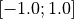
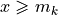
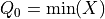
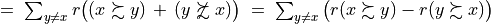
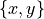

1. Digraph3 Tutorials
- Author:
Raymond Bisdorff, Emeritus Professor of Applied Mathematics and Computer Science, University of Luxembourg
- Url:
- Version:
Python 3.14 (release: 3.14.2)
- PDF version:
- Copyright:
R. Bisdorff 2013-2025
- New:
A case study on fairly matching students and internships
A case study on matching classmates into partner pairs
A tutorial on extracting partial rankings from a given outranking digraph
The Bachet ranking rules are illustrated in the tutorial on ranking with multiple incommensurable criteria
1.1. Contents
Working with digraphs and outranking digraphs
Evaluation and decision models and tools
Evaluation and decision case studies
Working with big outranking digraphs
HPC-Ranking of big sparse outranking digraphs
Moving on to undirected graphs
- Appendices
Abstract: The tutorials in this document describe the practical usage of our Digraph3 Python3 software resources in the field of Algorithmic Decision Theory and more specifically in outranking based Multiple Criteria Decision Aid (MCDA). They mainly illustrate practical tools for a Master Course on Algorithmic Decision Theory at the University of Luxembourg. The document contains first a set of tutorials introducing the main objects available in the Digraph3 collection of Python3 modules, like bipolar-valued digraphs, outranking digraphs, and multicriteria performance tableaux. The second and methodological set of tutorials is decision problem oriented and shows how to edit multicriteria performance tableaux, how to compute the potential winner(s) of an election, how to build a best choice recommendation, and how to rate or linearly rank with multiple incommensurable performance criteria. We finally discuss the fair intergroup and intragroup pairing problems. A third part presents three evaluation and decision case studies. A fourth and fifth part present tools for working with big outranking digraphs. The last part is devoted to undirected graphs with a tutorial on how to compute non isomorphic maximal independent sets (kernels) in the n-cycle graph. Special tutorials are finally introducing perfect graphs, like split, interval and permutation graphs.
1.2. Working with digraphs and outranking digraphs
This first part of the tutorials introduces the Digraph3 software collection of Python programming resources.
1.2.1. Working with the Digraph3 software resources
1.2.1.1. Purpose
The basic idea of the Digraph3 Python resources is to make easy python interactive sessions or write short Python3 scripts for computing all kind of results from a bipolar-valued digraph or graph. These include such features as best-choice recommendations, linear rankings, performance ratings, fair pairings, etc. Most of the available computing resources are meant to illustrate a Master Course on Algorithmic Decision Theory given at the University of Luxembourg in the context of its Master in Information and Computer Science (MICS).
The Python development of these computing resources offers the advantage of an easy to write and maintain OOP source code as expected from a performing scripting language without loosing on efficiency in execution times compared to compiled languages such as C++ or Java.
1.2.1.2. Downloading of the Digraph3 resources
Using the Digraph3 modules is easy. You only need to have installed on your system the Python programming language of version 3.+ (readily available under Linux and Mac OS).
Several download options (easiest under Linux or Mac OS-X) are given.
(Recommended) With a browser access, download and extract the latest distribution zip archive from
By using a git client either, cloning from github
...$ git clone https://github.com/rbisdorff/Digraph3
Or, from sourceforge.net
...$ git clone https://git.code.sf.net/p/digraph3/code Digraph3
See the Installation section in the Technical Reference.
1.2.1.3. Starting a Python3 terminal session
You may start an interactive Python3 terminal session in the Digraph3 directory.
1$HOME/.../Digraph3$ python3
2Python 3.12.3 (main, Aug 14 2025, 17:47:21) [GCC 13.3.0] on linux
3Type "help", "copyright", "credits" or "license" for more information.
4>>>
For exploring the classes and methods provided by the Digraph3 modules (see the Reference manual) enter the Python3 commands following the session prompts marked with >>> or ... . The lines without the prompt are console output from the Python3 interpreter.
1>>> from randomDigraphs import RandomDigraph
2>>> dg = RandomDigraph(order=5,arcProbability=0.5,seed=101)
3>>> dg
4 *------- Digraph instance description ------*
5 Instance class : RandomDigraph
6 Instance name : randomDigraph
7 Digraph Order : 5
8 Digraph Size : 12
9 Valuation domain : [-1.00; 1.00]
10 Determinateness : 100.000
11 Attributes : ['actions', 'valuationdomain', 'relation',
12 'order', 'name', 'gamma', 'notGamma',
13 'seed', 'arcProbability', ]
In Listing 1.1 we import, for instance, from the randomDigraphs module the RandomDigraph class in order to generate a random digraph object dg of order 5 - number of nodes called (decision) actions - and arc probability of 50%. We may directly inspect the content of python object dg (Line 3).
Note
For convenience of redoing the computations, all python code-blocks show in the upper right corner a specific copy button which allows to both copy only code lines, i.e. lines starting with ‘>>>’ or ‘…’, and stripping the console prompts. The copied code lines may hence be right away pasted into a Python console session. As of Python 3.13.+ it is necessary to switch in the python terminal console with the F3 function key into a console “paste mode” which allows pasting blocks of code. Press F3 key again to return to the regular prompt (see Python 3.13.+ Interactive Mode documentation).
1.2.1.4. Digraph object structure
All Digraph objects contain at least the following attributes (see Listing 1.1 Lines 11-12):
A name attribute, holding usually the actual name of the stored instance that was used to create the instance;
A ordered dictionary of digraph nodes called actions (decision alternatives) with at least a ‘name’ attribute;
An order attribute containing the number of graph nodes (length of the actions dictionary) automatically added by the object constructor;
A logical characteristic valuationdomain dictionary with three decimal entries: the minimum (-1.0, means certainly false), the median (0.0, means missing information) and the maximum characteristic value (+1.0, means certainly true);
A double dictionary called relation and indexed by an oriented pair of actions (nodes) and carrying a decimal characteristic value in the range of the previous valuation domain;
Its associated gamma attribute, a dictionary containing the direct successors, respectively predecessors of each action, automatically added by the object constructor;
Its associated notGamma attribute, a dictionary containing the actions that are not direct successors respectively predecessors of each action, automatically added by the object constructor.
See the technical documentation of the root digraphs.Digraph class.
1.2.1.5. Permanent storage
The save() method stores the digraph object dg in a file named ‘tutorialDigraph.py’,
>>> dg.save('tutorialDigraph')
*--- Saving digraph in file: <tutorialDigraph.py> ---*
with the following content
1from decimal import Decimal
2from collections import OrderedDict
3actions = OrderedDict([
4 ('a1', {'shortName': 'a1', 'name': 'random decision action'}),
5 ('a2', {'shortName': 'a2', 'name': 'random decision action'}),
6 ('a3', {'shortName': 'a3', 'name': 'random decision action'}),
7 ('a4', {'shortName': 'a4', 'name': 'random decision action'}),
8 ('a5', {'shortName': 'a5', 'name': 'random decision action'}),
9 ])
10valuationdomain = {'min': Decimal('-1.0'),
11 'med': Decimal('0.0'),
12 'max': Decimal('1.0'),
13 'hasIntegerValuation': True, # repr. format
14 }
15relation = {
16 'a1': {'a1':Decimal('-1.0'), 'a2':Decimal('-1.0'),
17 'a3':Decimal('1.0'), 'a4':Decimal('-1.0'),
18 'a5':Decimal('-1.0'),},
19 'a2': {'a1':Decimal('1.0'), 'a2':Decimal('-1.0'),
20 'a3':Decimal('-1.0'), 'a4':Decimal('1.0'),
21 'a5':Decimal('1.0'),},
22 'a3': {'a1':Decimal('1.0'), 'a2':Decimal('-1.0'),
23 'a3':Decimal('-1.0'), 'a4':Decimal('1.0'),
24 'a5':Decimal('-1.0'),},
25 'a4': {'a1':Decimal('1.0'), 'a2':Decimal('1.0'),
26 'a3':Decimal('1.0'), 'a4':Decimal('-1.0'),
27 'a5':Decimal('-1.0'),},
28 'a5': {'a1':Decimal('1.0'), 'a2':Decimal('1.0'),
29 'a3':Decimal('1.0'), 'a4':Decimal('-1.0'),
30 'a5':Decimal('-1.0'),},
31 }
1.2.1.6. Inspecting a Digraph object
We may reload (see Listing 1.2) the previously saved digraph object from the file named ‘tutorialDigraph.py’ with the Digraph class constructor and different show methods (see Listing 1.2 below) reveal us that dg is a crisp, irreflexive and connected digraph of order five.
1>>> from digraphs import Digraph
2>>> dg = Digraph('tutorialDigraph')
3>>> dg.showShort()
4 *----- show short -------------*
5 Digraph : tutorialDigraph
6 Actions : OrderedDict([
7 ('a1', {'shortName': 'a1', 'name': 'random decision action'}),
8 ('a2', {'shortName': 'a2', 'name': 'random decision action'}),
9 ('a3', {'shortName': 'a3', 'name': 'random decision action'}),
10 ('a4', {'shortName': 'a4', 'name': 'random decision action'}),
11 ('a5', {'shortName': 'a5', 'name': 'random decision action'})
12 ])
13 Valuation domain : {
14 'min': Decimal('-1.0'),
15 'max': Decimal('1.0'),
16 'med': Decimal('0.0'), 'hasIntegerValuation': True
17 }
18>>> dg.showRelationTable()
19 * ---- Relation Table -----
20 S | 'a1' 'a2' 'a3' 'a4' 'a5'
21 ------|-------------------------------
22 'a1' | -1 -1 1 -1 -1
23 'a2' | 1 -1 -1 1 1
24 'a3' | 1 -1 -1 1 -1
25 'a4' | 1 1 1 -1 -1
26 'a5' | 1 1 1 -1 -1
27 Valuation domain: [-1;+1]
28>>> dg.showComponents()
29 *--- Connected Components ---*
30 1: ['a1', 'a2', 'a3', 'a4', 'a5']
31>>> dg.showNeighborhoods()
32 Neighborhoods:
33 Gamma :
34 'a1': in => {'a2', 'a4', 'a3', 'a5'}, out => {'a3'}
35 'a2': in => {'a5', 'a4'}, out => {'a1', 'a4', 'a5'}
36 'a3': in => {'a1', 'a4', 'a5'}, out => {'a1', 'a4'}
37 'a4': in => {'a2', 'a3'}, out => {'a1', 'a3', 'a2'}
38 'a5': in => {'a2'}, out => {'a1', 'a3', 'a2'}
39 Not Gamma :
40 'a1': in => set(), out => {'a2', 'a4', 'a5'}
41 'a2': in => {'a1', 'a3'}, out => {'a3'}
42 'a3': in => {'a2'}, out => {'a2', 'a5'}
43 'a4': in => {'a1', 'a5'}, out => {'a5'}
44 'a5': in => {'a1', 'a4', 'a3'}, out => {'a4'}
The exportGraphViz() method generates in
the current working directory a ‘tutorialDigraph.dot’ file and a
‘tutorialdigraph.png’ picture of the tutorial digraph dg (see Fig. 1.1), if the graphviz tools are installed on your system [1].
1>>> dg.exportGraphViz('tutorialDigraph')
2 *---- exporting a dot file do GraphViz tools ---------*
3 Exporting to tutorialDigraph.dot
4 dot -Grankdir=BT -Tpng tutorialDigraph.dot -o tutorialDigraph.png
Fig. 1.1 The tutorial crisp digraph
Further methods are provided for inspecting this Digraph object dg , like the following showStatistics() method.
1>>> dg.showStatistics()
2 *----- general statistics -------------*
3 for digraph : <tutorialDigraph.py>
4 order : 5 nodes
5 size : 12 arcs
6 # indeterminate : 0 arcs
7 determinateness (%) : 100.0
8 arc density : 0.60
9 double arc density : 0.40
10 single arc density : 0.40
11 absence density : 0.20
12 strict single arc density: 0.40
13 strict absence density : 0.20
14 # components : 1
15 # strong components : 1
16 transitivity degree (%) : 60.0
17 : [0, 1, 2, 3, 4, 5]
18 outdegrees distribution : [0, 1, 1, 3, 0, 0]
19 indegrees distribution : [0, 1, 2, 1, 1, 0]
20 mean outdegree : 2.40
21 mean indegree : 2.40
22 : [0, 1, 2, 3, 4, 5, 6, 7, 8, 9, 10]
23 symmetric degrees dist. : [0, 0, 0, 0, 1, 4, 0, 0, 0, 0, 0]
24 mean symmetric degree : 4.80
25 outdegrees concentration index : 0.1667
26 indegrees concentration index : 0.2333
27 symdegrees concentration index : 0.0333
28 : [0, 1, 2, 3, 4, 'inf']
29 neighbourhood depths distribution: [0, 1, 4, 0, 0, 0]
30 mean neighbourhood depth : 1.80
31 digraph diameter : 2
32 agglomeration distribution :
33 a1 : 58.33
34 a2 : 33.33
35 a3 : 33.33
36 a4 : 50.00
37 a5 : 50.00
38 agglomeration coefficient : 45.00
These show methods usually rely upon corresponding compute methods, like the computeSize(), the computeDeterminateness() or the computeTransitivityDegree() method (see Listing 1.3 Line 5,7,16).
1>>> dg.computeSize()
2 12
3>>> dg.computeDeterminateness(InPercents=True)
4 Decimal('100.00')
5>>> dg.computeTransitivityDegree(InPercents=True)
6 Decimal('60.00')
Mind that show methods output their results in the Python console. We provide also some showHTML methods which output their results in a system browser’s window.
>>> dg.showHTMLRelationMap(relationName='r(x,y)',rankingRule=None)
Fig. 1.2 Browsing the relation map of the tutorial digraph
In Fig. 1.2 we find confirmed again that our random digraph instance dg, is indeed a crisp, i.e. 100% determined digraph instance.
1.2.1.7. Special Digraph instances
Some constructors for universal digraph instances, like the CompleteDigraph, the EmptyDigraph or the circular oriented GridDigraph constructor, are readily available (see Fig. 1.3).
1>>> from digraphs import GridDigraph
2>>> grid = GridDigraph(n=5,m=5,hasMedianSplitOrientation=True)
3>>> grid.exportGraphViz('tutorialGrid')
4 *---- exporting a dot file for GraphViz tools ---------*
5 Exporting to tutorialGrid.dot
6 dot -Grankdir=BT -Tpng TutorialGrid.dot -o tutorialGrid.png

Fig. 1.3 The 5x5 grid graph median split oriented
For more information about its resources, see the technical documentation of the digraphs module.
Back to Content Table
1.2.2. Working with the digraphs module
Abstract: The tutorial introduces bipolar-valued digraphs, the fundamental root type of all the specialised digraphs implemented in the Digraph3 modules. With the help of a randomly valued digraph, we illustrate some basic digraph manipulation methods, like drawing the digraph, dividing the digraph into its asymmetric and symmetric parts, separating the border from the inner part, computing associated dual, converse and codual digraphs, and operating symmetric and transitive closures
1.2.2.1. Random digraphs
We are starting this tutorial with generating a uniformly random [-1.0; +1.0]-valued digraph of order 7, denoted rdg and modelling, for instance, a binary relation (x S y) defined on the set of nodes of rdg. For this purpose, the Digraph3 collection contains a randomDigraphs module providing a specific RandomValuationDigraph constructor.
1>>> from randomDigraphs import RandomValuationDigraph
2>>> rdg = RandomValuationDigraph(order=7)
3>>> rdg.save('tutRandValDigraph')
4>>> from digraphs import Digraph
5>>> rdg = Digraph('tutRandValDigraph')
6>>> rdg
7 *------- Digraph instance description ------*
8 Instance class : Digraph
9 Instance name : tutRandValDigraph
10 Digraph Order : 7
11 Digraph Size : 22
12 Valuation domain : [-1.00;1.00]
13 Determinateness (%) : 75.24
14 Attributes : ['name', 'actions', 'order',
15 'valuationdomain', 'relation',
16 'gamma', 'notGamma']
With the save() method (see Listing 1.4 Line 3) we may keep a backup version for future use of rdg which will be stored in a file called tutRandValDigraph.py in the current working directory. The generic Digraph class constructor may restore the rdg object from the stored file (Line 4). We may easily inspect the content of rdg (Lines 5). The digraph size 22 indicates the number of positively valued arcs. The valuation domain is uniformly distributed in the interval  and the mean absolute arc valuation is (Line 12) .
All Digraph objects contain at least the list of attributes shown here: a name (string), a dictionary of actions (digraph nodes), an order (integer) attribute containing the number of actions, a valuationdomain dictionary, a double dictionary relation representing the adjency table of the digraph relation, a gamma and a notGamma dictionary containing the direct neighbourhood of each action.
As mentioned previously, the Digraph class provides some generic show… methods for exploring a given Digraph object, like the showShort(), showAll(), showRelationTable() and the showNeighborhoods() methods.
1>>> rdg.showAll()
2 *----- show detail -------------*
3 Digraph : tutRandValDigraph
4 *---- Actions ----*
5 ['1', '2', '3', '4', '5', '6', '7']
6 *---- Characteristic valuation domain ----*
7 {'med': Decimal('0.0'), 'hasIntegerValuation': False,
8 'min': Decimal('-1.0'), 'max': Decimal('1.0')}
9 * ---- Relation Table -----
10 r(xSy) | '1' '2' '3' '4' '5' '6' '7'
11 -------|-------------------------------------------
12 '1' | 0.00 -0.48 0.70 0.86 0.30 0.38 0.44
13 '2' | -0.22 0.00 -0.38 0.50 0.80 -0.54 0.02
14 '3' | -0.42 0.08 0.00 0.70 -0.56 0.84 -1.00
15 '4' | 0.44 -0.40 -0.62 0.00 0.04 0.66 0.76
16 '5' | 0.32 -0.48 -0.46 0.64 0.00 -0.22 -0.52
17 '6' | -0.84 0.00 -0.40 -0.96 -0.18 0.00 -0.22
18 '7' | 0.88 0.72 0.82 0.52 -0.84 0.04 0.00
19 *--- Connected Components ---*
20 1: ['1', '2', '3', '4', '5', '6', '7']
21 Neighborhoods:
22 Gamma:
23 '1': in => {'5', '7', '4'}, out => {'5', '7', '6', '3', '4'}
24 '2': in => {'7', '3'}, out => {'5', '7', '4'}
25 '3': in => {'7', '1'}, out => {'6', '2', '4'}
26 '4': in => {'5', '7', '1', '2', '3'}, out => {'5', '7', '1', '6'}
27 '5': in => {'1', '2', '4'}, out => {'1', '4'}
28 '6': in => {'7', '1', '3', '4'}, out => set()
29 '7': in => {'1', '2', '4'}, out => {'1', '2', '3', '4', '6'}
30 Not Gamma:
31 '1': in => {'6', '2', '3'}, out => {'2'}
32 '2': in => {'5', '1', '4'}, out => {'1', '6', '3'}
33 '3': in => {'5', '6', '2', '4'}, out => {'5', '7', '1'}
34 '4': in => {'6'}, out => {'2', '3'}
35 '5': in => {'7', '6', '3'}, out => {'7', '6', '2', '3'}
36 '6': in => {'5', '2'}, out => {'5', '7', '1', '3', '4'}
37 '7': in => {'5', '6', '3'}, out => {'5'}
Warning
Mind that most Digraph class methods will ignore the reflexive links by considering that they are indeterminate, i.e. the characteristic value for all action x is set to the median, i.e. indeterminate value 0.0 in this case (see Listing 1.5 Lines 12-18 and [BIS-2004a]).
1.2.2.2. Graphviz drawings
We may even get a better insight into the Digraph object rdg by looking at a graphviz drawing [1] .
1>>> rdg.exportGraphViz('tutRandValDigraph')
2 *---- exporting a dot file for GraphViz tools ---------*
3 Exporting to tutRandValDigraph.dot
4 dot -Grankdir=BT -Tpng tutRandValDigraph.dot -o tutRandValDigraph.png

Fig. 1.4 The tutorial random valuation digraph
Double links are drawn in bold black with an arrowhead at each end, whereas single asymmetrical links are drawn in black with an arrowhead showing the direction of the link. Notice the indeterminate relational situation () observed between nodes ‘6’ and ‘2’. The corresponding link is marked in gray with an open arrowhead in the drawing (see Fig. 1.4).
1.2.2.3. Asymmetrical and symmetrical parts
We may now extract both the symmetrical as well as the asymmetrical part of digraph dg with the help of two corresponding constructors (see Fig. 1.5).
1>>> from digraphs import AsymmetricPartialDigraph,
2... SymmetricPartialDigraph
3
4>>> asymDg = AsymmetricPartialDigraph(rdg)
5>>> asymDg.exportGraphViz()
6>>> symDg = SymmetricPartialDigraph(rdg)
7>>> symDg.exportGraphViz()

Fig. 1.5 Asymmetrical and symmetrical parts of the tutorial random valuation digraph
Note
The constructor of the partial objects asymDg and symDg puts to the indeterminate characteristic value all not-asymmetrical, respectively not-symmetrical links between nodes (see Fig. 1.5).
Here below, for illustration the source code of the relation constructor of the AsymmetricPartialDigraph class.
1 def _constructRelation(self):
2 actions = self.actions
3 Min = self.valuationdomain['min']
4 Max = self.valuationdomain['max']
5 Med = self.valuationdomain['med']
6 relationIn = self.relation
7 relationOut = {}
8 for a in actions:
9 relationOut[a] = {}
10 for b in actions:
11 if a != b:
12 if relationIn[a][b] >= Med and relationIn[b][a] <= Med:
13 relationOut[a][b] = relationIn[a][b]
14 elif relationIn[a][b] <= Med and relationIn[b][a] >= Med:
15 relationOut[a][b] = relationIn[a][b]
16 else:
17 relationOut[a][b] = Med
18 else:
19 relationOut[a][b] = Med
20 return relationOut
1.2.2.4. Border and inner parts
We may also extract the border -the part of a digraph induced by the union of its initial and terminal prekernels (see tutorial On computing digraph kernels)- as well as, the inner part -the complement of the border- with the help of two corresponding class constructors: GraphBorder and GraphInner (see Listing 1.6).
Let us illustrate these parts on a linear ordering obtained from the tutorial random valuation digraph rdg with the NetFlows ranking rule (see Listing 1.6 Line 2-3).
1>>> from digraphs import GraphBorder, GraphInner
2>>> from linearOrders import NetFlowsOrder
3>>> nf = NetFlowsOrder(rdg)
4>>> nf.netFlowsOrder
5 ['6', '4', '5', '3', '2', '1', '7']
6>>> bnf = GraphBorder(nf)
7>>> bnf.exportGraphViz(worstChoice=['6'],bestChoice=['7'])
8>>> inf = GraphInner(nf)
9>>> inf.exportGraphViz(worstChoice=['6'],bestChoice=['7'])

Fig. 1.6 Border and inner part of a linear order oriented by terminal and initial kernels
We may orient the graphviz drawings in Fig. 1.6 with the terminal node 6 (worstChoice parameter) and initial node 7 (bestChoice parameter), see Listing 1.6 Lines 7 and 9).
Note
The constructor of the partial digraphs bnf and inf (see Listing 1.6 Lines 3 and 6) puts to the indeterminate characteristic value all links not in the border, respectively not in the inner part (see Fig. 1.7).
Being much denser than a linear order, the actual inner part of our tutorial random valuation digraph dg is reduced to a single arc between nodes 3 and 4 (see Fig. 1.7).

Fig. 1.7 Border and inner part of the tutorial random valuation digraph rdg
Indeed, a complete digraph on the limit has no inner part –privacy!– at all as all its arcs appear in the border. Notice that empty and indeterminate digraphs admit both, an empty border and an empty inner part. When in general a given digraph –like an oriented chordless cycle– does not admit any initial or terminal prekernels, its border part will be empty and its inner part will contain all its arcs. The digraph’s relation is closed on itself and shows indeed no laterality [65].
1.2.2.5. Fusion by epistemic disjunction
We may recover object rdg from both partial objects asymDg and symDg, or as well from the border bg and the inner part ig, with a bipolar fusion constructor, also called epistemic disjunction, available via the FusionDigraph class (see Listing 1.4 Lines 12- 21).
1>>> from digraphs import FusionDigraph
2>>> fusDg = FusionDigraph(asymDg,symDg,operator='o-max')
3>>> # fusDg = FusionDigraph(bg,ig,operator='o-max')
4>>> fusDg.showRelationTable()
5 * ---- Relation Table -----
6 r(xSy) | '1' '2' '3' '4' '5' '6' '7'
7 -------|------------------------------------------
8 '1' | 0.00 -0.48 0.70 0.86 0.30 0.38 0.44
9 '2' | -0.22 0.00 -0.38 0.50 0.80 -0.54 0.02
10 '3' | -0.42 0.08 0.00 0.70 -0.56 0.84 -1.00
11 '4' | 0.44 -0.40 -0.62 0.00 0.04 0.66 0.76
12 '5' | 0.32 -0.48 -0.46 0.64 0.00 -0.22 -0.52
13 '6' | -0.84 0.00 -0.40 -0.96 -0.18 0.00 -0.22
14 '7' | 0.88 0.72 0.82 0.52 -0.84 0.04 0.00
The epistemic fusion operator o-max (see Listing 1.7 Line 2) works as follows.
Let r and r’ characterise two bipolar-valued epistemic situations.
o-max(r, r’ ) = max(r, r’ ) when both r and r’ are more or less valid or indeterminate;
o-max(r, r’ ) = min(r, r’ ) when both r and r’ are more or less invalid or indeterminate;
o-max(r, r’ ) = indeterminate otherwise.
1.2.2.6. Dual, converse and codual digraphs
We may as readily compute the dual (negated relation [14]), the converse (transposed relation) and the codual (transposed and negated relation) of the digraph instance rdg.
1>>> from digraphs import DualDigraph, ConverseDigraph, CoDualDigraph
2>>> ddg = DualDigraph(rdg)
3>>> ddg.showRelationTable()
4 -r(xSy) | '1' '2' '3' '4' '5' '6' '7'
5 --------|------------------------------------------
6 '1 ' | 0.00 0.48 -0.70 -0.86 -0.30 -0.38 -0.44
7 '2' | 0.22 0.00 0.38 -0.50 0.80 0.54 -0.02
8 '3' | 0.42 0.08 0.00 -0.70 0.56 -0.84 1.00
9 '4' | -0.44 0.40 0.62 0.00 -0.04 -0.66 -0.76
10 '5' | -0.32 0.48 0.46 -0.64 0.00 0.22 0.52
11 '6' | 0.84 0.00 0.40 0.96 0.18 0.00 0.22
12 '7' | 0.88 -0.72 -0.82 -0.52 0.84 -0.04 0.00
13>>> cdg = ConverseDigraph(rdg)
14>>> cdg.showRelationTable()
15 * ---- Relation Table -----
16 r(ySx) | '1' '2' '3' '4' '5' '6' '7'
17 --------|------------------------------------------
18 '1' | 0.00 -0.22 -0.42 0.44 0.32 -0.84 0.88
19 '2' | -0.48 0.00 0.08 -0.40 -0.48 0.00 0.72
20 '3' | 0.70 -0.38 0.00 -0.62 -0.46 -0.40 0.82
21 '4' | 0.86 0.50 0.70 0.00 0.64 -0.96 0.52
22 '5' | 0.30 0.80 -0.56 0.04 0.00 -0.18 -0.84
23 '6' | 0.38 -0.54 0.84 0.66 -0.22 0.00 0.04
24 '7' | 0.44 0.02 -1.00 0.76 -0.52 -0.22 0.00
25>>> cddg = CoDualDigraph(rdg)
26>>> cddg.showRelationTable()
27 * ---- Relation Table -----
28 -r(ySx) | '1' '2' '3' '4' '5' '6' '7'
29 --------|------------------------------------------
30 '1' | 0.00 0.22 0.42 -0.44 -0.32 0.84 -0.88
31 '2' | 0.48 0.00 -0.08 0.40 0.48 0.00 -0.72
32 '3' | -0.70 0.38 0.00 0.62 0.46 0.40 -0.82
33 '4' | -0.86 -0.50 -0.70 0.00 -0.64 0.96 -0.52
34 '5' | -0.30 -0.80 0.56 -0.04 0.00 0.18 0.84
35 '6' | -0.38 0.54 -0.84 -0.66 0.22 0.00 -0.04
36 '7' | -0.44 -0.02 1.00 -0.76 0.52 0.22 0.00
Computing the dual, respectively the converse, may also be done with prefixing the __neg__ (-) or the __invert__ (~) operator. The codual of a Digraph object may, hence, as well be computed with a composition (in either order) of both operations.
1>>> ddg = -rdg # dual of rdg
2>>> cdg = ~rdg # converse of rdg
3>>> cddg = ~(-rdg) # = -(~rdg) codual of rdg
4>>> (-(~rdg)).showRelationTable()
5 * ---- Relation Table -----
6 -r(ySx) | '1' '2' '3' '4' '5' '6' '7'
7 --------|------------------------------------------
8 '1' | 0.00 0.22 0.42 -0.44 -0.32 0.84 -0.88
9 '2' | 0.48 0.00 -0.08 0.40 0.48 0.00 -0.72
10 '3' | -0.70 0.38 0.00 0.62 0.46 0.40 -0.82
11 '4' | -0.86 -0.50 -0.70 0.00 -0.64 0.96 -0.52
12 '5' | -0.30 -0.80 0.56 -0.04 0.00 0.18 0.84
13 '6' | -0.38 0.54 -0.84 -0.66 0.22 0.00 -0.04
14 '7' | -0.44 -0.02 1.00 -0.76 0.52 0.22 0.00
1.2.2.7. Symmetric and transitive closures
Symmetric and transitive closures, by default in-location constructors, are also available (see Fig. 1.8). Note that it is a good idea, before going ahead with these in-site operations, who irreversibly modify the original rdg object, to previously make a backup version of rdg. The simplest storage method, always provided by the generic save(), writes out in a named file the python content of the Digraph object in string representation.
1>>> rdg.save('tutRandValDigraph')
2>>> rdg.closeSymmetric(InSite=True)
3>>> rdg.closeTransitive(InSite=True)
4>>> rdg.exportGraphViz('strongComponents')

Fig. 1.8 Symmetric and transitive in-site closures
The closeSymmetric() method (see Listing 1.9 Line 2), of complexity where n denotes the digraph’s order, changes, on the one hand, all single pairwise links it may detect into double links by operating a disjunction of the pairwise relations. On the other hand, the closeTransitive() method (see Listing 1.9 Line 3), implements the Roy-Warshall transitive closure algorithm of complexity . ([17])
Note
The same closeTransitive() method with a Reverse = True flag may be readily used for eliminating all transitive arcs from a transitive digraph instance. We make usage of this feature when drawing Hasse diagrams of TransitiveDigraph objects.
1.2.2.8. Strong components
As the original digraph rdg was connected (see above the result of the showShort() command), both the symmetric and the transitive closures operated together, will necessarily produce a single strong component, i.e. a complete digraph. We may sometimes wish to collapse all strong components in a given digraph and construct the so collapsed digraph. Using the StrongComponentsCollapsedDigraph constructor here will render a single hyper-node gathering all the original nodes (see Line 7 below).
1>>> from digraphs import StrongComponentsCollapsedDigraph
2>>> sc = StrongComponentsCollapsedDigraph(dg)
3>>> sc.showAll()
4 *----- show detail -----*
5 Digraph : tutRandValDigraph_Scc
6 *---- Actions ----*
7 ['_7_1_2_6_5_3_4_']
8 * ---- Relation Table -----
9 S | 'Scc_1'
10 -------|---------
11 'Scc_1' | 0.00
12 short content
13 Scc_1 _7_1_2_6_5_3_4_
14 Neighborhoods:
15 Gamma :
16 'frozenset({'7', '1', '2', '6', '5', '3', '4'})': in => set(), out => set()
17 Not Gamma :
18 'frozenset({'7', '1', '2', '6', '5', '3', '4'})': in => set(), out => set()
1.2.2.9. CSV storage
Sometimes it is required to exchange the graph valuation data in CSV format with a statistical package like R. For this purpose it is possible to export the digraph data into a CSV file. The valuation domain is hereby normalized by default to the range [-1,1] and the diagonal put by default to the minimal value -1.
1>>> rdg = Digraph('tutRandValDigraph')
2>>> rdg.saveCSV('tutRandValDigraph')
3 # content of file tutRandValDigraph.csv
4 "d","1","2","3","4","5","6","7"
5 "1",-1.0,0.48,-0.7,-0.86,-0.3,-0.38,-0.44
6 "2",0.22,-1.0,0.38,-0.5,-0.8,0.54,-0.02
7 "3",0.42,-0.08,-1.0,-0.7,0.56,-0.84,1.0
8 "4",-0.44,0.4,0.62,-1.0,-0.04,-0.66,-0.76
9 "5",-0.32,0.48,0.46,-0.64,-1.0,0.22,0.52
10 "6",0.84,0.0,0.4,0.96,0.18,-1.0,0.22
11 "7",-0.88,-0.72,-0.82,-0.52,0.84,-0.04,-1.0
It is possible to reload a Digraph instance from its previously saved CSV file content.
1>>> from digraphs import CSVDigraph
2>>> rdgcsv = CSVDigraph('tutRandValDigraph')
3>>> rdgcsv.showRelationTable(ReflexiveTerms=False)
4 * ---- Relation Table -----
5 r(xSy) | '1' '2' '3' '4' '5' '6' '7'
6 -------|------------------------------------------------------------
7 '1' | - -0.48 0.70 0.86 0.30 0.38 0.44
8 '2' | -0.22 - -0.38 0.50 0.80 -0.54 0.02
9 '3' | -0.42 0.08 - 0.70 -0.56 0.84 -1.00
10 '4' | 0.44 -0.40 -0.62 - 0.04 0.66 0.76
11 '5' | 0.32 -0.48 -0.46 0.64 - -0.22 -0.52
12 '6' | -0.84 0.00 -0.40 -0.96 -0.18 - -0.22
13 '7' | 0.88 0.72 0.82 0.52 -0.84 0.04 -
It is as well possible to show a colored version of the valued relation table in a system browser window tab (see Fig. 1.9).
1>>> rdgcsv.showHTMLRelationTable(tableTitle="Tutorial random digraph")

Fig. 1.9 The valued relation table shown in a browser window
Positive arcs are shown in green and negative arcs in red. Indeterminate -zero-valued- links, like the reflexive diagonal ones or the link between node 6 and node 2, are shown in gray.
1.2.2.10. Complete, empty and indeterminate digraphs
Let us finally mention some special universal classes of digraphs that are readily available in the digraphs module, like the CompleteDigraph, the EmptyDigraph and the IndeterminateDigraph classes, which put all characteristic values respectively to the maximum, the minimum or the median indeterminate characteristic value.
1>>> from digraphs import CompleteDigraph,EmptyDigraph,IndeterminateDigraph
2>>> e = EmptyDigraph(order=5)
3>>> e.showRelationTable()
4 * ---- Relation Table -----
5 S | '1' '2' '3' '4' '5'
6 ---- -|-----------------------------------
7 '1' | -1.00 -1.00 -1.00 -1.00 -1.00
8 '2' | -1.00 -1.00 -1.00 -1.00 -1.00
9 '3' | -1.00 -1.00 -1.00 -1.00 -1.00
10 '4' | -1.00 -1.00 -1.00 -1.00 -1.00
11 '5' | -1.00 -1.00 -1.00 -1.00 -1.00
12 >>> e.showNeighborhoods()
13 Neighborhoods:
14 Gamma :
15 '1': in => set(), out => set()
16 '2': in => set(), out => set()
17 '5': in => set(), out => set()
18 '3': in => set(), out => set()
19 '4': in => set(), out => set()
20 Not Gamma :
21 '1': in => {'2', '4', '5', '3'}, out => {'2', '4', '5', '3'}
22 '2': in => {'1', '4', '5', '3'}, out => {'1', '4', '5', '3'}
23 '5': in => {'1', '2', '4', '3'}, out => {'1', '2', '4', '3'}
24 '3': in => {'1', '2', '4', '5'}, out => {'1', '2', '4', '5'}
25 '4': in => {'1', '2', '5', '3'}, out => {'1', '2', '5', '3'}
26>>> i = IndeterminateDigraph()
27 * ---- Relation Table -----
28 S | '1' '2' '3' '4' '5'
29 ------|------------------------------
30 '1' | 0.00 0.00 0.00 0.00 0.00
31 '2' | 0.00 0.00 0.00 0.00 0.00
32 '3' | 0.00 0.00 0.00 0.00 0.00
33 '4' | 0.00 0.00 0.00 0.00 0.00
34 '5' | 0.00 0.00 0.00 0.00 0.00
35>>> i.showNeighborhoods()
36 Neighborhoods:
37 Gamma :
38 '1': in => set(), out => set()
39 '2': in => set(), out => set()
40 '5': in => set(), out => set()
41 '3': in => set(), out => set()
42 '4': in => set(), out => set()
43 Not Gamma :
44 '1': in => set(), out => set()
45 '2': in => set(), out => set()
46 '5': in => set(), out => set()
47 '3': in => set(), out => set()
48 '4': in => set(), out => set()
Note
Mind the subtle difference between the neighborhoods of an empty and the neighborhoods of an indeterminate digraph instance. In the first kind, the neighborhoods are known to be completely empty (see Listing 1.10 Lines 20-25) whereas, in the latter, nothing is known about the actual neighborhoods of the nodes (see Listing 1.10 Lines 43-48). These two cases illustrate why in the case of bipolar-valued digraphs, we may need both a gamma and a notGamma attribute.
1.2.2.11. Historical notes
It was Denis Bouyssou who first suggested us end of the nineties, when we started to work in Prolog on the computation of fuzzy digraph kernels with finite domain constraint solvers, that the 50% criteria significance majority is a very special value that has to be carefully taken into account. The converging solution vectors of the fixpoint kernel equations furthermore confirmed this special status of the 50% majority (see Computing bipolar-valued kernel membership characteristic vectors). These early insights led to the seminal articles on bipolar-valued epistemic logic where we introduced split truth/falseness semantics for a multi-valued logical processing of fuzzy preference modelling ([BIS-2000] and [BIS-2004a]). The characteristic valuation domain remained however the classical fuzzy [0.0;1.0] valuation domain.
It is only in 2004, when we succeeded in assessing the stability of the outranking digraph when solely ordinal criteria significance weights are given, that it became clear and evident for us that the characteristic valuation domain had to be shifted to a [-1.0;+1.0]-valued domain (see Ordinal correlation equals bipolar-valued relational equivalence and [BIS-2004b]). In this bipolar valuation, the 50% majority threshold corresponds now to the median 0.0 value, characterising with the correct zero value an epistemic indeterminateness -no knowledge- situation. Furthermore, identifying truth and falseness directly by the sign of the characteristic value revealed itself to be very efficient not only from a computational point of view, but also from scientific and semiotic perspectives. A positive (resp. negative) characteristic value now attest a logically valid (resp. invalid) statement and a negative affirmation now means a positive refutation and vice versa. Furthermore, the median zero value gives way to efficiently handling partial objects -like the border or the assymetric part of a digraph- and, even more important from a practical decision making point of view, any missing data.
The bipolar [-1.0;+1.0]-valued characteristic domain opened so the way to important new operations and concepts, like the disjunctive epistemic fusion operation seen before which confers the outranking digraph a logically sound and epistemically correct definition ([BIS-2013]). Kendall’s ordinal correlation index could be extended to a bipolar-valued relational equivalence index between digraphs (see Ordinal correlation equals bipolar-valued relational equivalence and [BIS-2012]). Making usage of the bipolar-valued Gaussian error function (erf) naturally led to defining a bipolar-valued likelihood function, where a positive, resp. negative, value gives the likelihood of an affirmation, resp. a refutation.
Back to Content Table
1.2.3. Working with the outrankingDigraphs module
Abstract: In this chapter, we introduce the main formal object of this book, namely the bipolar-valued outranking digraph. With a randomly generated multiple-criteria performance tableau, we construct the corresponding bipolar-valued outranking relation from pairwise comparisons. The resulting bipolar-valued outranking characteristics may be recoded. Finally, the codual outranking digraph gives us the associated strict outranking relation.
See also
The technical documentation of the outrankingDigraphs module.
1.2.3.1. Outranking digraph model
“The rule for the combination of independent concurrent arguments takes a very simple form when expressed in terms of the intensity of belief … It is this: Take the sum of all the feelings of belief which would be produced separately by all the arguments pro, subtract from that the similar sum for arguments con, and the remainder is the feeling of belief which ought to have the whole. This is a proceeding which men often resort to, under the name of balancing reasons.” – C.S. Peirce, The probability of induction (1878)
In this Digraph3 module, the BipolarOutrankingDigraph class from the outrankingDigraphs module provides our standard outranking digraph constructor. Such an instance represents a hybrid object of both, the PerformanceTableau type and the OutrankingDigraph type. A given object consists hence in:
an ordered dictionary of decision actions describing the potential decision actions or alternatives with ‘name’ and ‘comment’ attributes,
a possibly empty ordered dictionary of decision objectives with ‘name’ and ‘comment attributes, describing the multiple preference dimensions involved in the decision problem,
a dictionary of performance criteria describing preferentially independent and non-redundant decimal-valued functions used for measuring the performance of each potential decision action with respect to a decision objective,
a double dictionary evaluation gathering performance grades for each decision action or alternative on each criterion function.
the digraph valuationdomain, a dictionary with three entries: the minimum (-1.0, certainly outranked), the median (0.0, indeterminate) and the maximum characteristic value (+1.0, certainly outranking),
the outranking relation : a double dictionary defined on the Cartesian product of the set of decision alternatives capturing the credibility of the pairwise outranking situation computed on the basis of the performance differences observed between couples of decision alternatives on the given family of criteria functions.
Let us construct, for instance, a random bipolar-valued outranking digraph with seven decision actions denotes a1, a2, …, a7. We need therefore to first generate a corresponding random performance tableaux (see below).
1>>> from outrankingDigraphs import *
2>>> pt = RandomPerformanceTableau(numberOfActions=7,
3... seed=100)
4
5>>> pt
6*------- PerformanceTableau instance description ------*
7 Instance class : RandomPerformanceTableau
8 Seed : 100
9 Instance name : randomperftab
10 # Actions : 7
11 # Criteria : 7
12 NaN proportion (%) : 6.1
13>>> pt.showActions()
14 *----- show digraphs actions --------------*
15 key: a1
16 name: action #1
17 comment: RandomPerformanceTableau() generated.
18 key: a2
19 name: action #2
20 comment: RandomPerformanceTableau() generated.
21 ...
22 ...
23 key: a7
24 name: action #7
25 comment: RandomPerformanceTableau() generated.
In this example we consider furthermore a family of seven equisignificant cardinal criteria functions g1, g2, …, g7, measuring the performance of each alternative on a rational scale from 0.0 (worst) to 100.00 (best). In order to capture the grading procedure’s potential uncertainty and imprecision, each criterion function g1 to g7 admits three performance discrimination thresholds of 2.5, 5.0 and 80 pts for warranting respectively any indifference, preference or considerable performance difference situation.
1>>> pt.showCriteria()
2 *---- criteria -----*
3 g1 'RandomPerformanceTableau() instance'
4 Scale = [0.0, 100.0]
5 Weight = 1.0
6 Threshold ind : 2.50 + 0.00x ; percentile: 4.76
7 Threshold pref : 5.00 + 0.00x ; percentile: 9.52
8 Threshold veto : 80.00 + 0.00x ; percentile: 95.24
9 g2 'RandomPerformanceTableau() instance'
10 Scale = [0.0, 100.0]
11 Weight = 1.0
12 Threshold ind : 2.50 + 0.00x ; percentile: 6.67
13 Threshold pref : 5.00 + 0.00x ; percentile: 6.67
14 Threshold veto : 80.00 + 0.00x ; percentile: 100.00
15 ...
16 ...
17 g7 'RandomPerformanceTableau() instance'
18 Scale = [0.0, 100.0]
19 Weight = 1.0
20 Threshold ind : 2.50 + 0.00x ; percentile: 0.00
21 Threshold pref : 5.00 + 0.00x ; percentile: 4.76
22 Threshold veto : 80.00 + 0.00x ; percentile: 100.00
On criteria function g1 (see Lines 6-8 above) we observe, for instance, about 5% of indifference, about 90% of preference and about 5% of considerable performance difference situations. The individual performance evaluation of all decision alternative on each criterion are gathered in a performance tableau.
1>>> pt.showPerformanceTableau(Transposed=True,ndigits=1)
2 *---- performance tableau -----*
3 criteria | weights | 'a1' 'a2' 'a3' 'a4' 'a5' 'a6' 'a7'
4 ---------|----------|-----------------------------------------
5 'g1' | 1 | 15.2 44.5 57.9 58.0 24.2 29.1 96.6
6 'g2' | 1 | 82.3 43.9 NA 35.8 29.1 34.8 62.2
7 'g3' | 1 | 44.2 19.1 27.7 41.5 22.4 21.5 56.9
8 'g4' | 1 | 46.4 16.2 21.5 51.2 77.0 39.4 32.1
9 'g5' | 1 | 47.7 14.8 79.7 67.5 NA 90.7 80.2
10 'g6' | 1 | 69.6 45.5 22.0 33.8 31.8 NA 48.8
11 'g7' | 1 | 82.9 41.7 12.8 21.9 75.7 15.4 6.0
It is noteworthy to mention the three missing data (NA) cases: action a3 is missing, for instance, a grade on criterion g2 (see Line 6 above).
1.2.3.2. The bipolar-valued outranking digraph
Given the previous random performance tableau pt, the BipolarOutrankingDigraph constructor computes the corresponding bipolar-valued outranking digraph.
1>>> odg = BipolarOutrankingDigraph(pt)
2>>> odg
3 *------- Object instance description ------*
4 Instance class : BipolarOutrankingDigraph
5 Instance name : rel_randomperftab
6 # Actions : 7
7 # Criteria : 7
8 Size : 20
9 Determinateness (%) : 63.27
10 Valuation domain : [-1.00;1.00]
11 Attributes : [
12 'name', 'actions',
13 'criteria', 'evaluation', 'NA',
14 'valuationdomain', 'relation',
15 'order', 'gamma', 'notGamma', ...
16 ]
The resulting digraph contains 20 positive (valid) outranking relations. And, the mean majority criteria significance support of all the pairwise outranking situations is 63.3% (see Listing 1.11 Lines 8-9). We may inspect the complete [-1.0,+1.0]-valued adjacency table as follows.
1>>> odg.showRelationTable()
2 * ---- Relation Table -----
3 r(x,y)| 'a1' 'a2' 'a3' 'a4' 'a5' 'a6' 'a7'
4 ------|-------------------------------------------------
5 'a1' | +1.00 +0.71 +0.29 +0.29 +0.29 +0.29 +0.00
6 'a2' | -0.71 +1.00 -0.29 -0.14 +0.14 +0.29 -0.57
7 'a3' | -0.29 +0.29 +1.00 -0.29 -0.14 +0.00 -0.29
8 'a4' | +0.00 +0.14 +0.57 +1.00 +0.29 +0.57 -0.43
9 'a5' | -0.29 +0.00 +0.14 +0.00 +1.00 +0.29 -0.29
10 'a6' | -0.29 +0.00 +0.14 -0.29 +0.14 +1.00 +0.00
11 'a7' | +0.00 +0.71 +0.57 +0.43 +0.29 +0.00 +1.00
12 Valuation domain: [-1.0; 1.0]
Considering the given performance tableau pt, the BipolarOutrankingDigraph class constructor computes the characteristic value  of a pairwise outranking relation “” (see [BIS-2013], [ADT-L7]) in a default normalised valuation domain [-1.0,+1.0] with the median value 0.0 acting as indeterminate characteristic value. The semantics of
of a pairwise outranking relation “” (see [BIS-2013], [ADT-L7]) in a default normalised valuation domain [-1.0,+1.0] with the median value 0.0 acting as indeterminate characteristic value. The semantics of  are the following.
are the following.
When
, it is more True than False that x outranks y, i.e. alternative x is at least as well performing than alternative y on a weighted majority of criteria and there is no considerable negative performance difference observed in disfavour of x,
When
, it is more False than True that x outranks y, i.e. alternative x is not at least as well performing on a weighted majority of criteria than alternative y and there is no considerable positive performance difference observed in favour of x,
When
, it is indeterminate whether x outranks y or not.
1.2.3.3. Pairwise comparisons
From above given semantics, we may consider (see Line 5 above) that a1 outranks a2  , but not a7
, but not a7  . In order to comprehend the characteristic values shown in the relation table above, we may furthermore inspect the details of the pairwise multiple criteria comparison between alternatives a1 and a2.
. In order to comprehend the characteristic values shown in the relation table above, we may furthermore inspect the details of the pairwise multiple criteria comparison between alternatives a1 and a2.
1>>> odg.showPairwiseComparison('a1','a2')
2 *------------ pairwise comparison ----*
3 Comparing actions : (a1, a2)
4 crit. wght. g(x) g(y) diff | ind pref r()
5 ------------------------------- --------------------
6 g1 1.00 15.17 44.51 -29.34 | 2.50 5.00 -1.00
7 g2 1.00 82.29 43.90 +38.39 | 2.50 5.00 +1.00
8 g3 1.00 44.23 19.10 +25.13 | 2.50 5.00 +1.00
9 g4 1.00 46.37 16.22 +30.15 | 2.50 5.00 +1.00
10 g5 1.00 47.67 14.81 +32.86 | 2.50 5.00 +1.00
11 g6 1.00 69.62 45.49 +24.13 | 2.50 5.00 +1.00
12 g7 1.00 82.88 41.66 +41.22 | 2.50 5.00 +1.00
13 ----------------------------------------
14 Valuation in range: -7.00 to +7.00; r(x,y): +5/7 = +0.71
The outranking characteristic value represents the majority margin resulting from the difference between the weights of the criteria in favor and the weights of the criteria in disfavor of the statement that alternative a1 is at least as well performing as alternative a2. No considerable performance difference being observed above, no outranking polarisation is triggered in this pairwise comparison. Such a situation is, however, observed for instance when we pairwise compare the performances of alternatives a1 and a7.
1>>> odg.showPairwiseComparison('a1','a7')
2 *------------ pairwise comparison ----*
3 Comparing actions : (a1, a7)
4 crit. wght. g(x) g(y) diff | ind pref r() | v veto
5 ------------------------------- ------------------ -----------
6 g1 1.00 15.17 96.58 -81.41 | 2.50 5.00 -1.00 | 80.00 -1.00
7 g2 1.00 82.29 62.22 +20.07 | 2.50 5.00 +1.00 |
8 g3 1.00 44.23 56.90 -12.67 | 2.50 5.00 -1.00 |
9 g4 1.00 46.37 32.06 +14.31 | 2.50 5.00 +1.00 |
10 g5 1.00 47.67 80.16 -32.49 | 2.50 5.00 -1.00 |
11 g6 1.00 69.62 48.80 +20.82 | 2.50 5.00 +1.00 |
12 g7 1.00 82.88 6.05 +76.83 | 2.50 5.00 +1.00 |
13 ----------------------------------------
14 Valuation in range: -7.00 to +7.00; r(x,y)= +1/7 => 0.0
This time, we observe a 57.1% majority of criteria significance [(1/7 + 1)/2 = 0.571] warranting an as well as performing situation. Yet, we also observe a considerable negative performance difference on criterion g1 (see first row in the relation table above). Both contradictory facts trigger eventually an indeterminate outranking situation [BIS-2013].
1.2.3.4. Recoding the digraph valuation
All outranking digraphs, being of root type Digraph, inherit the methods available under this latter class. The characteristic valuation domain of a digraph may, for instance, be recoded with the recodeValutaion() method below to the integer range [-7,+7], i.e. plus or minus the global significance of the family of criteria considered in this example instance.
1>>> odg.recodeValuation(-7,+7)
2>>> odg.valuationdomain['hasIntegerValuation'] = True
3>>> Digraph.showRelationTable(odg,ReflexiveTerms=True)
4 * ---- Relation Table -----
5 r(x,y) | 'a1' 'a2' 'a3' 'a4' 'a5' 'a6' 'a7'
6 ---------|------------------------------------------
7 'a1' | 0 +5 +2 +2 +2 +2 0
8 'a2' | -5 0 -1 -1 +1 +2 -4
9 'a3' | -1 +2 0 -1 -1 0 -1
10 'a4' | 0 +1 +4 0 +2 +4 -3
11 'a5' | -1 0 +1 0 0 +2 -1
12 'a6' | -1 0 +1 -1 +1 0 0
13 'a7' | 0 +5 +4 +3 +2 0 0
14 Valuation domain: [-7;+7]
Warning
Notice that the reflexive self comparison characteristic  is set above by default to the median indeterminate valuation value 0; the reflexive terms of binary relation being generally ignored in most of the Digraph3 resources.
is set above by default to the median indeterminate valuation value 0; the reflexive terms of binary relation being generally ignored in most of the Digraph3 resources.
1.2.3.5. The strict outranking digraph
Bipolar-valued outranking digraphs are strongly complete, i.e. complete from a relational as well as from an epistemic perspective:
.
They furthermore verify the coduality principle: the converse (the inverse ~) of the dual [14] (the negation - ) correspond to their asymmetrical strict outranking part:
.
From both properties follows straightway that codual, i.e. strict, outranking digraphs are strongly asymmetrical:

{kind=link}
{kind=link}
See the advanced topic on characterizing bipolar-valued outranking digraphs, [BIS-2013], [ADT-L7] .
We may visualize the codual outranking digraph cdodg with a graphviz drawing [1].
1>>> cdodg = ~(-odg) # == -(~odg) == codual transform
2>>> cdodg.exportGraphViz('codualOdg')
3 *---- exporting a dot file for GraphViz tools ---------*
4 Exporting to codualOdg.dot
5 dot -Grankdir=BT -Tpng codualOdg.dot -o codualOdg.png
{kind=link}
Fig. 1.10 The strict (codual) outranking digraph
It becomes readily clear now from the picture above that both alternatives a1 and a7 are not outranked by any other alternatives. Hence, a1 and a7 appear as weak Condorcet winners and may be recommended as potential best decision actions in a selection decision problem.
Many more tools for exploiting bipolar-valued outranking digraphs are available in the Digraph3 resources (see the technical documentation of the outrankingDigraphs module and the perfTabs module).
1.2.3.6. Historical Notes
The seminal work on outranking digraphs goes back to the seventies and eighties when Bernard Roy joined the just starting University Paris-Dauphine and founded there the Laboratoire d’Analyse et de Modélisation de Systèmes pour l’Aide à la Décision (LAMSADE). The LAMSADE became the major site in the development of the outranking approach to multiple-criteria decision aiding ([ROY-1991]).
The ongoing success of the original outranking concept stems indeed from the fact that it is rooted in a sound pragmatism. The multiple-criteria performance tableau object, necessarily associated with a given outranking digraph, is indeed convincingly objective and meaningful ([ROY-1993]). And, ideas from social choice theory gave initially the insight that a pairwise voting mechanism à la Condorcet could provide an order-statistical tool for aggregating a set of preference points of view into what Marc Barbut called the central Condorcet point of view ([CON-1785] and [BAR-1980]); in fact the median of the multiple preference points of view, at minimal absolute Kendall’s ordinal correlation distance from all individual points of view (see Ordinal correlation equals bipolar-valued relational equivalence).
Considering thus each performance criterion as a subset of unanimous voters and balancing the votes in favour against considerable counter-performances in disfavour gave eventually rise to the concept of outranking situation, a distinctive feature of the Multiple-Criteria Decision Aiding approach ([ROY-1991]). A modern definition would be: an alternative x is said to outrank alternative y when – a significant majority of criteria confirm that alternative x has to be considered as at least as well evaluated as an alternative y (the concordance argument); and – no discordant criterion opens to significant doubt the validity of the previous confirmation by revealing a considerable counter-performance of alternative x compared to y (the discordance argument).
If the concordance argument was always well received, the discordance argument however, very confused in the beginning ([ROY-1966], [BIS-2009]), could only be handled in an epistemically correct and logically sound way by using a bipolar-valued epistemic logic ([BIS-2013]). The outranking situation had consequently to receive an explicit negative definition: An alternative x is said to do not outrank an alternative y when – a significant majority of criteria confirm that alternative x has to be considered as not at least as well evaluated as alternative y; and – no discordant criterion opens to significant doubt the validity of the previous confirmation by revealing a considerable better performance of alternative x compared to y.
Furthermore, the initial conjunctive aggregation of the concordance and discordance arguments had to be replaced by a disjunctive epistemic fusion operation, polarising in a logically sound and epistemically correct way the concordance with the discordance argument. This way, bipolar-valued outranking digraphs gained two very useful properties from a measure theoretical perspective. They are strongly complete; incomparability situations are no longer attested by the absence of positive outranking relations, but instead by epistemic indeterminateness. And, they verify the coduality principle: the negation of the epistemic ‘at least as well evaluated as’ situation corresponds formally to the strict converse epistemic ‘less well evaluated than’ situation.
Back to Content Table
1.3. Evaluation and decision methods and tools
This is the methodological part of the tutorials.
1.3.1. Computing a best choice recommendation
“… L’objectif des recherches était de mettre au point une méthode de résolution … qui soit facile à utiliser, qui nécessite des hypotèses simples, aussi peu nombreuses et peu contestables que possible et qui puisse répondre aux besoins…” [63] – B. Roy et al. (1966)
This tutorial presents the RUBIS best choice recommender system [BIS-2008]. Our approach is illustrated with a best office location selection problem. We show how to explore the given performance tableau and compute the corresponding bipolar-valued outranking digraph. After introducing the pragmatic principles that gouvern the RUBIS recommeder algorithm, we present some tools for computing a first choice recommendation.
See also
Lecture 7 notes from the MICS Algorithmic Decision Theory course: [ADT-L7].
1.3.1.1. What office location to choose ?
A SME, specialized in printing and copy services, has to move into new offices, and its CEO has gathered seven potential office locations (see Table 1.1).
ID |
Name |
Address |
Comment |
|---|---|---|---|
A |
Ave |
Avenue de la liberté |
High standing city center |
B |
Bon |
Bonnevoie |
Industrial environment |
C |
Ces |
Cessange |
Residential suburb location |
D |
Dom |
Dommeldange |
Industrial suburb environment |
E |
Bel |
Esch-Belval |
New and ambitious urbanization far from the city |
F |
Fen |
Fentange |
Out in the countryside |
G |
Gar |
Avenue de la Gare |
Main city shopping street |
Three decision objectives are guiding the CEO’s choice:
minimize the yearly costs induced by the moving,
maximize the future turnover of the SME,
maximize the new working conditions.
The decision consequences to take into account for evaluating the potential new office locations with respect to each of the three objectives are modelled by the following coherent family of criteria [26].
Objective |
ID |
Name |
Comment |
|---|---|---|---|
Yearly costs |
C |
Costs |
Annual rent, charges, and cleaning |
Future turnover |
St |
Standing |
Image and presentation |
Future turnover |
V |
Visibility |
Circulation of potential customers |
Future turnover |
Pr |
Proximity |
Distance from town center |
Working conditions |
W |
Space |
Working space |
Working conditions |
Cf |
Comfort |
Quality of office equipment |
Working conditions |
P |
Parking |
Available parking facilities |
The evaluation of the seven potential locations on each criterion are gathered in the following performance tableau.
Criterion |
weight |
A |
B |
C |
D |
E |
F |
G |
|---|---|---|---|---|---|---|---|---|
Costs |
45.0 |
35.0K€ |
17.8K€ |
6.7K€ |
14.1K€ |
34.8K€ |
18.6K€ |
12.0K€ |
Proximity |
32.0 |
100 |
20 |
80 |
70 |
40 |
0 |
60 |
Visibility |
26.0 |
60 |
80 |
70 |
50 |
60 |
0 |
100 |
Standing |
23.0 |
100 |
10 |
0 |
30 |
90 |
70 |
20 |
Work. space |
10.0 |
75 |
30 |
0 |
55 |
100 |
0 |
50 |
Work. comf. |
6.0 |
0 |
100 |
10 |
30 |
60 |
80 |
50 |
Parking |
3.0 |
90 |
30 |
100 |
90 |
70 |
0 |
80 |
Except the Costs criterion, all other criteria admit for grading a qualitative satisfaction scale from 0% (worst) to 100% (best). We may thus notice in Table 1.3 that location A (Ave) is the most expensive, but also 100% satisfying the Proximity as well as the Standing criterion. Whereas the locations C (Ces) is the cheapest one; providing however no satisfaction at all on both the Standing and the Working Space criteria.
In Table 1.3 we may also see that the Costs criterion admits the highest significance (45.0), followed by the Future turnover criteria (32.0 + 26.0 + 23.0 = 81.0), The Working conditions criteria are the less significant (10.0 + 6.0, + 3.0 = 19.0). It follows that the CEO considers maximizing the future turnover the most important objective (81.0), followed by the minizing yearly Costs objective (45.0), and less important, the maximizing working conditions objective (19.0).
Concerning yearly costs, we suppose that the CEO is indifferent up to a performance difference of 1000€, and he actually prefers a location if there is at least a positive difference of 2500€. The grades observed on the six qualitative criteria (measured in percentages of satisfaction) are very subjective and rather imprecise. The CEO is hence indifferent up to a satisfaction difference of 10%, and he claims a significant preference when the satisfaction difference is at least of 20%. Furthermore, a satisfaction difference of 80% represents for him a considerably large performance difference, triggering an outranking polarisation the case given (see [BIS-2013]).
1.3.1.2. The performance tableau
A Python encoded performance tableau is available for downloading here officeChoice.py.
We may inspect the performance tableau data with the computing resources provided by the perfTabs module.
1>>> from perfTabs import PerformanceTableau
2>>> t = PerformanceTableau('officeChoice')
3>>> t
4 *------- PerformanceTableau instance description ------*
5 Instance class : PerformanceTableau
6 Instance name : officeChoice
7 Actions : 7
8 Objectives : 3
9 Criteria : 7
10 NaN proportion (%) : 0.0
11 Attributes : ['name', 'actions', 'objectives',
12 'criteria', 'weightPreorder',
13 'NA', 'evaluation']
14>>> t.showPerformanceTableau()
15 *---- performance tableau -----*
16 Criteria | 'C' 'Cf' 'P' 'Pr' 'St' 'V' 'W'
17 Weights | 45.00 6.00 3.00 32.00 23.00 26.00 10.00
18 ---------|---------------------------------------------------------
19 'Ave' | -35000.00 0.00 90.00 100.00 100.00 60.00 75.00
20 'Bon' | -17800.00 100.00 30.00 20.00 10.00 80.00 30.00
21 'Ces' | -6700.00 10.00 100.00 80.00 0.00 70.00 0.00
22 'Dom' | -14100.00 30.00 90.00 70.00 30.00 50.00 55.00
23 'Bel' | -34800.00 60.00 70.00 40.00 90.00 60.00 100.00
24 'Fen' | -18600.00 80.00 0.00 0.00 70.00 0.00 0.00
25 'Gar' | -12000.00 50.00 80.00 60.00 20.00 100.00 50.00
We thus recover all the input data. To measure the actual preference discrimination we observe on each criterion, we may use the showCriteria() method.
1>>> t.showCriteria(IntegerWeights=True)
2 *---- criteria -----*
3 C 'Costs'
4 Scale = (Decimal('0.00'), Decimal('50000.00'))
5 Weight = 45
6 Threshold ind : 1000.00 + 0.00x ; percentile: 9.5
7 Threshold pref : 2500.00 + 0.00x ; percentile: 14.3
8 Cf 'Comfort'
9 Scale = (Decimal('0.00'), Decimal('100.00'))
10 Weight = 6
11 Threshold ind : 10.00 + 0.00x ; percentile: 9.5
12 Threshold pref : 20.00 + 0.00x ; percentile: 28.6
13 Threshold veto : 80.00 + 0.00x ; percentile: 90.5
14 ...
On the Costs criterion, 9.5% of the performance differences are considered insignificant and 14.3% below the preference discrimination threshold (lines 6-7). On the qualitative Working Comfort criterion, we observe again 9.5% of insignificant performance differences (line 11). Due to the imprecision in the subjective grading, we notice here 28.6% of performance differences below the preference discrimination threshold (Line 12). Furthermore, 100.0 - 90.5 = 9.5% of the performance differences are judged considerably large (Line 13); 80% and more of satisfaction differences triggering in fact an outranking polarisation. Same information is available for all the other criteria.
A colorful comparison of all the performances is shown on Fig. 1.11 by the heatmap statistics, illustrating the respective quantile class of each performance. As the set of potential alternatives is tiny, we choose here a classification into performance quintiles.
>>> t.showHTMLPerformanceHeatmap(colorLevels=5,
... rankingRule=None)
{kind=link}
Fig. 1.11 Unranked heatmap of the location choice performance tableau
Location A (Ave) shows extreme and contradictory performances: highest Costs and no Working Comfort on one hand, and total satisfaction with respect to Standing, Proximity and Parking facilities on the other hand. Similar, but opposite, situation is given for location C (Ces): unsatisfactory Working Space, no Standing and no Working Comfort on the one hand, and lowest Costs, best Proximity and Parking facilities on the other hand. Contrary to these contradictory alternatives, we observe two appealing compromise decision alternatives: locations D (Dom) and G (Gar). Finally, location F (Fen) is clearly the less satisfactory alternative of all.
In view of Fig. 1.11, what is now the office location we may recommend to the CEO as best choice ?
1.3.1.3. The outranking digraph
To help the CEO choosing the best office location, we are going to compute pairwise outrankings (see [BIS-2013]) on the set of potential locations. For two locations x and y, the situation “x outranks y”, denoted  , is given when there is:
, is given when there is:
a significant majority of criteria concordantly supporting that location x is at least as well evaluated as location y, and
no considerable counter-performance observed on any discordant criterion.
The credibility of each pairwise outranking situation (see [BIS-2013]), denoted  , is by default measured in a bipolar significance valuation [-1.00, 1.00], where positive terms
, is by default measured in a bipolar significance valuation [-1.00, 1.00], where positive terms  indicate a validated, and negative terms
indicate a validated, and negative terms  indicate a non-validated outrankings; whereas the median value
indicate a non-validated outrankings; whereas the median value  represents an indeterminate situation (see [BIS-2004a]).
represents an indeterminate situation (see [BIS-2004a]).
For computing such a bipolar-valued outranking digraph from the given performance tableau t, we use the BipolarOutrankingDigraph class constructor from the outrankingDigraphs module. The showHTMLRelationTable method shows below the resulting bipolar-valued adjacency matrix in a system browser window (see Fig. 1.12).
1>>> from outrankingDigraphs import BipolarOutrankingDigraph
2>>> g = BipolarOutrankingDigraph(t)
3>>> g.showHTMLRelationTable()
{kind=link}
Fig. 1.12 The office choice outranking digraph
In Fig. 1.12 we may notice that Alternative D is positively outranking all other potential office locations. D is hence a Condorcet winner. Yet, alternatives A (the most expensive) and C (the cheapest) are not outranked by any other locations; they are in fact weak Condorcet winners.
1>>> g.computeCondorcetWinners()
2 ['D']
3>>> g.computeWeakCondorcetWinners()
4 ['A', 'C', 'D']
For two locations x and y, the situation “x strictly outranks y”, denoted  , is given when x outranks y and y does not outrank y. From theory, we know that outranking digraphs are strongly complete, i.e. for all x and y in X, . And they verify the coduality principle:
, is given when x outranks y and y does not outrank y. From theory, we know that outranking digraphs are strongly complete, i.e. for all x and y in X, . And they verify the coduality principle:  (see On characterizing bipolar-valued outranking digraphs and [BIS-2013]).
(see On characterizing bipolar-valued outranking digraphs and [BIS-2013]).
We may hence compute a strict outranking digraph gcd with the codual transform, i.e. the converse of the negation (see Line 1 below) of digraph g (see tutorial on Working with the outrankingDigraphs module).
1>>> gcd = ~(-g) # codual transform
2>>> gcd
3*------- Object instance description ------*
4Instance class : BipolarOutrankingDigraph
5Instance name : converse-dual-rel_officeChoice
6Actions : 7
7Criteria : 7
8Size : 10
9Determinateness (%) : 71.43
10Valuation domain : [-1.00;1.00]
11Attributes : ['actions', 'ndigits', 'valuationdomain',
12 'objectives', 'criteria', 'evaluation',
13 'NA', 'order', 'gamma', 'notGamma',
14 'name', 'relation']
We observe in the resulting strict outranking digraph gcd 10 valid strict outranking situations (see Line 8) on which we are going to focus our search for a best choice recommendation.
1.3.1.4. Designing a best choice recommender system
Solving a best-choice problem consists traditionally in finding the unique best decision alternative. We adopt here instead a modern recommender system approach which shows a non empty subset of decision alternatives which contains by construction the potential best alternative(s).
The five pragmatic principles for computing such a best choice recommendation (BCR) are the following
P1: Elimination for well motivated reasons (external stability); each eliminated alternative has to be strictly outranked by at least one alternative in the BCR.
P2: Minimal size; the BCR must be as limited in cardinality as possible.
P3: Efficient and informative (internal stability); The BCR must not contain a self-contained sub-recommendation.
P4: Effectively better; the BCR must not be ambiguous in the sense that it may not be both a first choice as well as a last choice recommendation.
P5: Maximally determined; the BCR is, of all potential best-choice recommendations, the most determined one in the sense of the epistemic characteristics of the bipolar-valued outranking relation.
Let X be the set of potential decision alternatives. Let Y be a non empty subset of X, called a choice in the strict outranking digraph  . We can now qualify a BCR Y in following terms:
. We can now qualify a BCR Y in following terms:
Y is called strictly outranking (resp. outranked) when for all not selected alternative x there exists an alternative y in X retained such that
(resp.
). Such a choice verifies the external stability (principle P1).
Y is called weakly independent when for all x not equal y in Y we observe
. Such a choice verifies the internal stability (principle P3).
Y is conjointly a strictly outranking (resp. outranked) and weakly independent choice. Such a choice is called an initial (resp. terminal) prekernel (see the tutorial on computing digraph kernels). The initial prekernel now verifies principles P1, P2, P3 and P4.
To finally verify principle P5, we recommend among all potential initial prekernels, a *most determined* one, i.e. a strictly outranking and weakly independent choice supported by the highest criteria significance. And in this most determined initial prekernel we eventually retain the alternative(s) that are included with highest criteria significance (see the tutorial on Computing bipolar-valued kernel membership characteristic vectors).
Mind that a given strict outranking digraph may not always admit prekernels. This is the case when the digraph contains chordless circuits of odd length. Luckily, our strict outranking digraph gcd here does not show any chordless outranking circuits; a fact we can check with the showChordlessCircuits() method.
1>>> gcd.showChordlessCircuits()
2 No circuits observed in this digraph.
When observing chordless odd outranking circuits, we need to break them open with the digraphs.BrokenCocsDigraph class at their weakest link, before enumerating the prekernels.
We are ready now for building a first choice recommendation.
1.3.1.5. Computing the first choice recommendation
Following the previously stated pragmatic principles, potential first choice recommendations are determined by the initial prekernels –weakly independent and strictly outranking choices– of the strict outranking digraph (see the tutorial on computing digraph kernels). Any detected chordless odd outranking circuits are by default broken up (see [BIS-2008]).
1>>> g.showFirstChoiceRecommendation(ChoiceVector=True)
2 * --- First and last choice recommendation(s) ---*
3 (in decreasing order of determinateness)
4 Credibility domain: [-1.00,1.00]
5 === >> potential first choice(s)
6 * choice : ['A', 'C', 'D']
7 independence : 0.00
8 dominance : 0.10
9 absorbency : 0.00
10 covering (%) : 41.67
11 determinateness (%) : 50.59
12 - characteristic vector = { 'D': 0.02, 'G': 0.00, 'C': 0.00,
13 'A': 0.00, 'F': -0.02, 'E': -0.02,
14 'B': -0.02, }
15 === >> potential last choice(s)
16 * choice : ['A', 'F']
17 independence : 0.00
18 dominance : -0.52
19 absorbency : 1.00
20 covered (%) : 50.00
21 determinateness (%) : 50.00
22 - characteristic vector = { 'G': 0.00, 'F': 0.00, 'E': 0.00,
23 'D': 0.00, 'C': 0.00, 'B': 0.00,
24 'A': 0.00, }
It is interesting to notice in Listing 1.12 (Line 6) that the first choice recommendation consists actually in the set of weak Condorcet winners: ‘A’, ‘C’ and ‘D’. In the corresponding characteristic vector (see Lines 12-14), representing the bipolar credibility degree with which each alternative may indeed be considered a first choice candidate (see [BIS-2006a], [BIS-2006b]), we find confirmed that alternative D is the only positively validated one, whereas both extreme alternatives - A (the most expensive) and C (the cheapest) - stay in an indeterminate situation. They may be or not be potential first choice candidates besides D. Notice furthermore that location G is not included in the initial prekernel, yet, shows nevertheless an indeterminate situation with respect to being or not being a potential first choice candidate. Alternatives B, E and F are negatively included, i.e. positively excluded from this first choice recommendation. We may furthermore notice in Line 16 that both alternatives A and F are reported as potential strict outranked choices, hence as potential last choice candidates . The ambiguous first-ranked and last-ranked position of alternative A indicates its global incomparability status as shown in Fig. 1.13.
1>>> gcd.exportGraphViz(fileName='bestChoiceChoice',
2... firstChoice=['C','D'],
3... lastChoice=['F'])
4 *---- exporting a dot file for GraphViz tools ---------*
5 Exporting to bestOfficeChoice.dot
6 dot -Grankdir=BT -Tpng bestOfficeChoice.dot -o bestOfficeChoice.png
{kind=link}
Fig. 1.13 Best office choice recommendation from strict outranking digraph
To comprehend the indeterminate situation of location G, let us now compare the performances of alternatives D and G in a
pairwise perspective (see below). With the given preference discrimination thresholds, we notice that alternative G is actually certainly at least as good as alternative D:  and alternative D is also positively, but less credibly, at least as good as alternative G:
and alternative D is also positively, but less credibly, at least as good as alternative G:  (see Line 14 below).
(see Line 14 below).
1>>> g.showPairwiseComparison('G','D')
2 *------------ pairwise comparison ----*
3 Comparing actions : (G, D)
4 crit. wght. g(x) g(y) diff. | ind pref (G,D)/(D,G) |
5 =========================================================================
6 C 45.00 -12000.00 -14100.00 +2100.00 | 1000.00 2500.00 +45.00/+0.00 |
7 Cf 6.00 50.00 30.00 +20.00 | 10.00 20.00 +6.00/-6.00 |
8 P 3.00 80.00 90.00 -10.00 | 10.00 20.00 +3.00/+3.00 |
9 Pr 32.00 60.00 70.00 -10.00 | 10.00 20.00 +32.00/+32.00 |
10 St 23.00 20.00 30.00 -10.00 | 10.00 20.00 +23.00/+23.00 |
11 V 26.00 100.00 50.00 +50.00 | 10.00 20.00 +26.00/-26.00 |
12 W 10.00 50.00 55.00 -5.00 | 10.00 20.00 +10.00/+10.00 |
13 =========================================================================
14 Valuation in range: [-145.00;+145.00]; global concordance: +145.00/+36.00
Yet, we must as well notice that the cheapest alternative C is in fact strictly outranking alternative G:  , and
, and  (see Line 14 below).
(see Line 14 below).
1>>> g.showPairwiseComparison('C','G')
2 *------------ pairwise comparison ----*
3 Comparing actions : (C, G)/(G, C)
4 crit. wght. g(x) g(y) diff. | ind. pref. (C,G)/(G,C) |
5 ==========================================================================
6 C 45.00 -6700.00 -12000.00 +5300.00 | 1000.00 2500.00 +45.00/-45.00 |
7 Cf 6.00 10.00 50.00 -40.00 | 10.00 20.00 -6.00/ +6.00 |
8 P 3.00 100.00 80.00 +20.00 | 10.00 20.00 +3.00/ -3.00 |
9 Pr 32.00 80.00 60.00 +20.00 | 10.00 20.00 +32.00/-32.00 |
10 St 23.00 0.00 20.00 -20.00 | 10.00 20.00 -23.00/+23.00 |
11 V 26.00 70.00 100.00 -30.00 | 10.00 20.00 -26.00/+26.00 |
12 W 10.00 0.00 50.00 -50.00 | 10.00 20.00 -10.00/+10.00 |
13 =========================================================================
14 Valuation in range: -145.00 to +145.00; global concordance: +15.00/-15.00
Following pragmatic principle P3 –the required internal stability stating that a BCR should not contain a sub-recommendation– alternative G is hence dropped from our first-ranked list of alternatives. Yet, the credibility level of this outranking situation is not very high: 15/145 = 0.104 (55.2% significance majority). Considering a potential imprecise knowledge of the different criteria significance weights, it appears opportune to compute in Listing 1.13 below a 90% confident outranking digraph (see the advanced topic on computing confident outrankings with uncertain criteria significance weights).
1>>> cg = ConfidentBipolarOutrankingDigraph(t,confidence=90.0)
2>>> cg
3 *------- Object instance description ------*
4 Instance class : ConfidentBipolarOutrankingDigraph
5 Instance name : rel_officeChoice_CLT
6 Actions : 7
7 Criteria : 7
8 Size : 16
9 Uncertainty model : triangular(a=0,b=2w)
10 Likelihood domain : [-1.0;+1.0]
11 Confidence level : 0.80 (90.0%)
12 Confident credibility: > abs(0.104) (55.2%)
13 Determinateness (%) : 70.67
14 Valuation domain : [-1.00;1.00]
15>>> cg.showFirstChoiceRecommendation()
16 ***********************
17 First choice recommendation(s) (BCR)
18 (in decreasing order of determinateness)
19 Credibility domain: [-1.00,1.00]
20 === >> potential first choice(s)
21 * choice : ['A', 'C', 'D', 'G']
22 independence : 0.00
23 dominance : 0.42
24 absorbency : 0.00
25 covering (%) : 50.00
26 determinateness (%) : 50.00
27 - most credible action(s) = { }
28 === >> potential last choice(s)
29 * choice : ['A', 'B', 'F']
30 independence : 0.00
31 dominance : 0.00
32 absorbency : 1.00
33 covered (%) : 50.00
34 determinateness (%) : 50.00
35 - most credible action(s) = { }
The ConfidentBipolarOutrankingDigraph class constructor assumes here that the criteria significance weights are in fact triangular random variates in the range 0 to 2 times the given significance weights (Line 9). With this working hypothesis, we obtain a 90% confident outranking digraph cg where three outranking situations with a credibility in the range [-15/145; +15/145] are put to indeterminate (Line 8). The pairwise outranking situations between location C and location G are for instance not 90% confident and the first choice recommendation now includes consequently this latter location as a further potential best choice candidate (Line 21). Notice by the way that location ‘D’ is no more a Condorcet winner as the alternative is not 90% confidently outranking location C (Line 27).
To get a further interesting insight in the overall outranking situation, we finally make usage of the new PartialBachetRanking class imported from the transitiveDigraphs module, for computing a partial ranking of all the potential office locations (see the advanced topic on partially ranking strategies).
1.3.1.6. Partially ranking the outranking digraph
In Listing 1.14 Line 2, we operate the epistemic disjunctive fusion of the five best correlated linear rankings obtained from 200 random Bachet rankings (see Lines 4-8). In the resulting transitive partial outranking relation, alternatives A, C, D as well as G appear all ranked before B and E, whereas alternative F appears always last-ranked (see Lines 11 and 14).
1>>> from transitiveDigraphs import PartialBachetRanking
2>>> pbr = PartialBachetRanking(g,randomized=200,maxNbrOfRankings=5,seed=4)
3>>> pbr.bachetRankings
4 [(0.816, ['G', 'D', 'A', 'C', 'B', 'E', 'F']),
5 (0.788, ['G', 'D', 'E', 'B', 'A', 'C', 'F']),
6 (0.778, ['A', 'D', 'C', 'G', 'E', 'B', 'F']),
7 (0.758, ['D', 'A', 'C', 'G', 'E', 'B', 'F']),
8 (0.756, ['G', 'C', 'D', 'A', 'E', 'B', 'F'])]
9>>> pbr.showTransitiveDigraph()
10 Ranking by Choosing and Rejecting
11 1st ranked ['A', 'C', 'D', 'G']
12 2nd ranked ['B', 'E']
13 2nd last ranked ['B', 'E']
14 1st last ranked ['F']
15>>> pbr.exportGraphViz('officeChoiceRanking',ArrowHeads=True)
16 *---- exporting a dot file for GraphViz tools ---------*
17 Exporting to officeChoiceRanking.dot
18 dot -Grankdir=TB -Tpng officeChoiceRanking.dot -o officeChoiceRanking.png
{kind=link}
Fig. 1.14 Partially ranking the outranking digraph
Fig. 1.14 makes hence again clearly apparent the important fact that the most expensive location A and the cheapest location C, both, appear incomparable with all the other alternatives except the last-ranked location F. With the computePartialOutrankingConsensusQuality() method, we may check in Listing 1.15 the consensus quality of this partial ranking with respect to the marginal criterion rankings.
1>>> pbr.computePartialOutrankingConsensusQuality(Comments=True)
2 Consensus quality of partial ranking:
3 Criterion (weight) : ordinal correlation
4 ---------------------------------------
5 Proximity (0.221) : +1.000
6 Parking (0.021) : +0.900
7 Visibility (0.179) : +0.700
8 Costs (0.310) : +0.500
9 Working Space (0.069): +0.500
10 Standing (0.159) : -0.300
11 Comfort (0.041) : -0.700
12 Summary:
13 Weighted mean marginal correlation (a) : +0.478
14 Standard deviation (b) : +0.476
15 Partial ranking fairness (a)-(b) : +0.002
The partial Bachet ranking is a 100% consistent with the Proximity criterion, 85% consistent with Visibility and 75% consistent with the Costs criterion. These three criteria are the most significant ones (see Lines 5 aand 7). The least considered criteria are the Standing and even more the Comfort criterion. The partial Bachet ranking is indeed only 35% consistent with the Standing and only 15% consistent with the latter one (see Lines 10-11). The mean weighted marginal ordinal correlation index (+0.478, Line 13) over all the criteria shows eventually a partial ranking consensus supported by a nearly 75% significance majority.
We may finally use the best, with the outranking digraph g correlated (+0.816), Bachet ranking [‘G’, ‘D’, ‘A’, ‘C’, ‘B’, ‘E’, ‘F’] for showing in Fig. 1.15 a from best to worst ranked performance heatmap of all the potential office locations.
>>> t.showHTMLPerformanceHeatmap(actionsList=pbr.bachetRankings[0][1],
... Correlations=True)
{kind=link}
Fig. 1.15 The ranked performance heatmap of the potential office locations
In view of Fig. 1.15, office locations G or D make up convincing best choice recommendations with an apparent slight advantage for location G. Notice that both alternatives A and C, with their highly contrasted performance profiles, appear ranked in the midfield. Indeed, as they don’t compare well, they may neither be first nor last ranked. This is why, when such largely incomparable or extreme alternatives are observed, linear rankings may fail to deliver adequate first-choice recommendations. Notice finally in the tau row above similar marginal ordinal correlation indexes as observed before in Listing 1.15 Lines 5-11.
The digraphs.Digraph class now readily provides the showBachetChoiceRecommendation() method for directly showing the first and last choices obtained from the previous partial Bachet ranking result accessible in the g.pbr attribute (see Listing 1.16 Line 1).
1>>> g.showBachetChoiceRecommendation(randomized=200,seed=4)
2 *---- Bachet Choice Recommendations ----*
3 Ranking by recursively first and last choosing
4 1st ranked ['A', 'C', 'D', 'G']
5 2nd ranked ['B', 'E']
6 2nd last ranked ['B', 'E']
7 1st last ranked ['F']
8 Quality of partial Bachet ranking
9 Crisp ordinal correlation : +1.000
10 Epistemic determination : +0.337
11 Bipolar-valued equivalence : +0.337
12 Execution time: 0.207 seconds
13>>> g.pbr
14 *------- Digraph instance description ------*
15 Instance class : PartialBachetRanking
16 Instance name : converse-dual-rel_officeChoice_wk
17 Digraph Order : 7
18 Digraph Size : 10
19 Valuation domain : [-1.00;1.00]
20 Determinateness (%) : 73.81
21 Attributes : ['actions', 'ndigits', 'valuationdomain',
22 'objectives', 'criteria', 'evaluation', 'NA',
23 'order', 'runTimes', 'nbrThreads', 'startMethod',
24 'gamma', 'notGamma', 'name', 'relation',
25 'rankings', 'bachetRankings', 'randomized',
26 'seed', 'maxNbrOfRankings', 'Polarised',
27 'partialBachetCorrelation', 'rankingByChoosing']
Due to the Condorcet consistency of the polarised Bachet ranking rule, the partial ranking digraph g.pbr represents here faithfully an actual transitive and asymmetrical part of the given outranking digraph g (see Line 13 and Applications of bipolar-valued base 3 encoded Bachet numbers).
Our first choice recommendations eventually appear essentially depending on the very importance the CEO is attaching to each one of his three decision objectives. In the setting here, where he considers that maximizing the future turnover is the most important objective (81/145 = 0.56) followed by minimizing the Costs (45/145 = 0.31) and, less important, maximizing the working conditions (19/145 = 0.13), compromise locations G as well as D become the potential first choices candidates. However, if minimizing the Costs does not play much a role, it would perhaps be better to recommend the most advantageous location A; or if, on the contrary, the Costs objective does matter a lot, recommending the cheapest alternative C could definitely become the more convincing first choice recommendation.
It might be worth, as an exercise, to modify the criteria significance weights in the ‘officeChoice.py’ data file [64] in such a way that
all three decision objectives are considered equally important, and
all criteria under an objective are considered equi-significant.
What will become the best choice recommendation under this working hypothesis?
The next tutorial shows how to create or edit a performance tableau.
1.3.1.7. Historical Notes
The seminal article by Bernard Roy et al. about the outranking based best choice selection procedure called ELECTRE dates from 1966 and was actively promoted thereafter by the LAMSADE [61], Roy’s research laboratory at the newly founded University Paris 9 Dauphine ([ROY-1966]). Our critical perspective on this seminal text may be consulted in [BIS-2009]. Revolutionary for that time was the idea to solve this classical decision problem not by looking for the best decision alternative, but recommending, with the help of the kernel of the outranking digraph, a subset of potential best choice candidates.
The originally proposed meticulous illustrative performance tableau may be modelled at present by the following performance tableau data stored under the name roy66.py in the examples directory of the Digraph3 resources.
Criteria |
Actions’ performance grades |
Grading |
Veto |
||||||
|---|---|---|---|---|---|---|---|---|---|
Ident. |
weight |
a1 |
a2 |
a3 |
a4 |
a5 |
a6 |
Scale |
Threshold |
g1 |
3 |
2 |
0 |
0 |
4 |
4 |
4 |
0-4 |
2.5 |
g2 |
3 |
4 |
1 |
2 |
1 |
2 |
2 |
0-4 |
2.5 |
g3 |
3 |
1 |
1 |
0 |
2 |
3 |
4 |
0-4 |
2.5 |
g4 |
1 |
2 |
4 |
4 |
2 |
2 |
3 |
0-4 |
2.5 |
g5 |
1 |
4 |
2 |
1 |
2 |
3 |
3 |
0-4 |
2.5 |
Underlining the fact that the ELECTRE method takes into account solely ordinal performance grades, the originally proposed actions’ grades were of ordinal linguistic nature: bad, weak, average, good and excellent. They have here arbitrarily been recoded as 0, 1, 2, 3 and 4. To show the usefulness of taking conjointly into account concordance and discordance arguments, an effective veto discrimination threshold of 2.5 is proposed, implying the polarisation of the outranking statements when the difference between two grades on a performance criterion is greater than two linguistic levels.
In Listing 1.17 below we compute the corresponding outranking digraph g (Lines 2-3).
1>>> from outrankingDigraphs import *
2>>> pt = PerformanceTableau('roy66')
3>>> g = BipolarOutrankingDigraph(pt)
4>>> ranking = g.computeNetFlowsRanking()
5>>> ranking
6 ['a6', 'a5', 'a1', 'a4', 'a2', 'a3']
7>>> g.showHTMLRelationTable(actionsList=ranking)
8>>> g.showHTMLPerformanceHeatmap(colorLevels=5,actionsList=ranking)
Using the NetFlows ranking: a6 > a5 > a1 > a4 > a2 > a3 (Lines 6 and 7) we show in Fig. 1.16 below the corresponding valued adjacency matrix. The bipolar-valued outranking relation makes apparent that only the pair (a1, a4) shows in fact mutual vetoed outrankings statements. All other polarisations are certainly confirming either a valid (+1.0) or an invalid (-1.0) pairwise outranking situation. One may furthermore notice that alternatives a5 and a6 are indifferent Condorcet winners, i.e. they outrank both all other alternatives. And, alternatives a2 and a3 are indifferent Condorcet losers, i.e. they are outranked by all the other alternatives.
Using again the same NetFlows ranking: a6 > a5 > a1 > a4 > a2 > a3 (Line 9), we show in Fig. 1.16 below also the corresponding very convincing performance heatmap.

Fig. 1.16 Solving the seminal best choice recommendation problem
Finally, in Listing 1.18, our Rubis best choice recommendation confirms, with the help of the initial and terminal kernels of the corresponding strict outranking digraph (Lines 1,7 and 16), that alternatives a6 and a5 are potential first choice candidates and alternatives a3 and a2 are potential last choice candidates. The graphviz drawing of the strict outranking digraph, oriented by the initial and terminal kernels, shows its transitive structure (see Fig. 1.16).
1>>> g.showRubisBestChoiceRecommendation(CoDual=True)
2 Rubis choice recommendation
3 ***********************
4 First choice recommendation(s) (BCR)
5 Credibility domain: [-1.00,1.00]
6 === >> potential first choice(s)
7 * choice : ['a5', 'a6']
8 independence : 0.27
9 dominance : 0.45
10 absorbency : -1.00
11 covering (%) : 100.00
12 determinateness (%) : 89.39
13 - first choice credibilities = { 'a6': 1.00, 'a5': 0.27,
14 'a4': -0.45, 'a3': -1.00, 'a2': -1.00, 'a1': -1.00, }
15 === >> potential last choice(s)
16 * choice : ['a2', 'a3']
17 independence : 0.27
18 dominance : -1.00
19 absorbency : 1.00
20 covered (%) : 100.00
21 determinateness (%) : 71.21
22 - last choice credibilities = { 'a3': 0.45, 'a2': 0.27,
23 'a6': -0.45, 'a5': -0.45, 'a4': -0.45, 'a1': -0.45, }
24>>> (~(-g)).isTransitive()
25 True
26>>> (~(-g)).exportGraphViz('roy66',firstChoice=['a6','a5'],
27... lastChoice=['a2','a3'])
28 *---- exporting a dot file for GraphViz tools ---------*
29 Exporting to roy66V1.dot
30 dot -Grankdir=BT -Tpng roy66.dot -o roy66.png
Following now a seminar presentation in 2005 at the LAMSADE, where the author promoted this usage of the strict outranking kernels as suitable candidates for delivering choice recommendations [BIS-2005], a critical discussion started about the methodological requirement for a convincing best choice recommendation to be internally stable (pragmatic principle P3). Denis Bouyssou illustrated his doubts with the potential outranking digraph shown in Fig. 1.17.
{kind=link}
Fig. 1.17 The internal stability of a best choice recommendation in question
His commentary was the following: The only initial kernel of this digraph is the choice {a, d}. Yet, it is an ambiguous recommendation, as this choice is conjointly an initial –outranking– and terminal –outranked– kernel. If the instability of the best choice recommendation is, however, not considered a problem then the choice {a, b} shows the most convincing strict outranking quality and could be recommended in priority as best choice candidates. Adding alternative d to the set of potential best choice candidates is not convincing as there exists in the given digraph the node b, which is better evaluated than d. The argument that the incomparability between a and d should favour d as potential best choice is interesting but another hypothesis could be that b perhaps outranks a. In this latter case, it seams clear that the actual best choice recommendation should be reduced to node b, unless one disposes of other information, like a performance tableau and/or the actual computation method of the outranking situations. In any case, one has to be very clear about the available information when judging a best choice procedure.
It became thereafter obvious for us all that both the lack of a specific performance tableau as well as the lack of a precisely defined algorithm for computing valid outranking situations do not allow to judge if a given digraph does indeed model a potential outranking relation. In our present bipolar-valued epistemic approach, a valid outranking digraph instance, following from a given performance tableau and the disjunctive epistemic fusion construction of the outranking relation, will necessarily verify the strong completeness condition and the coduality principle. As a consequence, incomparability situations are now modelled by epistemic indeterminateness and not by the actual absence of a reciprocal outranking relation.
The digraph put forward by Bouyssou in the October 2005 discussion is not strongly complete –node a is not outranking node d and vice versa– and does hence not represent, in our present sense, a valid outranking digraph instance. Yet, it may be a partial tournament and as such it could be a strict outranking digraph, i.e. the asymmetrical part –the codual– of a valid outranking digraph. In this case, nodes a and d –the kernel of the strict outranking digraph– would actually positively outrank each other and, hence, represent both indifferently the natural best choice candidates. However, in this not strict outranking digraph, node a becomes also the unique Condorcet winner –positively outranking all other nodes– and gives hence the evident unique best choice recommendation.
Only after 2013, when the strong completeness and the coduality properties of the outranking digraph were discovered, became it obvious that the initial prekernels of the strict outranking digraph, coupled with the solution of the corresponding kernel equation system, could in fact deliver convincing best choice recommendations (see [BIS-2013]). Yet, Bouyssou and the critical audience of the 2005 seminar would be satisfied to see their doubts somehow confirmed by the solution of the office location choice problem shown previously. Indeed, the initial prekernel {A, C, D} of the corresponding strict outranking digraph does not retain location G –as it is actually strictly outranked by location C – and proposes solely location D as credible best choice candidate. This latter location appears however certainly outranked by location G. Keeping location G in an indeterminate situation with being or not being a potential best choice candidate in the solution of the corresponding kernel equation system shows that the resulting bipolar-valued choice vector may be an essential complement of information. Showing solely an initial prekernel appears hence not necessarily sufficient for determining the actual best choice alternative(s). Similarly, questioning the confidence of outranking statements showing, the case given, weak positive credibilities, may result in a more convincing first-choice recommendation.
But it is the new Bachet partial ranking rule that allows nowadays to compute a partial transitive tournament, very close in a bipolar-valued ordinal correlation sense to the actual transitive part of the given strict outranking digraph, that definitely supports our kernels based recommending approach. The unique initial and terminal kernels of such a transitive asymmetric digraph, easily found via a topological sort algorithm, may indeed deliver more effectively convincing first and/or last choice recommendations.
See also
Lecture 7 notes from the MICS Algorithmic Decision Theory course: [ADT-L7].
Back to Content Table
1.3.2. How to create a new performance tableau instance
In this tutorial we illustrate a way of creating a new PerformanceTableau instance by editing a template with 5 decision alternatives, 3 decision objectives and 6 performance criteria.
1.3.2.1. Editing a template file
For this purpose we provide the following perfTab_Template.py file in the examples directory of the Digraph3 resources.
1#########################################################
2# Digraph3 documentation
3# Template for creating a new PerformanceTableau instance
4# (C) R. Bisdorff Mar 2021
5# Digraph3/examples/perfTab_Template.py
6##########################################################
7from decimal import Decimal
8from collections import OrderedDict
9#####
10# edit the decision actions
11# avoid special characters, like '_', '/' or ':',
12# in action identifiers and short names
13actions = OrderedDict([
14 ('a1', {
15 'shortName': 'action1',
16 'name': 'decision alternative a1',
17 'comment': 'some specific features of this alternative',
18 }),
19 ...
20 ...
21])
22#####
23# edit the decision objectives
24# adjust the list of performance criteria
25# and the total weight (sum of the criteria weights)
26# per objective
27objectives = OrderedDict([
28 ('obj1', {
29 'name': 'decision objective obj1',
30 'comment': "some specific features of this objective",
31 'criteria': ['g1', 'g2'],
32 'weight': Decimal('6'),
33 }),
34 ...
35 ...
36 ])
37#####
38# edit the performance criteria
39# adjust the objective reference
40# Left Decimal of a threshold = constant part and
41# right Decimal = proportional part of the threshold
42criteria = OrderedDict([
43 ('g1', {
44 'shortName': 'crit1',
45 'name': "performance criteria 1",
46 'objective': 'obj1',
47 'preferenceDirection': 'max',
48 'comment': 'measurement scale type and unit',
49 'scale': (Decimal('0.0'), Decimal('100.0'),
50 'thresholds': {'ind': (Decimal('2.50'), Decimal('0.0')),
51 'pref': (Decimal('5.00'), Decimal('0.0')),
52 'veto': (Decimal('60.00'), Decimal('0.0'))
53 },
54 'weight': Decimal('3'),
55 }),
56 ...
57 ...
58 ])
59#####
60# default missing data symbol = -999
61NA = Decimal('-999')
62#####
63# edit the performance evaluations
64# criteria to be minimized take negative grades
65evaluation = {
66 'g1': {
67 'a1':Decimal("41.0"),
68 'a2':Decimal("100.0"),
69 'a3':Decimal("63.0"),
70 'a4':Decimal('23.0'),
71 'a5': NA,
72 },
73 # g2 is of ordinal type and scale 0-10
74 'g2': {
75 'a1':Decimal("4"),
76 'a2':Decimal("10"),
77 'a3':Decimal("6"),
78 'a4':Decimal('2'),
79 'a5':Decimal('9'),
80 },
81 # g3 has preferenceDirection = 'min'
82 'g3': {
83 'a1':Decimal("-52.2"),
84 'a2':NA,
85 'a3':Decimal("-47.3"),
86 'a4':Decimal('-35.7'),
87 'a5':Decimal('-68.00'),
88 },
89 ...
90 ...
91 }
92####################
The template file, shown in Listing 1.19, contains first the instructions to import the required Decimal and OrderedDict classes (see Lines 7-8). Four main sections are following: the potential decision actions, the decision objectives, the performance criteria, and finally the performance evaluation.
1.3.2.2. Editing the decision alternatives
Decision alternatives are stored in attribute actions under the OrderedDict format (see the OrderedDict description in the Python documentation).
Required attributes of each decision alternative, besides the object identifier, are: shortName, name and comment (see Lines 15-17). The shortName attribute is essentially used when showing the performance tableau or the performance heatmap in a browser view.
Note
Mind that graphviz drawings require digraph actions’ (nodes) identifier strings without any special characters like _ or /.
Decision actions descriptions are stored in the order of which they appear in the stored instance file. The OrderedDict object keeps this given order when iterating over the decision alternatives.
The random performance tableau models presented in the previous tutorial use the actions attribute for storing special features of the decision alternatives. The Cost-Benefit model, for instance, uses a type attribute for distinguishing between advantageous, neutral and cheap alternatives. The 3-Objectives model keeps a detailed record of the performance profile per decision objective and the corresponding random generators per performance criteria (see Lines 7- below).
1>>> t = Random3ObjectivesPerformanceTableau()
2>>> t.actions
3 OrderedDict([
4 ('p01', {'shortName': 'p01',
5 'name': 'action p01 Eco~ Soc- Env+',
6 'comment': 'random public policy',
7 'Eco': 'fair',
8 'Soc': 'weak',
9 'Env': 'good',
10 'profile': {'Eco':'fair',
11 'Soc':'weak',
12 'Env':'good'}
13 'generators': {'ec01': ('triangular', 50.0, 0.5),
14 'so02': ('triangular', 30.0, 0.5),
15 'en03': ('triangular', 70.0, 0.5),
16 ...
17 },
18 }
19 ),
20 ...
21 ])
The second section of the template file concerns the decision objectives.
1.3.2.3. Editing the decision objectives
The minimal required attributes (see Listing 1.19 Lines 27-33) of the ordered decision objectives dictionary, besides the individual objective identifiers, are name, comment, criteria (the list of significant performance criteria) and weight (the importance of the decision objective). The latter attribute contains the sum of the significance weights of the objective’s criteria list.
The objectives attribute is methodologically useful for specifying the performance criteria significance in building decision recommendations. Mostly, we assume indeed that decision objectives are all equally important and the performance criteria are equi-significant per objective. This is, for instance, the default setting in the random 3-Objectives performance tableau model.
1>>> t = Random3ObjectivesPerformanceTableau()
2>>> t.objectives
3 OrderedDict([
4 ('Eco',
5 {'name': 'Economical aspect',
6 'comment': 'Random3ObjectivesPerformanceTableau generated',
7 'criteria': ['ec01', 'ec06', 'ec09'],
8 'weight': Decimal('48')}),
9 ('Soc',
10 {'name': 'Societal aspect',
11 'comment': 'Random3ObjectivesPerformanceTableau generated',
12 'criteria': ['so02', 'so12'],
13 'weight': Decimal('48')}),
14 ('Env',
15 {'name': 'Environmental aspect',
16 'comment': 'Random3ObjectivesPerformanceTableau generated',
17 'criteria': ['en03', 'en04', 'en05', 'en07',
18 'en08', 'en10', 'en11', 'en13'],
19 'weight': Decimal('48')})
20 ])
The importance weight sums up to 48 for each one of the three example decision objectives shown in Listing 1.20 (Lines 8,13 and 19), so that the significance of each one of the 3 economic criteria is set to 16, of both societal criteria is set to 24, and of each one of the 8 environmental criteria is set to 8.
Note
Mind that the objectives attribute is always present in a PerformanceTableau object instance, even when empty. In this case, we consider that each performance criterion canonically represents in fact its own decision objective. The criterion significance equals in this case the corresponding decision objective’s importance weight.
The third section of the template file concerns now the performance criteria.
1.3.2.4. Editing the family of performance criteria
In order to assess how well each potential decision alternative is satisfying a given decision objective, we need performance criteria, i.e. decimal-valued grading functions gathered in an ordered criteria dictionary. The required attributes (see Listing 1.21), besides the criteria identifiers, are the usual shortName, name and comment. Specific for a criterion are furthermore the objective reference, the significance weight, the grading scale (minimum and maximum performance values), the preferenceDirection (‘max’ or ‘min’) and the performance discrimination thresholds.
1criteria = OrderedDict([
2 ('g1', {
3 'shortName': 'crit1',
4 'name': "performance criteria 1",
5 'comment': 'measurement scale type and unit',
6 'objective': 'obj1',
7 'weight': Decimal('3'),
8 'scale': (Decimal('0.0'), Decimal('100.0'),
9 'preferenceDirection': 'max',
10 'thresholds': {'ind': (Decimal('2.50'), Decimal('0.0')),
11 'pref': (Decimal('5.00'), Decimal('0.0')),
12 'veto': (Decimal('60.00'), Decimal('0.0'))
13 },
14 }),
15 ...
16 ...])
In our bipolar-valued outranking approach, all performance criteria implement decimal-valued grading functions, where preferences are either increasing or decreasing with measured performances.
Note
In order to model a coherent performance tableau, the decision criteria must satisfy two methodological requirements:
Independance: Each decision criterion implements a grading that is functionally independent of the grading of the other decision criteria, i.e. the performance measured on one of the criteria does not constrain the performance measured on any other criterion.
Non redundancy: Each performance criterion is only significant for a single decision objective.
In order to take into account any, usually unavoidable, imprecision of the performance grading procedures, we may specify three performance discrimination thresholds: an indifference (‘ind’), a preference (‘pref’) and a considerable performance difference (‘veto’) threshold (see Listing 1.21 Lines 10-12). The left decimal number of a threshold description tuple indicates a constant part, whereas the right decimal number indicates a proportional part.
On the template performance criterion g1, shown in Listing 1.21, we observe for instance a grading scale from 0.0 to 100.0 with a constant indifference threshold of 2.5, a constant preference threshold of 5.0, and a constant considerable performance difference threshold of 60.0. The latter theshold will trigger, the case given, a polarisation of the outranking statement [BIS-2013] .
In a random Cost-Benefit performance tableau model we may obtain by default the following content.
1>>> tcb = RandomCBPerformanceTableau()
2>>> tcb.showObjectives()
3 *------ decision objectives -------"
4 C: Costs
5 c1 random cardinal cost criterion 6
6 Total weight: 6.00 (1 criteria)
7 ...
8 ...
9>>> tcb.criteria
10 OrderedDict([
11 ('c1', {'preferenceDirection': 'min',
12 'scaleType': 'cardinal',
13 'objective': 'C',
14 'shortName': 'c1',
15 'name': 'random cardinal cost criterion',
16 'scale': (0.0, 100.0),
17 'weight': Decimal('6'),
18 'randomMode': ['triangular', 50.0, 0.5],
19 'comment': 'Evaluation generator: triangular law ...',
20 'thresholds':
21 OrderedDict([
22 ('ind', (Decimal('1.49'), Decimal('0'))),
23 ('pref', (Decimal('3.7'), Decimal('0'))),
24 ('veto', (Decimal('67.71'), Decimal('0')))
25 ])
26 }
27 ...
28 ...
29 ])
Criterion c1 appears here (see Listing 1.22) to be a cardinal criterion to be minimized and significant for the Costs (C) decision objective. We may use the showCriteria() method for printing the corresponding performance discrimination thresholds.
1>>> tcb.showCriteria(IntegerWeights=True)
2 *---- criteria -----*
3 c1 'Costs/random cardinal cost criterion'
4 Scale = (0.0, 100.0)
5 Weight = 6
6 Threshold ind : 1.49 + 0.00x ; percentile: 5.13
7 Threshold pref : 3.70 + 0.00x ; percentile: 10.26
8 Threshold veto : 67.71 + 0.00x ; percentile: 96.15
The indifference threshold on this criterion amounts to a constant value of 1.49 (Line 6 above). More or less 5% of the observed performance differences on this criterion appear hence to be insignificant. Similarly, with a preference threshold of 3.70, about 90% of the observed performance differences are preferentially significant (Line 7). Furthermore, 100.0 - 96.15 = 3.85% of the observed performance differences appear to be considerable (Line 8) and will trigger a polarisation of the corresponding outranking statements.
After the performance criteria description, we are ready for recording the actual performance table.
1.3.2.5. Editing the performance table
The individual grades of each decision alternative on each decision criterion are recorded in a double criterion x action dictionary called evaluation (see Listing 1.23). As we may encounter missing data cases, we previously define a missing data symbol NA which is set here to a value disjoint from all the measurement scales, by default Decimal(‘-999’) (Line 2).
1#----------
2NA = Decimal('-999')
3#----------
4evaluation = {
5 'g1': {
6 'a1':Decimal("41.0"),
7 'a2':Decimal("100.0"),
8 'a3':Decimal("63.0"),
9 'a4':Decimal('23.0'),
10 'a5': NA, # missing data
11 },
12 ...
13 ...
14 # g3 has preferenceDirection = 'min'
15 'g3': {
16 'a1':Decimal("-52.2"), # negative grades
17 'a2':NA,
18 'a3':Decimal("-47.3"),
19 'a4':Decimal('-35.7'),
20 'a5':Decimal('-68.00'),
21 },
22 ...
23 ...
24 }
Notice in Listing 1.23 (Lines 16- ) that on a criterion with preferenceDirection = ‘min’ all performance grades are recorded as negative values.
We may now inspect the eventually recorded complete template performance table.
1>>> from perfTabs import PerformanceTableau
2>>> t = PerformanceTableau('perfTab_Template')
3>>> t.showPerformanceTableau(ndigits=1)
4 *---- performance tableau -----*
5 Criteria | 'g1' 'g2' 'g3' 'g4' 'g5' 'g6'
6 Actions | 3 3 6 2 2 2
7 ---------|-----------------------------------------
8 'action1' | 41.0 4.0 -52.2 71.0 63.0 22.5
9 'action2' | 100.0 10.0 NA 89.0 30.7 75.0
10 'action3' | 63.0 6.0 -47.3 55.4 63.5 NA
11 'action4' | 23.0 2.0 -35.7 83.5 37.5 54.9
12 'action5' | NA 9.0 -68.0 10.0 88.0 75.0
We may furthermore compute the associated outranking digraph and check if we observe any polarised outranking situtations.
1>>> from outrankingDigraphs import BipolarOutrankingDigraph
2>>> g = BipolarOutrankingDigraph(t)
3>>> g.showPolarisations()
4 *---- Negative polarisations ----*
5 number of negative polarisations : 1
6 1: r(a4 >= a2) = -0.44
7 criterion: g1
8 Considerable performance difference : -77.00
9 Veto discrimination threshold : -60.00
10 Polarisation: r(a4 >= a2) = -0.44 ==> -1.00
11 *---- Positive polarisations ----*
12 number of positive polarisations: 1
13 1: r(a2 >= a4) = 0.56
14 criterion: g1
15 Considerable performance difference : 77.00
16 Counter-veto threshold : 60.00
17 Polarisation: r(a2 >= a4) = 0.56 ==> +1.00
Indeed, due to the considerable performance difference (77.00) oberved on performance criterion g1, alternative a2 for sure outranks alternative a4, respectively a4 for sure does not outrank a2.
1.3.2.6. Inspecting the template outranking relation
Let us have a look at the outranking relation table.
1>>> g.showRelationTable()
2 * ---- Relation Table -----
3 r | 'a1' 'a2' 'a3' 'a4' 'a5'
4 -----|-----------------------------------
5 'a1' | +1.00 -0.44 -0.22 -0.11 +0.06
6 'a2' | +0.44 +1.00 +0.33 +1.00 +0.28
7 'a3' | +0.67 -0.33 +1.00 +0.00 +0.17
8 'a4' | +0.11 -1.00 +0.00 +1.00 +0.06
9 'a5' | -0.06 -0.06 -0.17 -0.06 +1.00
We may notice in the outranking relation table above (see Listing 1.24) that decision alternative a2 positively outranks all the other four alternatives (Line 6). Similarly, alternative a5 is positively outranked by all the other alternatives (see Line 9). We may orient this way the graphviz drawing of the template outranking digraph.
>>> g.exportGraphViz(fileName= 'template',
... firstChoice =['a2'],
... lastChoice=['a5'])
*---- exporting a dot file for GraphViz tools ---------*
Exporting to template.dot
dot -Grankdir=BT -Tpng template.dot -o template.png
{kind=link}
Fig. 1.18 The template outranking digraph
In Fig. 1.18 we may notice that the template outranking digraph models in fact a partial order on the five potential decision alternatives. Alternatives action3 (‘a3’ ) and action4 (‘a4’) appear actually incomparable. In Listing 1.24 their pairwise outranking chracteritics show indeed the indeterminate value 0.00 (Lines 7-8). We may check their pairwise comparison as follows.
1>>> g.showPairwiseComparison('a3','a4')
2 *------------ pairwise comparison ----*
3 Comparing actions : (a3, a4)
4 crit. wght. g(x) g(y) diff | ind pref r() |
5 ------------------------------- -------------------
6 g1 3.00 63.00 23.00 +40.00 | 2.50 5.00 +3.00 |
7 g2 3.00 6.00 2.00 +4.00 | 0.00 1.00 +3.00 |
8 g3 6.00 -47.30 -35.70 -11.60 | 0.00 10.00 -6.00 |
9 g4 2.00 55.40 83.50 -28.10 | 2.09 4.18 -2.00 |
10 g5 2.00 63.50 37.50 +26.00 | 0.00 10.00 +2.00 |
11 g6 NA 54.90
12 Outranking characteristic value: r(a3 >= a4) = +0.00
13 Valuation in range: -18.00 to +18.00
The incomparability situation between ‘a3’ and ‘a4’ results here from a perfect balancing of positive (+8) and negative (-8) criteria significance weights.
1.3.2.7. Ranking the template peformance tableau
We may eventually rank the five decision alternatives with a heatmap browser view following the Copeland ranking rule which consistently reproduces the partial outranking order shown in Fig. 1.18.
>>> g.showHTMLPerformanceHeatmap(ndigits=1,colorLevels=5,
... Correlations=True,rankingRule='Copeland',
... pageTitle='Heatmap of the template performance tableau')
{kind=link}
Due to a 11 against 7 plurality tyranny effect, the Copeland ranking rule, essentially based on crisp majority outranking counts, puts here alternative action5 (a5) last, despite its excellent grades observed on criteria g2, g5 and g6. A slightly fairer ranking result may be obtained with the NetFlows ranking rule.
>>> g.showHTMLPerformanceHeatmap(ndigits=1,colorLevels=5,
... Correlations=True,rankingRule='NetFlows',
... pageTitle='Heatmap of the template performance tableau')
{kind=link}
It might be opportune to furthermore study the robustness of the apparent outranking situations when assuming only ordinal or uncertain criteria significance weights. If interested in mainly objectively unopposed (multipartisan) outranking situations, one might also try the UnOpposedOutrankingDigraph constructor. (see the advanced topics of the Digraph3 documentation).
Back to Content Table
1.3.3. Generating random performance tableaux with the randPerfTabs module
1.3.3.1. Introduction
The randomPerfTabs module provides several constructors for generating random performance tableaux models of different kind, mainly for the purpose of testing implemented methods and tools presented and discussed in the Algorithmic Decision Theory course at the University of Luxembourg. This tutorial concerns the most useful models.
The simplest model, called RandomPerformanceTableau, generates a set of n decision actions, a set of m real-valued performance criteria, ranging by default from 0.0 to 100.0, associated with default discrimination thresholds: 2.5 (ind.), 5.0 (pref.) and 60.0 (veto). The generated performances are Beta(2.2) distributed on each measurement scale.
One of the most useful models, called RandomCBPerformanceTableau, proposes a performance tableau involving two decision objectives, named Costs (to be minimized) respectively Benefits (to be maximized); its purpose being to generate more or less contradictory performances on these two, usually conflicting, objectives. Low costs will randomly be coupled with low benefits, whereas high costs will randomly be coupled with high benefits.
Many public policy decision problems involve three often conflicting decision objectives taking into account economical, societal as well as environmental aspects. For this type of performance tableau model, we provide a specific model, called Random3ObjectivesPerformanceTableau.
Deciding which students, based on the grades obtained in a number of examinations, validate or not their academic studies, is the common decision practice of universities and academies. To thouroughly study these kind of decision problems, we provide a corresponding performance tableau model, called RandomAcademicPerformanceTableau, which gathers grades obtained by a given number of students in a given number of weighted courses.
In order to study aggregation of election results (see the tutorial on Computing the winner of an election with the votingProfiles module) in the context of bipolar-valued outranking digraphs, we provide furthermore a specific performance tableau model called RandomRankPerformanceTableau which provides ranks (linearly ordered performances without ties) of a given number of election candidates (decision actions) for a given number of weighted voters (performance criteria).
1.3.3.2. Random standard performance tableaux
The RandomPerformanceTableau class, the simplest of the kind, specializes the generic PerformanceTableau class, and takes the following parameters.
numberOfActions := nbr of decision actions.
numberOfCriteria := number performance criteria.
weightDistribution := ‘random’ (default) | ‘fixed’ | ‘equisignificant’:
If ‘random’, weights are uniformly selected randomlyfrom the given weight scale;If ‘fixed’, the weightScale must provided a corresponding weightsdistribution;If ‘equisignificant’, all criterion weights are put to unity.weightScale := [Min,Max] (default =(1,numberOfCriteria).
IntegerWeights := True (default) | False (normalized to proportions of 1.0).
commonScale := [a,b]; common performance measuring scales (default = [0.0,100.0])
commonThresholds := [(q0,q1),(p0,p1),(v0,v1)]; common indifference(q), preference (p) and considerable performance difference discrimination thresholds. For each threshold type x in {q,p,v}, the float x0 value represents a constant percentage of the common scale and the float x1 value a proportional value of the actual performance measure. Default values are [(2.5.0,0.0),(5.0,0.0),(60.0,0,0)].
commonMode := common random distribution of random performance measurements (default = (‘beta’,None,(2,2)) ):
(‘uniform’,None,None), uniformly distributed float values on the given common scales’ range [Min,Max].(‘normal’,*mu*,*sigma*), truncated Gaussian distribution, by default mu = (b-a)/2 and sigma = (b-a)/4.(‘triangular’,*mode*,*repartition*), generalized triangular distribution with a probability repartition parameter specifying the probability mass accumulated until the mode value. By default, mode = (b-a)/2 and repartition = 0.5.(‘beta’,None,(alpha,beta)), a beta generator with default alpha=2 and beta=2 parameters.valueDigits := <integer>, precision of performance measurements (2 decimal digits by default).
missingDataProbability := 0 <= float <= 1.0 ; probability of missing performance evaluation on a criterion for an alternative (default 0.025).
NA := <Decimal> (default = -999); missing data symbol.
Code example.
1>>> from randomPerfTabs import RandomPerformanceTableau
2>>> t = RandomPerformanceTableau(numberOfActions=21,numberOfCriteria=13,seed=100)
3>>> t.actions
4 {'a01': {'comment': 'RandomPerformanceTableau() generated.',
5 'name': 'random decision action'},
6 'a02': { ... },
7 ...
8 }
9>>> t.criteria
10 {'g01': {'thresholds': {'ind' : (Decimal('10.0'), Decimal('0.0')),
11 'veto': (Decimal('80.0'), Decimal('0.0')),
12 'pref': (Decimal('20.0'), Decimal('0.0'))},
13 'scale': [0.0, 100.0],
14 'weight': Decimal('1'),
15 'name': 'digraphs.RandomPerformanceTableau() instance',
16 'comment': 'Arguments: ; weightDistribution=random;
17 weightScale=(1, 1); commonMode=None'},
18 'g02': { ... },
19 ...
20 }
21>>> t.evaluation
22 {'g01': {'a01': Decimal('15.17'),
23 'a02': Decimal('44.51'),
24 'a03': Decimal('-999'), # missing evaluation
25 ...
26 },
27 ...
28 }
29>>> t.showHTMLPerformanceTableau()

Fig. 1.19 Browser view on random performance tableau instance
Note
Missing (NA) evaluation are registered in a performance tableau by default as Decimal(‘-999’) value (see Listing 1.25 Line 24). Best and worst performance on each criterion are marked in light green, respectively in light red.
1.3.3.3. Random Cost-Benefit performance tableaux
We provide the RandomCBPerformanceTableau class for generating random Cost versus Benefit organized performance tableaux following the directives below:
We distinguish three types of decision actions: cheap, neutral and expensive ones with an equal proportion of 1/3. We also distinguish two types of weighted criteria: cost criteria to be minimized, and benefit criteria to be maximized; in the proportions 1/3 respectively 2/3.
Random performances on each type of criteria are drawn, either from an ordinal scale [0;10], or from a cardinal scale [0.0;100.0], following a parametric triangular law of mode: 30% performance for cheap, 50% for neutral, and 70% performance for expensive decision actions, with constant probability repartition 0.5 on each side of the respective mode.
Cost criteria use mostly cardinal scales (3/4), whereas benefit criteria use mostly ordinal scales (2/3).
The sum of weights of the cost criteria by default equals the sum weights of the benefit criteria: weighDistribution = ‘equiobjectives’.
On cardinal criteria, both of cost or of benefit type, we observe following constant preference discrimination quantiles: 5% indifferent situations, 90% strict preference situations, and 5% considerable performance differences.
- Parameters:
If numberOfActions is None, a uniform random number between 10 and 31 of cheap, neutral or advantageous actions (equal 1/3 probability each type) actions is instantiated, otherwise a minimal integer greater than 5 is required
If numberOfCriteria is None, a uniform random number between 5 and 21 of cost or benefit criteria (1/3 respectively 2/3 probability) is instantiated, otherwise a poitive integer is required
weightDistribution := {‘equiobjectives’|’fixed’|’random’|’equisignificant’ (default = ‘equisignificant’)}
Default weightScale for ‘random’ weightDistribution is 1 - numberOfCriteria
All cardinal criteria are evaluated with decimals between 0.0 and 100.0 whereas ordinal criteria are evaluated with integers between 0 and 10
commonPercentiles := {‘ind’:5, ‘pref’:10, ‘veto’:95} (default) are expressed in percents (reversed for vetoes) and only concern cardinal criteria.
missingDataProbability := 0 <= float <= 1.0 ; probability of missing performance evaluation on a criterion for an alternative (default 0.025).
NA := <Decimal> (default = -999); missing data symbol.
Warning
Minimal number of decision actions required is 6 !
Example Python session
1>>> from randomPerfTabs import RandomCBPerformanceTableau
2>>> t = RandomCBPerformanceTableau(
3... numberOfActions=7,
4... numberOfCriteria=5,
5... weightDistribution='equiobjectives',
6... commonPercentiles={'ind':0.05,'pref':0.10,'veto':0.95},
7... seed=100)
8
9>>> t.showActions()
10 *----- show decision action --------------*
11 key: a1
12 short name: a1c
13 name: random cheap decision action
14 key: a2
15 short name: a2n
16 name: random neutral decision action
17 ...
18 key: a7a
19 short name: a7
20 name: random advantageous decision action
21>>> t.showCriteria()
22 *---- criteria -----*
23 c1 random cardinal cost criterion
24 Preference direction: min
25 Scale = (0.00, 100.00)
26 Weight = 0.167
27 Threshold ind : 2.33 + 0.00x ; percentile: 4.76
28 Threshold pref : 4.46 + 0.00x ; percentile: 14.29
29 Threshold veto : 64.23 + 0.00x ; percentile: 95.24
30 c2 'random cardinal cost criterion'
31 ...
32 c3 'random cardinal cost criterion'
33 ...
34 b1 random ordinal benefit criterion
35 Preference direction: max
36 Scale = (0.00, 10.00)
37 Weight = 0.250
38 b2 random cardinal benefit criterion
39 ...
In the example above, we may notice the three types of decision actions (Listing 1.26 Lines 10-20), as well as the two types (Lines 22-32) of criteria with either an ordinal or a cardinal performance measuring scale. In the latter case, by default about 5% of the random performance differences will be below the indifference and 10% below the preference discriminating threshold. About 5% will be considered as considerably large. More statistics about the generated performances is available as follows.
1>>> t.showStatistics()
2 *-------- Performance tableau summary statistics -------*
3 Instance name : randomCBperftab
4 #Actions : 7
5 #Criteria : 5
6 Criterion name : b1
7 Criterion weight : 3
8 criterion scale : 0.00 - 10.00
9 missing evaluations : 0
10 mean evaluation : 4.43
11 standard deviation : 2.50
12 maximal evaluation : 9.00
13 quantile Q3 (x_75) : 7.50
14 median evaluation : 4.00
15 quantile Q1 (x_25) : 2.75
16 minimal evaluation : 2.00
17 mean absolute difference : 2.69
18 standard difference deviation : 3.53
19 ...
20 Criterion name : c1
21 Criterion weight : 2
22 criterion scale : -100.00 - 0.00
23 missing evaluations : 0
24 mean evaluation : -54.18
25 standard deviation : 24.82
26 maximal evaluation : 0.00
27 quantile Q3 (x_75) : -25.36
28 median evaluation : -48.33
29 quantile Q1 (x_25) : -77.81
30 minimal evaluation : -81.69
31 mean absolute difference : 27.62
32 standard difference deviation : 35.11
33 ...
A Copeland ranked colored heatmap with 5 color levels is also provided.
>>> t.showHTMLPerformanceHeatmap(colorLevels=5,Correlations=True,
... rankingRule='Copeland')

Fig. 1.20 Ranked heatmap of a random Cost-Benefit performance tableau
Such a performance tableau may be stored and re-accessed as follows.
1>>> t.save('temp')
2 *----- saving performance tableau in XMCDA 2.0 format -------------*
3 File: temp.py saved !
4>>> from perfTabs import PerformanceTableau
5>>> t = PerformanceTableau('temp')
If needed –for instance in an R session– a CSV version of the performance tableau may be created as follows.
1>>> t.saveCSV('temp')
2 * --- Storing performance tableau in CSV format in file temp.csv
Back to Content Table
1.3.3.4. Random three objectives performance tableaux
We provide the Random3ObjectivesPerformanceTableau class for generating random performance tableaux concerning potential public policies evaluated with respect to three preferential decision objectives taking respectively into account economical, societal as well as environmental aspects.
Each public policy is qualified randomly as performing weak (-), fair (~) or good (+) on each of the three objectives.
Generator directives are the following:
numberOfActions = 20 (default),
numberOfCriteria = 13 (default),
weightDistribution = ‘equiobjectives’ (default) | ‘random’ | ‘equisignificant’,
weightScale = (1,numberOfCriteria): only used when random criterion weights are requested,
integerWeights = True (default): False gives normalized rational weights,
commonScale = (0.0,100.0),
commonThresholds = [(5.0,0.0),(10.0,0.0),(60.0,0.0)]: Performance discrimination thresholds may be set for ‘ind’, ‘pref’ and ‘veto’,
commonMode = [‘triangular’,’variable’,0.5]: random number generators of various other types (‘uniform’,’beta’) are available,
valueDigits = 2 (default): evaluations are encoded as Decimals,
missingDataProbability = 0.05 (default): random insertion of missing values with given probability,
NA := <Decimal> (default = -999); missing data symbol.
seed= None.
Note
If the mode of the triangular distribution is set to ‘variable’, three modes at 0.3 (-), 0.5 (~), respectively 0.7 (+) of the common scale span are set at random for each coalition and action.
Warning
Minimal number of decision actions required is 3 !
Example Python session
1>>> from randomPerfTabs import Random3ObjectivesPerformanceTableau
2>>> t = Random3ObjectivesPerformanceTableau(
3... numberOfActions=31,
4... numberOfCriteria=13,
5... weightDistribution='equiobjectives',
6... seed=120)
7
8>>> t.showObjectives()
9 *------ show objectives -------"
10 Eco: Economical aspect
11 ec04 criterion of objective Eco 20
12 ec05 criterion of objective Eco 20
13 ec08 criterion of objective Eco 20
14 ec11 criterion of objective Eco 20
15 Total weight: 80.00 (4 criteria)
16 Soc: Societal aspect
17 so06 criterion of objective Soc 16
18 so07 criterion of objective Soc 16
19 so09 criterion of objective Soc 16
20 s010 criterion of objective Soc 16
21 s013 criterion of objective Soc 16
22 Total weight: 80.00 (5 criteria)
23 Env: Environmental aspect
24 en01 criterion of objective Env 20
25 en02 criterion of objective Env 20
26 en03 criterion of objective Env 20
27 en12 criterion of objective Env 20
28 Total weight: 80.00 (4 criteria)
In Listing 1.27 above, we notice that 5 equisignificant criteria (g06, g07, g09, g10, g13) evaluate for instance the performance of the public policies from a societal point of view (Lines 16-22). 4 equisignificant criteria do the same from an economical (Lines 10-15), respectively an environmental point of view (Lines 23-28). The equiobjectives directive results hence in a balanced total weight (80.00) for each decision objective.
1>>> t.showActions()
2 key: p01
3 name: random public policy Eco+ Soc- Env+
4 profile: {'Eco': 'good', 'Soc': 'weak', 'Env': 'good'}
5 key: p02
6 ...
7 key: p26
8 name: random public policy Eco+ Soc+ Env-
9 profile: {'Eco': 'good', 'Soc': 'good', 'Env': 'weak'}
10 ...
11 key: p30
12 name: random public policy Eco- Soc- Env-
13 profile: {'Eco': 'weak', 'Soc': 'weak', 'Env': 'weak'}
14 ...
Variable triangular modes (0.3, 0.5 or 0.7 of the span of the measure scale) for each objective result in different performance status for each public policy with respect to the three objectives. Policy p01, for instance, will probably show good performances wrt the economical and environmental aspects, and weak performances wrt the societal aspect.
For testing purposes we provide a special PartialPerformanceTableau class for extracting a partial performance tableau from a given tableau instance. In the example blow, we may construct the partial performance tableaux corresponding to each one of the three decision objectives.
1>>> from perfTabs import PartialPerformanceTableau
2>>> teco = PartialPerformanceTableau(t,criteriaSubset=\
3... t.objectives['Eco']['criteria'])
4
5>>> tsoc = PartialPerformanceTableau(t,criteriaSubset=\
6... t.objectives['Soc']['criteria'])
7
8>>> tenv = PartialPerformanceTableau(t,criteriaSubset=\
9... t.objectives['Env']['criteria'])
One may thus compute a partial bipolar-valued outranking digraph for each individual objective.
1>>> from outrankingDigraphs import BipolarOutrankingDigraph
2>>> geco = BipolarOutrankingDigraph(teco)
3>>> gsoc = BipolarOutrankingDigraph(tsoc)
4>>> genv = BipolarOutrankingDigraph(tenv)
The three partial digraphs: geco, gsoc and genv, hence model the preferences represented in each one of the partial performance tableaux. And, we may aggregate these three outranking digraphs with an epistemic fusion operator.
1>>> from digraphs import FusionLDigraph
2>>> gfus = FusionLDigraph([geco,gsoc,genv])
3>>> gfus.strongComponents()
4 {frozenset({'p30'}),
5 frozenset({'p10', 'p03', 'p19', 'p08', 'p07', 'p04', 'p21', 'p20',
6 'p13', 'p23', 'p16', 'p12', 'p24', 'p02', 'p31', 'p29',
7 'p05', 'p09', 'p28', 'p25', 'p17', 'p14', 'p15', 'p06',
8 'p01', 'p27', 'p11', 'p18', 'p22'}),
9 frozenset({'p26'})}
10>>> from digraphs import StrongComponentsCollapsedDigraph
11>>> scc = StrongComponentsCollapsedDigraph(gfus)
12>>> scc.showActions()
13 *----- show digraphs actions --------------*
14 key: frozenset({'p30'})
15 short name: Scc_1
16 name: _p30_
17 comment: collapsed strong component
18 key: frozenset({'p10', 'p03', 'p19', 'p08', 'p07', 'p04', 'p21', 'p20', 'p13',
19 'p23', 'p16', 'p12', 'p24', 'p02', 'p31', 'p29', 'p05', 'p09', 'p28', 'p25',
20 'p17', 'p14', 'p15', 'p06', 'p01', 'p27', 'p11', 'p18', 'p22'})
21 short name: Scc_2
22 name: _p10_p03_p19_p08_p07_p04_p21_p20_p13_p23_p16_p12_p24_p02_p31_\
23 p29_p05_p09_p28_p25_p17_p14_p15_p06_p01_p27_p11_p18_p22_
24 comment: collapsed strong component
25 key: frozenset({'p26'})
26 short name: Scc_3
27 name: _p26_
28 comment: collapsed strong component
A graphviz drawing illustrates the apparent preferential links between the strong components.
1>>> scc.exportGraphViz('scFusionObjectives')
2 *---- exporting a dot file for GraphViz tools ---------*
3 Exporting to scFusionObjectives.dot
4 dot -Grankdir=BT -Tpng scFusionObjectives.dot -o scFusionObjectives.png

Fig. 1.21 Strong components digraph
Public policy p26 (Eco+ Soc+ Env-) appears dominating the other policies, whereas policy p30 (Eco- Soc- Env-) appears to be dominated by all the others.
1.3.3.5. Random academic performance tableaux
The RandomAcademicPerformanceTableau class generates temporary performance tableaux with random grades for a given number of students in different courses (see Lecture 4: Grading, Algorithmic decision Theory Course http://hdl.handle.net/10993/37933)
Parameters:
number of students,
number of courses,
weightDistribution := ‘equisignificant’ | ‘random’ (default)
weightScale := (1, 1 | numberOfCourses (default when random))
IntegerWeights := Boolean (True = default)
commonScale := (0,20) (default)
ndigits := 0
WithTypes := Boolean (False = default)
commonMode := (‘triangular’,xm=14,r=0.25) (default)
commonThresholds := {‘ind’:(0,0), ‘pref’:(1,0)} (default)
missingDataProbability := 0.0 (default)
NA := <Decimal> (default = -999); missing data symbol.
When parameter WithTypes is set to True, the students are randomly allocated to one of the four categories: weak (1/6), fair (1/3), good (1/3), and excellent (1/3), in the bracketed proportions. In a default 0-20 grading range, the random range of a weak student is 0-10, of a fair student 4-16, of a good student 8-20, and of an excellent student 12-20. The random grading generator follows in this case a double triangular probablity law with mode (xm) equal to the middle of the random range and median repartition (r = 0.5) of probability each side of the mode.
1>>> from randomPerfTabs import RandomAcademicPerformanceTableau
2>>> t = RandomAcademicPerformanceTableau(
3... numberOfStudents=11,
4... numberOfCourses=7, missingDataProbability=0.03,
5... WithTypes=True, seed=100)
6
7>>> t
8 *------- PerformanceTableau instance description ------*
9 Instance class : RandomAcademicPerformanceTableau
10 Seed : 100
11 Instance name : randstudPerf
12 # Actions : 11
13 # Criteria : 7
14 Attributes : ['randomSeed', 'name', 'actions',
15 'criteria', 'evaluation', 'weightPreorder']
16>>> t.showPerformanceTableau()
17 *---- performance tableau -----*
18 Courses | 'm1' 'm2' 'm3' 'm4' 'm5' 'm6' 'm7'
19 ECTS | 2 1 3 4 1 1 5
20 ---------|------------------------------------------
21 's01f' | 12 13 15 08 16 06 15
22 's02g' | 10 15 20 11 14 15 18
23 's03g' | 14 12 19 11 15 13 11
24 's04f' | 13 15 12 13 13 10 06
25 's05e' | 12 14 13 16 15 12 16
26 's06g' | 17 13 10 14 NA 15 13
27 's07e' | 12 12 12 18 NA 13 17
28 's08f' | 14 12 09 13 13 15 12
29 's09g' | 19 14 15 13 09 13 16
30 's10g' | 10 12 14 17 12 16 09
31 's11w' | 10 10 NA 10 10 NA 08
32>>> t.weightPreorder
33 [['m2', 'm5', 'm6'], ['m1'], ['m3'], ['m4'], ['m7']]
The example tableau, generated for instance above with missingDataProbability = 0.03, WithTypes = True and seed = 100 (see Listing 1.28 Lines 2-5), results in a set of two excellent (s05, s07), five good (s02, s03, s06, s09, s10), three fair (s01, s04, s08) and one weak (s11) student performances. Notice that six students get a grade below the course validating threshold 10 and we observe four missing grades (NA), two in course m5 and one in course m3 and course m6 (see Lines 21-31).
We may show a statistical summary of the students’ grades obtained in the heighest weighted course, namely m7, followed by a performance heatmap browser view showing a global ranking of the students’ performances from best to weakest.
1>>> t.showCourseStatistics('m7')
2 *----- Summary performance statistics ------*
3 Course name : g7
4 Course weight : 5
5 # Students : 11
6 grading scale : 0.00 - 20.00
7 # missing evaluations : 0
8 mean evaluation : 12.82
9 standard deviation : 3.79
10 maximal evaluation : 18.00
11 quantile Q3 (x_75) : 16.25
12 median evaluation : 14.00
13 quantile Q1 (x_25) : 10.50
14 minimal evaluation : 6.00
15 mean absolute difference : 4.30
16 standard difference deviation : 5.35
17>>> t.showHTMLPerformanceHeatmap(colorLevels=5,
18... pageTitle='Ranking the students')
{kind=link}
Fig. 1.22 Ranking the students with a performance heatmap view
The ranking shown here in Fig. 1.22 is produced with the default NetFlows ranking rule. With a mean marginal correlation of +0.361 (see Listing 1.30 Lines 17-) associated with a low standard deviation (0.248), the result represents a rather fair weighted consensus made between the individual courses’ marginal rankings.
1>>> from outrankingDigraphs import BipolarOutrankingDigraph
2>>> g = BipolarOutrankingDigraph(t)
3>>> t.showRankingConsensusQuality(g.computeNetFlowsRanking())
4 Consensus quality of ranking:
5 ['s07', 's02', 's09', 's05', 's06', 's03', 's10',
6 's01', 's08', 's04', 's11']
7 criterion (weight): correlation
8 -------------------------------
9 m7 (0.294): +0.727
10 m4 (0.235): +0.309
11 m2 (0.059): +0.291
12 m3 (0.176): +0.200
13 m1 (0.118): +0.109
14 m6 (0.059): +0.091
15 m5 (0.059): +0.073
16 Summary:
17 Weighted mean marginal correlation (a): +0.361
18 Standard deviation (b) : +0.248
19 Ranking fairness (a)-(b) : +0.113
1.3.3.6. Random linearly ranked performance tableaux
Finally, we provide the RandomRankPerformanceTableau class for generating multiple criteria ranked performance tableaux, i.e. on each criterion, all decision action’s evaluations appear linearly ordered without ties.
This type of random performance tableau is matching the RandomLinearVotingProfile class provided by the votingProfiles module.
- Parameters:
number of actions,
number of performance criteria,
weightDistribution := ‘equisignificant’ | ‘random’ (default, see above,)
weightScale := (1, 1 | numberOfCriteria (default when random)).
integerWeights := Boolean (True = default)
commonThresholds (default) := {
‘ind’:(0,0),‘pref’:(1,0),‘veto’:(numberOfActions,0)} (default)
Back to Content Table
1.3.4. Lineraly ranking with multiple incommensurable criteria
1.3.4.1. The ranking problem
We need to rank without ties a set X of items (usually decision alternatives) that are evaluated on multiple incommensurable performance criteria; yet, for which we may know their pairwise bipolar-valued strict outranking characteristics, i.e. for all x, y in X (see The strict outranking digraph and [BIS-2013]).
Let us consider a didactic outranking digraph g generated from a random Cost-Benefit performance tableau concerning 9 decision alternatives evaluated on 13 performance criteria. We may compute the corresponding strict outranking digraph with a codual transform as follows.
1>>> from outrankingDigraphs import *
2>>> t = RandomCBPerformanceTableau(numberOfActions=9,
3... numberOfCriteria=13,seed=200)
4
5>>> g = BipolarOutrankingDigraph(t,Normalized=True)
6>>> gcd = ~(-g) # codual digraph
7>>> gcd.showRelationTable(ReflexiveTerms=False)
8 * ---- Relation Table -----
9 r(>) | 'a1' 'a2' 'a3' 'a4' 'a5' 'a6' 'a7' 'a8' 'a9'
10 -----|------------------------------------------------------
11 'a1' | - 0.00 +0.10 -1.00 -0.13 -0.57 -0.23 +0.10 +0.00
12 'a2' | -1.00 - 0.00 +0.00 -0.37 -0.42 -0.28 -0.32 -0.12
13 'a3' | -0.10 0.00 - -0.17 -0.35 -0.30 -0.17 -0.17 +0.00
14 'a4' | 0.00 0.00 -0.42 - -0.40 -0.20 -0.60 -0.27 -0.30
15 'a5' | +0.13 +0.22 +0.10 +0.40 - +0.03 +0.40 -0.03 -0.07
16 'a6' | -0.07 -0.22 +0.20 +0.20 -0.37 - +0.10 -0.03 -0.07
17 'a7' | -0.20 +0.28 -0.03 -0.07 -0.40 -0.10 - +0.27 +1.00
18 'a8' | -0.10 -0.02 -0.23 -0.13 -0.37 +0.03 -0.27 - +0.03
19 'a9' | 0.00 +0.12 -1.00 -0.13 -0.03 -0.03 -1.00 -0.03 -
Some ranking rules will work on the associated Condorcet Digraph, i.e. the corresponding strict median cut polarised digraph.
1>>> ccd = PolarisedOutrankingDigraph(gcd,
2... level=g.valuationdomain['med'],
3... KeepValues=False,StrictCut=True)
4>>> ccd.recodeValuation(ndigits=0)
5>>> ccd.showRelationTable(ReflexiveTerms=False)
6 *---- Relation Table -----
7 r(>)_med | 'a1' 'a2' 'a3' 'a4' 'a5' 'a6' 'a7' 'a8' 'a9'
8 ---------|---------------------------------------------
9 'a1' | - 0 +1 -1 -1 -1 -1 +1 0
10 'a2' | -1 - +0 0 -1 -1 -1 -1 -1
11 'a3' | -1 0 - -1 -1 -1 -1 -1 0
12 'a4' | 0 0 -1 - -1 -1 -1 -1 -1
13 'a5' | +1 +1 +1 +1 - +1 +1 -1 -1
14 'a6' | -1 -1 +1 +1 -1 - +1 -1 -1
15 'a7' | -1 +1 -1 -1 -1 -1 - +1 +1
16 'a8' | -1 -1 -1 -1 -1 +1 -1 - +1
17 'a9' | 0 +1 -1 -1 -1 -1 -1 -1 -
Unfortunately, such crisp median-cut Condorcet digraphs, associated with a given strict outranking digraph, present only exceptionally a linear ordering. Usually, pairwise majority comparisons do not even render a complete or, at least, a transitive partial order. There may even frequently appear cyclic outranking situations (see the tutorial on linear voting profiles).
To estimate how difficult this ranking problem here may be, we may have a look at the corresponding strict outranking digraph graphviz drawing ([1]).
1>>> gcd.exportGraphViz('rankingTutorial')
2 *---- exporting a dot file for GraphViz tools ---------*
3 Exporting to rankingTutorial.dot
4 dot -Grankdir=BT -Tpng rankingTutorial.dot -o rankingTutorial.png

Fig. 1.23 The strict outranking digraph
The strict outranking relation shown here is apparently not transitive: for instance, alternative a8 outranks alternative a6 and alternative a6 outranks a4, however a8 does not outrank a4 (see Fig. 1.23). We may compute the transitivity degree of the outranking digraph, i.e. the ratio of the difference between the number of outranking arcs and the number of transitive arcs over the difference of the number of arcs of the transitive closure minus the transitive arcs of the digraph gcd.
>>> gcd.computeTransitivityDegree(Comments=True)
Transitivity degree of graph <codual_rel_randomCBperftab>
#triples x>y>z: 78, #closed: 38, #open: 40
#closed/#triples = 0.487
With only 49% of the required transitive triples, the strict outranking relation here is hence very far from being transitive; a serious problem when a linear ordering of the decision alternatives is looked for. Let us furthermore see if there are any cyclic outrankings.
1>>> gcd.computeChordlessCircuits()
2>>> gcd.showChordlessCircuits()
3 1 circuit(s).
4 *---- Chordless circuits ----*
5 1: ['a6', 'a7', 'a8'] , credibility : 0.033
There is one chordless circuit detected in the given strict outranking digraph gcd, namely a6 outranks a7, the latter outranks a8, and a8 outranks again a6 (see Fig. 1.23). Any potential linear ordering of these three alternatives will, in fact, always contradict somehow the given outranking relation.
Now, several heuristic ranking rules have been proposed for constructing a linear ordering which is closest in some specific sense to a given outranking relation. The Digraph3 resources provide some of the most common of these ranking rules, like Copeland’s, Kemeny’s, Slater’s, Kohler’s, Arrow-Raynaud’s or Tideman’s ranking rule. Recently, new Bachet ranking rules have been added.
1.3.4.2. The Copeland ranking
Copeland’s rule, the most intuitive one as it balances the outdegrees –the number of outranking situations– against the indegrees –the number of outranked situations, of the median cut polarised strict outranking digraph ccd. The rule computes for each alternative x a score resulting from the sum of the differences between the polarised strict outranking characteristics and the polarised strict outranked characteristics for all alternatives y different from x. The set of alternatives is eventually ranked in decreasing order of these Copeland scores; ties, the case given, being resolved by a lexicographical rule.
1>>> from linearOrders import CopelandRanking
2>>> cop = CopelandRanking(gcd,Comments=True)
3 Copeland decreasing scores
4 a5 : 12
5 a1 : 2
6 a6 : 2
7 a7 : 2
8 a8 : 0
9 a4 : -3
10 a9 : -3
11 a3 : -5
12 a2 : -7
13 Copeland Ranking:
14 ['a5', 'a1', 'a6', 'a7', 'a8', 'a4', 'a9', 'a3', 'a2']
Alternative a5 obtains here the best Copeland score (+12), followed by alternatives a1, a6 and a7 with same score (+2); following the lexicographic rule, a1 is hence ranked before a6 and a6 before a7. Same situation is observed for a4 and a9 with a score of -3 (see Listing 1.33 Lines 4-12 and 14).
Copeland’s ranking rule appears in fact invariant under the codual transform and renders a same linear order indifferently from digraphs g or gcd . The Copeland rule is furthermore Condorcet consistent, i.e. when the strict outranking relation models a transitive relation, this relation is preserved in the Copeland ranking result.
The Copeland ranking result (see Listing 1.33 Line 14) is rather correlated (+0.463) with the given pairwise outranking relation in the ordinal Kendall sense (see Listing 1.34).
1>>> corr = g.computeRankingCorrelation(cop.copelandRanking)
2>>> g.showCorrelation(corr)
3 Correlation indexes:
4 Crisp ordinal correlation : +0.463
5 Valued equivalalence : +0.107
6 Epistemic determination : 0.230
With an epistemic determination level of 0.230, the extended Kendall tau index (see [BIS-2012]) is in fact computed on 61.5% (100.0 x (1.0 + 0.23)/2) of the pairwise strict outranking comparisons. Furthermore, the bipolar-valued relational equivalence characteristics between the strict outranking relation and the Copeland ranking equals +0.107, i.e. a majority of 55.35% of the criteria significance supports the relational equivalence between the given strict outranking relation and the corresponding Copeland ranking [59].
The Copeland scores deliver actually only a unique weak ranking, i.e. a ranking with potential ties. This weak ranking may be constructed with the transitiveDigraphs.WeakCopelandOrder class.
1>>> from transitiveDigraphs import WeakCopelandOrder
2>>> wcop = WeakCopelandOrder(g)
3>>> wcop.showRankingByChoosing()
4 Ranking by Choosing and Rejecting
5 1st ranked ['a5']
6 2nd ranked ['a1', 'a6', 'a7']
7 3rd ranked ['a8']
8 3rd last ranked ['a4', 'a9']
9 2nd last ranked ['a3']
10 1st last ranked ['a2']
We recover in Listing 1.35 Lines 6 and 8 above, the ranking with ties delivered by the Copeland scores (see Listing 1.33). We may draw its corresponding Hasse diagram (see Listing 1.36).
1>>> wcop.exportGraphViz(fileName='weakCopelandRanking')
2 *---- exporting a dot file for GraphViz tools ---------*
3 Exporting to weakCopelandRanking.dot
4 0 subgraph { rank = same; a5; }
5 1 subgraph { rank = same; a1; a7; a6; }
6 2 subgraph { rank = same; a8; }
7 3 subgraph { rank = same; a4; a9}
8 4 subgraph { rank = same; a3; }
9 5 subgraph { rank = same; a2; }
10 dot -Grankdir=TB -Tpng weakCopelandRanking.dot\
11 -o weakCopelandRanking.png
{kind=link}
Fig. 1.24 A weak Copeland ranking
A similar ranking-by-scoring rule is provided by the BachetRanking class.
1.3.4.3. The polarised Bachet ranking
Bachet numbers –bipolar-valued {-1,0,+1} base 3 encoded integers, provided by the BachetInteger class and instantiated by the row vectors and the column vectors –both without reflexive terms– of the strict outranking digraph’s polarised relation table, model in fact per decision action respectively an outrankingness and a negated outrankedness ranking fitness score similar to the previous Copeland ranking scores (see the advanced topic on a new ranking rule based on bipolar-valued base 3 Bachet numbers ).
Now, Bachet numbers are formulated in a positional numbering system and the integer values of the Bachet ranking scores therefore depend on the actual ordering of the outranking digraph’s actions dictionary. The polarised BachetRanking rule is nevertheless Condorcet consistent, ie. when the outranking digraph models a transitive relation, this relation will be preserved by the polarised BachetRanking ranking scores. However, unlike the Copeland rule, the rule is not invariant under the codual transform [62].
Here, as we have seen above, the given digraph’s transitivity degree is only 0.487. To reduce the dependency on the given initial ordering of the actions dictionary, we compute below Bachet ranking results for the permutation and their reversed ordering of its 40 intransitive triples (see Listing 1.37 Line 2) and keep the one ranking that is best correlated with the given outranking digraph (see Smart sampling of the permutations of the actions list).
1>>> from linearOrders import BachetRanking
2>>> ba = BachetRanking(g,Polarised=True,sampleSize=40)
3>>> ba.showScores()
4 Bachet scores in descending order
5 action score
6 a5 +5084
7 a6 +4478
8 a7 +3954
9 a3 +79
10 a4 +75
11 a1 -22
12 a8 -3240
13 a9 -4411
14 a2 -6081
15>>> ba.bachetRanking
16 ['a5', 'a6', 'a7', 'a3', 'a4', 'a1', 'a8', 'a9', 'a2']
17>>> corr = g.computeRankingCorrelation(ba.bachetRanking)
18>>> g.showCorrelation(corr)
19 Correlation indexes:
20 Crisp ordinal correlation : +0.767
21 Epistemic determination : 0.230
22 Bipolar-valued equivalence : +0.177
In Listing 1.37 Line 20 above, we may observe that the Bachet scores lead eventually to a ranking result that is much better correlated with the given outranking relation than the previous Copeland ranking (+0.767 versus +0.463).
A heatmap view on the performance tableau illustrates the actual quality of this Bachet ranking result.
1>>> g.showHTMLPerformanceHeatmap(Correlations=True,
2... colorLevels=7,
3... actionsList=ba.bachetRanking)
{kind=link}
Fig. 1.25 Bachet rule ranked heatmap view on the performance records
In Fig. 1.25 we may notice that action a5, with all grades above the third 7-tile (> 42.86%), appears convincingly first-ranked. Similarly, with six grades in the two lowest 7-tiled classes (< 28.57%), action a2 appears last-ranked. Most significant in this ranking appear to be the Benefit criteria b09, b04 , b01, c01 and b08 with a correlation > +0.20, whereas Costs criteria c03 and b05 appear somehow in contradiction (< -0.20 ) with the proposed Bachet ranking. Action a7, with only three weak grades, is not first-ranked because of the fact that on all three Costs criteria and on the Benefit criterion b08, i.e on a majority (33/60) of criteria significance, action a7 is positively outranked by actions a6 and a5. Notice also the highly contrasted performance record of action a1 with three grades in the highest 7-tile (> 85.71%) and four grades in the lowest 7-tile (<14.29%). A similar contrasted situation is given for action a3 with 7 grades in the two top 7-tiles (>71.43%) and four grades in the two lowest 7-tiles (<28.57%). The mean marginal correlation over all 13 criteria is slightly positive (+0.10). The standard deviation of the marginal correlations is a bit high (+0.198) so that the ranking may lack a bit of fairness (-0.096).
Let us now consider a similar ranking rule, but working directly on the bipolar-valued outranking digraph.
1.3.4.4. The NetFlows ranking
A further valued version of the Copeland rule, called NetFlows rule, computes for each alternative x a net flow score, i.e. the sum of the differences between the strict outranking characteristics  and the strict outranked characteristics for all pairs of alternatives where y is different from x.
and the strict outranked characteristics for all pairs of alternatives where y is different from x.
1>>> from linearOrders import NetFlowsRanking
2>>> nf = NetFlowsRanking(gcd,Comments=True)
3 Net Flows :
4 a5 : 3.600
5 a7 : 2.800
6 a6 : 1.300
7 a3 : 0.033
8 a1 : -0.400
9 a8 : -0.567
10 a4 : -1.283
11 a9 : -2.600
12 a2 : -2.883
13 NetFlows Ranking:
14 ['a5', 'a7', 'a6', 'a3', 'a1', 'a8', 'a4', 'a9', 'a2']
15>>> cop.copelandRanking
16 ['a5', 'a1', 'a6', 'a7', 'a8', 'a4', 'a9', 'a3', 'a2']
It is worthwhile noticing again that, similar to the Copeland ranking rule seen before, the NetFlows ranking rule is also invariant under the codual transform and delivers again the same ranking result indifferently from digraphs g or gcd (see Listing 1.38 Line 14). Yet, the NetFlows ranking rule, working directly with the bipolar characteristic values of the outranking relation is not necessarily Condorcet consistent.
In our example here, the NetFlows scores deliver a ranking without ties which is rather different from the one delivered by Copeland’s rule (see Listing 1.38 Line 16). It may happen, however, that we obtain, as with the Copeland scores above, only a ranking result with ties, which may then be resolved again by following a lexicographic rule. In such cases, it is possible to construct again a weak ranking with the corresponding WeakNetFlowsOrder class.
The NetFlows ranking result appears to be better correlated (+0.638) with the given outranking relation than its crisp cousin, the Copeland ranking (see Listing 1.34 Lines 4-6).
1>>> corr = gcd.computeOrdinalCorrelation(nf)
2>>> gcd.showCorrelation(corr)
3 Correlation indexes:
4 Extended Kendall tau : +0.638
5 Epistemic determination : 0.230
6 Bipolar-valued equivalence : +0.147
Indeed, the extended Kendall tau index of +0.638 leads to a bipolar-valued relational equivalence characteristics of +0.147, i.e. a majority of 57.35% of the criteria significance supports the relational equivalence between the given outranking digraphs g or gcd and the corresponding NetFlows ranking. The lesser ranking performance of the previous Copeland rule stems in this example here essentially from the weakness of the actual Copeland ranking result and our subsequent arbitrary lexicographic resolution of the many ties given by the Copeland scores (see Fig. 1.24).
1.3.4.5. The valued Bachet ranking
The polarised Bachet ranking rule only considers the crisp relational structure of the outranking digraph, ignoring the actual credibility of the individual outranking situations. The BachetRanking rule now provides the Polarised=False parameter for taking into account, like the NetFlows rule, the actual bipolar-valued characteristic determination of the outranking situations. The Bachet numbers making up the ranking scores are therefore instantiated from the rows and columns of the normalized relation instead of the polarised relation of the outranking digraph.
1>>> from linearOrders import BachetRanking
2>>> bav = BachetRanking(g,Polarised=False,sampleSize=40,
3... Randomized=True,seed=11)
4>>> bav.showScores()
5 Bachet scores in descending order
6 action score
7 a5 +1676
8 a6 +1492
9 a7 +712
10 a3 +370
11 a4 +74
12 a8 -120
13 a1 -269
14 a2 -286
15 a9 -2071
16>>> bav.bachetRanking
17 ['a5', 'a6', 'a7', 'a3', 'a4', 'a8', 'a1', 'a2', 'a9']
18>>> ba.bachetRanking
19 ['a5', 'a6', 'a7', 'a3', 'a4', 'a1', 'a8', 'a9', 'a2']
20>>> corr = g.computeRankingCorrelation(bav.bachetRanking)
21>>> g.showCorrelation(corr)
22 Correlation indexes:
23 Crisp ordinal correlation : +0.715
24 Epistemic determination : 0.230
25 Bipolar-valued equivalence : +0.165
With the valued version of the Bachet ranking rule we recover a similar ranking as the one obtained with the previous polarised version. We are randomly permuting the 40 intransitive triples (see Listing 1.40 Lines 2-3). This way we obtain a better correlated ranking result than with the simple NetFlows rule (+715 vs +0.638). The valued BachetRanking class result is, like the previous polarised BachetRanking class result not invariant under the codual transform [62] and, like the NetFlows rule not necessarily Condorcet consistent.
To appreciate now the actual ranking performances of the ranking-by-scoring rules seen so far, it is useful to consider Kemeny’s and Slater’s optimal fitting ranking rules.
1.3.4.6. Optimal Kemeny rankings
A Kemeny ranking is a linear ranking without ties which is closest, in the sense of the ordinal (Kendall) correlation index (see the advanced topic on the bipolar-valued relational equivalence between bipolar-valued digraphs [BIS-2012]), to the given valued outranking digraphs g or gcd. This rule is also invariant under the codual transform, yet, not necessarily Condorcet consistent.
1>>> from linearOrders import KemenyRanking
2>>> ke = KemenyRanking(gcd,orderLimit=9) # default orderLimit is 7
3>>> ke.showRanking()
4 ['a5', 'a6', 'a7', 'a3', 'a9', 'a4', 'a1', 'a8', 'a2']
5>>> corr = gcd.computeOrdinalCorrelation(ke)
6>>> gcd.showCorrelation(corr)
7 Correlation indexes:
8 Extended Kendall tau : +0.779
9 Epistemic determination : 0.230
10 Bipolar-valued equivalence : +0.179
So, +0.779 represents the highest possible ordinal correlation any potential linear ranking can achieve with the given pairwise outranking digraph (see Listing 1.41 Lines 7-10).
A Kemeny ranking may not be unique. In our example here, we obtain in fact two Kemeny rankings with a same maximal correlation of +0.779 (see [BIS-2012]).
1>>> ke.maximalRankings
2 [['a5', 'a6', 'a7', 'a3', 'a8', 'a9', 'a4', 'a1', 'a2'],
3 ['a5', 'a6', 'a7', 'a3', 'a9', 'a4', 'a1', 'a8', 'a2']]
We visualize the partial order defined by the epistemic fusion of both optimal Kemeny rankings by using the RankingsFusionDigraph class as follows.
1>>> from transitiveDigraphs import RankingsFusionDigraph
2>>> wke = RankingsFusionDigraph(ke,ke.maximalRankings)
3>>> wke.exportGraphViz(fileName='tutorialKemeny')
4 *---- exporting a dot file for GraphViz tools ---------*
5 Exporting to tutorialKemeny.dot
6 0 subgraph { rank = same; a5; }
7 1 subgraph { rank = same; a6; }
8 2 subgraph { rank = same; a7; }
9 3 subgraph { rank = same; a3; }
10 4 subgraph { rank = same; a9; a8; }
11 5 subgraph { rank = same; a4; }
12 6 subgraph { rank = same; a1; }
13 7 subgraph { rank = same; a2; }
14 dot -Grankdir=TB -Tpng tutorialKemeny.dot -o tutorialKemeny.png
{kind=link}
Fig. 1.26 Epistemic disjunctive fusion of optimal Kemeny rankings
It is interesting to notice in Fig. 1.26 and Listing 1.42, that both Kemeny rankings only differ in their respective positioning of alternative a8; either before or after alternatives a9, a4 and a1.
To choose now a specific representative among all the potential rankings with maximal ordinal correlation index, we will choose, with the help of the showRankingConsensusQuality() method, the most consensual one.
1>>> g.showRankingConsensusQuality(ke.maximalRankings[0])
2 Consensus quality of ranking:
3 ['a5', 'a6', 'a7', 'a3', 'a8', 'a9', 'a4', 'a1', 'a2']
4 criterion (weight): correlation
5 -------------------------------
6 b09 (0.050): +0.361
7 b04 (0.050): +0.333
8 b08 (0.050): +0.292
9 b01 (0.050): +0.264
10 c01 (0.167): +0.250
11 b03 (0.050): +0.222
12 b07 (0.050): +0.194
13 b05 (0.050): +0.167
14 c02 (0.167): +0.000
15 b10 (0.050): +0.000
16 b02 (0.050): -0.042
17 b06 (0.050): -0.097
18 c03 (0.167): -0.167
19 Summary:
20 Weighted mean marginal correlation (a): +0.099
21 Standard deviation (b) : +0.177
22 Ranking fairness (a)-(b) : -0.079
23>>> g.showRankingConsensusQuality(ke.maximalRankings[1])
24 Consensus quality of ranking:
25 ['a5', 'a6', 'a7', 'a3', 'a9', 'a4', 'a1', 'a8', 'a2']
26 criterion (weight): correlation
27 -------------------------------
28 b09 (0.050): +0.306
29 b08 (0.050): +0.236
30 c01 (0.167): +0.194
31 b07 (0.050): +0.194
32 c02 (0.167): +0.167
33 b04 (0.050): +0.167
34 b03 (0.050): +0.167
35 b01 (0.050): +0.153
36 b05 (0.050): +0.056
37 b02 (0.050): +0.014
38 b06 (0.050): -0.042
39 c03 (0.167): -0.111
40 b10 (0.050): -0.111
41 Summary:
42 Weighted mean marginal correlation (a): +0.099
43 Standard deviation (b) : +0.132
44 Ranking fairness (a)-(b) : -0.033
Both Kemeny rankings show the same weighted mean marginal correlation (+0.099, see Listing 1.44 Lines 19-22, 42-44) with all thirteen performance criteria. However, the second ranking shows a slightly lower standard deviation (+0.132 vs +0.177), resulting in a slightly fairer ranking result (-0.033 vs -0.079).
When several rankings with maximal correlation index are given, the KemenyRanking class constructor instantiates a most consensual one, i.e. a ranking with highest mean marginal correlation and, in case of ties, with lowest weighted standard deviation. Here we obtain ranking: [‘a5’, ‘a6’, ‘a7’, ‘a3’, ‘a9’, ‘a4’, ‘a1’, ‘a8’, ‘a2’] (see Listing 1.41 Line 4).
Let us now present the non-valued cousin of the optimal Kemeny rule.
1.3.4.7. Optimal Slater rankings
The Slater ranking rule is identical to Kemeny’s but works, instead, on the median cut polarised digraph. Slater’s ranking rule is also invariant under the codual transform and delivers again indifferently on g or gcd the following results.
1>>> from linearOrders import SlaterRanking
2>>> sl = SlaterRanking(gcd,orderLimit=9)
3>>> sl.slaterRanking
4 ['a5', 'a6', 'a4', 'a1', 'a3', 'a7', 'a8', 'a9', 'a2']
5>>> corr = gcd.computeRankingCorrelation(sl.slaterRanking)
6>>> sl.showCorrelation(corr)
7 Correlation indexes:
8 Extended Kendall tau : +0.676
9 Epistemic determination : 0.230
10 Bipolar-valued equivalence : +0.156
11>>> len(sl.maximalRankings)
12 7
We notice in Listing 1.45 Line 7 that the first Slater ranking is a rather good fit (+0.676), slightly better apparently than the NetFlows ranking result (+638). However, there are in fact 7 such potentially optimal Slater rankings (see Listing 1.45 Line 11). The corresponding epistemic fusion gives the following partial ordering.
1>>> slw = RankingsFusionDigraph(sl,sl.maximalRankings)
2>>> slw.exportGraphViz(fileName='tutorialSlater')
3 *---- exporting a dot file for GraphViz tools ---------*
4 Exporting to tutorialSlater.dot
5 0 subgraph { rank = same; a5; }
6 1 subgraph { rank = same; a6; }
7 2 subgraph { rank = same; a7; a4; }
8 3 subgraph { rank = same; a1; }
9 4 subgraph { rank = same; a8; a3; }
10 5 subgraph { rank = same; a9; }
11 6 subgraph { rank = same; a2; }
12 dot -Grankdir=TB -Tpng tutorialSlater.dot -o tutorialSlater.png

Fig. 1.27 Epistemic fusion of optimal Slater rankings
What precise ranking result should we hence adopt? With a complexity of  where n is the order of the outranking digraph, Kemeny’s and Slater’s optimal ranking rules are computationally difficult problems and effective ranking results are only computable for small outranking digraphs (< 20 objects).
where n is the order of the outranking digraph, Kemeny’s and Slater’s optimal ranking rules are computationally difficult problems and effective ranking results are only computable for small outranking digraphs (< 20 objects).
Efficient ranking-by-scoring heuristics, like the Copeland and the NetFlows rules with a complexity of  are therefore needed in practice.
are therefore needed in practice.
Let us finally present two popular ranking-by-choosing strategies.
1.3.4.8. Kohler’s ranking-by-choosing rule
Kohler’s ranking-by-choosing rule can be formulated like this.
At step i (i goes from 1 to n) do the following:
Compute for each row of the bipolar-valued strict outranking relation table (see Listing 1.31) the smallest value;
Select the row where this minimum is maximal. Ties are resolved in lexicographic order;
Put the selected decision alternative at rank i;
Delete the corresponding row and column from the relation table and restart until the table is empty.
1>>> from linearOrders import KohlerRanking
2>>> kocd = KohlerRanking(gcd)
3>>> kocd.showRanking()
4 ['a5', 'a7', 'a6', 'a3', 'a9', 'a8', 'a4', 'a1', 'a2']
5>>> corr = gcd.computeOrdinalCorrelation(kocd)
6>>> gcd.showCorrelation(corr)
7 Correlation indexes:
8 Extended Kendall tau : +0.747
9 Epistemic determination : 0.230
10 Bipolar-valued equivalence : +0.172
With this min-max lexicographic ranking-by-choosing strategy, we find a correlation result (+0.747) that is until now the nearest to an optimal Kemeny ranking (see Listing 1.42). Only two adjacent pairs: [a6, a7] and [a8, a9] are actually inverted here. Notice that Kohler’s ranking rule, contrary to the previously mentioned rules, is not invariant under the codual transform and requires to work on the strict outranking digraph gcd for a better correlation result.
1>>> ko = KohlerRanking(g)
2>>> corr = g.computeOrdinalCorrelation(ko)
3>>> g.showCorrelation(corr)
4 Correlation indexes:
5 Crisp ordinal correlation : +0.483
6 Epistemic determination : 0.230
7 Bipolar-valued equivalence : +0.111
But Kohler’s ranking has a dual version, the prudent Arrow-Raynaud ordering-by-choosing rule, where a corresponding max-min strategy, when used on the non-strict outranking digraph g, for ordering the from last to first produces a similar ranking result (see [LAM-2009], [DIA-2010]).
Noticing that the NetFlows score of an alternative x represents in fact a bipolar-valued characteristic of the assertion ‘alternative x is ranked first’, we may enhance Kohler’s or Arrow-Raynaud’s rules by replacing the min-max, respectively the max-min, strategy with an iterated maximal, respectively its dual minimal, Netflows score selection.
For a ranking (resp. an ordering) result, at step i (i goes from 1 to n) do the following:
Compute for each row of the bipolar-valued outranking relation table (see Listing 1.31) the corresponding net flow score ;
Select the row where this score is maximal (resp. minimal); ties being resolved by lexicographic order;
Put the corresponding decision alternative at rank (resp. order) i;
Delete the corresponding row and column from the relation table and restart until the table is empty.
A first advantage is that the so modified Kohler’s and Arrow-Raynaud’s rules become invariant under the codual transform. And we may get both the ranking-by-choosing as well as the ordering-by-choosing results with the IteratedNetFlowsRanking class constructor (see Listing 1.48 Lines 12-13).
1>>> from linearOrders import IteratedNetFlowsRanking
2>>> inf = IteratedNetFlowsRanking(g)
3>>> inf
4 *------- Digraph instance description ------*
5 Instance class : IteratedNetFlowsRanking
6 Instance name : rel_randomCBperftab_ranked
7 Digraph Order : 9
8 Digraph Size : 36
9 Valuation domain : [-1.00;1.00]
10 Determinateness (%) : 100.00
11 Attributes : ['valuedRanks', 'valuedOrdering',
12 'iteratedNetFlowsRanking',
13 'iteratedNetFlowsOrdering',
14 'name', 'actions', 'order',
15 'valuationdomain', 'relation',
16 'gamma', 'notGamma']
17>>> inf.iteratedNetFlowsOrdering
18 ['a2', 'a9', 'a1', 'a4', 'a3', 'a8', 'a7', 'a6', 'a5']
19>>> corr = g.computeOrderCorrelation(inf.iteratedNetFlowsOrdering)
20>>> g.showCorrelation(corr)
21 Correlation indexes:
22 Crisp ordinal correlation : +0.751
23 Epistemic determination : 0.230
24 Bipolar-valued equivalence : +0.173
25>>> inf.iteratedNetFlowsRanking
26 ['a5', 'a7', 'a6', 'a3', 'a4', 'a1', 'a8', 'a9', 'a2']
27>>> corr = g.computeRankingCorrelation(inf.iteratedNetFlowsRanking)
28>>> g.showCorrelation(corr)
29 Correlation indexes:
30 Crisp ordinal correlation : +0.743
31 Epistemic determination : 0.230
32 Bipolar-valued equivalence : +0.171
The iterated NetFlows ranking and its dual, the iterated NetFlows ordering, do not usually deliver both the same result (Listing 1.48 Lines 18 and 26). With our example outranking digraph g for instance, it is the ordering-by-choosing result that obtains a slightly better correlation with the given outranking digraph g (+0.751), a result that is also slightly better than Kohler’s original result (+0.747, see Listing 1.47 Line 8).
With different ranking-by-choosing and ordering-by-choosing results, it may be useful to fuse now, similar to what we have done before with Kemeny’s and Slaters’s optimal rankings (see Listing 1.43 and Listing 1.46), both, the iterated NetFlows ranking and ordering into a partial ranking. But we are hence back to the practical problem of what linear ranking should we eventually retain ?
Let us finally mention another interesting ranking-by-choosing approach.
1.3.4.9. Tideman’s ranked-pairs rule
Tideman’s ranking-by-choosing heuristic, the RankedPairs rule, working best this time on the non strict outranking digraph g, is based on a prudent incremental construction of linear orders that avoids on the fly any cycling outrankings (see [LAM-2009]). The ranking rule may be formulated as follows:
Rank the ordered pairs
 of alternatives in decreasing order of ;
of alternatives in decreasing order of ;Consider the pairs in that order (ties are resolved by a lexicographic rule):
if the next pair does not create a circuit with the pairs already blocked, block this pair;
if the next pair creates a circuit with the already blocked pairs, skip it.
With our didactic outranking digraph g, we get the following result.
1>>> from linearOrders import RankedPairsRanking
2>>> rp = RankedPairsRanking(g)
3>>> rp.showRanking()
4 ['a5', 'a6', 'a7', 'a3', 'a8', 'a9', 'a4', 'a1', 'a2']
The RankedPairs ranking rule renders in our example here luckily one of the two optimal Kemeny ranking, as we may verify below.
1>>> ke.maximalRankings
2 [['a5', 'a6', 'a7', 'a3', 'a8', 'a9', 'a4', 'a1', 'a2'],
3 ['a5', 'a6', 'a7', 'a3', 'a9', 'a4', 'a1', 'a8', 'a2']]
4>>> corr = g.computeOrdinalCorrelation(rp)
5>>> g.showCorrelation(corr)
6 Correlation indexes:
7 Extended Kendall tau : +0.779
8 Epistemic determination : 0.230
9 Bipolar-valued equivalence : +0.179
Similar to Kohler’s rule, the RankedPairs rule has also a prudent dual version, the Dias-Lamboray ordering-by-choosing rule, which produces, when working this time on the codual strict outranking digraph gcd, a similar ranking result (see [LAM-2009], [DIA-2010]).
Besides of not providing a unique linear ranking, the ranking-by-choosing rules, as well as their dual ordering-by-choosing rules, are unfortunately not scalable to outranking digraphs of larger orders (> 100). For such bigger outranking digraphs, with several hundred or thousands of alternatives, only the Copeland and the NetFlows ranking-by-scoring rules, with a polynomial complexity of , where n is the order of the outranking digraph, remain in fact computationally tractable.
It is important finally to notice that for all outranking digraphs of small or larger orders there does usually not exist a unique optimal linear ranking result when the corresponding strict outranking digraph lacks transitivity and contains chordless cycles. In such a case, it may be interesting to compute a ranking consensus from multiple plausible linear rankings.
Back to Content Table
1.3.5. On partially ranking outranking digraphs
In this section, instead of computing linear rankings or orders, we illustrate two algorithmic strategies for computing partial rankings –partially determined transitive asymmetrical relations– from a given outranking digraph.
1.3.5.1. Computing a ranking consensus from several linear rankings
“… Competing criteria will yield different rankings of alternatives, with some shared elements and some divergent ones. The intersection –of the shared elements of the rankings – of the diverse orderings generated by the different priorities will yield a partial ordering that ranks some alternatives against each other with great clarity and internal consistency, while failing altogether to rank other pairs of alternatives.” – A. Sen, The Idea of Justice (2009)
To compare for instance the four rankings we have previously obtained with ranking-by-scoring strategies, it is worthwhile vizualizing the ranking consensus one may observe between the Copeland, the NetFlows and both Bachet ranking results (see Listing 1.50 Lines 16-19). To compute such a ranking consensus we make usage of the transitiveDigraphs.RankingsFusionDigraph class (see Lines 20-21).
1>>> from outrankingDigraphs import *
2>>> t = RandomCBPerformanceTableau(numberOfActions=9,
3... numberOfCriteria=13,seed=200)
4>>> g = BipolarOutrankingDigraph(t,Normalized=True)
5>>> from linearOrders import *
6>>> cop = CopelandOrder(g)
7>>> ba = BachetRanking(g,Polarised=True,sampleSize=40)
8>>> nf = NetFlowsRanking(g)
9>>> bav = BachetRanking(g,Polarised=False,sampleSize=40,
10... Randomized=True,seed=11)
11>>> rankings = [cop.copelandRanking,
12... ba.bachetRanking,
13... nf.netFlowsRanking,
14... bav.bachetRanking]
15>>> rankings
16 [['a5', 'a1', 'a6', 'a7', 'a8', 'a4', 'a9', 'a3', 'a2'],
17 ['a5', 'a6', 'a7', 'a3', 'a4', 'a1', 'a8', 'a9', 'a2'],
18 ['a5', 'a7', 'a6', 'a3', 'a1', 'a8', 'a4', 'a9', 'a2'],
19 ['a5', 'a6', 'a7', 'a3', 'a4', 'a8', 'a1', 'a2', 'a9']]
20>>> from transitiveDigraphs import RankingsFusionDigraph
21>>> rfdg = RankingsFusionDigraph(g,rankings)
22>>> rfdg
23 *------- Digraph instance description ------*
24 Instance class : RankingsFusionDigraph
25 Instance name : rel_randomCBperftab_wk
26 Digraph Order : 9
27 Digraph Size : 25
28 Valuation domain : [-1.00;1.00]
29 Determinateness (%) : 84.72
30 Attributes : ['name', 'actions', ... ,
31 'valuationdomain', 'relation', ... ,
32 'rankings', 'fusionOperator']
33>>> rfdg.isTransitive()
34 True
By epistemic disjunctive fusion of the four rankings, the RankingsFusionDigraph constructor computes a transitive asymmetrical partial digraph (see Listing 1.50 Lines 33-34). Notice in Lines 16-19 the unstable ranks of alternative a1 (rank 2,5,6 and 7) which induce contradictory ranking results leadind to many incomparability situations. Ranking and ordering of partial relations do not give now the same result when such incomparabilities do appear.
The generic TransitiveDigraph class provides therefore a showTransitiveDigraph() method which recursively extracts conjointly first and last choices –initial and terminal kernels– as shown in Listing 1.51 Lines 2-6 below.
1>>> rfdg.showTransitiveDigraph()
2 Ranking by Choosing and Rejecting
3 1st ranked ['a5']
4 2nd ranked ['a1', 'a6', 'a7']
5 2nd last ranked ['a1', 'a3', 'a4', 'a8']
6 1st last ranked ['a2', 'a9']
The nine alternatives are gathered into four levels. Mind that alternative a1 is at the same time 2nd-first and 2nd-last ranked (Lines 4-5). To draw such partial rankings, we make usage of an optimistic topological sort algorithm keeping ambiguously ranked alternatives on their best-ranked positions [60] (see Listing 1.52 Line 5).
1>>> rfdg.exportGraphViz('rankingsByScoringFusion')
2 *---- exporting a dot file for GraphViz tools ---------*
3 Exporting to rankingsByScoringFusion.dot
4 0 subgraph { rank = same; a5; }
5 1 subgraph { rank = same; a1; a6; a7; }
6 2 subgraph { rank = same; a3; a8; a4; }
7 3 subgraph { rank = same; a2; a9; }
8 dot -Grankdir=TB -Tpng rankingsByScoringFusion.dot \
9 -o rankingsByScoringFusion.png
{kind=link}
Fig. 1.28 Copeland, NetFlows and Bachet ranking consensus
Fig. 1.28 makes apparent a ranking consensus with the four levels of agreement where action a5 appears consistently first-ranked and actions a2 and a9, both, last-ranked. Notice the incomparabilities of alternatives a1 and a9, a consequence of their contrasted performance records (see Fig. 1.25).
1>>> g.showCorrelation(g.computeOrdinalCorrelation(rfdg))
2 Correlation indexes:
3 Crisp ordinal correlation : +0.847
4 Epistemic determination : 0.157
5 Bipolar-valued equivalence : +0.133
The epistemic fusion of all four ranking-by-scoring results delivers here a convincing transitive partial ordering, highly correlated with the given outranking digraph g (+0.847), supported by a criteria significance majority of 56.6% (see Lines 3-5 above) .
A second strategy for constructing partial rankings makes usage of the randomized Bachet ranking rules.
1.3.5.2. On partially ranking with the Bachet rules
Due to its Condorcet consistency property, the polarsed Bachet ranking rule applied to random orderings of the actions will potentially produce multiple ranking results of unequal correlation quality, yet respecting all the actual transitive part of the given outranking digraph. A subset of best correlated Bachet rankings represents hence a suitable sample for computing a convincing ranking consensus (see Applications of bipolar-valued base 3 encoded Bachet numbers). This second strategy is provided by the transitiveDigraphs.PartialBachetRanking class. To illustrate its usefulness, let us reconsider the example outranking digraph g of Listing 1.50.
1>>> from outrankingDigraphs import *
2>>> t = RandomCBPerformanceTableau(numberOfActions=9,
3... numberOfCriteria=13,seed=200)
4>>> g = BipolarOutrankingDigraph(t,Normalized=True)
5>>> from transitiveDigraphs import PartialBachetRanking
6>>> pbr = PartialBachetRanking(g,Polarised=True,
7... randomized=100,seed=1,maxNbrOfRankings=5)
8>>> pbr
9 *------- Digraph instance description ------*
10 Instance class : PartialBachetRanking
11 Instance name : rel_randomCBperftab_wk
12 Digraph Order : 9
13 Digraph Size : 27
14 Valuation domain : [-1.00;1.00]
15 Determinateness (%) : 87.50
16 Attributes : ['name', 'actions', 'order', ...,
17 'valuationdomain', 'relation', ...,
18 'randomized', 'seed', 'bachetRankings',
19 'maxNbrOfRankings','Polarised',
20 'partialBachetCorrelation']
21>>> pbr.bachetRankings
22 [(0.6824, ['a5', 'a6', 'a3', 'a4', 'a1', 'a7', 'a8', 'a9', 'a2']),
23 (0.6523, ['a5', 'a6', 'a4', 'a7', 'a1', 'a3', 'a9', 'a2', 'a8']),
24 (0.6482, ['a5', 'a6', 'a4', 'a1', 'a7', 'a3', 'a9', 'a2', 'a8']),
25 (0.6442, ['a5', 'a6', 'a4', 'a3', 'a1', 'a7', 'a9', 'a8', 'a2']),
26 (0.6382, ['a5', 'a6', 'a1', 'a7', 'a3', 'a4', 'a8', 'a2', 'a9'])]
In Listing 1.53 Line 6-8, we notice that we sample 100 polarised Bachet rankings and keep the five best correlated rankings for constructing the ranking consensus. In Lines 21-26, we may notice that alternative a5 is always first-ranked and alternative a6 second-ranked. Whereas alternatives a2, a8 and a9 make up the tail group. The showTransitiveDigraph() method confirms this partial ranking (see Listing 1.54 Lines 2-6 below and Fig. 1.29).
1>>> pbr.showTransitiveDigraph()
2 Ranking by Choosing and Rejecting
3 1st ranked ['a5']
4 2nd ranked ['a6']
5 2nd last ranked ['a1', 'a3', 'a4', 'a7'])
6 1st last ranked ['a2', 'a8', 'a9'])
7>>> pbr.showCorrelation(pbr.partialBachetCorrelation)
8 Correlation indexes:
9 Crisp ordinal correlation : +0.806
10 Epistemic determination : 0.179
11 Bipolar-valued equivalence : +0.144
12>>> pbr.exportGraphViz('partialBachetpol')
13 *---- exporting a dot file for GraphViz tools ---------*
14 Exporting to partialBachetpol.dot
15 dot -Grankdir=TB -Tpng partialBachetpol.dot -o partialBachetpol.png

Fig. 1.29 Polarised Bachet partial ranking result
The resulting partial ranking is highly correlated with the common determinated part of the given outranking digraph g (+0.806) leading to a relational equivalence with the given outranking digraph g supported by a criteria significance majority of 57.2% (see Lines 9-11 above).
We recover with the polarised Bachet ranking rule a ranking consensus actually very similar to the previous consensus obtained from all four ranking-by-scoring results (see Fig. 1.28).
The PartialBachetRanking constructor uses by default the polarised version of the Bachet ranking rule. Due to its Condorcet consistency property, the partial ranking result obtained in Fig. 1.29 represents in fact a ranking consensus respecting the actual transitive parts of the given outranking digraph (see the advanced topic dedicated to the Bachet ranking rules).
The PartialBachetRanking now provides a “Polarised == False” flag allowing to use instead the valued version of the Bachet ranking rule (see below Listing 1.55 Line 1). The five best qualified valued Bachet rankings are shown in Lines 4-8.
1>>> pvbr = PartialBachetRanking(g,Polarised=False,
2... randomized=100,seed=1,maxNbrOfRankings=5)
3>>> pvbr.bachetRankings
4 [(0.6764, ['a6', 'a5', 'a7', 'a4', 'a1', 'a8', 'a3', 'a2', 'a9']),
5 (0.6583, ['a5', 'a6', 'a7', 'a1', 'a3', 'a8', 'a2', 'a4', 'a9']),
6 (0.6543, ['a5', 'a6', 'a1', 'a7', 'a3', 'a8', 'a2', 'a4', 'a9']),
7 (0.6503, ['a5', 'a6', 'a7', 'a8', 'a3', 'a9', 'a2', 'a4', 'a1']),
8 (0.6462, ['a5', 'a6', 'a1', 'a7', 'a8', 'a2', 'a3', 'a4', 'a9'])]
Again we may notice that alternatives a5 and a6 are first-ranked and alternatives a2, a4 and a9 are last-ranked. It is worthwhile noticing in Lines 4-8 above that alternative a1 appears in rank 3,4,5 and 9.
In Listing 1.56 Lines 3-6 we observe now a partial ranking taking into account not only the polarised relational structure, but also the epistemic determination of the given outranking digraph g. And the ordinal correlation with g, supported by a similar criteria significance of 57%, gets even higher: +0.888 vs +0.806 (see Lines 9-11).
1>>> pvbr.showTransitiveDigraph()
2 Ranking by Choosing and Rejecting
3 1st ranked ['a5', 'a6']
4 2nd ranked ['a7'],
5 2nd last ranked [''a3', 'a8'])
6 1st last ranked ['a1', 'a2', 'a4', 'a9'])
7>>> pvbr.showCorrelation(pvbr.partialBachetCorrelation)
8 Correlation indexes:
9 Crisp ordinal correlation : +0.888
10 Epistemic determination : 0.157
11 Bipolar-valued equivalence : +0.139
12>>> pvbr.exportGraphViz('partialBachetval')
13 *---- exporting a dot file for GraphViz tools ---------*
14 Exporting to partialBachetval.dot
15 dot -Grankdir=TB -Tpng partialBachetval.dot -o partialBachetval.png
It is worthwhile noticing in Fig. 1.30 that alternative a1 appears indeed incomparable to the other alternatives except alternatives a5 and a6, a fact already made previously apparent with the partial polarised Bachet ranking shown in Fig. 1.28.

Fig. 1.30 Valued Bachet partial ranking result
1.3.5.3. Consensus quality of the partial Bachet rankings
Let us now verify in Listing 1.57 below the consensus quality of the partial polarised Bachet ranking pbr.
1>>> pbr.computePartialOutrankingConsensusQuality(Comments=True)
2 Consensus quality of partial polarised Bachet ranking
3 criterion (weight): bipolar-valued relational equivalence
4 -------------------------------
5 c01 (0.167): +0.444
6 b09 (0.050): +0.444
7 b02 (0.050): +0.358
8 b08 (0.050): +0.296
9 b04 (0.050): +0.259
10 b01 (0.050): +0.208
11 c02 (0.167): +0.074
12 b05 (0.050): +0.000
13 b10 (0.050): -0.095
14 b07 (0.050): -0.111
15 c03 (0.167): -0.148
16 b03 (0.050): -0.185
17 b06 (0.050): -0.245
18 Summary:
19 Weighted mean marginal correlation (a) : +0.108
20 Standard deviation (b) : +0.240
21 Partial ranking fairness (a)-(b) : -0.132
Best correlated (+0.444) with the partial ranking appear Cost criterion c01 and Benefit criterion b09. The relational equivalences are supported by a nearly 75% significance majority (Lines 5-6). Eight out of thirteen criteria show a non negative equivalence and the weighted mean marginal equivalence is slightly positive (+0.108, Line 19). With a standard deviation of +0.240, we obtain however an overall negative fairness score of -0.132 for the partial polarised Bachet ranking.
We may redo in Listing 1.58 below the same computation for the partial valued Bachet ranking.
1>>> pvbr.computePartialOutrankingConsensusQuality(Comments=True)
2 Consensus quality of the partial valued Bachet ranking
3 criterion (weight): bipolar-valued relational equivalence
4 --------------------------------------
5 c01 (0.167): +0.472
6 b09 (0.050): +0.222
7 b05 (0.050): +0.194
8 b04 (0.050): +0.167
9 b01 (0.050): +0.139
10 b02 (0.050): +0.125
11 c02 (0.167): +0.083
12 b08 (0.050): +0.083
13 b07 (0.050): -0.056
14 b03 (0.050): -0.111
15 b10 (0.050): -0.111
16 c03 (0.167): -0.111
17 b06 (0.050): -0.181
18 Summary:
19 Weighted mean marginal correlation (a): +0.098
20 Standard deviation (b) : +0.204
21 Partial ranking fairness (a)-(b) : -0.107
The valued partial Bachet ranking pays a more accurate attention to the marginal criteria significance weights: 10/60 = 0.167 for the three Costs criteria and 3/60 = 0.050 for the Benefit criteria. Criteria c01 and c03 for instance, with a significance of 0.167, are hence given more attention. The weighted mean marginal correlation appears slightly lower (+0.098 vs +0.108). The standard deviation being however lower (+0.204 vs +0.240), we obtain a slightly better overall fairness score (-0.107 vs -0.132, see Lines 19-21).
As shown above, Bachet ranking rules may effectively deliver new methods for constructing convincing partial rankings and, by the way, a tool for computing potential first or last choice recommendations. Actually the initial and terminal prekernels of such partial transitive digraphs. Mind however that the Bachet ranking rules can only handle small outranking digraphs ( < 50 ). For larger ( > 50 ) or big ( > 1000 ) outranking digraphs it is opportune to turn to order statistics and compute weak rankings –rankings with ties– by sorting the multicriteria performance records into relative or absolute performance quantile equivalence classes.
This order statistics based rating approach is presented in the following tutorials.
Back to Content Table
1.3.6. Rating into relative performance quantiles
We apply order statistics for sorting a set X of n potential decision actions, evaluated on m incommensurable performance criteria, into q quantile equivalence classes, based on pairwise outranking characteristics involving the quantile class limits observed on each criterion. Thus we may implement a weak ordering algorithm of complexity .
1.3.6.1. Performance quantile sorting on a single criterion
A single criterion sorting category K is a (usually) lower-closed interval on a real-valued performance measurement scale, with . If x is a measured performance on this scale, we may distinguish three sorting situations.
and (): The performance x is lower than category K.
 and : The performance x belongs to category K.
and : The performance x is higher than category K.
As the relation is the dual of (), it will be sufficient to check that as well as are true for x to be considered a member of category K.
Upper-closed categories (in a more mathematical integration style) may as well be considered. In this case it is sufficient to check that as well as are true for x to be considered a member of category K. It is worthwhile noticing that a category K such that is hence always empty by definition. In order to be able to properly sort over the complete range of values to be sorted, we will need to use a special, two-sided closed last, respectively first, category.
Let be a non trivial partition of the criterion’s performance measurement scale into ordered categories – i.e. lower-closed intervals – such that ,  for k = 0, …, q - 1 and . And, let be a finite set of not all equal performance measures observed on the scale in question.
for k = 0, …, q - 1 and . And, let be a finite set of not all equal performance measures observed on the scale in question.
Property: For all performance measure there exists now a unique k such that . If we assimilate, like in descriptive statistics, all the measures gathered in a category to the central value of the category – i.e. – the sorting result will hence define a weak order (complete preorder) on A.
Let denote the set of q + 1 increasing order-statistical quantiles –like quartiles or deciles– we may compute from the ordered set A of performance measures observed on a performance scale. If , we may, with the following intervals: , , …, , hence define a set of q lower-closed sorting categories. And, in the case of upper-closed categories, if , we would obtain the intervals , , …, . The corresponding sorting of A will result, in both cases, in a repartition of all measures x into the q quantile categories for k = 1, …, q.
Example: Let A = { , , , , , , , , , , , , , , , , , , , } be a set of 20 increasing performance measures observed on a given criterion. The lower-closed category limits we obtain with quartiles (q = 4) are: =  , , (median performance), and . And the sorting into these four categories defines on A a complete preorder with the following four equivalence classes: , , , and
, , (median performance), and . And the sorting into these four categories defines on A a complete preorder with the following four equivalence classes: , , , and  .
.
1.3.6.2. Rating-by-sorting into relative multicriteria performance quantiles
Let us now suppose that we are given a performance tableau with a set X of n decision alternatives evaluated on a coherent family of m performance criteria associated with the corresponding outranking relation defined on X. We denote the performance of alternative x observed on criterion j.
Suppose furthermore that we want to sort the decision alternatives into q upper-closed quantile equivalence classes. We therefore consider a series :  for k = 0, …, q of q+1 equally spaced quantiles, like quartiles: 0, 0.25, 0.5, 0.75, 1; quintiles: 0, 0.2, 0.4, 0.6, 0.8, 1: or deciles: 0, 0.1, 0.2, …, 0.9, 1, for instance.
for k = 0, …, q of q+1 equally spaced quantiles, like quartiles: 0, 0.25, 0.5, 0.75, 1; quintiles: 0, 0.2, 0.4, 0.6, 0.8, 1: or deciles: 0, 0.1, 0.2, …, 0.9, 1, for instance.
The upper-closed class corresponds to the m quantile intervals observed on each criterion j, where k = 2, …, q , , and the first class gathers all performances below or equal to .
The lower-closed class corresponds to the m quantile intervals observed on each criterion j, where k = 1, …, q-1, , and the last class gathers all performances above or equal to .
We call q-tiles a complete series of k = 1, …, q upper-closed , respectively lower-closed , multiple criteria quantile classes.
Property: With the help of the bipolar-valued characteristic of the outranking relation we may compute the bipolar-valued characteristic of the assertion: x belongs to upper-closed q-tiles class class, resp. lower-closed class , as follows.
The outranking relation verifying the coduality principle, , resp. .
We may compute, for instance, a five-tiling of a given random performance tableau with the help of the ratingDigraphs.RatingByRelativeQuantilesDigraph class.
1>>> from randomPerfTabs import RandomPerformanceTableau
2>>> t = RandomPerformanceTableau(numberOfActions=50,seed=5)
3>>> from ratingDigraphs import RatingByRelativeQuantilesDigraph
4>>> rqr = RatingByRelativeQuantilesDigraph(t,quantiles=5)
5>>> rqr
6 *----- Object instance description -----------*
7 Instance class : RatingByRelativeQuantilesDigraph
8 Instance name : relative_rating_randomperftab
9 Actions : 55
10 Criteria : 7
11 Quantiles : 5
12 Lowerclosed : False
13 Rankingrule : NetFlows
14 Size : 1647
15 Valuation domain : [-1.00;1.00]
16 Determinateness (%): 67.40
17 Attributes : ['name', 'actions', 'actionsOrig',
18 'criteria', 'evaluation', 'NA', 'runTimes',
19 'quantilesFrequencies', 'LowerClosed', 'categories',
20 'criteriaCategoryLimits', 'limitingQuantiles', 'profiles',
21 'profileLimits', 'order', 'nbrThreads', 'relation',
22 'valuationdomain', 'sorting', 'relativeCategoryContent',
23 'sortingRelation', 'rankingRule', 'rankingScores',
24 'rankingCorrelation', 'actionsRanking', 'ratingCategories']
25 *------ Constructor run times (in sec.) ------*
26 Threads : 1
27 Total time : 0.19248
28 Data input : 0.00710
29 Compute quantiles : 0.00117
30 Compute outrankings : 0.17415
31 rating-by-sorting : 0.00074
32 rating-by-ranking : 0.00932
33>>> rqr.showSorting()
34 *--- Sorting results in descending order ---*
35 ]0.80 - 1.00]: ['a22']
36 ]0.60 - 0.80]: ['a03', 'a07', 'a08', 'a11', 'a14', 'a17',
37 'a19', 'a20', 'a29', 'a32', 'a33', 'a37',
38 'a39', 'a41', 'a42', 'a49']
39 ]0.40 - 0.60]: ['a01', 'a02', 'a04', 'a05', 'a06', 'a08',
40 'a09', 'a16', 'a17', 'a18', 'a19', 'a21',
41 'a24', 'a27', 'a28', 'a30', 'a31', 'a35',
42 'a36', 'a40', 'a43', 'a46', 'a47', 'a48',
43 'a49', 'a50']
44 ]0.20 - 0.40]: ['a04', 'a10', 'a12', 'a13', 'a15', 'a23',
45 'a25', 'a26', 'a34', 'a38', 'a43', 'a44',
46 'a45', 'a49']
47 ] < - 0.20]: ['a44']
Most of the decision actions (26) are gathered in the median quintile ![]0.40 - 0.60]](_images/math/2831c2ff13dd957b076d14de5ea60dc66165e93f.png) class, whereas the highest quintile and the lowest quintile classes gather each one a unique decision alternative (a22, resp. a44) (see Listing 1.59 Lines XX-).
class, whereas the highest quintile and the lowest quintile classes gather each one a unique decision alternative (a22, resp. a44) (see Listing 1.59 Lines XX-).
We may inspect as follows the details of the corresponding sorting characteristics.
1>>> rqr.valuationdomain
2 {'min': Decimal('-1.0'), 'med': Decimal('0'),
3 'max': Decimal('1.0')}
4>>> rqr.showSortingCharacteristics()
5 x in q^k r(q^k-1 < x) r(q^k >= x) r(x in q^k)
6 a22 in ]< - 0.20] 1.00 -0.86 -0.86
7 a22 in ]0.20 - 0.40] 0.86 -0.71 -0.71
8 a22 in ]0.40 - 0.60] 0.71 -0.71 -0.71
9 a22 in ]0.60 - 0.80] 0.71 -0.14 -0.14
10 a22 in ]0.80 - 1.00] 0.14 1.00 0.14
11 ...
12 ...
13 a44 in ]< - 0.20] 1.00 0.00 0.00
14 a44 in ]0.20 - 0.40] 0.00 0.57 0.00
15 a44 in ]0.40 - 0.60] -0.57 0.86 -0.57
16 a44 in ]0.60 - 0.80] -0.86 0.86 -0.86
17 a44 in ]0.80 - 1.00] -0.86 0.86 -0.86
18 ...
19 ...
20 a49 in ]< - 0.20] 1.00 -0.43 -0.43
21 a49 in ]0.20 - 0.40] 0.43 0.00 0.00
22 a49 in ]0.40 - 0.60] 0.00 0.00 0.00
23 a49 in ]0.60 - 0.80] 0.00 0.57 0.00
24 a49 in ]0.80 - 1.00] -0.57 0.86 -0.57
Alternative a22 verifies indeed positively both sorting conditions only for the highest quintile class (see Listing 1.60 Lines 10). Whereas alternatives a44 and a49, for instance, weakly verify both sorting conditions each one for two, resp. three, adjacent quintile classes (see Lines 13-14 and 21-23).
Quantiles sorting results indeed always verify the following Properties.
Coherence: Each object is sorted into a non-empty subset of adjacent q-tiles classes. An alternative that would miss evaluations on all the criteria will be sorted conjointly in all q-tiled classes.
Uniqueness: If for k = 1, …, q, then performance x is sorted into exactly one single q-tiled class.
Separability: Computing the sorting result for performance x is independent from the computing of the other performances’ sorting results. This property gives access to efficient parallel processing of class membership characteristics.
The q-tiles sorting result leaves us hence with more or less overlapping ordered quantile equivalence classes. For constructing now a linearly ranked q-tiles partition of X , we may apply three strategies:
Average (default): In decreasing lexicographic order of the average of the lower and upper quantile limits and the upper quantile class limit;
Optimistic: In decreasing lexicographic order of the upper and lower quantile class limits;
Pessimistic: In decreasing lexicographic order of the lower and upper quantile class limits;
1>>> rqr.showRatingByQuantilesSorting(strategy='average')
2 ]0.80-1.00] : ['a22']
3 ]0.60-0.80] : ['a03', 'a07', 'a11', 'a14', 'a20', 'a29',
4 'a32', 'a33', 'a37', 'a39', 'a41', 'a42']
5 ]0.40-0.80] : ['a08', 'a17', 'a19']
6 ]0.20-0.80] : ['a49']
7 ]0.40-0.60] : ['a01', 'a02', 'a05', 'a06', 'a09', 'a16',
8 'a18', 'a21', 'a24', 'a27', 'a28', 'a30',
9 'a31', 'a35', 'a36', 'a40', 'a46', 'a47',
10 'a48', 'a50']
11 ]0.20-0.60] : ['a04', 'a43']
12 ]0.20-0.40] : ['a10', 'a12', 'a13', 'a15', 'a23', 'a25',
13 'a26', 'a34', 'a38', 'a45']
14 ] < -0.40] : ['a44']
Following, for instance, the average ranking strategy, we find confirmed in the weak ranking shown in Listing 1.61, that alternative a49 is indeed sorted into three adjacent quintiles classes, namely (see Line 6) and precedes the ![]0.40-0.60]](_images/math/c2e6bcfd92b76606d6fdc20e76376e198146febf.png) class, of same average of lower and upper limits.
class, of same average of lower and upper limits.
1.3.6.3. Rating-by-ranking with relative quantile limits
The actions attribute of a RatingByRelativeQuantilesDigraph class instance contains, besides the decision actions gathered from the given performance tableau (stored in the actionsOrig attribute, also the quantile limits observed on all the criteria (stored in the limitingquantiles attribute, see Listing 1.59 Line 20).
1>>> rqr.showCriteriaQuantileLimits()
2 Quantile Class Limits (q = 5)
3 Upper-closed classes
4 crit. 0.20 0.40 0.60 0.80 1.00
5 *------------------------------------------------
6 g1 31.35 41.09 58.53 71.91 98.08
7 g2 27.81 39.19 49.87 61.66 96.18
8 g3 25.10 34.78 49.45 63.97 92.59
9 g4 24.61 37.91 53.91 71.02 89.84
10 g5 26.94 36.43 52.16 72.52 96.25
11 g6 23.94 44.06 54.92 67.34 95.97
12 g7 30.94 47.40 55.46 69.04 97.10
We may hence rank this extended actions attribute as follows with the NetFlows ranking rule –default with the RatingByRelativeQuantilesDigraph class.
1>>> rqr.computeNetFlowsRanking()
2 ['5-M', '4-M', 'a22', 'a42', 'a07', 'a33', 'a03', 'a01',
3 'a39', 'a48', 'a37', 'a29', 'a41', 'a11', 'a27', 'a05',
4 'a46', 'a02', 'a17', 'a32', '3-M', 'a14', 'a12', 'a20',
5 'a13', 'a08', 'a06', 'a24', 'a47', 'a31', 'a09', 'a21',
6 'a19', 'a43', 'a49', 'a50', 'a40', 'a28', 'a38', 'a25',
7 'a45', 'a18', 'a16', 'a36', 'a35', 'a30', 'a23', 'a34',
8 'a15', '2-M', 'a10', 'a26', 'a04', 'a44', '1-M']
9>>> rqr.showRatingByQuantilesRanking()
10 *-------- rating by quantiles ranking result ---------
11 ]0.60 - 0.80] ['a22', 'a42', 'a07', 'a33', 'a03', 'a01',
12 'a39', 'a48', 'a37', 'a29', 'a41', 'a11',
13 'a27', 'a05', 'a46', 'a02', 'a17', 'a32']
14 ]0.40 - 0.60] ['a14', 'a12', 'a20', 'a13', 'a08', 'a06',
15 'a24', 'a47', 'a31', 'a09', 'a21', 'a19',
16 'a43', 'a49', 'a50', 'a40', 'a28', 'a38',
17 'a25', 'a45', 'a18', 'a16', 'a36', 'a35',
18 'a30', 'a23', 'a34', 'a15']
19 ]0.20 - 0.40] ['a10', 'a26', 'a04', 'a44']
As we are rating into upperclosed quintiles, we obtain from the ranking above an immediate precise rating result. No performance record is rated in the lowest quintile ]0.00 - 0.20] and in the highest quintile ]0.80 - 1.00] and 28 out of the 50 records are rated in the midfiled, i.e. the median quintile ]0.40 - 0.60].
The rating-by-ranking delivers thus a precise quantiling of a given performance tableau. One must however not forget that there does not exist a single optimal ranking rule, and various ranking heuristics may render also various more or less diverging rating results.
Back to Content Table
1.3.7. Rating with learned performance quantile norms
1.3.7.1. Introduction
In this tutorial we address the problem of rating multiple criteria performances of a set of potential decision alternatives with respect to empirical order statistics, i.e. performance quantiles learned from historical performance data gathered from similar decision alternatives observed in the past (see [CPSTAT-L5]).
To illustrate the decision problem we face, consider for a moment that, in a given decision aid study, we observe, for instance in the Table below, the multi-criteria performances of two potential decision alternatives, named a1001 and a1010, marked on 7 incommensurable preference criteria: 2 costs criteria c1 and c2 (to minimize) and 5 benefits criteria b1 to b5 (to maximize).
Criterion
b1
b2
b3
b4
b5
c1
c2
weight
2
2
2
2
2
5
5
a1001
37.0
2
2
61.0
31.0
-4
-40.0
a1010
32.0
9
6
55.0
51.0
-4
-35.0
The performances on benefits criteria b1, b4 and b5 are measured on a cardinal scale from 0.0 (worst) to 100.0 (best) whereas, the performances on the benefits criteria b2 and b3 and on the cost criterion c1 are measured on an ordinal scale from 0 (worst) to 10 (best), respectively -10 (worst) to 0 (best). The performances on the cost criterion c2 are again measured on a cardinal negative scale from -100.00 (worst) to 0.0 (best).
The importance (sum of weights) of the costs criteria is equal to the importance (sum of weights) of the benefits criteria taken all together.
The non trivial decision problem we now face here, is to decide, how the multiple criteria performances of a1001, respectively a1010, may be rated (excellent ? good ?, or fair ?; perhaps even, weak ? or very weak ?) in an order statistical sense, when compared with all potential similar multi-criteria performances one has already encountered in the past.
To solve this absolute rating decision problem, first, we need to estimate multi-criteria performance quantiles from historical records.
1.3.7.2. Incremental learning of historical performance quantiles
See also
The technical documentation of the performanceQuantiles module.
Suppose that we see flying in random multiple criteria performances from a given model of random performance tableau (see the randomPerfTabs module). The question we address here is to estimate empirical performance quantiles on the basis of so far observed performance vectors. For this task, we are inspired by [CHAM-2006] and [NR3-2007], who present an efficient algorithm for incrementally updating a quantile-binned cumulative distribution function (CDF) with newly observed CDFs.
The PerformanceQuantiles class implements such a performance quantiles estimation based on a given performance tableau. Its main components are:
Ordered objectives and a criteria dictionaries from a valid performance tableau instance;
A list quantileFrequencies of quantile frequencies like quartiles [0.0, 0.25, 05, 0.75,1.0], quintiles [0.0, 0.2, 0.4, 0.6, 0.8, 1.0] or deciles [0.0, 0.1, 0.2, … 1.0] for instance;
An ordered dictionary limitingQuantiles of so far estimated lower (default) or upper quantile class limits for each frequency per criterion;
An ordered dictionary historySizes for keeping track of the number of evaluations seen so far per criterion. Missing data may make these sizes vary from criterion to criterion.
Below, an example Python session concerning 900 decision alternatives randomly generated from a Cost-Benefit Performance tableau model from which are also drawn the performances of alternatives a1001 and a1010 above.
1>>> from performanceQuantiles import PerformanceQuantiles
2>>> from randomPerfTabs import RandomCBPerformanceTableau
3>>> nbrActions=900
4>>> nbrCrit = 7
5>>> seed = 100
6>>> tp = RandomCBPerformanceTableau(numberOfActions=nbrActions,
7... numberOfCriteria=nbrCrit,seed=seed)
8
9>>> pq = PerformanceQuantiles(tp,
10... numberOfBins = 'quartiles',
11... LowerClosed=True)
12
13>>> pq
14 *------- PerformanceQuantiles instance description ------*
15 Instance class : PerformanceQuantiles
16 Instance name : 4-tiled_performances
17 # Objectives : 2
18 # Criteria : 7
19 # Quantiles : 4
20 # History sizes : {'c1': 887, 'b1': 888, 'b2': 891, 'b3': 895,
21 'b4': 892, 'c2': 893, 'b5': 887}
22 Attributes : ['perfTabType', 'valueDigits', 'actionsTypeStatistics',
23 'objectives', 'BigData', 'missingDataProbability',
24 'criteria', 'LowerClosed', 'name',
25 'quantilesFrequencies', 'historySizes',
26 'limitingQuantiles', 'cdf']
The PerformanceQuantiles class parameter numberOfBins (see Listing 1.64 Line 10 above), choosing the wished number of quantile frequencies, may be either quartiles (4 bins), quintiles (5 bins), deciles (10 bins), dodeciles (20 bins) or any other integer number of quantile bins. The quantile bins may be either lower closed (default) or upper-closed.
1>>> pq.showLimitingQuantiles(ByObjectives=True)
2 ---- Historical performance quantiles -----*
3 Costs
4 criteria | weights | '0.00' '0.25' '0.50' '0.75' '1.00'
5 ---------|-------------------------------------------------------
6 'c1' | 5 | -10 -7 -5 -3 0
7 'c2' | 5 | -96.37 -70.65 -50.10 -30.00 -1.43
8 Benefits
9 criteria | weights | '0.00' '0.25' '0.50' '0.75' '1.00'
10 ---------|-------------------------------------------------------
11 'b1' | 2 | 1.99 29.82 49,44 70.73 99.83
12 'b2' | 2 | 0 3 5 7 10
13 'b3' | 2 | 0 3 5 7 10
14 'b4' | 2 | 3.27 30.10 50.82 70.89 98.05
15 'b5' | 2 | 0.85 29.08 48.55 69.98 97.56
Both objectives are equi-important; the sum of weights (10) of the costs criteria balance the sum of weights (10) of the benefits criteria (see Listing 1.65 column 2). The preference direction of the costs criteria c1 and c2 is negative; the lesser the costs the better it is, whereas all the benefits criteria b1 to b5 show positive preference directions, i.e. the higher the benefits the better it is. The columns entitled ‘0.00’, resp. ‘1.00’ show the quartile Q0, resp. Q4, i.e. the worst, resp. best performance observed so far on each criterion. Column ‘0.50’ shows the median (Q2) performance observed on the criteria.
New decision alternatives with random multiple criteria performance vectors from the same random performance tableau model may now be generated with ad hoc random performance generators. We provide for experimental purpose, in the randomPerfTabs module, three such generators: one for the standard RandomPerformanceTableau model, one the for the two objectives RandomCBPerformanceTableau Cost-Benefit model, and one for the Random3ObjectivesPerformanceTableau model with three objectives concerning respectively economic, environmental or social aspects.
Given a new Performance Tableau with 100 new decision alternatives, the so far estimated historical quantile limits may be updated as follows:
1>>> from randomPerfTabs import RandomPerformanceGenerator
2>>> rpg = RandomPerformanceGenerator(tp,seed=seed)
3>>> newTab = rpg.randomPerformanceTableau(100)
4>>> # Updating the quartile norms shown above
5>>> pq.updateQuantiles(newTab,historySize=None)
Parameter historySize (see Listing 1.66 Line 5) of the updateQuantiles() method allows to balance the new evaluations against the historical ones. With historySize = None (the default setting), the balance in the example above is 900/1000 (90%, weight of historical data) against 100/1000 (10%, weight of the new incoming observations). Putting historySize = 0, for instance, will ignore all historical data (0/100 against 100/100) and restart building the quantile estimation with solely the new incoming data. The updated quantile limits may be shown in a browser view (see Fig. 1.31).
1>>> # showing the updated quantile limits in a browser view
2>>> pq.showHTMLLimitingQuantiles(Transposed=True)

Fig. 1.31 Showing the updated quartiles limits
1.3.7.3. Rating-by-ranking new performances with quantile norms
For absolute rating of a newly given set of decision alternatives with the help of empirical performance quantiles estimated from historical data, we provide the RatingByLearnedQuantilesDigraph class from the ratingDigraphs module. The rating result is computed by ranking the new performance records together with the learned quantile limits. The constructor requires a valid PerformanceQuantiles instance.
Note
It is important to notice that the RatingByLearnedQuantilesDigraph class, contrary to the generic OutrankingDigraph class, does not only inherit from the generic PerformanceTableau class, but also from the PerformanceQuantiles class. The actions in such a RatingByLearnedQuantilesDigraph instance do not contain only the newly given decision alternatives, but also the historical quantile profiles obtained from a given PerformanceQuantiles instance, i.e. estimated quantile bins’ performance limits from historical performance data.
We reconsider the PerformanceQuantiles object instance pq as computed in the previous section. Let newActions be a list of 10 new decision alternatives generated with the same random performance tableau model and including the two decision alternatives a1001 and a1010 mentioned at the beginning.
1>>> from ratingDigraphs import\
2... RatingByLearnedQuantilesDigraph
3>>> newActions = rpg.randomActions(10)
4>>> lqr = RatingByLearnedQuantilesDigraph(pq,newActions,
5... rankingRule='best')
6>>> lqr
7 *----- Object instance description -----------*
8 Instance class : RatingByLearnedQuantilesDigraph
9 Instance name : learnedRatingDigraph
10 Actions : 14
11 Criteria : 7
12 Quantiles : 4
13 Lowerclosed : True
14 Rankingrule : Copeland
15 Size : 93
16 Valuation domain : [-1.00;1.00]
17 Determinateness (%): 76.09
18 Attributes : ['runTimes', 'objectives', 'criteria',
19 'LowerClosed', 'quantilesFrequencies', 'criteriaCategoryLimits',
20 'limitingQuantiles', 'historySizes', 'cdf', 'NA', 'name',
21 'newActions', 'evaluation', 'actionsOrig', 'actions',
22 'categories', 'profiles', 'profileLimits', 'order',
23 'nbrThreads', 'relation', 'valuationdomain', 'sorting',
24 'relativeCategoryContent', 'sortingRelation', 'rankingRule',
25 'rankingCorrelation', 'rankingScores', 'actionsRanking',
26 'ratingCategories']
27 *------ Constructor run times (in sec.) ------*
28 Threads : 1
29 Total time : 0.03680
30 Data input : 0.00119
31 Compute quantiles : 0.00014
32 Compute outrankings : 0.02771
33 rating-by-sorting : 0.00033
34 rating-by-ranking : 0.00742
Data input to the RatingByLearnedQuantilesDigraph class constructor (see Listing 1.67 Line 4) are a valid PerformanceQuantiles object pq and a compatible list newActions of new decision alternatives generated from the same random origin.
Let us have a look at the digraph’s nodes, here called newActions.
1>>> lqr.showPerformanceTableau(actionsSubset=lqr.newActions)
2 *---- performance tableau -----*
3 criteria | a1001 a1002 a1003 a1004 a1005 a1006 a1007 a1008 a1009 a1010
4 ---------|-------------------------------------------------------------
5 'b1' | 37.0 27.0 24.0 16.0 42.0 33.0 39.0 64.0 42.0 32.0
6 'b2' | 2.0 5.0 8.0 3.0 3.0 3.0 6.0 5.0 4.0 9.0
7 'b3' | 2.0 4.0 2.0 1.0 6.0 3.0 2.0 6.0 6.0 6.0
8 'b4' | 61.0 54.0 74.0 25.0 28.0 20.0 20.0 49.0 44.0 55.0
9 'b5' | 31.0 63.0 61.0 48.0 30.0 39.0 16.0 96.0 57.0 51.0
10 'c1' | -4.0 -6.0 -8.0 -5.0 -1.0 -5.0 -1.0 -6.0 -6.0 -4.0
11 'c2' | -40.0 -23.0 -37.0 -37.0 -24.0 -27.0 -73.0 -43.0 -94.0 -35.0
Among the 10 new incoming decision alternatives (see Listing 1.68), we recognize alternatives a1001 (see column 2) and a1010 (see last column) we have mentioned in our introduction.
The RatingByLearnedQuantilesDigraph class instance’s actions dictionary includes as well the closed lower limits of the four quartile classes: m1 = [0.0- [, m2 = [0.25- [, m3 = [0.5- [, m4 = [0.75 - [. We find these limits in a profiles attribute (see Listing 1.69 below).
1>>> lqr.showPerformanceTableau(actionsSubset=lqr.profiles)
2 *---- Quartiles limit profiles -----*
3 criteria | 'm1' 'm2' 'm3' 'm4'
4 ---------|----------------------------
5 'b1' | 2.0 28.8 49.6 75.3
6 'b2' | 0.0 2.9 4.9 6.7
7 'b3' | 0.0 2.9 4.9 8.0
8 'b4' | 3.3 35.9 58.6 72.0
9 'b5' | 0.8 32.8 48.1 69.7
10 'c1' | -10.0 -7.4 -5.4 -3.4
11 'c2' | -96.4 -72.2 -52.3 -34.0
The main run time (see Listing 1.67 Lines 27-) is spent by the class constructor in computing a bipolar-valued outranking relation on the extended actions set including both the new alternatives as well as the quartile class limits. In case of large volumes, i.e. many new decision alternatives and centile classes for instance, a multi-threading version may be used when multiple processing cores are available (see the technical description of the RatingByLearnedQuantilesDigraph class).
The actual rating procedure will rely on a complete ranking of the new decision alternatives as well as the quantile class limits obtained from the corresponding bipolar-valued outranking digraph. Two efficient and scalable ranking rules, the Copeland and its valued version, the Netflows rule may be used for this purpose. The rankingRule parameter allows to choose one of both. With rankingRule=’best’ (see Listing 1.69 Line 4) the RatingByLearnedQuantilesDigraph constructor will choose the ranking rule that results in the highest ordinal correlation with the given outranking relation (see [BIS-2012]).
In this rating example, the Copeland rule appears to be the more appropriate ranking rule.
1>>> lqr.rankingRule
2 'Copeland'
3>>> lqr.actionsRanking
4 ['m4', 'a1005', 'a1010', 'a1002', 'a1008', 'a1006', 'a1001',
5 'a1003', 'm3', 'a1007', 'a1004', 'a1009', 'm2', 'm1']
6>>> lqr.showCorrelation(lqr.rankingCorrelation)
7 Correlation indexes:
8 Crisp ordinal correlation : +0.945
9 Epistemic determination : 0.522
10 Bipolar-valued equivalence : +0.493
We achieve here (see Listing 1.70) a linear ranking without ties (from best to worst) of the digraph’s actions set, i.e. including the new decision alternatives as well as the quartile limits m1 to m4, which is very close in an ordinal sense  to the underlying strict outranking relation.
to the underlying strict outranking relation.
The eventual rating procedure is based in this example on the lower quartile limits, such that we may collect the quartile classes’ contents in increasing order of the quartiles.
1>>> lqr.ratingCategories
2 OrderedDict([
3 ('m2', ['a1007','a1004','a1009']),
4 ('m3', ['a1005','a1010','a1002','a1008','a1006','a1001','a1003'])
5 ])
We notice above that no new decision alternatives are actually rated in the lowest [0.0-0.25[, respectively highest [0.75- [ quartile classes. Indeed, the rating result is shown, in descending order, as follows:
1>>> lqr.showRatingByQuantilesRanking()
2 *-------- rating by quantiles ranking result ---------
3 [0.50 - 0.75[ ['a1005', 'a1010', 'a1002', 'a1008',
4 'a1006', 'a1001', 'a1003']
5 [0.25 - 0.50[ ['a1004', 'a1007', 'a1009']
The same result may more conveniently be consulted in a browser view via a specialised rating heatmap format ( see showHTMLPerformanceHeatmap() method (see Fig. 1.32).
1>>> lqr.showHTMLRatingHeatmap(
2... pageTitle='Heatmap of Quartiles Rating',
3... Correlations=True,colorLevels=5)

Fig. 1.32 Heatmap of absolute quartiles ranking
Using furthermore a specialised version of the exportGraphViz() method allows drawing the same rating result in a Hasse diagram format (see Fig. 1.33).
1>>> lqr.exportRatingByRankingGraphViz('normedRatingDigraph')
2 *---- exporting a dot file for GraphViz tools ---------*
3 Exporting to normedRatingDigraph.dot
4 dot -Grankdir=TB -Tpng normedRatingDigraph.dot -o normedRatingDigraph.png

Fig. 1.33 Absolute quartiles rating digraph
We may now answer the absolute rating decision problem stated at the beginning. Decision alternative a1001 and alternative a1010 (see below) are both rated into the same quartile Q3 class (see Fig. 1.33), even if the Copeland ranking, obtained from the underlying strict outranking digraph (see Fig. 1.32), suggests that alternative a1010 is effectively better performing than alternative a1001.
Criterion
b1
b2
b3
b4
b5
c1
c2
weight
2
2
2
2
2
5
5
a1001
37.0
2
2
61.0
31.0
-4
-40.0
a1010
32.0
9
6
55.0
51.0
-4
-35.0
A preciser rating result may indeed be achieved when using deciles instead of quartiles for estimating the historical marginal cumulative distribution functions.
1>>> pq1 = PerformanceQuantiles(tp, numberOfBins = 'deciles',
2... LowerClosed=True)
3
4>>> pq1.updateQuantiles(newTab,historySize=None)
5>>> lqr1 = RatingByLearnedQuantilesDigraph(pq1,newActions,rankingRule='best')
6>>> lqr1.showRatingByQuantilesRanking()
7 *-------- Deciles rating result ---------
8 [0.60 - 0.70[ ['a1005', 'a1010', 'a1008', 'a1002']
9 [0.50 - 0.60[ ['a1006', 'a1001', 'a1003']
10 [0.40 - 0.50[ ['a1007', 'a1004']
11 [0.30 - 0.40[ ['a1009']
Compared with the quartiles rating result, we notice in Listing 1.72 that the seven alternatives (a1001, a1002, a1003, a1005, a1006, a1008 and a1010), rated before into the third quartile class [0.50-0.75[, are now divided up: alternatives a1002, a1005, a1008 and a1010 attain now the 7th decile class [0.60-0.70[, whereas alternatives a1001, a1003 and a1006 attain only the 6th decile class [0.50-0.60[. Of the three Q2 [0.25-0.50[ rated alternatives (a1004, a1007 and a1009), alternatives a1004 and a1007 are now rated into the 5th decile class [0.40-0.50[ and a1009 is lowest rated into the 4th decile class [0.30-0.40[.
A browser view may again more conveniently illustrate this refined rating result (see Fig. 1.34).
1>>> lqr1.showHTMLRatingHeatmap(
2... pageTitle='Heatmap of the deciles rating',
3... colorLevels=5, Correlations=True)
{kind=link}
Fig. 1.34 Heatmap of absolute deciles rating
In this deciles rating, decision alternatives a1001 and a1010 are now, as expected, rated in the 6th decile (D6), respectively in the 7th decile (D7).
To avoid having to recompute performance deciles from historical data when wishing to refine a rating result, it is useful, depending on the actual size of the historical data, to initially compute performance quantiles with a relatively high number of bins, for instance dodeciles or centiles. It is then possible to correctly interpolate quartiles or deciles for instance, when constructing the rating digraph.
1>>> lqr2 = RatingByLearnedQuantilesDigraph(pq1,newActions,
2... quantiles='quartiles')
3>>> lqr2.showRatingByQuantilesRanking()
4 *-------- Deciles rating result ---------
5 [0.50 - 0.75[ ['a1005', 'a1010', 'a1002', 'a1008',
6 'a1006', 'a1001', 'a1003']
7 [0.25 - 0.50[ ['a1004', 'a1007', 'a1009']
With the quantiles parameter (see Listing 1.73 Line 2), we may recover by interpolation the same quartiles rating as obtained directly with historical performance quartiles (see Listing 1.71). Mind that a correct interpolation of quantiles from a given cumulative distribution function requires more or less uniform distributions of observations in each bin.
More generally, in the case of industrial production monitoring problems, for instance, where large volumes of historical performance data may be available, it may be of interest to estimate even more precisely the marginal cumulative distribution functions, especially when tail rating results, i.e. distinguishing very best, or very worst multiple criteria performances, become a critical issue. Similarly, the historySize parameter may be used for monitoring on the fly unstable random multiple criteria performance data.
Back to Content Table
1.3.8. Computing the winner of an election with the votingProfiles module
1.3.8.1. Linear voting profiles
The votingProfiles module provides resources for handling election results [ADT-L2], like the LinearVotingProfile class. We consider an election involving a finite set of candidates and finite set of weighted voters, who express their voting preferences in a complete linear ranking (without ties) of the candidates. The data is internally stored in two ordered dictionaries, one for the voters and another one for the candidates. The linear ballots are stored in a standard dictionary.
1 candidates = OrderedDict([('a1',...), ('a2',...), ('a3', ...), ...}
2 voters = OrderedDict([('v1',{'weight':10}), ('v2',{'weight':3}), ...}
3 ## each voter specifies a linearly ranked list of candidates
4 ## from the best to the worst (without ties
5 linearBallot = {
6 'v1' : ['a2','a3','a1', ...],
7 'v2' : ['a1','a2','a3', ...],
8 ...
9 }
The module provides a RandomLinearVotingProfile class for generating random instances of the LinearVotingProfile class. In an interactive Python session we may obtain for the election of 3 candidates by 5 voters the following result.
1>>> from votingProfiles import RandomLinearVotingProfile
2>>> v = RandomLinearVotingProfile(numberOfVoters=5,
3... numberOfCandidates=3,
4... RandomWeights=True)
5
6>>> v.candidates
7 OrderedDict([ ('a1',{'name':'a1}), ('a2',{'name':'a2'}),
8 ('a3',{'name':'a3'}) ])
9>>> v.voters
10 OrderedDict([('v1',{'weight': 2}), ('v2':{'weight': 3}),
11 ('v3',{'weight': 1}), ('v4':{'weight': 5}),
12 ('v5',{'weight': 4})])
13>>> v.linearBallot
14 {'v1': ['a1', 'a2', 'a3',],
15 'v2': ['a3', 'a2', 'a1',],
16 'v3': ['a1', 'a3', 'a2',],
17 'v4': ['a1', 'a3', 'a2',],
18 'v5': ['a2', 'a3', 'a1',]}
Notice that in this random example, the five voters are weighted (see Listing 1.74 Lines 10-12). Their linear ballots can be viewed with the showLinearBallots() method.
1>>> v.showLinearBallots()
2 voters(weight) candidates rankings
3 v1(2): ['a2', 'a1', 'a3']
4 v2(3): ['a3', 'a1', 'a2']
5 v3(1): ['a1', 'a3', 'a2']
6 v4(5): ['a1', 'a2', 'a3']
7 v5(4): ['a3', 'a1', 'a2']
8 # voters: 15
Editing of the linear voting profile may be achieved by storing the data in a file, edit it, and reload it again.
1>>> v.save(fileName='tutorialLinearVotingProfile1')
2 *--- Saving linear profile in file: <tutorialLinearVotingProfile1.py> ---*
3>>> from votingProfiles import LinearVotingProfile
4>>> v = LinearVotingProfile('tutorialLinearVotingProfile1')
1.3.8.2. Computing the winner
We may easily compute uni-nominal votes, i.e. how many times a candidate was ranked first, and see who is consequently the simple majority winner(s) in this election.
1>>> v.computeUninominalVotes()
2 {'a2': 2, 'a1': 6, 'a3': 7}
3>>> v.computeSimpleMajorityWinner()
4 ['a3']
As we observe no absolute majority (8/15) of votes for any of the three candidate, we may look for the instant runoff winner instead (see [ADT-L2]).
1>>> v.computeInstantRunoffWinner(Comments=True)
2 Half of the Votes = 7.50
3 ==> stage = 1
4 remaining candidates ['a1', 'a2', 'a3']
5 uninominal votes {'a1': 6, 'a2': 2, 'a3': 7}
6 minimal number of votes = 2
7 maximal number of votes = 7
8 candidate to remove = a2
9 remaining candidates = ['a1', 'a3']
10 ==> stage = 2
11 remaining candidates ['a1', 'a3']
12 uninominal votes {'a1': 8, 'a3': 7}
13 minimal number of votes = 7
14 maximal number of votes = 8
15 candidate a1 obtains an absolute majority
16 Instant run off winner: ['a1']
In stage 1, no candidate obtains an absolute majority of votes. Candidate a2 obtains the minimal number of votes (2/15) and is, hence, eliminated. In stage 2, candidate a1 obtains an absolute majority of the votes (8/15) and is eventually elected (see Listing 1.75).
We may also follow the Chevalier de Borda’s advice and, after a rank analysis of the linear ballots, compute the Borda score -the average rank- of each candidate and hence determine the Borda winner(s).
1>>> v.computeRankAnalysis()
2 {'a2': [2, 5, 8], 'a1': [6, 9, 0], 'a3': [7, 1, 7]}
3>>> v.computeBordaScores()
4 OrderedDict([
5 ('a1', {'BordaScore': 24, 'averageBordaScore': 1.6}),
6 ('a3', {'BordaScore': 30, 'averageBordaScore': 2.0}),
7 ('a2', {'BordaScore': 36, 'averageBordaScore': 2.4}) ])
8>>> v.computeBordaWinners()
9 ['a1']
Candidate a1 obtains the minimal Borda score, followed by candidate a3 and finally candidate a2 (see Listing 1.76). The corresponding Borda rank analysis table may be printed out with a corresponding show() command.
1>>> v.showRankAnalysisTable()
2 *---- Borda rank analysis tableau -----*
3 candi- | alternative-to-rank | Borda
4 dates | 1 2 3 | score average
5 -------|-------------------------------------
6 'a1' | 6 9 0 | 24/15 1.60
7 'a3' | 7 1 7 | 30/15 2.00
8 'a2' | 2 5 8 | 36/15 2.40
In our randomly generated election results, we are lucky: The instant runoff winner and the Borda winner both are candidate a1 (see Listing 1.75 and Listing 1.77). However, we could also follow the Marquis de Condorcet’s advice, and compute the majority margins obtained by voting for each individual pair of candidates.
1.3.8.3. The Condorcet winner
For instance, candidate a1 is ranked four times before and once behind candidate a2. Hence the corresponding majority margin M(a1,a2) is 4 - 1 = +3. These majority margins define on the set of candidates what we call the majority margins digraph. The MajorityMarginsDigraph class (a specialization of the Digraph class) is available for handling such kind of digraphs.
1>>> from votingProfiles import MajorityMarginsDigraph
2>>> cdg = MajorityMarginsDigraph(v,IntegerValuation=True)
3>>> cdg
4 *------- Digraph instance description ------*
5 Instance class : MajorityMarginsDigraph
6 Instance name : rel_randomLinearVotingProfile1
7 Digraph Order : 3
8 Digraph Size : 3
9 Valuation domain : [-15.00;15.00]
10 Determinateness (%) : 64.44
11 Attributes : ['name', 'actions', 'voters',
12 'ballot', 'valuationdomain',
13 'relation', 'order',
14 'gamma', 'notGamma']
15>>> cdg.showAll()
16 *----- show detail -------------*
17 Digraph : rel_randLinearVotingProfile1
18 *---- Actions ----*
19 ['a1', 'a2', 'a3']
20 *---- Characteristic valuation domain ----*
21 {'max': Decimal('15.0'), 'med': Decimal('0'),
22 'min': Decimal('-15.0'), 'hasIntegerValuation': True}
23 * ---- majority margins -----
24 M(x,y) | 'a1' 'a2' 'a3'
25 ----------|-------------------
26 'a1' | 0 11 1
27 'a2' | -11 0 -1
28 'a3' | -1 1 0
29 Valuation domain: [-15;+15]
Notice that in the case of linear voting profiles, majority margins always verify a zero sum property: M(x,y) + M(y,x) = 0 for all candidates x and y (see Listing 1.78 Lines 26-28). This is not true in general for arbitrary voting profiles. The majority margins digraph of linear voting profiles defines in fact a weak tournament and belongs, hence, to the class of self-codual bipolar-valued digraphs ([13]).
Now, a candidate x, showing a positive majority margin M(x,y), is beating candidate y with an absolute majority in a pairwise voting. Hence, a candidate showing only positive terms in her row in the majority margins digraph relation table, beats all other candidates with absolute majority of votes. Condorcet recommends to declare this candidate (is always unique, why?) the winner of the election. Here we are lucky, it is again candidate a1 who is hence the Condorcet winner (see Listing 1.78 Line 26).
1>>> cdg.computeCondorcetWinners()
2 ['a1']
By seeing the majority margins like a bipolar-valued characteristic function of a global preference relation defined on the set of candidates, we may use all operational resources of the generic Digraph class (see Working with the Digraph3 software resources), and especially its exportGraphViz() method [1], for visualizing an election result.
1>>> cdg.exportGraphViz(fileName='tutorialLinearBallots')
2*---- exporting a dot file for GraphViz tools ---------*
3Exporting to tutorialLinearBallots.dot
4dot -Grankdir=BT -Tpng tutorialLinearBallots.dot -o tutorialLinearBallots.png

Fig. 1.35 Visualizing an election result
In Fig. 1.35 we notice that the majority margins digraph from our example linear voting profile gives a linear order of the candidates: [‘a1’, ‘a3’, ‘a2], the same actually as given by the Borda scores (see Listing 1.76). This is by far not given in general. Usually, when aggregating linear ballots, there appear cyclic social preferences.
1.3.8.4. Cyclic social preferences
Let us consider for instance the following linear voting profile and construct the corresponding majority margins digraph.
1>>> v.showLinearBallots()
2 voters(weight) candidates rankings
3 v1(1): ['a1', 'a3', 'a5', 'a2', 'a4']
4 v2(1): ['a1', 'a2', 'a4', 'a3', 'a5']
5 v3(1): ['a5', 'a2', 'a4', 'a3', 'a1']
6 v4(1): ['a3', 'a4', 'a1', 'a5', 'a2']
7 v5(1): ['a4', 'a2', 'a3', 'a5', 'a1']
8 v6(1): ['a2', 'a4', 'a5', 'a1', 'a3']
9 v7(1): ['a5', 'a4', 'a3', 'a1', 'a2']
10 v8(1): ['a2', 'a4', 'a5', 'a1', 'a3']
11 v9(1): ['a5', 'a3', 'a4', 'a1', 'a2']
12>>> cdg = MajorityMarginsDigraph(v)
13>>> cdg.showRelationTable()
14 * ---- Relation Table -----
15 S | 'a1' 'a2' 'a3' 'a4' 'a5'
16 ------|----------------------------------------
17 'a1' | - 0.11 -0.11 -0.56 -0.33
18 'a2' | -0.11 - 0.11 0.11 -0.11
19 'a3' | 0.11 -0.11 - -0.33 -0.11
20 'a4' | 0.56 -0.11 0.33 - 0.11
21 'a5' | 0.33 0.11 0.11 -0.11 -
Now, we cannot find any completely positive row in the relation table (see Listing 1.79 Lines 17 - ). No one of the five candidates is beating all the others with an absolute majority of votes. There is no Condorcet winner anymore. In fact, when looking at a graphviz drawing of this majority margins digraph, we may observe cyclic preferences, like (a1 > a2 > a3 > a1) for instance (see Fig. 1.36).
1>>> cdg.exportGraphViz('cycles')
2 *---- exporting a dot file for GraphViz tools ---------*
3 Exporting to cycles.dot
4 dot -Grankdir=BT -Tpng cycles.dot -o cycles.png

Fig. 1.36 Cyclic social preferences
But, there may be many cycles appearing in a majority margins digraph, and, we may detect and enumerate all minimal chordless circuits in a Digraph instance with the computeChordlessCircuits() method.
1>>> cdg.computeChordlessCircuits()
2 [(['a2', 'a3', 'a1'], frozenset({'a2', 'a3', 'a1'})),
3 (['a2', 'a4', 'a5'], frozenset({'a2', 'a5', 'a4'})),
4 (['a2', 'a4', 'a1'], frozenset({'a2', 'a1', 'a4'}))]
Condorcet ‘s approach for determining the winner of an election is hence not decisive in all circumstances and we need to exploit more sophisticated approaches for finding the winner of the election on the basis of the majority margins of the given linear ballots (see the tutorial on ranking with multiple incommensurable criteria and [BIS-2008]).
Many more tools for exploiting voting results are available like the browser heat map view on voting profiles (see the technical documentation of the votingProfiles module).
1:linenos:
2
3>>> v.showHTMLVotingHeatmap(rankingRule='NetFlows',
4... Transposed=False)

Fig. 1.37 Visualizing a linear voting profile in a heatmap format
Notice that the importance weights of the voters are negative, which means that the preference direction of the criteria (in this case the individual voters) is decreasing, i.e. goes from lowest (best) rank to highest (worst) rank. Notice also, that the compromise NetFlows ranking [a4,a5,a2,a1,a3], shown in this heatmap (see Fig. 1.37) results in an optimal ordinal correlation index of +0.778 with the pairwise majority voting margins (see the Adavanced topic on Ordinal Correlation equals Relational Equivalence and Lineraly ranking with multiple incommensurable criteria). The number of voters is usually much larger than the number of candidates. In that case, it is better to generate a transposed voters X candidates view (see Listing 1.80 Line 2)
1.3.8.5. On generating realistic random linear voting profiles
By default, the RandomLinearVotingProfile class generates random linear voting profiles where every candidates has the same uniform probabilities to be ranked at a certain position by all the voters. For each voter’s random linear ballot is indeed generated via a uniform shuffling of the list of candidates.
In reality, political election data appear quite different. There will usually be different favorite and marginal candidates for each political party. To simulate these aspects into our random generator, we are using two random exponentially distributed polls of the candidates and consider a bipartisan political landscape with a certain random balance (default theoretical party repartition = 0.50) between the two sets of potential party supporters (see LinearVotingProfile class). A certain theoretical proportion (default = 0.1) will not support any party.
Let us generate such a linear voting profile for an election with 1000 voters and 15 candidates.
1>>> from votingProfiles import RandomLinearVotingProfile
2>>> lvp = RandomLinearVotingProfile(numberOfCandidates=15,
3... numberOfVoters=1000,
4... WithPolls=True,
5... partyRepartition=0.5,
6... other=0.1,
7... seed=0.9189670954954139)
8
9>>> lvp
10 *------- VotingProfile instance description ------*
11 Instance class : RandomLinearVotingProfile
12 Instance name : randLinearProfile
13 # Candidates : 15
14 # Voters : 1000
15 Attributes : ['name', 'seed', 'candidates',
16 'voters', 'RandomWeights',
17 'sumWeights', 'poll1', 'poll2',
18 'bipartisan', 'linearBallot', 'ballot']
19>>> lvp.showRandomPolls()
20 Random repartition of voters
21 Party_1 supporters : 460 (46.0%)
22 Party_2 supporters : 436 (43.6%)
23 Other voters : 104 (10.4%)
24 *---------------- random polls ---------------
25 Party_1(46.0%) | Party_2(43.6%)| expected
26 -----------------------------------------------
27 a06 : 19.91% | a11 : 22.94% | a06 : 15.00%
28 a07 : 14.27% | a08 : 15.65% | a11 : 13.08%
29 a03 : 10.02% | a04 : 15.07% | a08 : 09.01%
30 a13 : 08.39% | a06 : 13.40% | a07 : 08.79%
31 a15 : 08.39% | a03 : 06.49% | a03 : 07.44%
32 a11 : 06.70% | a09 : 05.63% | a04 : 07.11%
33 a01 : 06.17% | a07 : 05.10% | a01 : 05.06%
34 a12 : 04.81% | a01 : 05.09% | a13 : 05.04%
35 a08 : 04.75% | a12 : 03.43% | a15 : 04.23%
36 a10 : 04.66% | a13 : 02.71% | a12 : 03.71%
37 a14 : 04.42% | a14 : 02.70% | a14 : 03.21%
38 a05 : 04.01% | a15 : 00.86% | a09 : 03.10%
39 a09 : 01.40% | a10 : 00.44% | a10 : 02.34%
40 a04 : 01.18% | a05 : 00.29% | a05 : 01.97%
41 a02 : 00.90% | a02 : 00.21% | a02 : 00.51%
In this example (see Listing 1.81 Lines 19-), we obtain 460 Party_1 supporters (46%), 436 Party_2 supporters (43.6%) and 104 other voters (10.4%). Favorite candidates of Party_1 supporters, with more than 10%, appear to be a06 (19.91%), a07 (14.27%) and a03 (10.02%). Whereas for Party_2 supporters, favorite candidates appear to be a11 (22.94%), followed by a08 (15.65%), a04 (15.07%) and a06 (13.4%). Being first choice for Party_1 supporters and fourth choice for Party_2 supporters, this candidate a06 is a natural candidate for clearly winning this election game (see Listing 1.82).
1>>> lvp.computeSimpleMajorityWinner()
2 ['a06']
3>>> lvp.computeInstantRunoffWinner()
4 ['a06']
5>>> lvp.computeBordaWinners()
6 ['a06']
Is it also a Condorcet winner ? To verify, we start by creating the corresponding majority margins digraph cdg with the help of the MajorityMarginsDigraph class. The created digraph instance contains 15 actions -the candidates- and 105 oriented arcs -the positive majority margins- (see Listing 1.83 Lines 7-8).
1>>> from votingProfiles import MajorityMarginsDigraph
2>>> cdg = MajorityMarginsDigraph(lvp)
3>>> cdg
4 *------- Digraph instance description ------*
5 Instance class : MajorityMarginsDigraph
6 Instance name : rel_randLinearProfile
7 Digraph Order : 15
8 Digraph Size : 104
9 Valuation domain : [-1000.00;1000.00]
10 Determinateness (%) : 67.08
11 Attributes : ['name', 'actions', 'voters',
12 'ballot', 'valuationdomain',
13 'relation', 'order',
14 'gamma', 'notGamma']
We may visualize the resulting pairwise majority margins by showing the HTML formated version of the cdg relation table in a browser view.
>>> cdg.showHTMLRelationTable(tableTitle='Pairwise majority margins',
... relationName='M(x>y)')

Fig. 1.38 Browsing the majority margins
In Fig. 1.38, light green cells contain the positive majority margins, whereas light red cells contain the negative majority margins. A complete light green row reveals hence a Condorcet winner, whereas a complete light green column reveals a Condorcet loser. We recover again candidate a06 as Condorcet winner ([15]), whereas the obvious Condorcet loser is here candidate a02, the candidate with the lowest support in both parties (see Listing 1.81 Line 40).
With a same bipolar -first ranked and last ranked candidate- selection procedure, we may weakly rank the candidates (with possible ties) by iterating these first ranked and last ranked choices among the remaining candidates ([BIS-1999]).
1>>> cdg.showRankingByChoosing()
2 Error: You must first run
3 self.computeRankingByChoosing(CoDual=False(default)|True) !
4>>> cdg.computeRankingByChoosing()
5>>> cdg.showRankingByChoosing()
6 Ranking by Choosing and Rejecting
7 1st first ranked ['a06']
8 2nd first ranked ['a11']
9 3rd first ranked ['a07', 'a08']
10 4th first ranked ['a03']
11 5th first ranked ['a01']
12 6th first ranked ['a13']
13 7th first ranked ['a04']
14 7th last ranked ['a12']
15 6th last ranked ['a14']
16 5th last ranked ['a15']
17 4th last ranked ['a09']
18 3rd last ranked ['a10']
19 2nd last ranked ['a05']
20 1st last ranked ['a02']
Before showing the ranking-by-choosing result, we have to compute the iterated bipolar selection procedure (see Listing 1.84 Line 2). The first selection concerns a06 (first) and a02 (last), followed by a11 (first) opposed to a05 (last), and so on, until there remains at iteration step 7 a last pair of candidates, namely [a04, a12] (see Lines 13-14).
Notice furthermore the first ranked candidates at iteration step 3 (see Listing 1.84 Line 9), namely the pair [a07, a08]. Both candidates represent indeed conjointly the first ranked choice. We obtain here hence a weak ranking, i.e. a ranking with a tie.
Let us mention that the instant-run-off procedure, we used before (see Listing 1.82 Line 3), when operated with a Comments=True parameter setting, will deliver a more or less similar reversed linear ordering-by-rejecting result, namely [a02, a10, a14, a05, a09, a13, a12, a15, a04, a01, a08, a03, a07, a11, a06], ordered from the last to the first choice.
Remarkable about both these ranking-by-choosing or ordering-by-rejecting results is the fact that the random voting behaviour, simulated here with the help of two discrete random variables ([16]), defined respectively by the two party polls, is rendering a ranking that is more or less in accordance with the simulated balance of the polls: -Party_1 supporters : 460; Party_2 supporters: 436 (see Listing 1.81 Lines 26-40 third column). Despite a random voting behaviour per voter, the given polls apparently show a very strong incidence on the eventual election result. In order to avoid any manipulation of the election outcome, public media are therefore in some countries not allowed to publish polls during the last weeks before a general election.
Note
Mind that the specific ranking-by-choosing procedure, we use here on the majority margins digraph, operates the selection procedure by extracting at each step initial and terminal kernels, i.e. NP-hard operational problems (see tutorial on computing kernels and [BIS-1999]); A technique that does not allow in general to tackle voting profiles with much more than 30 candidates. The tutorial on ranking provides more adequate and efficient techniques for ranking from pairwise majority margins when a larger number of potential candidates is given.
Back to Content Table
1.3.9. On computing fair intergroup pairings
1.3.9.1. The fair intergroup pairing problem
Fairness: impartial and just treatment or behaviour without favouritism or discrimination – Oxford Languages
A set of persons consists of two groups –group A and group B– of equal size k. For a social happening, it is requested to build k pairs of persons from each group.
In order to guide the matching decisions, each person of group A communicates her pairing preferences with a linear ranking of the persons in group B and each person of group B communicates her pairing preferences with a linear ranking of the persons in group A.
The set of all potential matching decisions corresponds to the set of maximal matchings of the complete bipartite graph formed by the two groups A and B. Its cardinality is factorial k.
How to choose now in this possibly huge set the one maximal matching that makes a fair balance of the given individual pairing preferences? To help make this decision we will compute for all maximal matchings a fitness score consisting of their average ordinal correlation index with the given marginal pairing preferences. Eventually we will choose a maximal matching that results in the highest possible fitness score.
Let us consider for instance a set of four persons divided into group A, {a1, a2}, and group B, {b1, b2}. Person a1 prefers as partner Person b2, and Person a2 prefers as partner Person b1. Reciprocally, Person b1 prefers Person a2 over a1 and Person b2 finally prefers a1 over a2. There exist only two possible maximal matchings,
a1 with b1 and a2 with b2, or
a1 with b2 and a2 with b1.
Making the best matching decision in this setting here is trivial. Choosing matching (1) will result in an ordinal correlation index of -1 for all four persons, whereas matching (2) is in total ordinal concordance with everybody’s preferences and will result in an average ordinal correlation index of +1.0.
Can we generalise this approach to larger groups and partially determined ordinal correlation scores?
Reciprocal linear voting profiles
Let us consider two groups of size k = 5. Individual pairing preferences of the persons in group A and group B may be randomly generated with reciprocal RandomLinearVotingProfile instances called lvA1 and lvB1 (see below).
1>>> from votingProfiles import RandomLinearVotingProfile
2>>> k = 5
3>>> lvA1 = RandomLinearVotingProfile(
4... numberOfVoters=k,numberOfCandidates=k,
5... votersIdPrefix='a',
6... candidatesIdPrefix='b',seed=1)
7>>> lvA1.save('lvA1')
8>>> lvB1 = RandomLinearVotingProfile(
9... numberOfVoters=k,numberOfCandidates=k,
10... votersIdPrefix='b',
11... candidatesIdPrefix='a',seed=2)
12>>> lvB1.save('lvB1')
We may inspect the resulting stored pairing preferences for each person in group A and each person in group B with the showLinearBallots() method [49].
1>>> from votingProfiles import LinearVotingProfile
2>>> lvA1 = LinearVotingProfile('lvA1')
3>>> lvA1.showLinearBallots()
4 voters marginal
5(weight) candidates rankings
6 a1(1): ['b3', 'b4', 'b5', 'b1', 'b2']
7 a2(1): ['b3', 'b5', 'b4', 'b2', 'b1']
8 a3(1): ['b4', 'b2', 'b1', 'b3', 'b5']
9 a4(1): ['b2', 'b4', 'b1', 'b5', 'b3']
10 a5(1): ['b4', 'b2', 'b3', 'b1', 'b5']
11>>> lvB1 = LinearProfile('lvB1')
12>>> lvB1.showLinearBallots()
13 voters marginal
14(weight) candidates rankings
15 b1(1): ['a3', 'a2', 'a4', 'a5', 'a1']
16 b2(1): ['a5', 'a3', 'a1', 'a4', 'a2']
17 b3(1): ['a3', 'a4', 'a1', 'a5', 'a2']
18 b4(1): ['a3', 'a4', 'a1', 'a2', 'a5']
19 b5(1): ['a3', 'a4', 'a1', 'a2', 'a5']
With these given individual pairing preferences, there does no more exist a quick trivial matching solution to our pairing problem. Persons a1 and a2 prefer indeed to be matched to the same Person b3. Worse, Persons b1, b3, b4 and b5 all four want also to be preferably matched to a same Person a3, but Person a3 apparently prefers as partner only Person b4.
How to find now a maximal matching that will fairly balance the individual pairing preferences of both groups? To solve this decision problem, we first must generate the potential decision actions, i.e. all potential maximal matchings between group A and group B.
1.3.9.2. Generating the set of potential maximal matchings
The maximal matchings correspond in fact to the maximal independent sets of edges of the complete bipartite graph linking group A to group B. To compute this set we will use the CompleteBipartiteGraph class from the graphs module (see Lines 3-4 below).
1>>> groupA = [p for p in lvA1.voters]
2>>> groupB = [p for p in lvB1.voters]
3>>> from graphs import CompleteBipartiteGraph
4>>> bpg = CompleteBipartiteGraph(groupA,groupB)
5>>> bpg
6 *------- Graph instance description ------*
7 Instance class : Graph
8 Instance name : bipartitegraph
9 Graph Order : 10
10 Graph Size : 25
11 Valuation domain : [-1.00; 1.00]
12 Attributes : ['name', 'vertices',
13 'verticesKeysA', 'verticesKeysB',
14 'order', 'valuationDomain',
15 'edges', 'size', 'gamma']
Now, the maximal matchings of the bipartte graph bpg correspond to the MISs of its line graph lbpg. Therefore we use the LineGraph class from the graphs module.
1>>> from graphs import LineGraph
2>>> lbpg = LineGraph(bpg)
3>>> lbpg
4 *------- Graph instance description ------*
5 Instance class : LineGraph
6 Instance name : line-bipartite_completeGraph_graph
7 Graph Order : 25
8 Graph Size : 100
9>>> lbpg.computeMIS()
10>>> lbpg.showMIS()
11 *--- Maximal Independent Sets ---*
12 number of solutions: 120
13 cardinality distribution
14 card.: [0, 1, 2, 3, 4, 5, 6, 7, 8, 9, 10, ....]
15 freq.: [0, 0, 0, 0, 0, 120, 0, 0, 0, 0, 0, ....]
16 stability number : 5
17 execution time: 0.01483 sec.
18 Results in self.misset
The set of maximal matchings between persons of groups A and B has cardinality factorial 5! = 120 (see Line 15 above) and is stored in attribute lbpg.misset. We may for instance print the pairing corresponding to the first maximal matching.
1>>> for m in lbpg.misset[0]:
2... pair = list(m)
3... pair.sort()
4... print(pair)
5 ['a1', 'b4']
6 ['a2', 'b3']
7 ['a3', 'b5']
8 ['a4', 'b2']
9 ['a5', 'b1']
Each maximal matching delivers thus for each person a partially determined ranking. For Person a1, for instance, this matching ranks b4 before all the other persons from group B and for Person b4, for instance, this matching ranks a1 before all other persons from group A.
How to judge now the global pairing fitness of this matching?
1.3.9.3. Measuring the fitness of a matching from a personal perspective
Below we may reinspect the actual pairing preferences of each person.
1>>> lvA1.showLinearBallots()
2 voters marginal
3 (weight) candidates rankings
4 a1(1): ['b3', 'b4', 'b5', 'b1', 'b2']
5 a2(1): ['b3', 'b5', 'b4', 'b2', 'b1']
6 a3(1): ['b4', 'b2', 'b1', 'b3', 'b5']
7 a4(1): ['b2', 'b4', 'b1', 'b5', 'b3']
8 a5(1): ['b4', 'b2', 'b3', 'b1', 'b5']
9>>> lvB1.showLinearBallots()
10 voters marginal
11 (weight) candidates rankings
12 b1(1): ['a3', 'a2', 'a4', 'a5', 'a1']
13 b2(1): ['a5', 'a3', 'a1', 'a4', 'a2']
14 b3(1): ['a3', 'a4', 'a1', 'a5', 'a2']
15 b4(1): ['a3', 'a4', 'a1', 'a2', 'a5']
16 b5(1): ['a3', 'a4', 'a1', 'a2', 'a5']
In the first matching shown in the previous Listing, Person a1 is for instance matched with Person b4, which was her second choice. Whereas for Person b4 the match with Person a1 is only her third choice.
For a given person, we may hence compute the ordinal correlation –the relative number of correctly ranked persons minus the relative number of incorrectly ranked persons– between the partial ranking defined by the given matching and the individual pairing preferences, just ignoring the indeterminate comparisons.
For Person a1, for instance, the matching ranks b4 before all the other persons from group B whereas a1’s individual preferences rank b4 second behind b3. We observe hence 3 correctly ranked persons –b5, b1 and b2– minus 1 incorrectly ranked person –b3– out of four determined comparisons. The resulting ordinal correlation index amounts to (3-1)/4 = +0.5.
For Person b4, similarly, we count 2 correctly ranked persons –a2 and a5– and 2 incorrectly ranked persons –a3 and a4– out of the four determined comparisons. The resulting ordinal correlation amounts hence to (2-2)/4 = 0.0
For a given maximal matching we obtain thus 10 ordinal correlation indexes, one for each person in both groups. And, we may now score the global fitness of a given matching by computing the average over all the individual ordinal correlation indexes observed in group A and group B.
1.3.9.4. Computing the fairest intergroup pairing
The pairings module provides the FairestInterGroupPairing class for solving, following this way, a given pairing problem of tiny order 5 (see below).
1>>> from pairings import FairestInterGroupPairing
2>>> fp = FairestInterGroupPairing(lvA1,lvB1)
3>>> fp
4 *------- FairPairing instance description ------*
5 Instance class : FairestInterGroupPairing
6 Instance name : pairingProblem
7 Groups A and B size : 5
8 Attributes : ['name', 'order', 'vpA', 'vpB',
9 'pairings', 'matching',
10 'vertices', 'valuationDomain',
11 'edges', 'gamma', 'runTimes']
The class takes as input two reciprocal VotingProfile objects describing the individual pairing preferences of the two groups A and B of persons. The class constructor delivers the attributes shown above. vpA and vpB contain the pairing preferences. The pairings attribute gathers all maximal matchings –the potential decision actions– ordered by decreasing average ordinal correlation with the individual pairing preferences, whereas the matching attribute delivers directly the first-ranked maximal matching –pairings[0][0]– and may be consulted as shown in the Listing below. The resulting fp object models in fact a BipartiteGraph object where the vertices correspond to the set of persons in both groups and the bipartite edges model the fairest maximal matching. The showFairestPairing() method prints out the fairest matching.
1>>> fp.showFairestPairing(rank=1,
2... WithIndividualCorrelations=True)
3 *------------------------------*
4 Fairest pairing
5 ['a1', 'b3']
6 ['a2', 'b5']
7 ['a3', 'b1']
8 ['a4', 'b4']
9 ['a5', 'b2']
10 groupA correlations:
11 'a1': +1.000
12 'a2': +0.500
13 'a3': 0.000
14 'a4': +0.500
15 'a5': +0.500
16 group A average correlations (a) : 0.500
17 group A standard deviation : 0.354
18 ----
19 groupB Correlations:
20 'b1': +1.000
21 'b2': +1.000
22 'b3': 0.000
23 'b4': +0.500
24 'b5': -0.500
25 group B average correlations (b) : 0.400
26 group B standard deviation : 0.652
27 ----
28 Average correlation : 0.450
29 Standard Deviation : 0.497
30 Unfairness |(a) - (b)| : 0.100
Three persons –a1, b1 and b2– get as partner their first choice (+1.0). Four persons –a2, a4, a5 and b4– get their second choice (+0.5). Two persons –a3 and b3– get their third choice (0.0). Person b5 gets only her fourth choice. Both group get very similar average ordinal correlation results – +0.500 versus +0.400– resulting in a low unfairness score (see last Line above)
In this problem we may observe a 2nd-ranked pairing, of same average correlation score +0.450, but with both a larger standard deviation (0.55 versus 0.45) and a larger unfairness score (0.300 versus 0.100).
1>>> fp.showFairestPairing(rank=2,
2... WithIndividualCorrelations=True)
3 *------------------------------*
4 2nd-ranked pairing
5 ['a1', 'b3']
6 ['a2', 'b5']
7 ['a3', 'b4']
8 ['a4', 'b1']
9 ['a5', 'b2']
10 group A correlations:
11 'a1': +1.000
12 'a2': +0.500
13 'a3': +1.000
14 'a4': +0.000
15 'a5': +0.500
16 group A average correlations (a) : 0.600
17 group A standard deviation : 0.418
18 ----
19 group B correlations:
20 'b1': +0.000
21 'b2': +1.000
22 'b3': +0.000
23 'b4': +1.000
24 'b5': -0.500
25 group B average correlations (b) : 0.300
26 group B standard deviation : 0.671
27 ---
28 Average correlation : 0.450
29 Standard Deviation : 0.550
30 Unfairness |(a) - (b)| : 0.300
In this second-fairest pairing solution, four persons –a1, a3, b2 and b4– get their first choice. Only two persons –a2 and a5– get their second choice, but three persons –a4, b1 and b3– now only get their third choice. Person b5 gets unchanged her fourth choice. Despite a same average correlation (+0.45), the distribution of the individual correlations appears less balanced than in the previous solution, as confirmed by the higher standard deviation. In the latter pairing, group A shows indeed an average correlation of +3.000/5 = +0.600, whereas group B obtains only an average correlation of 1.500/5 = +0.300.
In the previous pairing, group A gets a lesser average correlation of +0.500. And, group B obtains here a higher average correlation of 2.000/5 = +0.400. Which makes the first-ranked pairing with same average ordinal correlation yet lower standard deviation, an effectively fairer matching decision.
One may visualise a pairing result with the exportPairingGraphViz() method (see Fig. 1.39 below).
>>> fp.exportPairingGraphViz(fileName='fairPairing',
... matching=fp.matching)
dot -Tpng fairPairing.dot -o fairPairing.png
{kind=link}
Fig. 1.39 Fairest intergroup pairing decision
A matching corresponds in fact to a certain permutation of the positional indexes of the persons in group B. We may compute this permutation and construct the corresponding permutation graph.
1>>> permutation = fp.computePermutation(fp.matching)
2>>> from graphs import PermutationGraph
3>>> pg = PermutationGraph(permutation)
4>>> pg
5 *------- Graph instance description ------*
6 Instance class : PermutationGraph
7 Instance name : matching-permutation
8 Graph Order : 5
9 Permutation : [3, 5, 1, 4, 2]
10 Graph Size : 6
11 Valuation domain : [-1.00; 1.00]
12 Attributes : ['name', 'vertices', 'order',
13 'permutation', 'valuationDomain',
14 'edges', 'size', 'gamma']
15>>> pg.exportPermutationGraphViz(fileName='fairPairingPermutation')
16*---- exporting a dot file for GraphViz tools ---------*
17Exporting to farPairingPermutation.dot
18neato -n -Tpng fairPairingPermutation.dot -o fairPairingPermutation.png
{kind=link}
Fig. 1.40 Fairest pairing’s coloured matching diagram
In Fig. 1.40 is shown the coloured matching diagram of the index permutation [3, 5, 1, 4, 2] modelled by the fairest pairing decision.
Mind that our FairestInterGroupPairing class does not provide an efficient algorithm for computing fair pairings; far from it. Our class constructor’s complexity is in  , which makes the class totally unfit for solving any real pairing problem even of small size. The class has solely the didactic purpose of giving a first insight into this important and practically relevant decision problem. For efficiently solving this kind of pairing decision problems it is usual professional practice to concentrate the set of potential pairing decisions on stable matchings [45] .
, which makes the class totally unfit for solving any real pairing problem even of small size. The class has solely the didactic purpose of giving a first insight into this important and practically relevant decision problem. For efficiently solving this kind of pairing decision problems it is usual professional practice to concentrate the set of potential pairing decisions on stable matchings [45] .
1.3.9.5. Fair versus stable pairings
In classical economics, where the homo economicus is supposed to ignore any idea of fairness and behave solely in exact accordance with his rational self-interest, a pairing is only considered suitable when there appear no matching instabilities. A matching is indeed called stable when there does not exist in the matching a couple of pairs such that it may be interesting for both a paired person from group A and a paired person from group B to abandon their given partners and form together a new pair. Let us consider for instance the following situation,
Person a3 is paired with Person b1.Person b4 is paired with Person a4.Person a3 would rather be with Person b4Person b4 would rather be with Person a3
Computing such a stable matching may be done with the famous Gale-Shapley algorithm ([43], [45]), available via the FairestGaleShapleyMatching class (see below Line 1).
1>>> from pairings import FairestGaleShapleyMatching
2>>> fgs = FairestGaleShapleyMatching(lvA1,lvB1)
3>>> fgs.showPairing(fgs.matching)
4 *-----------*
5 Pairing
6 ['a1', 'b3']
7 ['a2', 'b5']
8 ['a3', 'b4']
9 ['a4', 'b1']
10 ['a5', 'b2']
We have already seen this Gale-Shapley pairing solution. It is in fact the 2nd-ranked fairest pairing, discussed in the previous section. Now, is the fact of being stable any essential characteristic of a fair pairing solution?
In a Monte Carlo simulation of solving 1000 random pairing problems of order 5, we obtain the following distribution of the actual fairness ranking indexes of the fairest stable matching.
{kind=link}
Fig. 1.41 Distribution of the fairness rank of the fairest stable matching
In Fig. 1.41 we may notice that only in a bit more than 50% of the cases, the overall fairest matching –of index 0 in the fp.pairings list– is indeed stable.
And the overall fairest matching in our example above is, for instance, not a stable matching (see Lines 2-3 below).
1>>> fp.isStableMatching(fp.matching,Comments=True)
2 *------------------------------*
3 ['a1', 'b3']
4 ['a2', 'b5']
5 ['a3', 'b1']
6 ['a4', 'b4']
7 ['a5', 'b2']
8 is unstable!
9 a3 b4 <-- b1: rank improvement 0 --> 2
10 b4 a3 <-- a4: rank improvement 0 --> 1
If we resolve its unstable pairs –[a3, b1] –> [a3, b4] , and [a4, b4] –> [a4, b1]– we recover the previous Gale-Shapley solution, i.e the 2nd-fairest pairing solution (see above).
Unfairness of the Gale-Shapley solution
The Gale-Shapley algorithm is actually based on an asymmetrical handling of the two groups of persons by distinguishing a matches proposing group. In our implementation here [44], it is group A. Now, the proposing group gets by the Gale-Shapley algorithm the best possible average group correlation, but of costs of the non-proposing group who gets the worst possible average group correlation in any stable matching [45]. We may check as follows this unfair result on the previous Gale-Shapley solution.
1>>> fgs.showMatchingFairness(fgs.matching,
2... WithIndividualCorrelations=True)
3 *------------------------------*
4 ['a1', 'b3']
5 ['a2', 'b5']
6 ['a3', 'b4']
7 ['a4', 'b1']
8 ['a5', 'b2']
9 -----
10 group A correlations:
11 'a1': +1.000
12 'a2': +0.500
13 'a3': +1.000
14 'a4': +0.000
15 'a5': +0.500
16 group A average correlations (a) : 0.600
17 group A standard deviation : 0.418
18 -----
19 group B correlations:
20 'b1': +0.000
21 'b2': +1.000
22 'b3': +0.000
23 'b4': +1.000
24 'b5': -0.500
25 group B average correlations (b) : 0.300
26 group B standard deviation : 0.671
27 -----
28 Average correlation : 0.450
29 Standard Deviation : 0.550
30 Unfairness |(a) - (b)| : 0.300
Four persons out of five from group A are matched to their first or second choices. When reversing the order of the given linear voting profiles lvA1 and lvB1, we obtain a second Gale-Shapley solution gs2 favouring this time the persons in group B.
1>>> gs2 = fgs.computeGaleShapleyMatching(Reverse=True)
2>>> fgs.showMatchingFairness(gs2,
3... WithIndividualCorrelations=True)
4 *------------------------------*
5 ['a1', 'b3']
6 ['a2', 'b1']
7 ['a3', 'b4']
8 ['a4', 'b5']
9 ['a5', 'b2']
10 -----
11 group A correlations:
12 'a1': +1.000
13 'a2': -1.000
14 'a3': +1.000
15 'a4': -0.500
16 'a5': +0.500
17 group A average correlations (a) : 0.200
18 group A standard deviation : 0.908
19 -----
20 group B correlations:
21 'b1': +0.500
22 'b2': +1.000
23 'b3': +0.000
24 'b4': +1.000
25 'b5': +0.500
26 group B average correlations (b) : 0.600
27 group B standard deviation : 0.418
28 -----
29 Average correlation : 0.400
30 Standard Deviation : 0.699
31 Unfairness |(a) - (b)| : 0.400
In this reversed Gale-Shapley pairing solution, it is indeed the group B that appears now better served. Yet, it is necessary to notice now, besides the even more unbalanced group average correlations, the lower global average correlation (+0.400 compared to +0.450) coupled with both an even higher standard deviation (0.699 compared to 0.550) and a higher unfairness score (0.400 versus 0.300).
It may however also happen that both Gale-Shapley matchings, as well as the overall fairest one, are a same unique fairest pairing solution. This is for instance the case when considering the following example of reciprocal lvA2 and lvB2 profiles [49] .
1>>> lvA2 = LinearVotingProfiles('lvA2')
2>>> lvA2.showLinearBallots()
3 voters marginal
4 (weight) candidates rankings
5 a1(1): ['b1', 'b5', 'b2', 'b4', 'b3']
6 a2(1): ['b4', 'b3', 'b5', 'b2', 'b1']
7 a3(1): ['b3', 'b5', 'b1', 'b2', 'b4']
8 a4(1): ['b4', 'b2', 'b5', 'b3', 'b1']
9 a5(1): ['b5', 'b2', 'b3', 'b4', 'b1']
10 # voters: 5
11>>> lvB2 = LinearVotingProfile('lvB2')
12>>> lvB2.showLinearBallots()
13 voters marginal
14 (weight) candidates rankings
15 b1(1): ['a1', 'a2', 'a5', 'a3', 'a4']
16 b2(1): ['a2', 'a5', 'a3', 'a4', 'a1']
17 b3(1): ['a3', 'a4', 'a1', 'a5', 'a2']
18 b4(1): ['a4', 'a1', 'a2', 'a3', 'a5']
19 b5(1): ['a2', 'a1', 'a5', 'a3', 'a4']
20 # voters: 5
21>>> fp = FairestInterGroupPairing(lvA2,lvB2,StableMatchings=True)
22>>> fp.showMatchingFairness()
23 *------------------------------*
24 ['a1', 'b1']
25 ['a2', 'b5']
26 ['a3', 'b3']
27 ['a4', 'b4']
28 ['a5', 'b2']
29 group A average correlations (a) : 0.700
30 group A standard deviation : 0.447
31 group B average correlations (b) : 0.900
32 group B standard deviation : 0.224
33 Average correlation : 0.800
34 Standard Deviation : 0.350
35 Unfairness |(a) - (b)| : 0.200
36>>> print('Index of stable matchings:'. fp.stableIndex)
37 Index of stable matchings: [0]
In this case, the individual pairing preferences lead easily to the overall fairest pairing (see above). Indeed, three couples out of 5, namely [a1, b1], [a3, b3] and [a4, b4], do share their mutual first choices. For the remaining couples – [a2, b5] and [a5, b2]– the fairest matching gives them their third and first, respectively their first and second choice. Furthermore, their exists only one stable matching and it is actually the overall fairest one. When setting the StableMatchings flag of the FairestInterGroupPairing class to True, we get the stableIndex list with the actual index numbers of all stable maximal matchings (see Lines 19 and 34-35).
But the contrary may also happen. Below we show individual pairing preferences –stored in files lvA3.py and lvB3.py– for which the Gale-Shapley algorithm is not delivering a satisfactory pairing solution [49].
1>>> from votingProfiles import LinearVotingProfile
2>>> lvA3 = LinearVotingProfile('lvA3')
3>>> lvA3.showLinearBallots()
4 voters marginal
5 (weight) candidates rankings
6 a1(1): ['b5', 'b6', 'b4', 'b3', 'b1', 'b2']
7 a2(1): ['b6', 'b1', 'b4', 'b5', 'b3', 'b2']
8 a3(1): ['b6', 'b3', 'b4', 'b1', 'b5', 'b2']
9 a4(1): ['b3', 'b4', 'b2', 'b6', 'b5', 'b1']
10 a5(1): ['b3', 'b4', 'b5', 'b1', 'b6', 'b2']
11 a6(1): ['b3', 'b5', 'b1', 'b6', 'b4', 'b2']
12 # voters: 6
13>>> lvB3 = LinearVotingProfile('lvB3')
14>>> lvB3.showLinearBallots()
15 voters marginal
16 (weight) candidates rankings
17 b1(1): ['a3', 'a4', 'a6', 'a1', 'a5', 'a2']
18 b2(1): ['a6', 'a4', 'a1', 'a3', 'a5', 'a2']
19 b3(1): ['a3', 'a2', 'a4', 'a1', 'a6', 'a5']
20 b4(1): ['a4', 'a2', 'a5', 'a6', 'a1', 'a3']
21 b5(1): ['a4', 'a2', 'a3', 'a6', 'a1', 'a5']
22 b6(1): ['a4', 'a3', 'a1', 'a5', 'a6', 'a2']
23 # voters: 6
The individual pairing preferences are very contradictory. For instance, Person’s a2 first choice is b6 whereas Person b6 dislikes Person a2 most. Similar situation is given with Persons a5 and b3.
In this pairing problem there does exist only one matching which is actually stable and it is a very unfair pairing. Its fairness index is 140 (see Line 3-4 below).
1>>> fp = FairestInterGroupPairing(lvA3,lvB3,
2... StableMatchings=True)
3>>> fp.stableIndex
4 [140]
5>>> g1 = fp.computeGaleShapleyMatching()
6>>> fp.showMatchingFairness(g1,
7... WithIndividualCorrelations=True)
8*------------------------------*
9 ['a1', 'b1']
10 ['a2', 'b4']
11 ['a3', 'b6']
12 ['a4', 'b3']
13 ['a5', 'b2']
14 ['a6', 'b5']
15------
16group A correlations:
17 'a1': -0.600
18 'a2': +0.200
19 'a3': +1.000
20 'a4': +1.000
21 'a5': -1.000
22 'a6': +0.600
23group A average correlation (a) : 0.200
24group A standard deviation : 0.839
25-----
26group B correlations:
27 'b1': -0.200
28 'b2': -0.600
29 'b3': +0.200
30 'b4': +0.600
31 'b5': -0.200
32 'b6': +0.600
33group B average correlation (b) : 0.067
34group B standard deviation : 0.484
35-----
36Average correlation : 0.133
37Standard Deviation : 0.657
38Unfairness |(a) - (b)| : 0.133
Indeed, both group correlations are very weak and show furthermore high standard deviations. Five out of the twelve persons obtain a negative correlation with their respective pairing preferences. Only two persons from group A –a3 and a4– get their first choice, whereas Person a5 is matched with her least preferred partner (see Lines 19-21). In group B, no apparent attention is put on choosing interesting partners (see Lines 27-32).
The fairest matching looks definitely more convincing.
1>>> fp.showMatchingFairness(fp.matching,
2... WithIndividualCorrelations=True)
3*------------------------------*
4 ['a1', 'b6']
5 ['a2', 'b5']
6 ['a3', 'b3']
7 ['a4', 'b2']
8 ['a5', 'b4']
9 ['a6', 'b1']
10 -----
11 group A correlations:
12 'a1': +0.600
13 'a2': -0.200
14 'a3': +0.600
15 'a4': +0.200
16 'a5': +0.600
17 'a6': +0.200
18 group A average correlation (a) : 0.333
19 group A standard deviation : 0.327
20 -----
21 group B correlations:
22 'b1': +0.200
23 'b2': +0.600
24 'b3': +1.000
25 'b4': +0.200
26 'b5': +0.600
27 'b6': +0.200
28 group B average correlation (b) : 0.467
29 group B standard deviation : 0.327
30 -----
31 Average correlation : 0.400
32 Standard Deviation : 0.319
33 Unfairness |(a) - (b)| : 0.133
Despite the very contradictory individual pairing preferences and a same unfairness score, only one person, namely a2, obtains here a choice in negative correlation with her preferences (see Line 13). The group correlations and standard deviations are furthermore very similar (lines 18 and 28).
The fairest solution is however far from being stable. With three couples of pairs that are potentially unstable, the first and stable unique Gale-Shapley matching is with its fairness index 140 indeed far behind many fairer pairing solutions (see below).
1>>> fp.isStableMatching(fp.matching,Comments=True)
2 Unstable match: Pair(groupA='a4', groupB='b2')
3 Pair(groupA='a5', groupB='b4')
4 a4 b2 <-- b4
5 b4 a5 <-- a4
6 Unstable match: Pair(groupA='a2', groupB='b5')
7 Pair(groupA='a5', groupB='b4')
8 a2 b5 <-- b4
9 b4 a5 <-- a2
10 Unstable match: Pair(groupA='a3', groupB='b3')
11 Pair(groupA='a1', groupB='b6')
12 a3 b3 <-- b6
13 b6 a1 <-- a3
How likely is it to obtain such an unfair Gale-Shapley matching? With our Monte Carlo simulation of 1000 random pairing problems of order 5, we may empirically check the likely fairness index of the fairest of both Gale-Shapley solutions.

Fig. 1.42 Distribution of the fairness index of the fairest Gale-Shapley matching
In Fig. 1.42, we see that the fairest of both Gale-Shapley solutions will correspond to the overall fairest pairing (index = 0) in about 36% out of the 1000 random cases. Yet, it is indeed the complexity in  of the Gale-Shapley algorithm that makes it an interesting alternative to our brute force approach in complexity .
of the Gale-Shapley algorithm that makes it an interesting alternative to our brute force approach in complexity .
It is worthwhile noticing furthermore that the number of stable matchings is in general very small compared to the size of the huge set of potential maximal matchings as shown in Fig. 1.43.
{kind=link}
Fig. 1.43 Distribution of the number of stable matchings
In the simulation of 1000 random pairing problems of order 5, we observe indeed never more than seven stable matchings and the expected number of stable matchings is between one and two out of 120. It could therefore be opportune to limit our potential set of maximal matchings –the decisions actions– to solely stable matchings, as is currently the usual professional solving approach in pairing problems of this kind. Even if we would very likely miss the overall fairest pairing solution.
Dropping the stability requirement
Dropping however the stability requirement opens a second way of reducing the actual complexity of the fair pairing problem. This way goes by trying to enhance the fairness of a Gale-Shapley matching via a hill-climbing heuristic where we swap partners in couples of pairs that mostly increase the average ordinal correlation and decrease the gap between the groups’ correlations.
With this strategy we may hence expect to likely reach one of the fairest possible matching solutions. In a Monte Carlo simulation of 1000 random pairing problems of order 6 we may indeed notice in Fig. 1.44 that we reach in a very limited number of swaps –less than  – a fairness index less than [3] in nearly 95% of the cases. The weakest fairness index found is 16.
– a fairness index less than [3] in nearly 95% of the cases. The weakest fairness index found is 16.
{kind=link}
Fig. 1.44 Distribution of the fairness index of enhanced Gale-Shapley solutions
In the following example of a pairing problem of order 6, we observe only one unique stable matching with fairness index [12], in fact a very unfair Gale-Shapley matching completely ignoring the individual pairing preferences of the persons in group B (see Line 15 below).
1>>> gs = FairestGaleShapleyMatching(lvA,lvB,
2... Comments=True)
3 Fairest Gale-Shapley matching
4 -----------------------------
5 ['a1', 'b3']
6 ['a2', 'b5']
7 ['a3', 'b4']
8 ['a4', 'b1']
9 ['a5', 'b6']
10 ['a6', 'b2']
11 -----
12 group A average correlation (a) : 0.867
13 group A standard deviation : 0.327
14 -----
15 group B average correlation (b) : 0.000
16 group B standard deviation : 0.704
17 -----
18 Average correlation : 0.433
19 Standard Deviation : 0.692
20 Unfairness |(a) - (b)| : 0.867
Taking this Gale-Shapley solution –gs.matching– as initial starting point, we try to swapp partners in couple of pairs in order to improve the average ordinal correlation with all the individual pairing preferences and to reduce the gap between both groups. The pairings module provides the FairnessEnhancedInterGroupMatching class for this purpose.
1>>> from pairings import \
2... FairnessEnhancedInterGroupMatching
3>>> egs = FairnessEnhancedInterGroupMatching(
4... lvA,lvB,initialMatching=gs.matching)
5>>> egs.iterations
6 4
7>>> egs.showMatchingFairness(egs.matching)
8 Fairness enhanced matching
9 --------------------------
10 ['a1', 'b3']
11 ['a2', 'b2']
12 ['a3', 'b4']
13 ['a4', 'b6']
14 ['a5', 'b5']
15 ['a6', 'b1']
16 -----
17 group A average correlation (a) : 0.533
18 group A standard deviation : 0.468
19 -----
20 group B average correlation (b) : 0.533
21 group B standard deviation : 0.641
22 -----
23 Average correlation : 0.533
24 Standard Deviation : 0.535
25 Unfairness |(a) - (b)| : 0.000
26>>> fp = FairestInterGroupPairing(lvA,lvB)
27>>> fp.computeMatchingFairnessIndex(egs.matching)
28 0
With a slightly enhanced overall correlation (+0.533 versus +0.433), both groups obtain after four swapping iterations the same group correlation of +0.533 (Unfairness score = 0.0, see Lines 17, 20 and 25 above). And, furthermore, the fairness enhancing procedure attains the fairest possible pairing solution (see last Line).
Our hill-climbing fairness enhancing algorithm seams hence to be quite efficient. Considering that its complexity is about  , we are effectively able to solve pairing problems of realistic orders.
, we are effectively able to solve pairing problems of realistic orders.
Do we really need to start the fairness enhancing strategy from a previously computed Gale-Shapley solution? No, we may start from any initial matching. This opens the way for taking into account more realistic versions of the individual pairing preferences than complete reciprocal linear voting profiles.
1.3.9.6. Relaxing the requirement for complete linear voting profiles
Partial individual pairing preferences
In the classical approach to the pairing decision problem, it is indeed required that each person communicates a complete linearly ordered list of the potential partners. It seams more adequate to ask for only partially ordered lists of potential partners. With the PartialLinearBallots flag and the lengthProbability parameter the RandomLinearVotingProfile class provides a random generator for such a kind of individual pairing preferences (see Lines 5-6 below).
1>>> from votingProfiles import RandomLinearVotingProfile
2>>> vpA = RandomLinearVotingProfile(
3... numberOfVoters=7,numberOfCandidates=7,
4... votersIdPrefix='a',candidatesIdPrefix='b',
5... PartialLinearBallots=True,
6... lengthProbability=0.5,
7... seed=1)
8>>> vpA.showLinearBallots()
9 voters marginal
10 (weight) candidates rankings
11 a1(1): ['b4', 'b7', 'b6', 'b3', 'b1']
12 a2(1): ['b7', 'b5', 'b2', 'b6']
13 a3(1): ['b1']
14 a4(1): ['b2', 'b3', 'b5']
15 a5(1): ['b2', 'b1', 'b4']
16 a6(1): ['b6', 'b7', 'b2', 'b3']
17 a7(1): ['b7', 'b6', 'b1', 'b3', 'b5']
18 # voters: 7
With length probability of 0.5, we obtain here for the seven persons in group A the partial lists shown above. Person a3, for instance, only likes to be paired with Person b1, whereas Person a4 indicates three preferred partners in decreasing order of preference (see Lines 13-14 above).
We may generate similar reciprocal partial linear voting profiles for the seven persons in group B.
1>>> vpB = RandomLinearVotingProfile(
2... numberOfVoters=7,numberOfCandidates=7,
3... votersIdPrefix='b',
4... candidatesIdPrefix='a',
5... PartialLinearBallots=True,
6... lengthProbability=0.5,
7... seed=2)
8>>> vpB.showLinearBallots()
9 voters marginal
10 (weight) candidates rankings
11 b1(1): ['a3', 'a4']
12 b2(1): ['a3', 'a4']
13 b3(1): ['a2', 'a6', 'a3', 'a1']
14 b4(1): ['a2', 'a6', 'a4']
15 b5(1): ['a2', 'a1', 'a5']
16 b6(1): ['a2', 'a7']
17 b7(1): ['a7', 'a2', 'a1', 'a4']
18 # voters: 7
This time, Persons b1 and b2 indicate only two preferred pairing partners, namely both times Person a3 before Person a4 (see Lines 11-12 above).
Yet, it may be even more effective to only ask for reciprocal approvals and disapprovals of potential pairing partners.
Reciprocal bipolar approval voting profiles
Such random bipolar approval voting profiles may be generated with the RandomBipolarApprovalVotingProfile class (see below).
1>>> from votingProfiles import \
2... RandomBipolarApprovalVotingProfile
3>>> k = 5
4>>> apA1 = RandomBipolarApprovalVotingProfile(
5... numberOfVoters=k,
6... numberOfCandidates=k,
7... votersIdPrefix='a',
8... candidatesIdPrefix='b',
9... approvalProbability=0.5,
10... disapprovalProbability=0.5,
11... seed=None)
12>>> apA1.save('apA1')
13>>> apA1.showBipolarApprovals()
14 Bipolar approval ballots
15 ------------------------
16 a1 :
17 Approvals : ['b1', 'b5']
18 Disapprovals: ['b2']
19 a2 :
20 Approvals : ['b2']
21 Disapprovals: ['b1', 'b3', 'b4']
22 a3 :
23 Approvals : []
24 Disapprovals: ['b3', 'b5']
25 a4 :
26 Approvals : ['b1', 'b5']
27 Disapprovals: ['b2', 'b3', 'b4']
28 a5 :
29 Approvals : ['b2', 'b3']
30 Disapprovals: ['b1', 'b5']
31 Bipolar approval ballots
The approvalProbability and disapprovalProbability parameters determine the expected number of approved, respectively disapproved, potential pairing partners (see Lines 9-10). Person a1, for instance, approves two persons –b1 and b5– and disapproves only Person b2 (see Lines 17-18). Whereas Person a3 does not approve anybody from group B, yet, disapproves b3 and b5.
We may generate a similar random reciprocal bipolar approval voting profile for the persons in group B.
1>>> apB1 = RandomBipolarApprovalVotingProfile(
2... numberOfVoters=k,
3... numberOfCandidates=k,
4... votersIdPrefix='b',
5... candidatesIdPrefix='a',
6... approvalProbability=0.5,
7... disapprovalProbability=0.5,
8... seed=None)
9>>> apB1.save('apB1')
10>>> apB1.showBipolarApprovals()
11 Bipolar approval ballots
12 ------------------------
13 b1 :
14 Approvals : ['a2', 'a3']
15 Disapprovals: ['a1', 'a4', 'a5']
16 b2 :
17 Approvals : ['a1', 'a2']
18 Disapprovals: ['a4']
19 b3 :
20 Approvals : ['a5']
21 Disapprovals: ['a2', 'a3']
22 b4 :
23 Approvals : ['a2']
24 Disapprovals: ['a3', 'a5']
25 b5 :
26 Approvals : ['a4']
27 Disapprovals: ['a1']
This time, Person b1 approves two persons –a2 and a3– and disapproves three persons –a1, a4, and a5– (see Lines 14-15 above).
1.3.9.7. Using Copeland scores for guiding the fairness enhancement
The partial linear voting profiles as well as the bipolar approval profiles determine for each person in both groups only a partial order on their potential pairing partners. In order to enhance the fairness of any given maximal matching, we must therefore replace the rank information of the complete linear voting profiles, as used in the Gale-Shapley algorithm, with the Copeland ranking scores obtained from the partial pairwise comparisons of potential partners. For this purpose we reuse again the FairnessEnhancedInterGroupMatching class , but without providing any initial matching (see below [49] ).
1>>> from pairings import \
2... FairnessEnhancedInterGroupMatching
3>>> from votingProfiles import BipolarApprovalVotingProfile
4>>> apA1 = BipolarApprovalVotingProfile('apA1')
5>>> apB1 = BipolarApprovalVotingProfile('apB1')
6>>> fem = FairnessEnhancedInterGroupMatching(
7... apA1,apB1,initialMatching=None,
8... maxIterations=2*k,
9... Comments=False)
10>>> fem
11 *------- InterGroupPairing instance description ------*
12 Instance class : FairnessEnhancedInterGroupMatching
13 Instance name : fairness-enhanced-matching
14 Group sizes : 5
15 Graph Order : 10
16 Graph size : 5
17 Partners swappings : 5
18 Attributes : ['runTimes', 'vpA', 'vpB',
19 'verticesKeysA', 'verticesKeysB', 'name',
20 'order', 'maxIterations', 'copelandScores',
21 'initialMatching', 'matching', 'iterations', 'history',
22 'maxCorr', 'stDev', 'groupAScores', 'groupBScores',
23 'vertices', 'valuationDomain', 'edges', 'size', 'gamma']
When no initial matching is given –initialMatching = None, which is the default setting– two initial matchings –the left matching (ai, bi) and the right matching (ai, b-i) for i = 1, … k– are used for starting the fairness enhancing procedure (see Line 7). The best solution of both is eventually retained. When the initialMatching parameter is set to ‘random’, a random shuffling –with given seed– of the persons in group B preceeds the construction of the right and left initial matchings. By default, the computation is limited to swappings of partners in order to master the potential occurrence of cycling situations. This limit may be adjusted if necessary with the maxIterations parameter (see Line 8). Such cycling swappings are furthermore controlled by the history attribute (see Line 21). The fairness enhanced fem.matching solution determines in fact a BipartiteGraph object (see last Line 23).
The actual pairing result obtained with the given bipolar approval ballots above is shown with the showMatchingFairness() method (see the Listing below). The WithIndividualCorrelations flag allows to print out the inidividual pairing preference correlations for all persons in both groups (see Line 2).
1>>> fem.showMatchingFairness(
2... WithIndividualCorrelations=True)
3 *------------------------------*
4 ['a1', 'b4']
5 ['a2', 'b2']
6 ['a3', 'b1']
7 ['a4', 'b5']
8 ['a5', 'b3']
9 -----
10 group A correlations:
11 'a1': -0.333
12 'a2': +1.000
13 'a3': +1.000
14 'a4': +1.000
15 'a5': +1.000
16 group A average correlation (a) : 0.733
17 group A standard deviation : 0.596
18 -----
19 group B correlations:
20 'b1': +1.000
21 'b2': +1.000
22 'b3': +1.000
23 'b4': +0.333
24 'b5': +1.000
25 group B average correlation (b) : 0.867
26 group B standard deviation : 0.298
27 -----
28 Average correlation : 0.800
29 Standard Deviation : 0.450
30 Unfairness |(a) - (b)| : 0.133
In group A and group B, all persons except a1 and b4 get an approved partner (see Lines 11 and 23). Yet, Persons a1 and b4 do not actually disapprove their respective match. Hence, the resulting overall ordinal correlation is very high (+0.800, see Line 28) and both groups show quite similar marginal correlation values (+0.733 versus +0.867, see Lines 16 and 25). The fairness enhanced matching we obtain in this case corresponds actually to the very fairest among all potential maximal matchings (see Lines 2-3 below).
1>>> from pairings import FairestInterGroupPairing
2>>> fp = FairestInterGroupPairing(apA1,apB1)
3>>> fp.computeMatchingFairnessIndex(fem.matching)
4 0
Mind however that our fairness enhancing algorithm does not guarantee to end always in the very fairest potential maximal matching. In Fig. 1.45 is shown the result of a Monte Carlo simulation of 1000 random intergroup pairing problems of order 6 envolving bipolar approval voting profiles with approval, resp. disapproval probalities of 50%, resp. 20%. The failure rate to obtain the fairest pairing solution amounts to 12.4% with an average failure –optimal minus fairness enhanced average ordinal correlation– of -0.056 and a maximum failure of -0.292.
{kind=link}
Fig. 1.45 Optimal versus fairness enhanced ordinal correlations
The proportion of failures depends evidently on the difficulty and the order of the pairing problem. We may however enhance the success rate of the fairness enhancing heuristic by choosing, like a Gale-Shapley stable in the case of linear voting profiles, a best determined Copeland ranking scores based initial matching.
1.3.9.8. Starting the fairness enhancement from a best determined Copeland matching
The partner swapping strategy relies on the Copeland ranking scores of a potential pairing candidate for all persons in both groups. These scores are precomputed and stored in the copelandScores attribute of the FairnessEnhancedInterGroupMatching object. When we add, for a pair {ai, bj} both the Copeland ranking score of partner bj from the perspective of Person ai to the corresponding Copeland ranking score of partner ai from the perspective of Person bj to two times the observed minimal Copeland ranking score, we obtain a weakly determined complete bipartite graph object.
1>>> from pairings import BestCopelandInterGroupMatching
2>>> bcop = BestCopelandInterGroupMatching(apA1,apB1)
3>>> bcop.showEdgesCharacteristicValues()
4 | 'b1' 'b2' 'b3' 'b4' 'b5'
5 --------|---------------------------------------
6 'a1' | +0.56 +0.44 +0.50 +0.50 +0.44
7 'a2' | +0.56 +0.94 +0.19 +0.62 +0.62
8 'a3' | +0.81 +0.56 +0.12 +0.44 +0.31
9 'a4' | +0.56 +0.12 +0.44 +0.44 +0.94
10 'a5' | +0.19 +0.62 +0.94 +0.31 +0.31
11 Valuation domain: [-1.00;1.00]
12>>> bcop.showPairing()
13 *------------------------------*
14 ['a1', 'b4']
15 ['a2', 'b2']
16 ['a3', 'b1']
17 ['a4', 'b5']
18 ['a5', 'b3']
By following a kind of ranked pairs rule, we may construct in this graph a best determined bipartite maximal matching. The matches [a2, b2], [a4, b5] and [a5, b3] show the highest Copeland scores (+0.94, see Lines 7,9-10), followed by [a3, b1] (+0.81 Line 6). For Person a1, the best eventually available partner is b4 (+050, line 6).
We are lucky here with the given example of reciprocal bipolar approval voting profiles apA1 and apB1 as we recover immediately the fairest enhanced matching obtained previously. The best determined Copeland matching is hence very opportune to take as initial start for the fairness enhancing procedure as it may similarly drastically reduce the potential number of fairness enhancing partner swappings (see Lines 3 and last below).
1>>> fecop = FairnessEnhancedInterGroupMatching(
2... apA1,apB1,
3... initialMatching='bestCopeland',
4... Comments=False)
5>>> fecop.showPairing()
6 *------------------------------*
7 ['a1', 'b4']
8 ['a2', 'b2']
9 ['a3', 'b1']
10 ['a4', 'b5']
11 ['a5', 'b3']
12>>> fecop.Iterations
13 0
A Monte Carlo simulation with 1000 intergroup pairing problems of order 6 with approval and disapproval probabilities of 30% shows actually that both starting points –initialMatching = None and initialMatching = ‘bestCopeland’– of the fairness enhancing heuristic may diverge positively and negatively in their respective best solutions.
{kind=link}
Fig. 1.46 Influence of the starting point on the fainess enhanced pairing solution
Discuss Fig. 1.46 fem 78.18% success rate fecop 75.78% success rate
If we run the fairness enhancing heuristic from both the left and right initial matchings as well as from the best determined Copeland matching and retain in fact the respective fairest solution of these three, we obtain, as shown in Fig. 1.47, a success rate of 87.39% for reaching the fairest possible pairing solution with an average failure of -0.036 and a maximum failure of -0.150.
{kind=link}
Fig. 1.47 Optimal versus best fairness enhanced pairing solution
For intergroup pairing problems of higher order, it appears however that the best determined Copeland matching gives in general a more efficient initial starting point for the fairness enhancing heuristic than both the left and right initial ones. In a Monte Carlo simulation with 1000 random bipolar approval pairing problems of order 50 and approval-disapproval probabilities of 20%, we obtain the results shown below.
Variables
Mean
Median
S.D.
Min
Max
Correlation
+0.886
+0.888
0.018
+0.850
+0.923
Unfairness
0.053
0.044
0.037
0.000
0.144
Run time (sec.)
1.901
1.895
0.029
1.868
2.142
The median overall average correlation with the individual pairing preferences amounts to +0.886 with a maximum at +0.923. The Unfairness statistic indicates the absolute difference between the average correlations obtained in group A versus group B.
In order to study the potential difference in quality and fairness of the pairing solutions obtained by starting the fairness enhancing procedure from both the left and right initial matching, from the best determined Copeland matching as well as from the fairest Gale-Shapley we ran a Monte Carlo simulation with 1000 random intergroup pairing problems of order 20 and where the individual pairing preferences were given with complete linear voting profiles (see Fig. 1.48).
{kind=link}
Fig. 1.48 Comparing pairing results from different fairnesss enhancing start points
If the average ordinal correlations obtained with the three starting matchings are quite similar –means within +0.690 and +0.693– the differences between the average correlations of group A and group B show a potential advantage for the left&right initial matchings (mean unfairness: 0.065) versus the best Copeland (mean unfairness: 0.078) and, even more versus the fairest Gale-Shapley matching (mean unfairness: 0.203, see Fig. 1.48). The essential unfairness of stable Gale-Shapley matchings may in fact not being corrected with our fairness enhancing procedure.
Back to Content Table
1.3.10. On computing fair intragroup pairings
1.3.10.1. The fair intragroup pairing problem
A very similar decision problem to the intergroup pairing one appears when, instead of pairing two different sets of persons, we are asked to pair an even-sized set of persons by fairly balancing again the individual pairing preferences of each person.
Let us consider a set of four persons {p1, p2, p3, p4} to be paired. We may propose three potential pairing decisions :
(1) p1 with p2 and p3 with p4,(2) p1 with p3 and p2 with p4, and(3) p1 with p4 and p2 with p3.
The individual pairing preferences, expressed under the format of bipolar approval ballots, are shown below:
1 Bipolar approval ballots
2 ------------------------
3 p1 :
4 Approvals : ['p3', 'p4']
5 Disapprovals: ['p2']
6 p2 :
7 Approvals : ['p1']
8 Disapprovals: ['p3']
9 p3 :
10 Approvals : ['p1', 'p2', 'p4']
11 Disapprovals: []
12 p4 :
13 Approvals : ['p2']
14 Disapprovals: ['p1', 'p3']
Person p1, for instance, approves as potential partner both Persons p3 and p4, but disapproves Person p2 (see Lines 3-5). Person p3 approves all potential partners, i.e. disapproves none of them (see Lines 9-11).
Out of the three potential pairing decision, which is the one that most fairly balances the given individual pairing preferences shown above? If we take decision (1), Person p1 will be paired with a disapproved partner. If we take decision (3), Person p2 will be paired with a disapproved partner. Only pairing decision (2) allocates no disapproved partner to all the persons.
We will generalise this approach to larger groups of persons in a similar way as we do in the intergroup pairing case.
1.3.10.2. Generating random intragroup bipolar approval voting profiles
Let us consider a group of six persons. Individual intragroup pairing preferences may be randomly generated with the RandomBipolarApprovalVotingProfile class by setting the IntraGroup parameter to True (see Line 6 below)
1>>> from votingProfiles import\
2... RandomBipolarApprovalVotingProfile
3>>> vpG = RandomBipolarApprovalVotingProfile(
4... numberOfVoters=6,
5... votersIdPrefix='p',
6... IntraGroup=True,
7... approvalProbability=0.5,
8... disapprovalProbability=0.2,
9... seed=1)
10>>> vpG.showBipolarApprovals()
11 Bipolar approval ballots
12 ------------------------
13 p1 :
14 Approvals : ['p4', 'p5']
15 Disapprovals: []
16 p2 :
17 Approvals : ['p1']
18 Disapprovals: ['p5']
19 p3 :
20 Approvals : []
21 Disapprovals: ['p2']
22 p4 :
23 Approvals : ['p1', 'p2', 'p3']
24 Disapprovals: ['p5']
25 p5 :
26 Approvals : ['p1', 'p2', 'p3', 'p6']
27 Disapprovals: ['p4']
28 p6 :
29 Approvals : ['p1', 'p2', 'p3', 'p4']
30 Disapprovals: []
With an approval probability of 50% and a disapproval probability of 20% we obtain the bipolar approvals shown above. Person p1 approves p4 and p5 and disapproves nobody, whereas Person p2 approves p1 and disapproves p5 (see Lines 14-15 and 17-18). To solve this intragroup pairing problem, we need to generate the set of potential matching decisions.
1.3.10.3. The set of potential ìntragroup pairing decisions
In the intergroup pairing problem, the potential pairing decisions are given by the maximal independent sets of the line graph of the bipartite graph formed between two even-sized groups of persons. Here the set of potential pairing decisions is given by the maximal independents sets –the perfect matchings [48]– of the line graph of the complete graph obtained from the given set of six persons (see below).
1>>> persons = [p for p in vpG.voters]
2>>> persons
3 ['p1', 'p2', 'p3', 'p4', 'p5', 'p6']
4>>> from graphs import CompleteGraph, LineGraph
5>>> cg = CompleteGraph(verticesKeys=persons)
6>>> lcg = LineGraph(cg)
7>>> lcg.computeMIS()
8... # result is stored into lcg.misset
9>>> len(lcg.misset)
10 15
11>>> lcg.misset[0]
12 frozenset({frozenset({'p5', 'p2'}),
13 frozenset({'p1', 'p6'}),
14 frozenset({'p3', 'p4'})})
In the intragroup case we observe 15 potential pairing decisions (see Line 10). For a set of persons of size , the number of potential intragroup pairing decisions is actually given by the double factorial of odd numbers
[47] .

For the first pair we have indeed  partner choices, for the second pair we have
partner choices, for the second pair we have  partner choices, etc. This double factorial of odd numbers is far larger than the simple k! number of potential pairing decisions in a corresponding intergroup pairing problem of order k.
partner choices, etc. This double factorial of odd numbers is far larger than the simple k! number of potential pairing decisions in a corresponding intergroup pairing problem of order k.
In order to find now the fairest pairing among this potentially huge set of intragroup pairing decisions, we will reuse the same strategy as for the intergroup case. For each potential pairing solution, we are computing the average ordinal correlation between each potential pairing solution and the individual pairing preferences. The fairest pairing decision is eventually determined by the highest average coupled with the lowest standard deviation of the individual ordinal correlation indexes.
1.3.10.4. Computing the fairest intragroup pairing
For a pairing problem of tiny order  we may use the
we may use the FairestIntraGroupPairing class for computing in a brute force approach the fairest possible pairing solution :
1>>> from pairings import FairestIntraGroupPairing
2>>> fp = FairestIntraGroupPairing(vpG)
3>>> fp.nbrOfMatchings
4 15
5>>> fp.showMatchingFairness()
6 Matched pairs
7 {'p1', 'p4'}, {'p3', 'p5'}, {'p6', 'p2'}
8 ----
9 Individual correlations:
10 'p1': +1.000, 'p2': +0.000, 'p3': +1.000
11 'p4': +1.000, 'p5': +1.000, 'p6': +1.000
12 -----
13 Average correlation : +0.833
14 Unfairness (stdev) : 0.408
As expected, we observe with a problem of order 6 a set of 1 x 3 x 5 = 15 potential pairings (see Line 4) and the fairest pairing solution –highest correlation (+0.833) with given individual pairing preferences– is shown in Line 7 above. All persons, except p2 are paired with an approved partner and nobody is paired with a disapproved partner (see Lines 10-11).
In the intergroup pairing case, an indicator of the actual fairness of a pairing solution is given by the absolute difference between both group correlation values. In the intragroup case here, an indicator of the fairness is given by the standard deviation of the individual correlations (see Line 14). The lower this standard deviation with a same overall correlation result, the fairer appears to be in fact the pairing solution [50] .
The fp object models in fact a generic Graph object whose edges correspond to the fairest possible pairing solution (see Lines 11-12). We may hence produce in Fig. 1.49 a drawing of the fairest pairing solution by using the standard exportGraphViz() method for undirected graphs.
>>> fp.exportGraphViz('fairestIntraGroupPairing')
*---- exporting a dot file for GraphViz tools ---------*
Exporting to fairestIntraGroupPairing.dot
fdp -Tpng fairestIntraGroupPairing.dot -o fairestIntraGroupPairing.png
{kind=link}
Fig. 1.49 Fairest intragroup pairing solution
Unfortunately, this brute force approach to find the fairest possible pairing solution fails in view of the explosive character of the double factorial of odd numbers. For a group of 20 persons, we observe indeed already more than 650 millions of potential pairing decisions. Similar to the intergroup pairing case, we may use instead a kind of hill climbing heuristic for computing a fair intragroup pairing solution.
1.3.10.5. Fairness enhancing of a given pairing decision
The FairnessEnhancedIntraGroupMatching class delivers such a solution. When no initial matching is given (see Line 3 below), our hill climbing strategy will start, similar to the intergroup pairing case, from two initial maximal matchings. The left one matches Person pi with Person pi+1 for i in range 1 to 5 by step 3 (see Line 5-6) and the right one matches Person pi with Person p-i for i in range 1 to 3 (see Line 8-9).
1>>> from pairings import FairnessEnhancedIntraGroupMatching
2>>> fem = FairnessEnhancedIntraGroupMatching(vpG,
3... initialMatching=None,Comments=True)
4 ===>>> Enhancing left initial matching
5 Initial left matching
6 [['p1', 'p2'], ['p3', 'p4'], ['p5', 'p6']]
7 Fairness enhanced left matching
8 [['p1', 'p4'], ['p3', 'p5'], ['p2', 'p6']] , correlation: 0.833
9 ===>>> Enhancing right initial matching
10 Initial right matching
11 [['p1', 'p6'], ['p3', 'p4'], ['p5', 'p2']]
12 Fairness enhanced right matching
13 [['p1', 'p4'], ['p3', 'p5'], ['p6', 'p2']] , correlation: 0.833
14 ===>>> Best fairness enhanced matching
15 Matched pairs
16 {'p1', 'p4'}, {'p2', 'p6'}, {'p3', 'p5'}
17 Average correlation: +0.833
The correlation enhancing search is similar to the one used for the intergroup heuristic. For each couple of pairs [{pi, pj}, {pr, ps}] in the respective initial matchings we have in the intragroup case in fact two partners swapping opportunities: (1) pj <-> ps or, (2) pj <-> pr. For both ways, we assess the expected individual correlation gains with the differences of the Copeland scores induced by the potential swappings. And we eventually proceed with a swapping of highest expected average correlation gain among all couple of pairs.
In the case of the previous bipolar approval intragroup voting profile vpG, both starting points for the hill climbing heuristic give the same solution, in fact the fairest possible pairing solution we have already obtained with the brute force algorithm in the preceding Section (see above).
To illustrate why starting from two initial matchings may be useful, we solve below a random intragroup pairing problem of order 20 where we assume an approval probability of 30% and a disapproval probability of 20% (see Line 3 below).
1>>> vpG1 = RandomBipolarApprovalVotingProfile(
2... numberOfVoters=20,votersIdPrefix='p',
3... IntraGroup=True,approvalProbability=0.3,
4... disapprovalProbability=0.2,seed=1)
5>>> fem1 = FairnessEnhancedIntraGroupMatching(vpG1,
6... initialMatching=None,Comments=True)
7 ===>>> Enhancing left initial matching
8 Initial left matching
9 [['p01', 'p02'], ['p03', 'p04'], ['p05', 'p06'], ['p07', 'p08'], ['p09', 'p10'],
10 ['p11', 'p12'], ['p13', 'p14'], ['p15', 'p16'], ['p17', 'p18'], ['p19', 'p20']]
11 Fairness enhanced left matching
12 [['p01', 'p02'], ['p03', 'p04'], ['p05', 'p15'], ['p06', 'p11'], ['p09', 'p17'],
13 ['p07', 'p12'], ['p13', 'p14'], ['p08', 'p16'], ['p20', 'p18'], ['p19', 'p10']],
14 correlation: +0.785
15 ===>>> Enhancing right initial matching
16 Initialright matching
17 [['p01', 'p20'], ['p03', 'p18'], ['p05', 'p16'], ['p07', 'p14'], ['p09', 'p12'],
18 ['p11', 'p10'], ['p13', 'p08'], ['p15', 'p06'], ['p17', 'p04'], ['p19', 'p02']]
19 Fairness enhanced right matching
20 [['p01', 'p19'], ['p03', 'p02'], ['p05', 'p15'], ['p07', 'p18'], ['p09', 'p17'],
21 ['p14', 'p13'], ['p10', 'p04'], ['p08', 'p12'], ['p20', 'p16'], ['p06', 'p11']],
22 correlation: +0.851
23 ===>>> Best fairness enhanced matching
24 Matched pairs
25 {'p01', 'p19'}, {'p03', 'p02'}, {'p05', 'p15'}, {'p06', 'p11'},
26 {'p07', 'p18'}, {'p08', 'p12'}, {'p09', 'p17'}, {'p10', 'p04'},
27 {'p14', 'p13'}, {'p20', 'p16'}
28 Average correlation: +0.851
The hill climbing from the left initial matching attains an average ordinal correlation of +0.785, whereas the one starting from the right initial matching improves this result to an average ordinal correlation of +0.851 (see Lines 14 and 22).
We may below inspect with the showMatchingFairness() method the individual ordinal correlation indexes obtained this way.
1>>> fem1.showMatchingFairness(WithIndividualCorrelations=True)
2 Matched pairs
3 {'p01', 'p19'}, {'p03', 'p02'}, {'p05', 'p15'},
4 {'p06', 'p11'}, {'p07', 'p18'}, {'p08', 'p12'},
5 {'p09', 'p17'}, {'p10', 'p04'}, {'p14', 'p13'},
6 {'p20', 'p16'}
7 ----
8 Individual correlations:
9 'p01': +1.000, 'p02': +1.000, 'p03': +1.000, 'p04': -0.143, 'p05': +1.000,
10 'p06': +1.000, 'p07': +0.500, 'p08': -0.333, 'p09': +1.000, 'p10': +1.000,
11 'p11': +1.000, 'p12': +1.000, 'p13': +1.000, 'p14': +1.000, 'p15': +1.000,
12 'p16': +1.000, 'p17': +1.000, 'p18': +1.000, 'p19': +1.000, 'p20': +1.000
13 -----
14 Average correlation : +0.851
15 Standard Deviation : 0.390
Only three persons –p04, p07 and p08– are not matched with a mutually approved partner (see Lines 9-10 above). Yet, they are all three actually matched with a partner they neither approve nor disapprove but who in return approves them as partner(see Lines 10, 19 and 27 below).
1>>> vpG1.showBipolarApprovals()
2 Bipolar approval ballots
3 ------------------------
4 ...
5 ...
6 p04 :
7 Approvals : ['p03', 'p12', 'p14', 'p19']
8 Disapprovals: ['p15', 'p18', 'p20']
9 p10 :
10 Approvals : ['p04', 'p17', 'p20']
11 Disapprovals: ['p01', 'p02', 'p05', 'p06', 'p07', 'p08',
12 'p09', 'p11', 'p12', 'p16', 'p18']
13 ...
14 ...
15 p07 :
16 Approvals : ['p11']
17 Disapprovals: ['p01', 'p14', 'p19']
18 p12 :
19 Approvals : ['p06', 'p07', 'p08', 'p10', 'p16', 'p19']
20 Disapprovals: ['p11', 'p14']
21 ...
22 ...
23 p08 :
24 Approvals : ['p02', 'p05', 'p06', 'p14', 'p16', 'p19']
25 Disapprovals: ['p01', 'p13', 'p15']
26 p05 :
27 Approvals : ['p01', 'p04', 'p06', 'p07', 'p08', 'p11', 'p15', 'p16', 'p18']
28 Disapprovals: ['p13', 'p19']
29 ...
30 ...
As the size of the potential maximal matchings with a pairing problem of order 20 exceeds 650 million instances, computing the overall fairest pairing solution becomes intractable and we are unable to check if we reached or not this optimal pairing solution. A Monte Carlo simulation with 1000 random intragroup pairing problem of order 8, applying an approval probability of 50% and a disapproval probability of 20%, shows however in Fig. 1.50 the apparent operational efficiency of our hill climbing heuristic, at least for small orders.
{kind=link}
Fig. 1.50 Quality of fairness enhanced intragroup pairing solutions of order 8
Only 43 failures to reach the optimal average correlation were counted among the 1000 computations (4.3%) with a maximal difference in between of +0.250.
A similar simulation with more constrained random intragroup pairing problems of order 10, applying an approval and disapproval probability of only 30%, gives a failure rate of 19.1% to attain the optimal fairest pairing solution (see Fig. 1.51).

Fig. 1.51 Quality of fairness enhanced intragroup pairing solutions of order 10
Choosing, as in the intergroup pairing case, a more efficient initial matching for the fairness enhancing procedure becomes essential. For this purpose we may rely again on the best determined Copeland matching obtained with the pairwise Copeland scores computed on the complete intragroup graph. When we add indeed, for a pair {pi, pj} both the Copeland ranking score of partner pj from the perspective of Person pi to the corresponding Copeland ranking score of partner pi from the perspective of Person pj we may obtain a complete positively valued graph object. In this graph we can, with a greedy ranked pairs rule, construct a best determined perfect matching which we may use as efficient initial start for the fairness enhancing heuristic (see below).
1>>> from pairings import BestCopelandIntraGroupMatching
2>>> cop = BestCopelandIntraGroupMatching(vpG1)
3>>> cop.showPairing(cop.matching)
4 Matched pairs
5 {'p02', 'p15'}, {'p04', 'p03'}, {'p08', 'p05'}, {'p09', 'p20'}
6 {'p11', 'p06'}, {'p12', 'p16'}, {'p14', 'p13'}, {'p17', 'p10'}
7 {'p18', 'p07'}, {'p19', 'p01'}
8>>> fem2 = FairnessEnhancedIntraGroupMatching(vpG1,
9... initialMatching=cop.matching,Comments=True)
10 *---- Initial matching ----*
11 [['p02', 'p15'], ['p04', 'p03'], ['p08', 'p05'], ['p09', 'p20'],
12 ['p11', 'p06'], ['p12', 'p16'], ['p14', 'p13'], ['p17', 'p10'],
13 ['p18', 'p07'], ['p19', 'p01']]
14 Enhancing iteration : 1
15 Enhancing iteration : 2
16 ===>>> Best fairness enhanced matching
17 Matched pairs
18 {'p02', 'p04'}, {'p08', 'p05'}, {'p09', 'p20'},
19 {'p11', 'p06'}, {'p12', 'p16'}, {'p14', 'p13'},
20 {'p15', 'p03'}, {'p17', 'p10'}, {'p18', 'p07'},
21 {'p19', 'p01'}
22 Average correlation: +0.872
23 Total run time: 0.193 sec.
With the best determined Copeland matching we actually reach in two partner swappings a fairer pairing solution (+0.872) than the fairest one obtained with the default left and right initial matchings (+0.851). This is however not always the case. In order to check this issue, we ran a Monte Carlo experiment with 1000 random intragroup pairing problems of order 30 where approval and disapproval probabilities were set to 20%. Summary statistics of the results are shown in the Table below.
Variables
Mean
Median
S.D.
Min
Max
Correlation
+0.823
+0.825
0.044
+0.682
+0.948
Std deviation
0.361
0.362
0.051
0.186
0.575
Iterations
23.69
23.000
3.818
14.00
36.00
Run time
3.990
3.910
0.636
2.340
6.930
These statistics were obtained by trying both the left and right initial matchings as well as the best determined Copeland matching as starting point for the fairness enhancing procedure and keeping eventually the best average correlation result. The overall ordinal correlation hence obtained is convincingly high with a mean of +0.823, coupled with a reasonable mean standard deviation of 0.361 over the 30 personal correlations. Run times depend essentially on the number of enhancing iterations. On average, about 24 partner swappings were sufficient for computing all three variants in less than 4 seconds. In slightly more than two third only of the random pairing problems (69.4%), starting the fairness enhancing procedure from the best determined Copeland matching leads indeed to the best overall ordinal correlation with the individual pairing preferences.
When enhancing thus the fairness solely by starting from the best determined Copeland matching, we may solve with the FairnessEnhancedIntraGroupMatching solver in on average about 30 seconds an intragroup pairing problem of order 100 with random bipolar approval voting profiles and approval and disapproval probabilities of 10%. The average overall ordinal correlation we may obtain is about +0.800.
Mind however that the higher the order of the pairing problem, the more likely gets the fact that we actually may miss the overall fairest pairing solution. Eventually, a good expertise in metaheuristics is needed in order to effectively solve big intragroup pairing problems (Avis aux amateurs).
Back to Content Table
1.4. Evaluation and decision case studies
This part of the tutorails presents three decision making case studies, followed by a set of homework and exam questions.
1.4.1. Alice’s best choice: A selection case study [19]
Alice D. , 19 years old German student finishing her secondary studies in Köln (Germany), desires to undertake foreign languages studies. She will probably receive her ‘Abitur’ with satisfactory and/or good marks and wants to start her further studies thereafter.
She would not mind staying in Köln, yet is ready to move elsewhere if necessary. The length of the higher studies do concern her, as she wants to earn her life as soon as possible. Her parents however agree to financially support her study fees as well as her living costs during her studies.
1.4.1.1. The decision problem
Alice has already identified 10 potential study programs.
ID |
Diploma |
Institution |
City |
|---|---|---|---|
T-UD |
Qualified translator (T) |
University (UD) |
Düsseldorf |
T-FHK |
Qualified translator (T) |
Higher Technical School (FHK) |
Köln |
T-FHM |
Qualified translator (T) |
Higher Technical School (FHM) |
München |
I-FHK |
Graduate interpreter (I) |
Higher Technical School (FHK) |
Köln |
T-USB |
Qualified translator (T) |
University (USB) |
Saarbrücken |
I-USB |
Graduate interpreter (I) |
University (USB) |
Saarbrücken |
T-UHB |
Qualified translator (T) |
University (UHB) |
Heidelberg |
I-UHB |
Graduate interpreter (I) |
University (UHB) |
Heidelberg |
S-HKK |
Specialized secretary (S) |
Chamber of Commerce (HKK) |
Köln |
C-HKK |
Foreign correspondent (C) |
Chamber of Commerce (HKK) |
Köln |
In Table 1.4 we notice that Alice considers three Graduate Interpreter studies (8 or 9 Semesters), respectively in Köln, in Saarbrücken or in Heidelberg; and five Qualified translator studies (8 or 9 Semesters), respectively in Köln, in Düsseldorf, in Saarbrücken, in Heidelberg or in Munich. She also considers two short (4 Semesters) study programs at the Chamber of Commerce in Köln.
Four decision objectives of more or less equal importance are guiding Alice’s choice:
maximize the attractiveness of the study place (GEO),
maximize the attractiveness of her further studies (LEA),
minimize her financial dependency on her parents (FIN),
maximize her professional perspectives (PRA).
The decision consequences Alice wishes to take into account for evaluating the potential study programs with respect to each of the four objectives are modelled by the following coherent family of criteria [26].
ID |
Name |
Comment |
Objective |
Weight |
|---|---|---|---|---|
DH |
Proximity |
Distance in km to her home (min) |
GEO |
3 |
BC |
Big City |
Number of inhabitants (max) |
GEO |
3 |
AS |
Studies |
Attractiveness of the studies (max) |
LEA |
6 |
SF |
Fees |
Annual study fees (min) |
FIN |
2 |
LC |
Living |
Monthly living costs (min) |
FIN |
2 |
SL |
Length |
Length of the studies (min) |
FIN |
2 |
AP |
Profession |
Attractiveness of the profession (max) |
PRA |
2 |
AI |
Income |
Annual income after studying (max) |
PRA |
2 |
PR |
Prestige |
Occupational prestige (max) |
PRA |
2 |
Within each decision objective, the performance criteria are considered to be equisignificant. Hence, the four decision objectives show a same importance weight of 6 (see Table 1.5).
1.4.1.2. The performance tableau
The actual evaluations of Alice’s potential study programs are stored in a file named AliceChoice.py of PerformanceTableau format [21].
1>>> from perfTabs import PerformanceTableau
2>>> t = PerformanceTableau('AliceChoice')
3>>> t.showObjectives()
4 *------ decision objectives -------"
5 GEO: Geographical aspect
6 DH Distance to parent's home 3
7 BC Number of inhabitants 3
8 Total weight: 6 (2 criteria)
9 LEA: Learning aspect
10 AS Attractiveness of the study program 6
11 Total weight: 6.00 (1 criteria)
12 FIN: Financial aspect
13 SF Annual registration fees 2
14 LC Monthly living costs 2
15 SL Study time 2
16 Total weight: 6.00 (3 criteria)
17 PRA: Professional aspect
18 AP Attractiveness of the profession 2
19 AI Annual professional income after studying 2
20 OP Occupational Prestige 2
21 Total weight: 6.00 (3 criteria)
Details of the performance criteria may be consulted in a browser view (see Fig. 1.52 below).
>>> t.showHTMLCriteria()
{kind=link}
Fig. 1.52 Alice’s performance criteria
It is worthwhile noticing in Fig. 1.52 above that, on her subjective attractiveness scale of the study programs (criterion AS), Alice considers a performance difference of 7 points to be considerable and triggering, the case given, a polarisation of the outranking situation. Notice also the proportional indifference (1%) and preference (5%) discrimination thresholds shown on criterion BC-number of inhabitants.
In the following heatmap view, we may now consult Alice’s performance evaluations.
>>> t.showHTMLPerformanceHeatmap(\
... colorLevels=5,Correlations=True,ndigits=0)
{kind=link}
Fig. 1.53 Heatmap of Alice’s performance tableau
Alice is subjectively evaluating the Attractiveness of the studies (criterion AS) on an ordinal scale from 0 (weak) to 10 (excellent). Similarly, she is subjectively evaluating the Attractiveness of the respective professions (criterion AP) on a three level ordinal scale from 0 (weak), 1 (fair) to 2 (good). Considering the Occupational Prestige (criterion OP), she looked up the SIOPS [20]. All the other evaluation data she found on the internet (see Fig. 1.53).
Notice by the way that evaluations on performance criteria to be minimized, like Distance to Home (criterion DH) or Study time (criterion SL), are registered as negative values, so that smaller measures are, in this case, preferred to larger ones.
Her ten potential study programs are ordered with the NetFlows ranking rule applied to the corresponding bipolar-valued outranking digraph [23]. Graduate interpreter studies in Köln (I-FHK) or Saarbrücken (I-USB), followed by Qualified Translator studies in Köln (T-FHK) appear to be Alice’s most preferred alternatives. The least attractive study programs for her appear to be studies at the Chamber of Commerce of Köln (C-HKK, S-HKK).
It is finally interesting to observe in Fig. 1.53 (third row) that the most significant performance criteria, appear to be for Alice, on the one side, the Attractiveness of the study program (criterion AS, tau = +0.72) followed by the Attractiveness of the future profession (criterion AP, tau = +0.62). On the other side, Study times (criterion SL, tau = -0.24), Big city (criterion BC, tau = -0.07) as well as Monthly living costs (criterion LC, tau = -0.04) appear to be for her not so significant [27].
1.4.1.3. Building a best choice recommendation
Let us now have a look at the resulting pairwise outranking situations.
1>>> from outrankingDigraphs import BipolarOutrankingDigraph
2>>> dg = BipolarOutrankingDigraph(t)
3>>> dg
4 *------- Object instance description ------*
5 Instance class : BipolarOutrankingDigraph
6 Instance name : rel_AliceChoice
7 # Actions : 10
8 # Criteria : 9
9 Size : 67
10 Determinateness (%) : 73.91
11 Valuation domain : [-1.00;1.00]
12>>> dg.computeSymmetryDegree(Comments=True)
13 Symmetry degree of graph <rel_AliceChoice> : 0.49
From Alice’s performance tableau we obtain 67 positively validated pairwise outranking situations in the digraph dg, supported by a 74% majority of criteria significance (see Listing 1.86 Line 9-10).
Due to the poorly discriminating performance evaluations, nearly half of these outranking situations (see Line 13) are symmetric and reveal actually more or less indifference situations between the potential study programs. This is well illustrated in the relation map of the outranking digraph (see Fig. 1.54).
>>> dg.showHTMLRelationMap(
... tableTitle='Outranking relation map',
... rankingRule='Copeland')
{kind=link}
Fig. 1.54 ‘Copeland’-ranked outranking relation map
We have mentioned that Alice considers a performance difference of 7 points on the Attractiveness of studies criterion AS to be considerable which triggers, the case given, a potential polarisation of the outranking characteristics. In Fig. 1.54 above, these polarisations appear in the last column and last row. We may inspect the occurrence of such polarisations as follows.
1>>> dg.showPolarisations()
2 *---- Negative polarisations ----*
3 number of negative polarisations : 3
4 1: r(S-HKK >= I-FHK) = -0.17
5 criterion: AS
6 Considerable performance difference : -7.00
7 Veto discrimination threshold : -7.00
8 Polarisation: r(S-HKK >= I-FHK) = -0.17 ==> -1.00
9 2: r(S-HKK >= I-USB) = -0.17
10 criterion: AS
11 Considerable performance difference : -7.00
12 Veto discrimination threshold : -7.00
13 Polarisation: r(S-HKK >= I-USB) = -0.17 ==> -1.00
14 3: r(S-HKK >= I-UHB) = -0.17
15 criterion: AS
16 Considerable performance difference : -7.00
17 Veto discrimination threshold : -7.00
18 Polarisation: r(S-HKK >= I-UHB) = -0.17 ==> -1.00
19 *---- Positive polarisations ----*
20 number of positive polarisations: 3
21 1: r(I-FHK >= S-HKK) = 0.83
22 criterion: AS
23 Considerable performance difference : 7.00
24 Counter-veto threshold : 7.00
25 Polarisation: r(I-FHK >= S-HKK) = 0.83 ==> +1.00
26 2: r(I-USB >= S-HKK) = 0.17
27 criterion: AS
28 Considerable performance difference : 7.00
29 Counter-veto threshold : 7.00
30 Polarisation: r(I-USB >= S-HKK) = 0.17 ==> +1.00
31 3: r(I-UHB >= S-HKK) = 0.17
32 criterion: AS
33 Considerable performance difference : 7.00
34 Counter-veto threshold : 7.00
35 Polarisation: r(I-UHB >= S-HKK) = 0.17 ==> +1.00
In Listing 1.87, we see that considerable performance differences concerning the Attractiveness of the studies (AS criterion) are indeed observed between the Specialised Secretary study programm offered in Köln and the Graduate Interpreter study programs offered in Köln, Saarbrücken and Heidelberg. They polarise, hence, three more or less invalid outranking situations to certainly invalid (Lines 8, 13, 18) and corresponding three more or less valid converse outranking situations to certainly valid ones (Lines 25, 30, 35).
We may furthermore notice in Fig. 1.54, that the four first-ranked study programs, I-FHK, I-USB, I-UHB and T-FHK, are in fact Condorcet winners (see Listing 1.88 Line 2), i.e. they are all four indifferent one of the other and they positively outrank all other alternatives, a result confirmed below by our best choice recommendation (Line 8).
1>>> dg.computeCondorcetWinners()
2 ['I-FHK', 'I-UHB', 'I-USB', 'T-FHK']
3>>> dg.showBestChoiceRecommendation()
4 Best choice recommendation(s) (BCR)
5 (in decreasing order of determinateness)
6 Credibility domain: [-1.00,1.00]
7 === >> potential first choice(s)
8 choice : ['I-FHK','I-UHB','I-USB','T-FHK']
9 independence : 0.17
10 dominance : 0.08
11 absorbency : -0.83
12 covering (%) : 62.50
13 determinateness (%) : 68.75
14 most credible action(s) = {'I-FHK': 0.75,'T-FHK': 0.17,
15 'I-USB': 0.17,'I-UHB': 0.17}
16 === >> potential last choice(s)
17 choice : ['C-HKK', 'S-HKK']
18 independence : 0.50
19 dominance : -0.83
20 absorbency : 0.17
21 covered (%) : 100.00
22 determinateness (%) : 58.33
23 most credible action(s) = {'S-HKK': 0.17,'C-HKK': 0.17}
Notice in Line 14 above that the most credible best choice among the four first-ranked study programs eventually becomes the Graduate Interpreter study program at the Technical High School in Köln supported by a (18/24) majority of global criteria significance [24].
In the relation map, shown in Fig. 1.54 above, we finally see in the left corner that the asymmetrical part of the outranking relation, i.e. the corresponding strict outranking relation, is actually transitive (see Lines 3-6 in Listing 1.89). We can hence make usage of the showTransitiveDigraph() method from the transitiveDigraphs.TransitiveDigraph to illustrate our previous first choice recommendation.
1>>> cdg = ~(dg) # codual == strict outranking digraph
2>>> cdg.computeTransitivityDegree(Comments=True)
3 Transitivity degree of digraph <converse-dual-rel_AliceChoice>:
4 #triples x>y>z: 14, #closed: 14, #open: 0
5 (#closed/#triples) = 1.000
6 Decimal('1')
7>>> from transitiveDigraphs import TransitiveDigraph
8>>> TransitiveDigraph.showTransitiveDigraph(cdg)
9 Ranking by Choosing and Rejecting
10 1st ranked ['I-FHK', 'I-UHB', 'I-USB', 'T-FHK']
11 2nd ranked ['T-FHM', 'T-UD', 'T-UHB', 'T-USB']
12 2nd last ranked ['T-FHM', 'T-UD', 'T-UHB', 'T-USB'])
13 1st last ranked ['C-HKK', 'S-HKK'])
14>>> TransitiveDigraph.exportGraphViz(cdg,
15... 'strictOutranking')
16 *---- exporting a dot file for GraphViz tools ---------*
17 Exporting to strictOutranking.dot
18 0 subgraph { rank=same ; I_FHK; I_UHB; I_USB; T_FHK; }
19 1 subgraph { rank=same; T_UHB; T_USB; T_UD; T_FHM; }
20 2 subgraph { rank=same; S_HKK; C_HKK; }
21 dot -Grankdir=TB -Tpng strictOutranking.dot -o strictOutranking.png
{kind=link}
Fig. 1.55 The strict outranking relation
In Listing 1.89 and in Fig. 1.55 we find actually confirmed that all the Graduate Intergreter studies come first, followed by the Qualified Translator studies. Last come the Köln Chamber of Commerce’s specialized studies. This confirms again the high significance Alice attaches to the attractiveness of her further studies and of her future profession (see criteria AS and AP in Fig. 1.53).
Let us now, for instance, check the pairwise outranking situations observed between the Graduate Interpreter studies in Köln and the Graduate Interpreter studies in Saabrücken (see I-FHK and I-USB in Fig. 1.53).
>>> dg.showHTMLPairwiseOutrankings('I-FHK','I-USB')
{kind=link}
Fig. 1.56 Comparing the first and second best-ranked study programs
The Köln alternative is performing at least as well as the Saarbrücken alternative on all the performance criteria, except the Annual income (of significance 2/24). Conversely, the Saarbrücken alternative is clearly outperformed from the geographical (0/6) as well as from the financial perspective (2/6) (see Fig. 1.52).
In a similar way, we may compute a partial ranking of all the potential study programs with the help of the PartialBachetRankingDigraph class (see Listing 1.90 Line 2 below), which computes a partial transitive ranking consensus of the five best qualified Bachet rankings. Such partial transitive digraphs may be shown by recursively extracting initial and terminal kernels [BIS-1999].
1>>> from transitiveDigraphs import PartialBachetRankingDigraph
2>>> pbr = PartialBachetRanking(dg,randomized=100,maxNbrOfRankings=5,seed=1)
3>>> pbr.bachetRankings
4 [(+0.715,['I-FHK','I-USB','T-FHK','I-UHB','T-UD', 'T-USB','T-UHB','T-FHM','C-HKK','S-HKK']),
5 (+0.700,['I-FHK','I-USB','T-FHK','T-UD', 'T-USB','I-UHB','T-UHB','T-FHM','C-HKK','S-HKK']),
6 (+0.698,['I-FHK','I-UHB','I-USB','T-FHK','T-UD', 'T-USB','T-UHB','T-FHM','C-HKK','S-HKK']),
7 (+0.692,['I-FHK','I-USB','I-UHB','T-FHK','T-UD', 'T-USB','T-UHB','T-FHM','S-HKK','C-HKK']),
8 (+0.684,['I-FHK','I-USB','T-FHK','T-USB','I-UHB','T-UD', 'T-UHB','T-FHM','C-HKK','S-HKK'])]
9>>> pbr.showTransitiveDigraph()
10 Ranking by Choosing and Rejecting
11 1st ranked ['I-FHK']
12 2nd ranked ['I-UHB', 'I-USB']
13 3rd ranked ['T-FHK']
14 4th ranked ['T-UD', 'T-USB']
15 4th last ranked ['T-UD', 'T-USB'])
16 3rd last ranked ['T-UHB'])
17 2nd last ranked ['T-FHM'])
18 1st last ranked ['C-HKK', 'S-HKK'])
19>>> dg.showCorrelation(dg.computeOrdinalCorrelation(pbr))
20 Correlation indexes:
21 Crisp ordinal correlation : +0.799
22 Epistemic determination : 0.405
23 Bipolar-valued equivalence : +0.323
In Listing 1.90, we find confirmed that the Köln Interpreter studies appear always first-ranked (Lines 4-8) and all the Interpreter studies are preferrred to the Translator studies (Lines 11-12). The Köln Translater studies are the preferred ones of all the Translater studies (Line 13). The Foreign Correspondent and the Specialised Secretary studies both appear last-ranked (Line 18). Notice by the way the high ordinal correlations of each one of the five Bachet rankings with the digraph dg (Lines 4-8). Their ranking consensus is hence also highly correlated with the given outranking digraph dg (+0.80) and supported by a criteria significance majority of 66% (Lines 21-23).
1>>> pbr.exportGraphViz('AlliceBestChoice')
2 *---- exporting a dot file for GraphViz tools ---------*
3 Exporting to AlliceBestChoice.dot
4 dot -Grankdir=TB -Tpng AlliceBestChoice.dot -o AlliceBestChoice.png
{kind=link}
Fig. 1.57 Partial ranking of the study programs
In Fig. 1.57 we find the corresponding drawing of the partial ranking of the ten further study alternatives. We may notice there that the Heidelberg Interpreter studies do not compare well with the studies in Saarbrücken, Düsseldorf or Köln.
Yet, how robust are our findings with respect to potential settings of the decision objectives’ importance and the performance criteria significance ?
1.4.1.4. Robustness analysis
Alice considers her four decision objectives as being more or less equally important. Here we have, however, allocated strictly equal importance weights with strictly equi-significant criteria per objective. How robust is our previous best choice recommendation when, now, we would consider the importance of the objectives and, hence, the significance of the respective performance criteria to be more or less uncertain ?
To answer this question, we will consider the respective criteria significance weights wj to be triangular random variables in the range 0 to 2wj with mode = wj. We may compute a corresponding 90%-confident outranking digraph with the help of the ConfidentBipolarOutrankingDigraph constructor [22].
1>>> from outrankingDigraphs import\
2... ConfidentBipolarOutrankingDigraph
3>>> cdg = ConfidentBipolarOutrankingDigraph(t,
4... distribution='triangular',confidence=90.0)
5>>> cdg
6 *------- Object instance description ------*
7 Instance class : ConfidentBipolarOutrankingDigraph
8 Instance name : rel_AliceChoice_CLT
9 # Actions : 10
10 # Criteria : 9
11 Size : 44
12 Valuation domain : [-1.00;1.00]
13 Uncertainty model : triangular(a=0,b=2w)
14 Likelihood domain : [-1.0;+1.0]
15 Confidence level : 90.0%
16 Confident credibility : > abs(0.167) (58.3%)
17 Determinateness (%) : 68.19
Of the original 67 valid outranking situations, we retain 44 outranking situations as being 90%-confident (see Listing 1.91 Line 11). The corresponding 90%-confident qualified majority of criteria significance amounts to 14/24 = 58.3% (Line 15).
Concerning now a 90%-confident best choice recommendation, we are lucky (see Listing 1.92 below).
1>>> cdg.computeCondorcetWinners()
2 ['I-FHK']
3>>> cdg.showBestChoiceRecommendation()
4 ***********************
5 Best choice recommendation(s) (BCR)
6 (in decreasing order of determinateness)
7 Credibility domain: [-1.00,1.00]
8 === >> potential first choice(s)
9 choice : ['I-FHK','I-UHB','I-USB',
10 'T-FHK','T-FHM']
11 independence : 0.00
12 dominance : 0.42
13 absorbency : 0.00
14 covering (%) : 20.00
15 determinateness (%) : 61.25
16 - most credible action(s) = { 'I-FHK': 0.75, }
The Graduate Interpreter studies in Köln remain indeed a 90%-confident Condorcet winner (Line 2). Hence, the same study program also remains our 90%-confident most credible best choice supported by a continual 18/24 (87.5%) majority of the global criteria significance (see Lines 9-10 and 16).
When previously comparing the two best-ranked study programs (see Fig. 1.56), we have observed that I-FHK actually positively outranks I-USB on all four decision objectives. When admitting equi-significant criteria significance weights per objective, this outranking situation is hence valid independently of the importance weights Alice may allocate to each of her decision objectives.
We may compute these unopposed outranking situations [25] with help of the UnOpposedBipolarOutrankingDigraph constructor.
1>>> from outrankingDigraphs import UnOpposedBipolarOutrankingDigraph
2>>> uop = UnOpposedBipolarOutrankingDigraph(t)
3>>> uop
4 *------- Object instance description ------*
5 Instance class : UnOpposedBipolarOutrankingDigraph
6 Instance name : AliceChoice_unopposed_outrankings
7 # Actions : 10
8 # Criteria : 9
9 Size : 28
10 Oppositeness (%) : 58.21
11 Determinateness (%) : 62.94
12 Valuation domain : [-1.00;1.00]
13>>> uop.isTransitive()
14 True
We keep 28 out the 67 standard outranking situations, which leads to an oppositeness degree of (1.0 - 28/67) = 58.21% (Listing 1.93 Line 10). Remarkable furthermore is that this unopposed outranking digraph uop is actually transitive, i.e. modelling a partial ranking of the study programs (Line 14).
We may hence use the exportGraphViz() method of the TransitiveDigraph class for drawing the corresponding partial ranking.
1>>> from transitiveDigraphs import TransitiveDigraph
2>>> TransitiveDigraph.exportGraphViz(uop,ArrowHeads=True,
3... fileName='choice_unopposed')
4 *---- exporting a dot file for GraphViz tools ---------*
5 Exporting to choice_unopposed.dot
6 dot -Grankdir=TB -Tpng choice_unopposed.dot -o choice_unopposed.png
{kind=link}
Fig. 1.58 Unopposed partial ranking of the potential study programs
Again, when equi-signficant performance criteria are assumed per decision objective, we observe in Fig. 1.58 that I-FHK remains the stable best choice, independently of the actual importance weights that Alice may wish to allocate to her four decision objectives.
In view of her performance tableau in Fig. 1.53, Graduate Interpreter studies at the Technical High School Köln, thus, represent definitely Alice’s very best choice.
For further reading about the Best Choice methodology, one may consult in [BIS-2015] the study of a real decision aid case about choosing a best poster in a scientific conference.
Back to Content Table
1.4.2. The best academic Computer Science Depts: a ranking case study
In this tutorial, we are studying a ranking decision problem based on published data from the Times Higher Education (THE) World University Rankings 2016 by Computer Science (CS) subject [36]. Several hundred academic CS Departments, from all over the world, were ranked that year following an overall numerical score based on the weighted average of five performance criteria: Teaching (the learning environment, 30%), Research (volume, income and reputation, 30%), Citations (research influence, 27.5%), International outlook (staff, students, and research, 7.5%), and Industry income (innovation, 5%).
To illustrate our Digraph3 programming resources, we shall first have a look into the THE ranking data with short Python scripts. In a second Section, we shall relax the commensurability hypothesis of the ranking criteria and show how to similarly rank with multiple incommensurable performance criteria of ordinal significance. A third Section is finally devoted to introduce quality measures for qualifying ranking results.
1.4.2.1. The THE performance tableau
For our tutorial purpose, an extract of the published THE University rankings 2016 by computer science subject data, concerning the 75 first-ranked academic Institutions, is stored in a file named the_cs_2016.py of PerformanceTableau format [37].
1>>> from perfTabs import PerformanceTableau
2>>> t = PerformanceTableau('the_cs_2016')
3>>> t
4 *------- PerformanceTableau instance description ------*
5 Instance class : PerformanceTableau
6 Instance name : the_cs_2016
7 # Actions : 75
8 # Objectives : 5
9 # Criteria : 5
10 NaN proportion (%) : 0.0
11 Attributes : ['name', 'description', 'actions',
12 'objectives', 'criteria',
13 'weightPreorder', 'NA', 'evaluation']
Potential decision actions, in our case here, are the 75 THE best-ranked CS Departments, all of them located at world renowned Institutions, like California Institute of Technology, Swiss Federal Institute of Technology Zurich, Technical University München, University of Oxford or the National University of Singapore (see Listing 1.95 below).
Instead of using prefigured Digraph3 show methods, readily available for inspecting PerformanceTableau instances, we will illustrate below how to write small Python scripts for printing out its content.
1>>> for x in t.actions:
2... print('%s:\t%s (%s)' %\
3... (x,t.actions[x]['name'],t.actions[x]['comment']) )
4
5 albt: University of Alberta (CA)
6 anu: Australian National University (AU)
7 ariz: Arizona State University (US)
8 bju: Beijing University (CN)
9 bro: Brown University (US)
10 calt: California Institute of Technology (US)
11 cbu: Columbia University (US)
12 chku: Chinese University of Hong Kong (HK)
13 cihk: City University of Hong Kong (HK)
14 cir: University of California at Irvine (US)
15 cmel: Carnegie Mellon University (US)
16 cou: Cornell University (US)
17 csb: University of California at Santa Barbara (US)
18 csd: University Of California at San Diego (US)
19 dut: Delft University of Technology (NL)
20 eind: Eindhoven University of Technology (NL)
21 ens: Superior Normal School at Paris (FR)
22 epfl: Swiss Federal Institute of Technology Lausanne (CH)
23 epfr: Polytechnic school of Paris (FR)
24 ethz: Swiss Federal Institute of Technology Zurich (CH)
25 frei: University of Freiburg (DE)
26 git: Georgia Institute of Technology (US)
27 glas: University of Glasgow (UK)
28 hels: University of Helsinki (FI)
29 hkpu: Hong Kong Polytechnic University (CN)
30 hkst: Hong Kong University of Science and Technology (HK)
31 hku: Hong Kong University (HK)
32 humb: Berlin Humboldt University (DE)
33 icl: Imperial College London (UK)
34 indis: Indian Institute of Science (IN)
35 itmo: ITMO University (RU)
36 kcl: King's College London (UK)
37 kist: Korea Advances Institute of Science and Technology (KR)
38 kit: Karlsruhe Institute of Technology (DE)
39 kth: KTH Royal Institute of Technology (SE)
40 kuj: Kyoto University (JP)
41 kul: Catholic University Leuven (BE)
42 lms: Lomonosov Moscow State University (RU)
43 man: University of Manchester (UK)
44 mcp: University of Maryland College Park (US)
45 mel: University of Melbourne (AU)
46 mil: Polytechnic University of Milan (IT)
47 mit: Massachusetts Institute of Technology (US)
48 naji: Nanjing University (CN)
49 ntu: Nanyang Technological University of Singapore (SG)
50 ntw: National Taiwan University (TW)
51 nyu: New York University (US)
52 oxf: University of Oxford (UK)
53 pud: Purdue University (US)
54 qut: Queensland University of Technology (AU)
55 rcu: Rice University (US)
56 rwth: RWTH Aachen University (DE)
57 shJi: Shanghai Jiao Tong University (CN)
58 sing: National University of Singapore (SG)
59 sou: University of Southhampton (UK)
60 stut: University of Stuttgart (DE)
61 tech: Technion - Israel Institute of Technology (IL)
62 tlavu: Tel Aviv University (IR)
63 tsu: Tsinghua University (CN)
64 tub: Technical University of Berlin (DE)
65 tud: Technical University of Darmstadt (DE)
66 tum: Technical University of München (DE)
67 ucl: University College London (UK)
68 ued: University of Edinburgh (UK)
69 uiu: University of Illinois at Urbana-Champagne (US)
70 unlu: University of Luxembourg (LU)
71 unsw: University of New South Wales (AU)
72 unt: University of Toronto (CA)
73 uta: University of Texas at Austin (US)
74 utj: University of Tokyo (JP)
75 utw: University of Twente (NL)
76 uwa: University of Waterloo (CA)
77 wash: University of Washington (US)
78 wtu: Vienna University of Technology (AUS)
79 zhej: Zhejiang University (CN)
The THE authors base their ranking decisions on five objectives.
1>>> for obj in t.objectives:
2... print('%s: %s (%.1f%%),\n\t%s' \
3... % (obj,t.objectives[obj]['name'],
4... t.objectives[obj]['weight'],
5... t.objectives[obj]['comment'])
6... )
7
8 Teaching: Best learning environment (30.0%),
9 Reputation survey; Staff-to-student ration;
10 Doctorate-to-student ratio,
11 Doctorate-to-academic-staff ratio, Institutional income.
12 Research: Highest volume and repustation (30.0%),
13 Reputation survey; Research income; Research productivity
14 Citations: Highest research influence (27.5%),
15 Impact.
16 International outlook: Most international staff, students and research (7.5%),
17 Proportions of international students; of international staff;
18 international collaborations.
19 Industry income: Best knowledge transfer (5.0%),
20 Volume.
With a cumulated importance of 87% (see above), Teaching, Research and Citations represent clearly the major ranking objectives. International outlook and Industry income are considered of minor importance (12.5%).
THE does, unfortunately, not publish the detail of their performance assessments for grading CS Depts with respect to each one of the five ranking objectives [39]. The THE 2016 ranking publication reveals solely a compound assessment on a single performance criteria per ranking objective. The five retained performance criteria may be printed out as follows.
1>>> for g in t.criteria:
2... print('%s:\t%s, %s (%.1f%%)' \
3... % (g,t.criteria[g]['name'],t.criteria[g]['comment'],
4... t.criteria[g]['weight']) )
5
6 gtch: Teaching, The learning environment (30.0%)
7 gres: Research, Volume, income and reputation (30.0%)
8 gcit: Citations, Research influence (27.5%)
9 gint: International outlook, In staff, students and research (7.5%)
10 gind: Industry income, knowledge transfer (5.0%)
The largest part (87.5%) of criteria significance is, hence canonically, allocated to the major ranking criteria: Teaching (30%), Research (30%) and Citations (27.5%). The small remaining part (12.5%) goes to International outlook (7.5%) and Industry income (5%).
In order to render commensurable these performance criteria, the THE authors replace, per criterion, the actual performance grade obtained by each University with the corresponding quantile observed in the cumulative distribution of the performance grades obtained by all the surveyed institutions [40]. The THE ranking is eventually determined by an overall score per University which corresponds to the weighted average of these five criteria quantiles (see Listing 1.96 below).
1>>> theScores = []
2>>> for x in t.actions:
3... xscore = Decimal('0')
4... for g in t.criteria:
5... xscore += t.evaluation[g][x] *\
6... (t.criteria[g]['weight']/Decimal('100'))
7... theScores.append((xscore,x))
In Listing 1.97 Lines 15-16 below, we may thus notice that, in the 2016 edition of the THE World University rankings by CS subject, the Swiss Federal Institute of Technology Zürich is first-ranked with an overall score of 92.9; followed by the California Institute of Technology (overall score: 92.4) [38].
1>>> theScores.sort(reverse = True)
2>>> print('## Univ \tgtch gres gcit gint gind overall')
3>>> print('-------------------------------------------------')
4>>> i = 1
5>>> for it in theScores:
6... x = it[1]
7... xScore = it[0]
8... print('%2d: %s' % (i,x), end=' \t')
9... for g in t.criteria:
10... print('%.1f ' % (t.evaluation[g][x]),end=' ')
11... print(' %.1f' % xScore)
12... i += 1
13
14 ## Univ gtch gres gcit gint gind overall
15 -------------------------------------------------
16 1: ethz 89.2 97.3 97.1 93.6 64.1 92.9
17 2: calt 91.5 96.0 99.8 59.1 85.9 92.4
18 3: oxf 94.0 92.0 98.8 93.6 44.3 92.2
19 4: mit 87.3 95.4 99.4 73.9 87.5 92.1
20 5: git 87.2 99.7 91.3 63.0 79.5 89.9
21 6: cmel 88.1 92.3 99.4 58.9 71.1 89.4
22 7: icl 90.1 87.5 95.1 94.3 49.9 89.0
23 8: epfl 86.3 91.6 94.8 97.2 42.7 88.9
24 9: tum 87.6 95.1 87.9 52.9 95.1 87.7
25 10: sing 89.9 91.3 83.0 95.3 50.6 86.9
26 11: cou 81.6 94.1 99.7 55.7 45.7 86.6
27 12: ucl 85.5 90.3 87.6 94.7 42.4 86.1
28 13: wash 84.4 88.7 99.3 57.4 41.2 85.6
29 14: hkst 74.3 92.0 96.2 84.4 55.8 85.5
30 15: ntu 76.6 87.7 90.4 92.9 86.9 85.5
31 16: ued 85.7 85.3 89.7 95.0 38.8 85.0
32 17: unt 79.9 84.4 99.6 77.6 38.4 84.4
33 18: uiu 85.0 83.1 99.2 51.4 42.2 83.7
34 19: mcp 79.7 89.3 94.6 29.8 51.7 81.5
35 20: cbu 81.2 78.5 94.7 66.9 45.7 81.3
36 21: tsu 88.1 90.2 76.7 27.1 85.9 80.9
37 22: csd 75.2 81.6 99.8 39.7 59.8 80.5
38 23: uwa 75.3 82.6 91.3 72.9 41.5 80.0
39 24: nyu 71.1 77.4 99.4 78.0 39.8 79.7
40 25: uta 72.6 85.3 99.6 31.6 49.7 79.6
41 26: kit 73.8 85.5 84.4 41.3 76.8 77.9
42 27: bju 83.0 85.3 70.1 30.7 99.4 77.0
43 28: csb 65.6 70.9 94.8 72.9 74.9 76.2
44 29: rwth 77.8 85.0 70.8 43.7 89.4 76.1
45 30: hku 77.0 73.0 77.0 96.8 39.5 75.4
46 31: pud 76.9 84.8 70.8 58.1 56.7 75.2
47 32: kist 79.4 88.2 64.2 31.6 92.8 74.9
48 33: kcl 45.5 94.6 86.3 95.1 38.3 74.8
49 34: chku 64.1 69.3 94.7 75.6 49.9 74.2
50 35: epfr 81.7 60.6 78.1 85.3 62.9 73.7
51 36: dut 64.1 78.3 76.3 69.8 90.1 73.4
52 37: tub 66.2 82.4 71.0 55.4 99.9 73.3
53 38: utj 92.0 91.7 48.7 25.8 49.6 72.9
54 39: cir 68.8 64.6 93.0 65.1 40.4 72.5
55 40: ntw 81.5 79.8 66.6 25.5 67.6 72.0
56 41: anu 47.2 73.0 92.2 90.0 48.1 70.6
57 42: rcu 64.1 53.8 99.4 63.7 46.1 69.8
58 43: mel 56.1 70.2 83.7 83.3 50.4 69.7
59 44: lms 81.5 68.1 61.0 31.1 87.8 68.4
60 45: ens 71.8 40.9 98.7 69.6 43.5 68.3
61 46: wtu 61.8 73.5 73.7 51.9 62.2 67.9
62 47: tech 54.9 71.0 85.1 51.7 40.1 67.1
63 48: bro 58.5 54.9 96.8 52.3 38.6 66.5
64 49: man 63.5 71.9 62.9 84.1 42.1 66.3
65 50: zhej 73.5 70.4 60.7 22.6 75.7 65.3
66 51: frei 54.2 51.6 89.5 49.7 99.9 65.1
67 52: unsw 60.2 58.2 70.5 87.0 44.3 63.6
68 53: kuj 75.4 72.8 49.5 28.3 51.4 62.8
69 54: sou 48.2 60.7 75.5 87.4 43.2 62.1
70 55: shJi 66.9 68.3 62.4 22.8 38.5 61.4
71 56: itmo 58.0 32.0 98.7 39.2 68.7 60.5
72 57: kul 35.2 55.8 92.0 46.0 88.3 60.5
73 58: glas 35.2 52.5 91.2 85.8 39.2 59.8
74 59: utw 38.2 52.8 87.0 69.0 60.0 59.4
75 60: stut 54.2 60.6 61.1 36.3 97.8 58.9
76 61: naji 51.4 76.9 48.8 39.7 74.4 58.6
77 62: tud 46.6 53.6 75.9 53.7 66.5 58.3
78 63: unlu 35.2 44.2 87.4 99.7 54.1 58.0
79 64: qut 45.5 42.6 82.8 75.2 63.0 58.0
80 65: hkpu 46.8 36.5 91.4 73.2 41.5 57.7
81 66: albt 39.2 53.3 69.9 91.9 75.4 57.6
82 67: mil 46.4 64.3 69.2 44.1 38.5 57.5
83 68: hels 48.8 49.6 80.4 50.6 39.5 57.4
84 69: cihk 42.4 44.9 80.1 76.2 67.9 57.3
85 70: tlavu 34.1 57.2 89.0 45.3 38.6 57.2
86 71: indis 56.9 76.1 49.3 20.1 41.5 57.0
87 72: ariz 28.4 61.8 84.3 59.3 42.0 56.8
88 73: kth 44.8 42.0 83.6 71.6 39.2 56.4
89 74: humb 48.4 31.3 94.7 41.5 45.5 55.3
90 75: eind 32.4 48.4 81.5 72.2 45.8 54.4
It is important to notice that a ranking by weighted average scores requires commensurable ranking criteria of precise decimal significance and on wich a precise decimal performance grading is given. It is very unlikely that the THE 2016 performance assessments indeed verify these conditions. This tutorial shows how to relax these methodological requirements -precise commensurable criteria and numerical assessments- by following instead an epistemic bipolar-valued logic based ranking methodology.
1.4.2.2. Ranking with multiple incommensurable criteria of ordinal significance
Let us, first, have a critical look at the THE performance criteria.
>>> t.showHTMLCriteria(Sorted=False)
{kind=link}
Fig. 1.59 The THE ranking criteria
Considering a very likely imprecision of the performance grading procedure, followed by some potential violation of uniform distributed quantile classes, we assume here that a performance quantile difference of up to abs(2.5)% is insignificant, whereas a difference of abs(5)% warrants a clearly better, resp. clearly less good, performance. With quantiles 94%, resp. 87.3%, Oxford’s CS teaching environment, for instance, is thus clearly better evaluated than that of the MIT (see Listing 1.96 Lines 27-28). We shall furthermore assume that a considerable performance quantile difference of abs(60)%, observed on the three major ranking criteria: Teaching, Research and Citations, will trigger a veto, respectively a counter-veto against a pairwise outranking, respectively a pairwise outranked situation [BIS-2013].
The effect of these performance discrimination thresholds on the preference modelling may be inspected as follows.
1>>> t.showCriteria()
2 *---- criteria -----*
3 gtch 'Teaching'
4 Scale = (Decimal('0.00'), Decimal('100.00'))
5 Weight = 0.300
6 Threshold ind : 2.50 + 0.00x ; percentile: 8.07
7 Threshold pref : 5.00 + 0.00x ; percentile: 15.75
8 Threshold veto : 60.00 + 0.00x ; percentile: 99.75
9 gres 'Research'
10 Scale = (Decimal('0.00'), Decimal('100.00'))
11 Weight = 0.300
12 Threshold ind : 2.50 + 0.00x ; percentile: 7.86
13 Threshold pref : 5.00 + 0.00x ; percentile: 16.14
14 Threshold veto : 60.00 + 0.00x ; percentile: 99.21
15 gcit 'Citations'
16 Scale = (Decimal('0.00'), Decimal('100.00'))
17 Weight = 0.275
18 Threshold ind : 2.50 + 0.00x ; percentile: 11.82
19 Threshold pref : 5.00 + 0.00x ; percentile: 22.99
20 Threshold veto : 60.00 + 0.00x ; percentile: 100.00
21 gint 'International outlook'
22 Scale = (Decimal('0.00'), Decimal('100.00'))
23 Weight = 0.075
24 Threshold ind : 2.50 + 0.00x ; percentile: 6.45
25 Threshold pref : 5.00 + 0.00x ; percentile: 11.75
26 gind 'Industry income'
27 Scale = (Decimal('0.00'), Decimal('100.00'))
28 Weight = 0.050
29 Threshold ind : 2.50 + 0.00x ; percentile: 11.82
30 Threshold pref : 5.00 + 0.00x ; percentile: 21.51
Between 6% and 12% of the observed quantile differences are, thus, considered to be insignificant. Similarly, between 77% and 88% are considered to be significant. Less than 1% correspond to considerable quantile differences on both the Teaching and Research criteria; actually triggering an epistemic polarisation effect [BIS-2013].
Beside the likely imprecise performance discrimination, the precise decimal significance weights, as allocated by the THE authors to the five ranking criteria (see Fig. 1.59 Column Weight) are, as well, quite questionable. Significance weights may carry usually hidden strategies for rendering the performance evaluations commensurable in view of a numerical computation of the overall ranking scores. The eventual ranking result is thus as much depending on the precise values of the given criteria significance weights as, vice versa, the given precise significance weights are depending on the subjectively expected and accepted ranking results [42]. We will therefore drop such precise weights and, instead, only require a corresponding criteria significance preorder: gtch = gres > gcit > gint > gind. Teaching environment and Research volume and reputation are equally considered most important, followed by Research influence. Than comes International outlook in staff, students and research and, least important finally, Industry income and innovation.
Both these working hypotheses: performance discrimitation thresholds and solely ordinal criteria significance, give us way to a ranking methodology based on robust pairwise outranking situations [BIS-2004b]:
We say that CS Dept x robustly outranks CS Dept y when x positively outranks y with all significance weight vectors that are compatible with the significance preorder: gtch = gres > gcit > gint > gind;
We say that CS Dept x is robustly outranked by CS Dept y when x is positively outranked by y with all significance weight vectors that are compatible with the significance preorder: gtch = gres > gcit > gint > gind;
Otherwise, CS Depts x and y are considered to be incomparable.
A corresponding digraph constructor is provided by the RobustOutrankingDigraph class.
1>>> from outrankingDigraphs import RobustOutrankingDigraph
2>>> rdg = RobustOutrankingDigraph(t)
3>>> rdg
4 *------- Object instance description ------*
5 Instance class : RobustOutrankingDigraph
6 Instance name : robust_the_cs_2016
7 # Actions : 75
8 # Criteria : 5
9 Size : 2993
10 Determinateness (%) : 78.16
11 Valuation domain : [-1.00;1.00]
12>>> rdg.computeIncomparabilityDegree(Comments=True)
13 Incomparability degree (%) of digraph <robust_the_cs_2016>:
14 #links x<->y y: 2775, #incomparable: 102, #comparable: 2673
15 (#incomparable/#links) = 0.037
16>>> rdg.computeTransitivityDegree(Comments=True)
17 Transitivity degree of digraph <robust_the_cs_2016>:
18 #triples x>y>z: 405150, #closed: 218489, #open: 186661
19 (#closed/#triples) = 0.539
20>>> rdg.computeSymmetryDegree(Comments=True)
21 Symmetry degree (%) of digraph <robust_the_cs_2016>:
22 #arcs x>y: 2673, #symmetric: 320, #asymmetric: 2353
23 (#symmetric/#arcs) = 0.12
In the resulting digraph instance rdg (see Listing 1.99 Line 8), we observe 2993 such robust pairwise outranking situations validated with a mean significance of 78% (Line 9). Unfortunately, in our case here, they do not deliver any complete linear ranking relation. The robust outranking digraph rdg contains in fact 102 incomparability situations (3.7%, Line 13); nearly half of its transitive closure is missing (46.1%, Line 18) and 12% of the positive outranking situations correspond in fact to symmetric indifference situations (Line 22).
Worse even, the digraph rdg admits furthermore a high number of outranking circuits.
1>>> rdg.computeChordlessCircuits()
2>>> rdg.showChordlessCircuits()
3 *---- Chordless circuits ----*
4 145 circuits.
5 1: ['albt', 'unlu', 'ariz', 'hels'] , credibility : 0.300
6 2: ['albt', 'tlavu', 'hels'] , credibility : 0.150
7 3: ['anu', 'man', 'itmo'] , credibility : 0.250
8 4: ['anu', 'zhej', 'rcu'] , credibility : 0.250
9 ...
10 ...
11 82: ['csb', 'epfr', 'rwth'] , credibility : 0.250
12 83: ['csb', 'epfr', 'pud', 'nyu'] , credibility : 0.250
13 84: ['csd', 'kcl', 'kist'] , credibility : 0.250
14 ...
15 ...
16 142: ['kul', 'qut', 'mil'] , credibility : 0.250
17 143: ['lms', 'rcu', 'tech'] , credibility : 0.300
18 144: ['mil', 'stut', 'qut'] , credibility : 0.300
19 145: ['mil', 'stut', 'tud'] , credibility : 0.300
Among the 145 detected robust outranking circuits reported in Listing 1.100, we notice, for instance, two outranking circuits of length 4 (see circuits #1 and #83). Let us explore below the bipolar-valued robust outranking characteristics of the first circuit.
1>>> rdg.showRelationTable(actionsSubset= ['albt','unlu','ariz','hels'],
2... Sorted=False)
3
4 * ---- Relation Table -----
5 r/(stab)| 'albt' 'unlu' 'ariz' 'hels'
6 -----|------------------------------------------------------------
7 'albt' | +1.00 +0.30 +0.00 +0.00
8 | (+4) (+2) (-1) (-1)
9 'unlu' | +0.00 +1.00 +0.40 +0.00
10 | (+0) (+4) (+2) (-1)
11 'ariz' | +0.00 -0.12 +1.00 +0.40
12 | (+1) (-2) (+4) (+2)
13 'hels' | +0.45 +0.00 -0.03 +1.00
14 | (+2) (+1) (-2) (+4)
15 Valuation domain: [-1.0; 1.0]
16 Stability denotation semantics:
17 +4|-4 : unanimous outranking | outranked situation;
18 +2|-2 : outranking | outranked situation validated
19 with all potential significance weights that are
20 compatible with the given significance preorder;
21 +1|-1 : validated outranking | outranked situation with
22 the given significance weights;
23 0 : indeterminate relational situation.
In Listing 1.101, we may notice that the robust outranking circuit [‘albt’, ‘unlu’, ‘ariz’, ‘hels’] will reappear with all potential criteria significance weight vectors that are compatible with given preorder: gtch = gres > gcit > gint > gind. Notice also the (+1|-1) marked outranking situations, like the one between ‘albt’ and ‘ariz’. The statement that ‘Arizona State University strictly outranks University of Alberta’ is in fact valid with the precise THE weight vector, but not with all potential weight vectors compatible with the given significance preorder. All these outranking situations are hence put into doubt ( ) and the corresponding CS Depts, like University of Alberta and Arizona State University, become incomparable in a robust outranking sense.
) and the corresponding CS Depts, like University of Alberta and Arizona State University, become incomparable in a robust outranking sense.
Showing many incomparabilities and indifferences; not being transitive and containing many robust outranking circuits; all these relational characteristics, make that no ranking algorithm, applied to digraph rdg, does exist that would produce a unique optimal linear ranking result. Methodologically, we are only left with ranking heuristics. In the previous tutorial on ranking with multiple criteria we have seen now several potential heuristic ranking rules that may be applied to rank from a pairwise outranking digraph; yet, delivering all potentially more or less diverging results. Considering the order of digraph rdg (75) and the largely unequal THE criteria significance weights, we rather opt, in this tutorial, for the NetFlows ranking rule [41]. Its complexity in is indeed quite tractable and, by avoiding potential tyranny of short majority effects, the NetFlows rule specifically takes the ranking criteria significance into a more fairly balanced account.
The NetFlows ranking result of the CS Depts may be computed explicitly as follows.
1>>> nfRanking = rdg.computeNetFlowsRanking()
2>>> nfRanking
3 ['ethz', 'calt', 'mit', 'oxf', 'cmel', 'git', 'epfl',
4 'icl', 'cou', 'tum', 'wash', 'sing', 'hkst', 'ucl',
5 'uiu', 'unt', 'ued', 'ntu', 'mcp', 'csd', 'cbu',
6 'uta', 'tsu', 'nyu', 'uwa', 'csb', 'kit', 'utj',
7 'bju', 'kcl', 'chku', 'kist', 'rwth', 'pud', 'epfr',
8 'hku', 'rcu', 'cir', 'dut', 'ens', 'ntw', 'anu',
9 'tub', 'mel', 'lms', 'bro', 'frei', 'wtu', 'tech',
10 'itmo', 'zhej', 'man', 'kuj', 'kul', 'unsw', 'glas',
11 'utw', 'unlu', 'naji', 'sou', 'hkpu', 'qut', 'humb',
12 'shJi', 'stut', 'tud', 'tlavu', 'cihk', 'albt', 'indis',
13 'ariz', 'kth', 'hels', 'eind', 'mil']
We actually obtain a very similar ranking result as the one obtained with the THE overall scores. The same group of seven Depts: ethz, calt, mit, oxf, cmel, git and epfl, is top-ranked. And a same group of Depts: tlavu, cihk, indis, ariz, kth, ‘hels, eind, and mil appears at the end of the list.
We may print out the difference between the overall scores based THE ranking and our NetFlows ranking with the following short Python script, where we make use of an ordered Python dictionary with net flow scores, stored in the rdg.netFlowsRankingDict attribute by the previous computation.
1>>> # rdg.netFlowsRankingDict: ordered dictionary with net flow
2>>> # scores stored in rdg by the computeNetFlowsRanking() method
3>>> # theScores = [(xScore_1,x_1), (xScore_2,x_2),... ]
4>>> # is sorted in decreasing order of xscores_i
5>>> print(\
6... ' NetFlows ranking gtch gres gcit gint gind THE ranking')
7
8>>> for i in range(75):
9... x = nfRanking[i]
10... xScore = rdg.netFlowsRankingDict[x]['netFlow']
11... thexScore,thex = theScores[i]
12... print('%2d: %s (%.2f) ' % (i+1,x,xScore), end=' \t')
13... for g in rdg.criteria:
14... print('%.1f ' % (t.evaluation[g][x]),end=' ')
15... print(' %s (%.2f)' % (thex,thexScore) )
16
17 NetFlows ranking gtch gres gcit gint gind THE ranking
18 1: ethz (116.95) 89.2 97.3 97.1 93.6 64.1 ethz (92.88)
19 2: calt (116.15) 91.5 96.0 99.8 59.1 85.9 calt (92.42)
20 3: mit (112.72) 87.3 95.4 99.4 73.9 87.5 oxf (92.20)
21 4: oxf (112.00) 94.0 92.0 98.8 93.6 44.3 mit (92.06)
22 5: cmel (101.60) 88.1 92.3 99.4 58.9 71.1 git (89.88)
23 6: git (93.40) 87.2 99.7 91.3 63.0 79.5 cmel (89.43)
24 7: epfl (90.88) 86.3 91.6 94.8 97.2 42.7 icl (89.00)
25 8: icl (90.62) 90.1 87.5 95.1 94.3 49.9 epfl (88.86)
26 9: cou (84.60) 81.6 94.1 99.7 55.7 45.7 tum (87.70)
27 10: tum (80.42) 87.6 95.1 87.9 52.9 95.1 sing (86.86)
28 11: wash (76.28) 84.4 88.7 99.3 57.4 41.2 cou (86.59)
29 12: sing (73.05) 89.9 91.3 83.0 95.3 50.6 ucl (86.05)
30 13: hkst (71.05) 74.3 92.0 96.2 84.4 55.8 wash (85.60)
31 14: ucl (66.78) 85.5 90.3 87.6 94.7 42.4 hkst (85.47)
32 15: uiu (64.80) 85.0 83.1 99.2 51.4 42.2 ntu (85.46)
33 16: unt (62.65) 79.9 84.4 99.6 77.6 38.4 ued (85.03)
34 17: ued (58.67) 85.7 85.3 89.7 95.0 38.8 unt (84.42)
35 18: ntu (57.88) 76.6 87.7 90.4 92.9 86.9 uiu (83.67)
36 19: mcp (54.08) 79.7 89.3 94.6 29.8 51.7 mcp (81.53)
37 20: csd (46.62) 75.2 81.6 99.8 39.7 59.8 cbu (81.25)
38 21: cbu (44.27) 81.2 78.5 94.7 66.9 45.7 tsu (80.91)
39 22: uta (43.27) 72.6 85.3 99.6 31.6 49.7 csd (80.45)
40 23: tsu (42.42) 88.1 90.2 76.7 27.1 85.9 uwa (80.02)
41 24: nyu (35.30) 71.1 77.4 99.4 78.0 39.8 nyu (79.72)
42 25: uwa (28.88) 75.3 82.6 91.3 72.9 41.5 uta (79.61)
43 26: csb (18.18) 65.6 70.9 94.8 72.9 74.9 kit (77.94)
44 27: kit (16.32) 73.8 85.5 84.4 41.3 76.8 bju (77.04)
45 28: utj (15.95) 92.0 91.7 48.7 25.8 49.6 csb (76.23)
46 29: bju (15.45) 83.0 85.3 70.1 30.7 99.4 rwth (76.06)
47 30: kcl (11.95) 45.5 94.6 86.3 95.1 38.3 hku (75.41)
48 31: chku (9.43) 64.1 69.3 94.7 75.6 49.9 pud (75.17)
49 32: kist (7.30) 79.4 88.2 64.2 31.6 92.8 kist (74.94)
50 33: rwth (5.00) 77.8 85.0 70.8 43.7 89.4 kcl (74.81)
51 34: pud (2.40) 76.9 84.8 70.8 58.1 56.7 chku (74.23)
52 35: epfr (-1.70) 81.7 60.6 78.1 85.3 62.9 epfr (73.71)
53 36: hku (-3.83) 77.0 73.0 77.0 96.8 39.5 dut (73.44)
54 37: rcu (-6.38) 64.1 53.8 99.4 63.7 46.1 tub (73.25)
55 38: cir (-8.20) 68.8 64.6 93.0 65.1 40.4 utj (72.92)
56 39: dut (-8.85) 64.1 78.3 76.3 69.8 90.1 cir (72.50)
57 40: ens (-8.97) 71.8 40.9 98.7 69.6 43.5 ntw (72.00)
58 41: ntw (-11.15) 81.5 79.8 66.6 25.5 67.6 anu (70.57)
59 42: anu (-11.50) 47.2 73.0 92.2 90.0 48.1 rcu (69.79)
60 43: tub (-12.20) 66.2 82.4 71.0 55.4 99.9 mel (69.67)
61 44: mel (-23.98) 56.1 70.2 83.7 83.3 50.4 lms (68.38)
62 45: lms (-25.43) 81.5 68.1 61.0 31.1 87.8 ens (68.35)
63 46: bro (-27.18) 58.5 54.9 96.8 52.3 38.6 wtu (67.86)
64 47: frei (-34.42) 54.2 51.6 89.5 49.7 99.9 tech (67.06)
65 48: wtu (-35.05) 61.8 73.5 73.7 51.9 62.2 bro (66.49)
66 49: tech (-37.95) 54.9 71.0 85.1 51.7 40.1 man (66.33)
67 50: itmo (-38.50) 58.0 32.0 98.7 39.2 68.7 zhej (65.34)
68 51: zhej (-43.70) 73.5 70.4 60.7 22.6 75.7 frei (65.08)
69 52: man (-44.83) 63.5 71.9 62.9 84.1 42.1 unsw (63.65)
70 53: kuj (-47.40) 75.4 72.8 49.5 28.3 51.4 kuj (62.77)
71 54: kul (-49.98) 35.2 55.8 92.0 46.0 88.3 sou (62.15)
72 55: unsw (-54.88) 60.2 58.2 70.5 87.0 44.3 shJi (61.35)
73 56: glas (-56.98) 35.2 52.5 91.2 85.8 39.2 itmo (60.52)
74 57: utw (-59.27) 38.2 52.8 87.0 69.0 60.0 kul (60.47)
75 58: unlu (-60.08) 35.2 44.2 87.4 99.7 54.1 glas (59.78)
76 59: naji (-60.52) 51.4 76.9 48.8 39.7 74.4 utw (59.40)
77 60: sou (-60.83) 48.2 60.7 75.5 87.4 43.2 stut (58.85)
78 61: hkpu (-62.05) 46.8 36.5 91.4 73.2 41.5 naji (58.61)
79 62: qut (-66.17) 45.5 42.6 82.8 75.2 63.0 tud (58.28)
80 63: humb (-68.10) 48.4 31.3 94.7 41.5 45.5 unlu (58.04)
81 64: shJi (-69.72) 66.9 68.3 62.4 22.8 38.5 qut (57.99)
82 65: stut (-69.90) 54.2 60.6 61.1 36.3 97.8 hkpu (57.69)
83 66: tud (-70.83) 46.6 53.6 75.9 53.7 66.5 albt (57.63)
84 67: tlavu (-71.50) 34.1 57.2 89.0 45.3 38.6 mil (57.47)
85 68: cihk (-72.20) 42.4 44.9 80.1 76.2 67.9 hels (57.40)
86 69: albt (-72.33) 39.2 53.3 69.9 91.9 75.4 cihk (57.33)
87 70: indis (-72.53) 56.9 76.1 49.3 20.1 41.5 tlavu (57.19)
88 71: ariz (-75.10) 28.4 61.8 84.3 59.3 42.0 indis (57.04)
89 72: kth (-77.10) 44.8 42.0 83.6 71.6 39.2 ariz (56.79)
90 73: hels (-79.55) 48.8 49.6 80.4 50.6 39.5 kth (56.36)
91 74: eind (-82.85) 32.4 48.4 81.5 72.2 45.8 humb (55.34)
92 75: mil (-83.67) 46.4 64.3 69.2 44.1 38.5 eind (54.36)
The first inversion we observe in Listing 1.103 (Lines 20-21) concerns Oxford University and the MIT, switching positions 3 and 4. Most inversions are similarly short and concern only switching very close positions in either way. There are some slightly more important inversions concerning, for instance, the Hong Kong University CS Dept, ranked into position 30 in the THE ranking and here in the position 36 (Line 53). The opposite situation may also happen; the Berlin Humboldt University CS Dept, occupying the 74th position in the THE ranking, advances in the NetFlows ranking to position 63 (Line 80).
In our bipolar-valued epistemic framework, the NetFlows score of any CS Dept x (see Listing 1.103) corresponds to the criteria significance support for the logical statement (x is first-ranked). Formally
r(x is first-ranked) 
Using the robust outranking characteristics of digraph rdg, we may thus explicitly compute, for instance, ETH Zürich’s score, denoted nfx below.
1>>> x = 'ethz'
2>>> nfx = Decimal('0')
3>>> for y in rdg.actions:
4... if x != y:
5... nfx += (rdg.relation[x][y] - rdg.relation[y][x])
1>>> print(x, nfx)
2 ethz 116.950
In Listing 1.103 (Line 18), we may now verify that ETH Zürich obtains indeed the highest NetFlows score, and gives, hence the most credible first-ranked CS Dept of the 75 potential candidates.
How may we now convince the reader, that our pairwise outranking based ranking result here appears more objective and trustworthy, than the classic value theory based THE ranking by overall scores?
1.4.2.3. How to judge the quality of a ranking result?
In a multiple criteria based ranking problem, inspecting pairwise marginal performance differences may give objectivity to global preferential statements. That a CS Dept x convincingly outranks Dept y may thus conveniently be checked. The ETH Zürich CS Dept is, for instance, first ranked before Caltech’s Dept in both previous rankings. Lest us check the preferential reasons.
1>>> rdg.showPairwiseOutrankings('ethz','calt')
2 *------------ pairwise comparisons ----*
3 Valuation in range: -100.00 to +100.00
4 Comparing actions : (ethz, calt)
5 crit. wght. g(x) g(y) diff | ind pref r() |
6 ------------------------------- ------------------------
7 gcit 27.50 97.10 99.80 -2.70 | 2.50 5.00 +0.00 |
8 gind 5.00 64.10 85.90 -21.80 | 2.50 5.00 -5.00 |
9 gint 7.50 93.60 59.10 +34.50 | 2.50 5.00 +7.50 |
10 gres 30.00 97.30 96.00 +1.30 | 2.50 5.00 +30.00 |
11 gtch 30.00 89.20 91.50 -2.30 | 2.50 5.00 +30.00 |
12 r(x >= y): +62.50
13 crit. wght. g(y) g(x) diff | ind pref r() |
14 ------------------------------- ------------------------
15 gcit 27.50 99.80 97.10 +2.70 | 2.50 5.00 +27.50 |
16 gind 5.00 85.90 64.10 +21.80 | 2.50 5.00 +5.00 |
17 gint 7.50 59.10 93.60 -34.50 | 2.50 5.00 -7.50 |
18 gres 30.00 96.00 97.30 -1.30 | 2.50 5.00 +30.00 |
19 gtch 30.00 91.50 89.20 +2.30 | 2.50 5.00 +30.00 |
20 r(y >= x): +85.00
A significant positive performance difference (+34.50), concerning the International outlook criterion (of 7,5% significance), may be observed in favour of the ETH Zürich Dept (Line 9 above). Similarly, a significant positive performance difference (+21.80), concerning the Industry income criterion (of 5% significance), may be observed, this time, in favour of the Caltech Dept. The former, larger positive, performance difference, observed on a more significant criterion, gives so far a first convincing argument of 12.5% significance for putting ETH Zürich first, before Caltech. Yet, the slightly positive performance difference (+2.70) between Caltech and ETH Zürich on the Citations criterion (of 27.5% significance) confirms an at least as good as situation in favour of the Caltech Dept.
The inverse negative performance difference (-2.70), however, is neither significant (< -5.00), nor insignificant (> -2.50), and does hence neither confirm nor infirm a not at least as good as situation in disfavour of ETH Zürich. We observe here a convincing argument of 27.5% significance for putting Caltech first, before ETH Zürich.
Notice finally, that, on the Teaching and Research criteria of total significance 60%, both Depts do, with performance differences < abs(2.50), one as well as the other. As these two major performance criteria necessarily support together always the highest significance with the imposed significance weight preorder: gtch = gres > gcit > gint > gind, both outranking situations get in fact globally confirmed at stability level +2 (see the advanced topic on stable outrankings with multiple criteria of ordinal significance).
We may well illustrate all such stable outranking situations with a browser view of the corresponding robust relation map using our NetFlows ranking.
>>> rdg.showHTMLRelationMap(tableTitle='Robust Outranking Map',
... rankingRule='NetFlows')
{kind=link}
Fig. 1.60 Relation map of the robust outranking relation
In Fig. 1.60, dark green, resp. light green marked positions show certainly, resp. positively valid outranking situations, whereas dark red, resp. light red marked positions show certainly, respectively positively valid outranked situations. In the left upper corner we may verify that the five top-ranked Depts ([‘ethz’, ‘calt’, ‘oxf’, ‘mit’, ‘cmel’]) are indeed mutually outranking each other and thus are to be considered all indifferent. They are even robust Condorcet winners, i.e positively outranking all other Depts. We may by the way notice that no certainly valid outranking (dark green) and no certainly valid outranked situations (dark red) appear below, resp. above the principal diagonal; none of these are hence violated by our netFlows ranking.
The non reflexive white positions in the relation map, mark outranking or outranked situations that are not robust with respect to the given significance weight preorder. They are, hence, put into doubt and set to the indeterminate characteristic value 0.
By measuring the ordinal correlation with the underlying pairwise global and marginal robust outranking situations, the quality of the robust netFlows ranking result may be formally evaluated [27].
1>>> corrnf = rdg.computeRankingCorrelation(nfRanking)
2>>> rdg.showCorrelation(corrnf)
3 Correlation indexes:
4 Crisp ordinal correlation : +0.901
5 Epistemic determination : 0.563
6 Bipolar-valued equivalence : +0.507
In Listing 1.105 (Line 4), we may notice that the NetFlows ranking result is indeed highly ordinally correlated (+0.901, in Kendall’s index tau sense) with the pairwise global robust outranking relation. Their bipolar-valued relational equivalence value (+0.51, Line 6) indicates a more than 75% criteria significance support.
We may as well check how the netFlows ranking rule is actually balancing the five ranking criteria.
1>>> rdg.showRankingConsensusQuality(nfRanking)
2 Criterion (weight): correlation
3 -------------------------------
4 gtch (0.300): +0.660
5 gres (0.300): +0.638
6 gcit (0.275): +0.370
7 gint (0.075): +0.155
8 gind (0.050): +0.101
9 Summary:
10 Weighted mean marginal correlation (a): +0.508
11 Standard deviation (b) : +0.187
12 Ranking fairness (a)-(b) : +0.321
The correlations with the marginal performance criterion rankings are nearly respecting the given significance weights preorder: gtch ~ gres > gcit > gint > gind (see above Lines 4-8). The mean marginal correlation is quite high (+0.51). Coupled with a low standard deviation (0.187), we obtain a rather fairly balanced ranking result (Lines 10-12).
We may also inspect the mutual correlation indexes observed between the marginal criterion robust outranking relations.
1>>> rdg.showCriteriaCorrelationTable()
2 Criteria ordinal correlation index
3 | gcit gind gint gres gtch
4 -----|------------------------------------------
5 gcit | +1.00 -0.11 +0.24 +0.13 +0.17
6 gind | +1.00 -0.18 +0.15 +0.15
7 gint | +1.00 +0.04 -0.00
8 gres | +1.00 +0.67
9 gtch | +1.00
Slightly contradictory (-0.11) appear the Citations and Industrial income criteria (Line 5 Column 3). Due perhaps to potential confidentiality clauses, it seams not always possible to publish industrially relevant research results in highly ranked journals. However, criteria Citations and International outlook show a slightly positive correlation (+0.24, Column 4), whereas the International outlook criterion shows no apparent correlation with both the major Teaching and Research criteria. The latter are however highly correlated (+0.67. Line 9 Column 6).
A Principal Component Analysis may well illustrate the previous findings.
>>> rdg.export3DplotOfCriteriaCorrelation(graphType='png')
{kind=link}
Fig. 1.61 3D PCA plot of the pairwise criteria correlation table
In Fig. 1.61 (factors 1 and 2 plot) we may notice, first, that more than 80% of the total variance of the previous correlation table is explained by the apparent opposition between the marginal outrankings of criteria: Teaching, Research & Industry income on the left side, and the marginal outrankings of criteria: Citations & international outlook on the right side. Notice also in the left lower corner the nearly identical positions of the marginal outrankings of the major Teaching & Research criteria. In the factors 2 and 3 plot, about 30% of the total variance is captured by the opposition between the marginal outrankings of the Teaching & Research criteria and the marginal outrankings of the Industrial income criterion. Finally, in the factors 1 and 3 plot, nearly 15% of the total variance is explained by the opposition between the marginal outrankings of the International outlook criterion and the marginal outrankings of the Citations criterion.
It may, finally, be interesting to assess, similarly, the ordinal correlation of the THE overall scores based ranking with respect to our robust outranking situations.
1>>> # theScores = [(xScore_1,x_1), (xScore_2,x_2),... ]
2>>> # is sorted in decreasing order of xscores
3>>> theRanking = [item[1] for item in theScores]
4>>> corrthe = rdg.computeRankingCorrelation(theRanking)
5>>> rdg.showCorrelation(corrthe)
6 Correlation indexes:
7 Crisp ordinal correlation : +0.907
8 Epistemic determination : 0.563
9 Bipolar-valued equivalence : +0.511
10>>> rdg.showRankingConsensusQuality(theRanking)
11 Criterion (weight): correlation
12 -------------------------------
13 gtch (0.300): +0.683
14 gres (0.300): +0.670
15 gcit (0.275): +0.319
16 gint (0.075): +0.161
17 gind (0.050): +0.106
18 Summary:
19 Weighted mean marginal correlation (a): +0.511
20 Standard deviation (b) : +0.210
21 Ranking fairness (a)-(b) : +0.302
The THE ranking result is similarly correlated (+0.907, Line 7) with the pairwise global robust outranking relation. By its overall weighted scoring rule, the THE ranking induces marginal criterion correlations that are naturally compatible with the given significance weight preorder (Lines 13-17). Notice that the mean marginal correlation is of a similar value (+0.51, Line 19) as the netFlows ranking’s. Yet, its standard deviation is higher, which leads to a slightly less fair balancing of the three major ranking criteria.
To conclude, let us emphasize, that, without any commensurability hypothesis and by taking, furthermore, into account, first, the always present more or less imprecision of any performance grading and, secondly, solely ordinal criteria significance weights, we may obtain here with our robust outranking approach a very similar ranking result with more or less a same, when not better, preference modelling quality. A convincing heatmap view of the 25 first-ranked Institutions may be generated in the default system browser with following command.
1>>> rdg.showHTMLPerformanceHeatmap(
2... WithActionNames=True,
3... outrankingModel='this',
4... rankingRule='NetFlows',
5... ndigits=1,
6... Correlations=True,
7... fromIndex=0,toIndex=25)
{kind=link}
Fig. 1.62 Extract of a heatmap browser view on the NetFlows ranking result
As an exercise, the reader is invited to try out other robust outranking based ranking heuristics. Notice also that we have not challenged in this tutorial the THE provided criteria significance preorder. It would be very interesting to consider the five ranking objectives as equally important and, consequently, consider the ranking criteria to be equisignificant. Curious to see the ranking results under such settings.
Back to Content Table
1.4.3. The best students, where do they study? A rating case study
In 2004, the German magazine Der Spiegel, with the help of McKinsey & Company and AOL, conducted an extensive online survey, assessing the apparent quality of German University students [28]. More than 80,000 students, by participating, were questioned on their ‘Abitur’ and university exams’ marks, time of studies and age, grants, awards and publications, IT proficiency, linguistic skills, practical work experience, foreign mobility and civil engagement. Each student received in return a quality score through a specific weighing of the collected data which depended on the subject the student is mainly studying. [29].
The eventually published results by the Spiegel magazine concerned nearly 50,000 students, enroled in one of fifteen popular academic subjects, like German Studies, Life Sciences, Psychology, Law or CS. Publishing only those subject-University combinations, where at least 18 students had correctly filled in the questionnaire, left 41 German Universities where, for at least eight out of the fifteen subjects, an average enrolment quality score could be determined [29].
Based on this published data [28], we would like to present and discuss in this tutorial, how to rate the apparent global enrolment quality of these 41 higher education institutions with the help of our Digraph3 software ressources.
1.4.3.1. The performance tableau
Published data of the 2004 Spiegel student survey is stored, for our evaluation purpose here, in a file named studentenSpiegel04.py of PerformanceTableau format [32].
1>>> from perfTabs import PerformanceTableau
2>>> t = PerformanceTableau('studentenSpiegel04')
3>>> t
4 *------- PerformanceTableau instance description ------*
5 Instance class : PerformanceTableau
6 Instance name : studentenSpiegel04
7 # Actions : 41 (Universities)
8 # Criteria : 15 (academic subjects)
9 NA proportion (%) : 27.3
10 Attributes : ['name', 'actions', 'objectives',
11 'criteria', 'weightPreorder',
12 'evaluation']
13>>> t.showHTMLPerformanceHeatmap(ndigits=1,
14... rankingRule=None)
{kind=link}
Fig. 1.63 Average quality of enroled students per academic subject
In Fig. 1.63, the fifteen popular academic subjects are grouped into topical ‘Faculties’: - Humanities; - Law, Economics & Management; - Life Sciences & Medicine; - Natural Sciences & Mathematics; and - Technology. All fifteen subjects are considered equally significant for our evaluation problem (see Row 2). The recorded average enrolment quality scores appear coloured along a 7-tiling scheme per subject (see last Row).
We may by the way notice that TU Dresden is the only Institution showing enrolment quality scores in all the fifteen academic subjects. Whereas, on the one side, TU München and Kaiserslautern are only valuated in Sciences and Technology subjects. On the other side, Mannheim, is only valuated in Humanities and Law, Economics & Management studies. Most of the 41 Universities are not valuated in Engineering studies. We are, hence, facing a large part (27.3%) of irreducible missing data (see Listing 1.107 Line 9 and the advanced topic on coping with missing data).
Details of the enrolment quality criteria (the academic subjects) may be consulted in a browser view (see Fig. 1.64 below).
>>> t.showHTMLCriteria()
{kind=link}
Fig. 1.64 Details of the rating criteria
The evaluation of the individual quality score for a participating student actually depends on his or her mainly enroled subject [29]. The apparent quality measurement scales thus largely differ indeed from subject to subject (see Fig. 1.64), like Law Studies (35.0 - 65-0) and Politology (50.0 - 70.0). The recorded average enrolment quality scores, hence, are in fact incommensurable between the subjects.
To take furthermore into account a potential and very likely imprecision of the individual quality scores’ computation, we shall assume that, for all subjects, an average enrolment quality score difference of 0.1 is insignificant, wheras a difference of 0.5 is sufficient to positively attest a better enrolment quality.
The apparent incommensurability and very likely imprecision of the recorded average enrolment quality scores, renders meaningless any global averaging over the subjects per University of the enrolment quality. We shall therefore, similarly to the methodological approach of the Spiegel authors [29], proceed with an order statistics based rating-by-ranking approach (see tutorial on rating with learned quantile norms).
1.4.3.2. Rating-by-ranking with lower-closed quantile limits
The Spiegel authors opted indeed for a simple 3-tiling of the Universities per valuated academic subject, followed by an average Borda scores based global ranking [29]. Here, our epistemic logic based outranking approach, allows us, with adequate choices of indifference (0.1) and preference (0.5) discrimination thresholds, to estimate lower-closed 9-tiles of the enrolment quality scores per subject and rank conjointly, with the help of the Copeland ranking rule [34] applied to a corresponding bipolar-valued outranking digraph, the 41 Universities and the lower limits of the estimated 9-tiles limits.
We need therefore to, first, estimate, with the help of the PerformanceQuantiles constructor, the lowerclosed 9-tiling of the average enrolment quality scores per academic subject.
1>>> from performanceQuantiles import PerformanceQuantiles
2>>> pq = PerformanceQuantiles(t,numberOfBins=9,LowerClosed=True)
3>>> pq
4 *------- PerformanceQuantiles instance description ------*
5 Instance class : PerformanceQuantiles
6 Instance name : 9-tiled_performances
7 # Criteria : 15
8 # Quantiles : 9 (LowerClosed)
9 # History sizes : {'germ': 39, 'pol': 34, 'psy': 34, 'soc': 32,
10 'law': 32, 'eco': 21, 'mgt': 34,
11 'bio': 34, 'med': 28,
12 'phys': 37, 'chem': 35, 'math': 27,
13 'info': 33, 'elec': 14, 'mec': 13, }
The history sizes, reported in Listing 1.108 above, indicate the number of Universities valuated in each one of the popular fifteen subjects. German Studies, for instance, are valuated for 39 out of 41 Universities, whereas Electrical and Mechanical Engineering are only valuated for 14, respectively 13 Institutions. None of the fifteen subjects are valuated in all the 41 Universities [30].
We may inspect the resulting 9-tiling limits in a browser view.
>>> pq.showHTMLLimitingQuantiles(Transposed=True,Sorted=False,
... ndigits=1,title='9-tiled quality score limits')
{kind=link}
Fig. 1.65 9-tiling quality score limits per academic subject
In Fig. 1.65, we see confirmed again the incommensurability between the subjects, we noticed already in the apparent enrolment quality scoring , especially between Law Studies (39.1 - 51.1) and Politology (50.5 - 65.9). Universities valuated in Law studies but not in Politology, like the University of Bielefeld, would see their enrolment quality unfairly weakened when simply averaging the enrolment quality scores over valuated subjects.
We add, now, these 9-tiling quality score limits to the enrolment quality records of the 41 Universities and rank all these records conjointly together with the help of the LearnedQuantilesRatingDigraph constructor and by using the Copeland ranking rule.
>>> from sortingDigraphs import LearnedQuantilesRatingDigraph
>>> lqr = LearnedQuantilesRatingDigraph(pq,t,
... rankingRule='Copeland')
The resulting ranking of the 41 Universities including the lower-closed 9-tiling score limits may be nicely illustrated with the help of a corresponding heatmap view (see Fig. 1.66).
>>> lqr.showHTMLRatingHeatmap(colorLevels=7,Correlations=True,
... ndigits=1,rankingRule='Copeland')
{kind=link}
Fig. 1.66 Heatmap view of the 9-tiles rating-by-ranking result
The ordinal correlation (+0.967) [35] of the Copeland ranking with the underlying bipolar-valued outranking digraph is very high (see Fig. 1.66 Row 1). Most correlated subjects with this rating-by-ranking result appear to be German Studies (+0.51), Chemistry (+0.48), Management (+0.47) and Physics (+0.46). Both Electrical (+0.07) and Mechanical Engineering (+0.05) are the less correlated subjects (see Row 3).
From the actual ranking position of the lower 9-tiling limits, we may now immediately deduce the 9-tile enrolment quality equivalence classes. No University reaches the highest 9-tile (). In the lowest 9-tile () we find the University Duisburg. The complete rating result may be easily printed out as follows.
1>>> lqr.showQuantilesRating()
2 *-------- Quantiles rating result ---------
3 [0.89 - 1.00] []
4 [0.78 - 0.89[ ['tum', 'frei', 'kons', 'leip', 'mu', 'hei']
5 [0.67 - 0.78[ ['stu', 'berh']
6 [0.56 - 0.67[ ['aug', 'mnh', 'tueb', 'mnst', 'jena',
7 'reg', 'saar']
8 [0.44 - 0.56[ ['wrzb', 'dres', 'ksl', 'marb', 'berf',
9 'chem', 'koel', 'erl', 'tri']
10 [0.33 - 0.44[ ['goet', 'main', 'bon', 'brem']
11 [0.22 - 0.33[ ['fran', 'ham', 'kiel', 'aach',
12 'bertu', 'brau', 'darm']
13 [0.11 - 0.22[ ['gie', 'dsd', 'bie', 'boc', 'han']
14 [0.00 - 0.11[ ['duis']
Following Universities: TU München, Freiburg, Konstanz, Leipzig, München as well as Heidelberg, appear best rated in the eigth 9-tile (, see Listing 1.109 Line 4). Lowest-rated in the first 9-tile, as mentioned before, appears University Duisburg (Line 14). Midfield, the fifth 9-tile (), consists of the Universities Würzburg, TU Dresden, Kaiserslautern, Marburg, FU Berlin, Chemnitz, Köln , Erlangen-Nürnberg and Trier (Lines 8-9).
A corresponding graphviz drawing may well illustrate all these enrolment quality equivalence classes.
>>> lqr.exportRatingByRankingGraphViz(fileName='ratingResult',
... graphSize='12,12')
*---- exporting a dot file for GraphViz tools ---------*
Exporting to ratingResult.dot
dot -Grankdir=TB -Tpdf dot -o ratingResult.png
{kind=link}
Fig. 1.67 Drawing of the 9-tiles rating-by-ranking result
We have noticed in the tutorial on ranking with multiple criteria, that there is not a single optimal rule for ranking from a given outranking digraph. The Copeland rule, for instance, has the advantage of being Condorcet consistent, i.e. when the outranking digraph models in fact a linear ranking, this ranking will necessarily be the result of the Copeland rule. When this is not the case, and especially when the outranking digraph shows many circuits, all potential ranking rules may give very divergent ranking results, and hence also substantially divergent rating-by-ranking results.
It is, hence, interesting, to verify if the epistemic fusion of the rating-by-ranking results, one may obtain when applying two different ranking rules, like the Copeland and the NetFlows ranking rule, does actually confirm our rating-by-ranking result shown in Fig. 1.67 above. For this purpose we make usage of the RankingsFusionDigraph constructor (see Listing 1.110 Line 9).
1>>> lqr = LearnedQuantilesRatingDigraph(\
2... pq,t,rankingRule='Copeland')
3
4>>> lqr1 = LearnedQuantilesRatingDigraph(\
5... pq,t,rankingRule='NetFlows')
6
7>>> from transitiveDigraphs import\
8... RankingsFusionDigraph
9
10>>> rankings = [lqr.actionsRanking, \
11... lqr1.actionsRanking]
12
13>>> rf = RankingsFusionDigraph(lqr,rankings)
14>>> rf.exportGraphViz(fileName='fusionResult',
15... WithRatingDecoration=True,
16... graphSize='30,30')
17 *---- exporting a dot file for GraphViz tools ---------*
18 Exporting to fusionResult.dot
19 dot -Grankdir=TB -Tpng fusionResult.dot -o fusionResult.png
In Fig. 1.68 we notice that many Universities appear now rated into several adjacent 9-tiles. The previously best-rated Universities: TU München, Freiburg, München, Leipzig, as well as Heidelberg, for instance, appear now sorted into the seventh and eigth 9-tile (), whereas Konstanz is now, even more imprecisely, rated into the sixth, the seventh and the eight 9-tile.
How confident, hence, is our precise Copeland rating-by-ranking result? To investigate this question, let us now inspect the outranking digraph on which we actually apply the Copeland ranking rule.
1.4.3.3. Inspecting the bipolar-valued outranking digraph
We say that University x outranks (resp. is outranked by) University y in enrolment quality when there exists a majority (resp. only a minority) of valuated subjects showing an at least as good as average enrolment quality score.
To compute these outranking situations, we use the BipolarOutrankingDigraph constructor.
1>>> from outrankingDigraphs import BipolarOutrankingDigraph
2>>> dg = BipolarOutrankingDigraph(t)
3>>> dg
4 *------- Object instance description ------*
5 Instance class : BipolarOutrankingDigraph
6 Instance name : rel_studentenSpiegel04
7 # Actions : 41 (Universities)
8 # Criteria : 15 (subjects)
9 Size : 828 (outranking situations)
10 Determinateness (%) : 63.67
11 Valuation domain : [-1.00;1.00]
12>>> dg.computeTransitivityDegree(Comments=True)
13 Transitivity degree of digraph <rel_studentenSpiegel04>:
14 #triples x>y>z: 57837, #closed: 30714, #open: 27123
15 (#closed/#triples) = 0.531
16>>> dg.computeSymmetryDegree(Comments=True)
17 Symmetry degree of digraph <rel_studentenSpiegel04>:
18 #arcs x>y: 793, #symmetric: 35, #asymmetric: 758
19 #symmetric/#arcs = 0.044
The bipolar-valued outranking digraph dg (see Listing 1.107 Line 2), obtained with the given performance tableau t, shows 828 positively validated pairwise outranking situations (Line 9). Unfortunately, the transitivity of digraph dg is far from being satisfied: nearly half of the transitive closure is missing (Line 15). Despite the rather large preference discrimination threshold (0.5) we have assumed (see Fig. 1.64), there does not occur many indifference situations (Line 19).
We may furthermore check if there exists any cyclic outranking situations.
1>>> dg.computeChordlessCircuits()
2>>> dg.showChordlessCircuits()
3 *---- Chordless circuits ----*
4 93 circuits.
5 1: ['aach', 'bie', 'darm', 'brau'] , credibility : 0.067
6 2: ['aach', 'bertu', 'brau'] , credibility : 0.200
7 3: ['aach', 'bertu', 'brem'] , credibility : 0.067
8 4: ['aach', 'bertu', 'ham'] , credibility : 0.200
9 5: ['aug', 'tri', 'marb'] , credibility : 0.067
10 6: ['aug', 'jena', 'marb'] , credibility : 0.067
11 7: ['aug', 'jena', 'koel'] , credibility : 0.067
12 ...
13 ...
14 29: ['berh', 'kons', 'mu'] , credibility : 0.133
15 ...
16 ...
17 88: ['main', 'mnh', 'marb'] , credibility : 0.067
18 89: ['marb', 'saar', 'wrzb'] , credibility : 0.067
19 90: ['marb', 'saar', 'reg'] , credibility : 0.067
20 91: ['marb', 'saar', 'mnst'] , credibility : 0.133
21 92: ['marb', 'saar', 'tri'] , credibility : 0.067
22 93: ['mnh', 'mu', 'stu'] , credibility : 0.133
Here we observe indeed 93 such outranking circuits, like: Berlin Humboldt > Konstanz > München > Berlin Humboldt supported by a (0.133 + 1.0)/2 = 56.7% majority of subjects [31] (see Listing 1.112 circuit 29 above). In the Copeland ranking result shown in Fig. 1.66, these Universities appear positioned respectively at ranks 10, 4 and 6. In the NetFlows ranking result they would appear respectively at ranks 10, 6 and 5, thus inverting the positions of Konstanz and München. The occurrence in digraph dg of so many outranking circuits makes thus doubtful any forced linear ranking, independently of the specific ranking rule we might have applied.
To effectively check the quality of our Copeland rating-by-ranking result, we shall now compute a direct sorting into 9-tiles of the enrolment quality scores, without using any outranking digraph based ranking rule.
1.4.3.4. Rating by quantiles sorting
In our case here, the Universities represent the decision actions: where to study. We say now that University x is sorted into the lower-closed 9-tile q when the performance record of x positively outranks the lower limit record of 9-tile q and x does not positively outrank the upper limit record of 9-tile q.
1>>> lqr.showActionsSortingResult()
2 Quantiles sorting result per decision action
3 [0.33 - 0.44[: aach with credibility: 0.13 = min(0.13,0.27)
4 [0.56 - 0.89[: aug with credibility: 0.13 = min(0.13,0.27)
5 [0.44 - 0.67[: berf with credibility: 0.13 = min(0.13,0.20)
6 [0.78 - 0.89[: berh with credibility: 0.13 = min(0.13,0.33)
7 [0.22 - 0.44[: bertu with credibility: 0.20 = min(0.33,0.20)
8 [0.11 - 0.22[: bie with credibility: 0.20 = min(0.33,0.20)
9 [0.22 - 0.33[: boc with credibility: 0.07 = min(0.07,0.07)
10 [0.44 - 0.56[: bon with credibility: 0.13 = min(0.20,0.13)
11 [0.33 - 0.44[: brau with credibility: 0.07 = min(0.07,0.27)
12 [0.33 - 0.44[: brem with credibility: 0.07 = min(0.07,0.07)
13 [0.44 - 0.56[: chem with credibility: 0.07 = min(0.13,0.07)
14 [0.22 - 0.56[: darm with credibility: 0.13 = min(0.13,0.13)
15 [0.56 - 0.67[: dres with credibility: 0.27 = min(0.27,0.47)
16 [0.22 - 0.33[: dsd with credibility: 0.07 = min(0.07,0.07)
17 [0.00 - 0.11[: duis with credibility: 0.33 = min(0.73,0.33)
18 [0.44 - 0.56[: erl with credibility: 0.13 = min(0.27,0.13)
19 [0.22 - 0.44[: fran with credibility: 0.13 = min(0.13,0.33)
20 [0.78 - <[: frei with credibility: 0.53 = min(0.53,1.00)
21 [0.22 - 0.33[: gie with credibility: 0.13 = min(0.13,0.20)
22 [0.33 - 0.44[: goet with credibility: 0.07 = min(0.47,0.07)
23 [0.22 - 0.33[: ham with credibility: 0.07 = min(0.33,0.07)
24 [0.11 - 0.22[: han with credibility: 0.20 = min(0.33,0.20)
25 [0.78 - 0.89[: hei with credibility: 0.13 = min(0.13,0.27)
26 [0.56 - 0.67[: jena with credibility: 0.07 = min(0.13,0.07)
27 [0.33 - 0.44[: kiel with credibility: 0.20 = min(0.20,0.47)
28 [0.44 - 0.56[: koel with credibility: 0.07 = min(0.27,0.07)
29 [0.78 - <[: kons with credibility: 0.20 = min(0.20,1.00)
30 [0.56 - 0.89[: ksl with credibility: 0.13 = min(0.13,0.40)
31 [0.78 - 0.89[: leip with credibility: 0.07 = min(0.20,0.07)
32 [0.44 - 0.56[: main with credibility: 0.07 = min(0.07,0.13)
33 [0.56 - 0.67[: marb with credibility: 0.07 = min(0.07,0.07)
34 [0.56 - 0.89[: mnh with credibility: 0.20 = min(0.20,0.27)
35 [0.56 - 0.67[: mnst with credibility: 0.07 = min(0.20,0.07)
36 [0.78 - 0.89[: mu with credibility: 0.13 = min(0.13,0.47)
37 [0.56 - 0.67[: reg with credibility: 0.20 = min(0.20,0.27)
38 [0.56 - 0.78[: saar with credibility: 0.13 = min(0.13,0.20)
39 [0.78 - 0.89[: stu with credibility: 0.07 = min(0.13,0.07)
40 [0.44 - 0.56[: tri with credibility: 0.07 = min(0.13,0.07)
41 [0.67 - 0.78[: tueb with credibility: 0.13 = min(0.13,0.20)
42 [0.89 - <[: tum with credibility: 0.13 = min(0.13,1.00)
43 [0.56 - 0.67[: wrzb with credibility: 0.07 = min(0.20,0.07)
In the 9-tiles sorting result, shown in Listing 1.113, we notice for instance in Lines 3-4 that the RWTH Aachen is precisely rated into the 4th 9-tile (), whereas the University Augsburg is less precisely rated conjointly into the 6th, the 7th and the 8th 9-tile (). In Line 42, TU München appears best rated into the unique highest 9-tile (). All three rating results are supported by a (0.07 + 1.0)/2 = 53.5% majority of valuated subjects [31]. With the support of a 76.5% majority of valuated subjects (Line 20), the apparent most confident rating result is the one of University Freiburg (see also Fig. 1.63 and Fig. 1.66).
We shall now lexicographically sort these individual rating results per University, by average rated 9-tile limits and highest-rated upper 9-tile limit, into ordered, but not necessarily disjoint, enrolment quality quantiles.
>>> lqr.showHTMLQuantilesSorting(strategy='average')
{kind=link}
Fig. 1.69 The ranked 9-tiles rating-by-sorting result
In Fig. 1.69 we may notice that the Universities: Augsburg, Kaiserslautern, Mannheim and Tübingen for instance, show in fact the same average rated 9-tiles score of 0.725; yet, the rated upper 9-tile limit of Tuebingen is only 0.78, whereas the one of the other Universities reaches 0.89. Hence, Tuebingen is ranked below Augsburg, Kaiserslautern and Mannheim .
With a special graphviz drawing of the LearnedQuantilesRatingDigraph instance lqr, we may, without requiring any specific ordering strategy, as well illustrate our 9-tiles rating-by-sorting result.
>>> lqr.exportRatingBySortingGraphViz(\
... 'nineTilingDrawing',graphSize='12,12')
*---- exporting a dot file for GraphViz tools ---------*
Exporting to nineTilingDrawing.dot
dot -Grankdir=TB -Tpng nineTilingDrawing.dot -o nineTilingDrawing.png
{kind=link}
Fig. 1.70 Graphviz drawing of the 9-tiles sorting digraph
In Fig. 1.70 we actually see the skeleton (transitive closure removed) of a partial order, where an oriented arc is drawn between Universities x and y when their 9-tiles sorting results are disjoint and the one of x is higher rated than the one of y. The rating for TU München (see Listing 1.113 Lines 45), for instance, is disjoint and higher rated than the one of the Universities Freiburg and Konstanz (Lines 23, 32). And, both the ratings of Feiburg and Konstanz are, however, not disjoint from the one, for instance, of the Universty of Stuttgart (Line 42).
The partial ranking, shown in Fig. 1.70, is in fact independent of any ordering strategy: - average, - optimistic or - pessimistic, of overlapping 9-tiles sorting results, and confirms that the same Universities as with the previous rating-by-ranking approach, namely TU München, Freiburg, Konstanz, Stuttgart, Berlin Humboldt, Heidelberg and Leipzig appear top-rated. Similarly, the Universities of Duisburg, Bielefeld, Hanover, Bochum, Giessen, Düsseldorf and Hamburg give the lowest-rated group. The midfield here is again consisting of more or less the same Universities as the one observed in the previous rating-by-ranking approach (see Fig. 1.67).
1.4.3.5. To conclude
In the end, both the Copeland rating-by-ranking, as well as the rating-by-sorting approach give luckily, in our case study here, very similar results. The first approach, with its forced linear ranking, determines on the one hand, precise enrolment quality equivalence classes; a result, depending potentially a lot on the actually applied ranking rule. The rating-by-sorting approach, on the other hand, only determines for each University a less precise but prudent rating of its individual enrolment quality, furthermore supported by a known majority of performance criteria significance; a somehow fairer and robuster result, but, much less evident for easily comparing the apparent enrolment quality among Universities. Contradictorily, or sparsely valuated Universities, for instance, will appear trivially rated into a large midfield of adjacent 9-tiles.
Let us conclude by saying that we prefer this latter rating-by-sorting approach; perhaps impreciser, due the case given, to missing and contradictory performance data; yet, well grounded in a powerful bipolar-valued logical and espistemic framework (see the advanced topics of the Digraph3 documentation).
Back to Content Table
1.4.4. Classmates matching: An intragroup pairing case study
1.4.4.1. A classmates matching problem
A class of ten university students has to be matched into partner pairs for a class activity. The students submitted the following approval-disapproval pairing preferences.
Student
Pairing
Ids
Approvals
Disapprovals
A (Alice)
C, F, I
B, G
B (Bob)
D, E, G
H, I, J
C (Carol))
A, F
B, G, I, J
D (Dan)
H
A, B, C
E (Edward)
B, D, F, H
A, C, G, I, J
F (Felix)
C, H, I
B, J
G (Gaby)
E, H
A, C, D
H (Henry)
D, F
B, E
I (Isabel)
A, C, G, J
B, D, E,F, H
J (Jane)
D, G
B, C, E
The given pairing preferences are gathered in a BipolarApprovalVotingProfile object stored under the name classmates.py in the examples directory of the Digraph3 resources.
1>>> from votingProfiles import BipolarApprovalVotingProfile
2>>> bavp = BipolarApprovalVotingProfile('classmates')
3>>> bavp.showBipolarApprovals()
4 Bipolar approval ballots
5 ------------------------
6 A :
7 Approvals : ['C', 'F', 'I']
8 Disapprovals: ['B', 'G']
9 B :
10 Approvals : ['D', 'E', 'G']
11 Disapprovals: ['H', 'I', 'J']
12 C :
13 Approvals : ['A', 'F']
14 Disapprovals: ['B', 'G', 'I', 'J']
15 D :
16 Approvals : ['H']
17 Disapprovals: ['A', 'B', 'C']
18 E :
19 Approvals : ['B', 'D', 'F', 'H']
20 Disapprovals: ['A', 'C', 'G', 'I', 'J']
21 F :
22 Approvals : ['C', 'H', 'I']
23 Disapprovals: ['B', 'J']
24 G :
25 Approvals : ['E', 'H']
26 Disapprovals: ['A', 'C', 'D']
27 H :
28 Approvals : ['D', 'F']
29 Disapprovals: ['B', 'E']
30 I :
31 Approvals : ['A', 'C', 'G', 'J']
32 Disapprovals: ['B', 'D', 'E', 'F', 'H']
33 J :
34 Approvals : ['D', 'G']
35 Disapprovals: ['B', 'C', 'E']
In Listing 1.114 we may notice that pairing Alice with Carol and Bob with Edward is evident as they both approve their reciprocal matches. Gaby however wants to be paired with Edward or Henry. Yet, both do not approve her as potential partner. Notice also that Edward wishes to be paired only with male partners and Isabel only with female ones. What is now a pairing solution which takes the fairest account of these individual approval and disapproval pairing preferences.
1.4.4.2. Computing a fair pairing solution
“Fairness: impartial and just treatment or behaviour without favouritism or discrimination” – Oxford Languages
The pairings module provides the FairestIntraGroupPairing constructor for computing by brute force over all 9!! = 945 potential matchings the best ordinally correlated pairing solution with respect to the previously given bavp pairing approvals and disapprovals (see tutorial on computing fair intragroup pairings).
1>>> from pairings import FairestIntraGroupPairing
2>>> fp = FairestIntraGroupPairing(bavp,orderLimit=10)
3>>> fp
4 *------- IntraGroupPairing instance description ------*
5 Instance class : FairestIntraGroupPairing
6 Instance name : IntraGroupPairing
7 Group size : 10
8 Nbr of matchings : 945
9 Attributes : ['name', 'persons', 'order', 'vpA',
10 'nbrOfMatchings', 'pairings', 'matching',
11 'avgCorr', 'stdCorr', 'groupScores',
12 'runTimes', 'vertices', 'valuationDomain',
13 'edges', 'gamma']
14 ---- Constructor run times (in sec.) ----
15 Total time : 4.04574
16 Data input : 0.00001
17 Maximal matchings : 0.10362
18 Pairing correlations : 3.94153
19 Sorting Fitness : 0.00052
20 Storing results : 0.00006
21>>> fp.showMatchingFairness()
22 Matched pairs
23 {'A', 'I'}
24 {'B', 'E'}
25 {'C', 'F'}
26 {'G', 'J'}
27 {'H', 'D'}
28 ----
29 Individual correlations:
30 'A': +1.000
31 'B': +1.000
32 'C': +1.000
33 'D': +1.000
34 'E': +1.000
35 'F': +1.000
36 'G': +0.200
37 'H': +1.000
38 'I': +1.000
39 'J': +1.000
40 -----
41 Average correlation : +0.920
42 Standard deviation : 0.253
Looking in Listing 1.115 at the fairest pairing solution, we are lucky here as the pairing result is highly correlated with the pairing preferences of the ten classmates (+0.920, see Line 41). All students, except Gaby, are in fact paired with an approved partner and no student is paired with a disapproved partner. We may illustrate in Fig. 1.71 the resulting fairest intragroup pairing solution with a graphviz drawing.
>>> fp.exportGraphViz('fairestIntraGroupPairing2')
*---- exporting a dot file for GraphViz tools ---------*
Exporting to fairestIntraGroupPairing2.dot
fdp -Tpng fairestIntraGroupPairing2.dot -o fairestIntraGroupPairing2.png

Fig. 1.71 Fairest intragroup pairing solution
Notice that with such a tiny group, the brute force solving approach –testing all 945 potential matchings– takes only about four seconds (see Line 15 in Listing 1.115). We may nevertheless try to reduce this solving runtime figure by using a smart fairness enhancing solver.
1.4.4.3. Using a fairness enhancing solver
The FairnessEnhancedIntraGroupMatching constructor, provided by the pairings module, may indeed reduce significantly the brute force solving run time, an essential feature when having to match larger groups of persons or items into pairs.
1>>> from pairings import FairnessEnhancedIntraGroupMatching
2>>> fep = FairnessEnhancedIntraGroupMatching(bavp,Comments=True)
3 ===>>> Enhancing left initial matching
4 Initial left matching
5 [['A', 'B'], ['C', 'D'], ['E', 'F'], ['G', 'H'], ['I', 'J']]
6 Fairness enhanced left matching
7 [['A', 'C'], ['B', 'G'], ['E', 'D'], ['F', 'H'], ['I', 'J']]
8 correlation: 0.790
9 ===>>> Enhancing right initial matching
10 Initial right matching
11 [['J', 'A'], ['I', 'B'], ['H', 'C'], ['G', 'D'], ['F', 'E']]
12 Fairness enhanced right matching
13 [['A', 'I'], ['C', 'F'], ['E', 'B'], ['G', 'J'], ['D', 'H']]
14 correlation: 0.920
15 ===>>> Best fairness enhanced matching
16 Matched pairs
17 {'A', 'I'}
18 {'C', 'F'}
19 {'D', 'H'}
20 {'E', 'B'}
21 {'G', 'J'}
22 Average correlation: +0.920
23 Total run time: 0.188 sec.
In Listing 1.116 above we may notice that the fairness enhancing procedure starts by default from two initial matchings, a right one and a left one (see Lines 5 and 11). Starting from each initial matching, the solver tries to swap either the two exterior persons p1 <-> p4 and/or the interior persons p2 <-> p3 of two potential student pairs [[p1,p2], [p3,p4]] in order to enhance the fairness of the so far obtained pairing solution. Starting from the right initial matching, we recover here the same optimal fairest pairing result as before in a solving run time of less than one fifth of a second (see Line 23).
1.4.4.4. Guiding the choice of the initial matching
Instead of starting now from the default initial right and left matchings, we may also start in Listing 1.117 below the fairness enhancing search from a best Copeland matching, i.e. an initial matching where each student is paired with a partner who shows the highest possible matching fitness score with respect to the given individual student’s pairing preferences [67].
1>>> from pairings import BestCopelandIntraGroupMatching
2>>> bcm = BestCopelandIntraGroupMatching(bavp)
3>>> bcm.showMatchingFitnessScores()
4 | 'B' 'C' 'D' 'E' 'F' 'G' 'H' 'I' 'J'
5 -----|------------------------------------
6 'A' | -16 +30 -16 -12 +12 -30 -2 +26 +0
7 'B' | -12 +0 +26 -16 +16 -30 -24 -28
8 'C' | -10 -6 +30 -26 +4 +0 -26
9 'D' | +16 +2 -10 +34 -6 +20
10 'E' | +10 +6 -4 -20 -24
11 'F' | +0 +30 +4 -14
12 'G' | +16 +14 +18
13 'H' | -10 +2
14 'I' | +14
15 Valuation domain: [-34, 34]
The pairwise matching fitness scores shown above in Lines 6-14 result from the sum of the Copeland ranking scores of the respective potential partners of both the paired persons. The fitness figures confirm for instance that the best matching fitness score of 34 is shown for pairing Dan and Henry (Line 9) followed by the best matching fitness score of 30 for pairing Alice is Carol (Line 6). A best matching fitness score of +26 than appears for pairing Bob with *Edward (Line 7). Gaby and Jane show a best matching fitness score of +18 (Line 12). Finally we are only left with Felix and Isabel. Felix approves Isabel but Isabel does only approve female partners; their reciprocal matching fitness score is eventually only +4 (Line 11)). Below is shown the resulting best fitting Copeland matching [66].
>>> bcm.matching
{{'D', 'H'}, {'A', 'C'}, {'B', 'E'}, {'G', 'J'}, {'F', 'I'}}
Starting from this initial matching, we may now reach indeed the fairest possible pairing solution within one fairness enhancing step by exchanging Alice with Felix.
1>>> fec = FairnessEnhancedIntraGroupMatching(bavp,
2... initialMatching=bcm.matching)
3>>> fec.showMatchingFairness()
4 Matched pairs
5 {'B', 'E'}
6 {'C', 'F'}
7 {'D', 'H'}
8 {'I', 'A'}
9 {'J', 'G'}
10 ----
11 Individual correlations:
12 'A': +1.000
13 'B': +1.000
14 'C': +1.000
15 'D': +1.000
16 'E': +1.000
17 'F': +1.000
18 'G': +0.200
19 'H': +1.000
20 'I': +1.000
21 'J': +1.000
22 -----
23 Average correlation : +0.920
24 Standard deviation : 0.253
25 Total run time : 0.075 sec.
Total solver run time is now reduced to less than a 13th of a second (0.075, see Line 23 above). The initial brute force solving run time of about 4.0 seconds is thus eventually divided by more than  (see Listing 1.115 Line 16). With a polynomial run time for computing a best Copeland initial matching, intragroup pairing problems of larger group sizes become so effectively solvable.
(see Listing 1.115 Line 16). With a polynomial run time for computing a best Copeland initial matching, intragroup pairing problems of larger group sizes become so effectively solvable.
Back to Content Table
1.4.5. Fairest internship matching: An intergroup pairing case study
1.4.5.1. A graduate internship matching problem
A class of ten graduate students in their final medical science study year has to be matched with a set of ten internships offered by different organizations. The students submitted their individual preferences concerning the offered internships in the format of the following linear votings.
Student
Matching
Ids
Preferences
‘s01’
[i07, i09, i10, i08, i06, i04, i01, i05, i02, i03]
‘s02’
[i05, i09, i03, i07, i06, i10, i01, i08, i02, i04]
‘s03’
[i08, i09, i07, i10, i06, i01, i03, i02, i04, i05]
‘s04’
[i08, i03, i09, i02, i05, i01, i06, i10, i04, i07]
‘s05’
[i03, i01, i05, i10, i07, i08, i02, i06, i04, i09]
‘s06’
[i04, i10, i05, i01, i03, i06, i08, i02, i09, i07]
‘s07’
[i01, i02, i06, i08, i05, i10, i03, i04, i07, i09]
‘s08’
[i07, i09, i03, i05, i04, i06, i02, i08, i01, i10]
‘s09’
[i03, i02, i08, i07, i05, i04, i01, i10, i09, i06]
‘s10’
[i02, i10, i05, i07, i03, i09, i04, i01, i08, i06]
Students s01 and s08, for instance, both mostly prefer internship i07, whereas students s03 and s04 both mostly prefer internship i08.
The organizations offering the internship opportunities submitted likewise their reciprocal preferences in the format of the following linear votings.
Internship
Matching
Ids
Preferences
‘i01’
[s06, s10, s04, s05, s07, s08, s03, s09, s02, s01]
‘i02’
[s09, s02, s05, s08, s07, s06, s04, s03, s01, s10]
‘i03’
[s06, s10, s02, s04, s03, s08, s07, s01, s05, s09]
‘i04’
[s04, s08, s01, s10, s06, s02, s05, s03, s09, s07]
‘i05’
[s01, s10, s04, s02, s08, s07, s05, s09, s03, s06]
‘i06’
[s01, s05, s07, s08, s02, s04, s03, s10, s06, s09]
‘i07’
[s01, s02, s06, s07, s05, s10, s03, s08, s04, s09]
‘i08’
[s05, s01, s07, s03, s02, s09, s04, s10, s06, s08]
‘i09’
[s06, s01, s02, s04, s09, s07, s03, s08, s05, s10]
‘i10’
[s02, s07, s04, s03, s01, s05, s10, s06, s09, s08]
The organizations offering for instance internships i05, i06 and i07 mostly prefer the same student s01, whereas the organizations offering internships i01, i03 and i09 mostly prefer student s06. These matching preferences are stored in the format of two reciprocal LinearVotingProfile objects stored under the names lvpStudents.py and lvpInternships.py in the examples directory of the Digraph3 resources.
How to compute now a matching of students and internships that takes fair account of these reciprocal matching preferences? A fair pairing solution should show a high average overall correlation index with the given reciprocal linear voting profiles and an as small as possible difference between the average correlations of the students and of the internships matching preferences
1.4.5.2. Computing a fair matching
Traditionnally, such intergroup pairing problems are solved by using variants of the deferred acceptance algorithm like the Gale-Shapley or the Roth-Peranson algorithms [68]. The pairings module provides for this purpose the FairestGaleShapleyMatching constructor computing both Gale-Shapley matchings – the students propose as well as the internships propose – and rendering the fairest solution of both (see tutorial on computing fair intergroup pairings).
1>>> from votingProfiles import LinearVotingProfile
2>>> lvpS = LinearVotingProfile('lvpStudents')
3>>> lvpI = LinearVotingProfile('lvpInternships')
4>>> from pairings import FairestGaleShapleyMatching
5>>> gsm = FairestGaleShapleyMatching(lvpS,lvpI)
6>>> gsm.showPairing()
7 ['s01', 'i07'],['s02', 'i09'],['s03', 'i10'],['s04', 'i03'],['s05', 'i08'],
8 ['s06', 'i01'],['s07', 'i06'],['s08', 'i04'],['s09', 'i02'],['s10', 'i05']
In Listing 1.118 above we may notice that student s01 is matched with his/her first choice, whereas student s05 is matched only with his/her fifth choice. We may inspect in Listing 1.119 below the correlation quality of this fairest Gale-Shapley matching with respect to the individal students and internships matching preferences.
1>>> gsm.showMatchingFairness()
2 Students correlations:
3 's01': +1.000, 's02': +0.778, 's03': +0.333
4 's04': +0.778, 's05': -0.111, 's06': +0.333
5 's07': +0.556, 's08': +0.111, 's09': +0.778
6 's10': +0.556
7 Students average correlation (a) : 0.511
8 Students standard deviation : 0.344
9 -----
10 Internshipy correlations:
11 'i01': +1.000, 'i02': +1.000, 'i03': +0.333
12 'i04': +0.778, 'i05': +0.778, 'i06': +0.556
13 'i07': +1.000, 'i08': +1.000, 'i09': +0.556
14 'i10': +0.333
15 Internships average correlation (b) : 0.733
16 Internshipy standard deviation : 0.273
17 -----
18 Average correlation : 0.622
19 Standard Deviation : 0.323
20 Unfairness |(a) - (b)| : 0.222
In Listing 1.119 Line 3 above we see confirmed that student s01 gets indeed his/her first choice. Notice also in Line 4 that student s05 is the only one who shows a slightly negative correlation (-0.111). On average the students all together obtain a quite high correlation index of +0.511 (see Line 7).
The internships are however better served, as i01, i02, 07 and i08 get their first choices and no internship shows a negative correlation with our fairness enhanced matching (see Lines 11-14). The average correlation is hence higher (+0.733 see Line 15). The average correlation index considering all students and internships together is also quite high (+0.622), but the difference between the students and the internships average correlations leads to an unfairness index of +0.733 - 0.511 = 0.222. The Gale-Shapley pairing solution clearly better serves the internships than the students.
Mind that all deferred acceptance algorithms, by returning allways the best stable matching for the proposing side and the worst stable matching for the other side, implement indeed essentially unfair intergroup pairing solvers and are hence not recommended for computing fair pairing solutions. Yet, finding an optimal fairest pairing solution in our case here would mean to test the fairness of each one of the 10! = 3628800 potential matching solutions. This brute force approach is not tractable.
1.4.5.3. Using a fairness enhancing heuristic
It is recommended to use the pairings.FairnessEnhancedInterGroupMatching constructor which implements, starting from any initial potential matching, a fairness enhancing heuristic by testing swappings of right hand sides of pairs. If no initial matching is given, the fairness enhancing procedure starts from two initial matchings, a left one that matches sn with in for n = 1 to n = 10, and a right one matching sn with im where n = 1 to n = 10 and m = 11 - n. The fairest pairing solution will eventually be returned (see tutorial on computing fair intergroup pairings).
1>>> from pairings import FairnessEnhancedInterGroupMatching
2>>> fem = FairnessEnhancedInterGroupMatching(lvpS,lvpI,
3... initialMatching=None)
4>>> fem.showPairing()
5 ['s01', 'i07'],['s02', 'i09'],['s03', 'i10'],['s04', 'i03'],['s05', 'i08'],
6 ['s06', 'i01'],['s07', 'i06'],['s08', 'i04'],['s09', 'i02'],['s10', 'i05']
In Listing 1.120 Lines 5-6 we notice that we recover unfortunately the same previous unfair Gale-Shapley matching.
In order to try to lower the unfairness of the pairing solution, it appears opportune helping the fairness enhancing heuristic by providing as initial matching a best Copeland matching. This matching is assembled via a ranked pairs algorithm based on The Copeland matching fitness scores from the student as well as the internship perspective already used by the fairness enhancing procedure [69]. The pairings module provides therefore the BestCopelandInterGroupMatching class which constructs a complete bipartite graph where the characteristic values of the edges represent such matching fitness scores computed for each individual match (in Listing 1.121 see Lines 4-15 below).
1>>> from pairings import BestCopelandInterGroupMatching
2>>> bcm = BestCopelandInterGroupMatching(lvpS,lvpI)
3>>> bcm.showEdgesCharacteristicValues()
4 | 'i01' 'i02' 'i03' 'i04' 'i05' 'i06' 'i07' 'i08' 'i09' 'i10'
5 -------|--------------------
6 's01' | +12 +8 +8 +44 +44 +56 +72 +56 +64 +48
7 's02' | +16 +36 +56 +16 +60 +40 +56 +28 +60 +52
8 's03' | +28 +16 +32 +12 +4 +32 +40 +60 +44 +48
9 's04' | +44 +36 +56 +40 +48 +28 +4 +48 +52 +36
10 's05' | +56 +40 +40 +16 +40 +40 +40 +52 +4 +40
11 's06' | +60 +24 +56 +56 +28 +20 +28 +16 +40 +40
12 's07' | +56 +52 +24 +8 +36 +56 +28 +52 +16 +48
13 's08' | +20 +36 +44 +52 +44 +40 +44 +8 +40 +0
14 's09' | +20 +68 +36 +20 +28 +0 +24 +44 +24 +12
15 's10' | +40 +36 +52 +36 +60 +8 +40 +12 +16 +44
16 Valuation domain: [-72;+72]
17>>> bcm.showMatchingWithFitnessScores()
18 ['s01', 'i07'](72), ['s09', 'i02'](68), ['s02', 'i05'](60),
19 ['s03', 'i08'](60), ['s06', 'i01'](60), ['s04', 'i03'](56),
20 ['s07', 'i06'](56), ['s08', 'i04'](52), ['s10', 'i10'](44),
21 ['s05', 'i09'](+4)
In Lines 18-21 above we notice that the pair [‘s01’, ‘i07’] shows the highest matching fitness score of 72, followed by the pair [‘s09’, ‘i02’] with a fitness score of +68. Three further pairs show a fitness score of 60, and so on. The last remaining matched pair is [‘s05’, ‘i09’] with a fitness score of only +4.
This bcm.matching is submitted as initial matching to our fairness enhancing algorithm (see Listing 1.122 Line 2 below). After four enhancing iterations, the resulting fairest pairing solution is shown in Lines 4-5.
1>>> fecop = FairnessEnhancedInterGroupMatching(lvpS,lvpI,
2... initialMatching=bcm.matching)
3>>> fecop.iterations
4 4
5>>> fecop.matching
6 ['s01', 'i07'],['s02', 'i09'],['s03', 'i08'],['s04', 'i03'],['s05', 'i10'],
7 ['s06', 'i01'],['s07', 'i06'],['s08', 'i04'],['s09', 'i02'],['s10', 'i05']
8>>> fecop.showMatchingFairness()
9 Students correlations:
10 's01': +1.000, 's02': +0.778, 's03': +1.000
11 's04': +0.778, 's05': +0.333, 's06': +0.333
12 's07': +0.556, 's08': +0.111, 's09': +0.778
13 's10': +0.556
14 Students average correlation (a) : 0.622
15 Students standard deviation : 0.297
16 -----
17 Internshipy correlations:
18 'i01': +1.000, 'i02': +1.000, 'i03': +0.333
19 'i04': +0.778, 'i05': +0.778, 'i06': +0.556
20 'i07': +1.000, 'i08': +0.333, 'i09': +0.556
21 'i10': -0.111
22 Internships average correlation (b) : 0.622
23 Internships standard deviation : 0.364
24 -----
25 Average correlation : 0.622
26 Standard Deviation : 0.323
27 Unfairness |(a) - (b)| : 0.000
We get now the same average correlation index of +0.622 for all students and for all internships (see Lines 14 and 24). No unfairness anymore is observed with this pairing solution. Two students get their first choices and three students their second choices. No student gets a negative correlation (see Lines 10-13). Whereas three insternships get their first choices and two their second choices. Internship i10 gets however now a slightly negative correlation index as student s05 is only its 6th choice (see Lines 18-22).
Contrary to deferred acceptance algorithms, our fairness enhancing heuristic does not require complete linear voting profiles for computing a fair pairing result. Partial linear voting profiles or bipolar approval-disapproval voting profiles may be taken more realistically into account.
1.4.5.4. Using bipolar approval-disapproval voting profiles
An interesting experiment consists now in dividing the given complete linear voting profiles lvpStudents.py and lvpInternships.py into three parts: the three best-ranked options are considered to be approved and the three last-ranked are considered to be disapproved.
The LinearVotingProfile class provides a special save2BipolarApprovalVotingProfile mathod for extracting from a given complete linear voting profile a corresponding bipolar approval profile with two parameters for controlling the number of approved as well as the number of disapproved candidates. With the votingProfiles.BipolarApprovalVotingProfile class we may reload these stored bipolar approval profiles (see Listing 1.123 Line 2-4).
1>>> lvpS.save2BipolarApprovalProfile(fileName='bapStudents',
2... approvalIndex=2,disapprovalIndex=7)
3>>> from votingProfiles import BipolarApprovalVotingProfile
4>>> bapS = BipolarApprovalVotingProfile('bapStudents')
5>>> bapS.showBipolarApprovals()
6 Bipolar approval ballots
7 ------------------------
8 's01': Approvals: ['i07','i09','i10'], Disapprovals: ['i05','i02','i03']
9 's02': Approvals: ['i05','i09','i03'], Disapprovals: ['i08','i02','i04']
10 's03': Approvals: ['i08','i09','i07'], Disapprovals: ['i02','i04','i05']
11 's04': Approvals: ['i08','i03','i09'], Disapprovals: ['i10','i04','i07']
12 's05': Approvals: ['i03','i01','i05'], Disapprovals: ['i06','i04','i09']
13 's06': Approvals: ['i04','i10','i05'], Disapprovals: ['i02','i09','i07']
14 's07': Approvals: ['i01','i02','i06'], Disapprovals: ['i04','i07','i09']
15 's08': Approvals: ['i07','i09','i03'], Disapprovals: ['i08','i01','i10']
16 's09': Approvals: ['i03','i02','i08'], Disapprovals: ['i10','i09','i06']
17 's10': Approvals: ['i02','i10','i05'], Disapprovals: ['i01','i08','i06']
18>>> lvpI.save2BipolarApprovalProfile(fileName='bapInternships',
19... approvalIndex=2,disapprovalIndex=7)
20>>> bapI = BipolarApprovalVotingProfile('bapInternships')
21>>> bapI.showBipolarApprovals()
22 Bipolar approval ballots
23 ------------------------
24 'i01': Approvals: ['s06','s10','s04'], Disapprovals: ['s09','s02','s01']
25 'i02': Approvals: ['s09','s02','s05'], Disapprovals: ['s03','s01','s10']
26 'i03': Approvals: ['s06','s10','s02'], Disapprovals: ['s01','s05','s09']
27 'i04': Approvals: ['s04','s08','s01'], Disapprovals: ['s03','s09','s07']
28 'i05': Approvals: ['s01','s10','s04'], Disapprovals: ['s09','s03','s06']
29 'i06': Approvals: ['s01','s05','s07'], Disapprovals: ['s10','s06','s09']
30 'i07': Approvals: ['s01','s02','s06'], Disapprovals: ['s08','s04','s09']
31 'i08': Approvals: ['s05','s01','s07'], Disapprovals: ['s10','s06','s08']
32 'i09': Approvals: ['s06','s01','s02'], Disapprovals: ['s08','s05','s10']
33 'i10': Approvals: ['s02','s07','s04'], Disapprovals: ['s06','s09','s08']
In Line 8 above, we may notice for instance that student s01 approves the internships i07, i09 and i10 and disapproves internships i05, i02 and i03. Reciprocally, students s01, s02 and s06 are approved by internship i07 whereas students s08, s04 and s09 are disapproved (see Line 30).
In Listing 1.124 we can now submit these reciprocal bipolar approval profiles bapS and bapI to our fairness enhancing heuristic and starting as before the fairness enhancing procedure from a best Copeland matching.
1>>> bcm = BestCopelandInterGroupMatching(bapS,bapI)
2>>> fem = FairnessEnhancedInterGroupMatching(bapS,bapI,
3... initialMatching=bcm.matching)
4>>> fem.iterations
5 7
6>>> fem.showParing()
7 ['s01','i07'],['s02','i09'],['s03','i10'],['s04','i01'],['s05','i08'],
8 ['s06','i04'],['s07','i06'],['s08','i03'],['s09','i02'],['s10','i05']
9>>> fem.showMatchingFairness()
10 -----
11 Students correlations:
12 's01': +1.000, 's02': +1.000, 's03': +0.000, 's04': +0.000,
13 's05': +0.000, 's06': +1.000, 's07': +1.000, 's08': +1.000,
14 's09': +1.000, 's10': +1.000
15 Average correlation (a) : 0.700
16 Standard deviation : 0.483
17 -----
18 Internships correlations:
19 'i01': +1.000, 'i02': +1.000, 'i03': +0.000, 'i04': +0.000,
20 'i05': +1.000, 'i06': +1.000, 'i07': +1.000, 'i08': +1.000,
21 'i09': +1.000, 'i10': +0.000
22 Average correlation (b) : 0.700
23 Standard deviation : 0.483
24 -----
25 Average overall correlation : 0.700
26 Standard Deviation : 0.470
27 Unfairness |(a) - (b)| : 0.000
Above we may notice that our fainess enhancing heuristic finds in 7 iterations a very fair pairing solution where both the students and the interships are equally served (see Lines 15, 22 and 27). Seven students and seven internships, each out of ten, get proposed an approved match and no student or internship is proposed a disapproved match.
1.4.6. Exercises
We propose hereafter some decision problems which may serve as exercises and exam questions in an Algorithmic Decision Theory Course. They cover selection, ranking and rating decision problems. The exercises are marked as follows: § (warming up), §§ (home work), §§§ (research work).
Solutions should be supported both by computational Python code using the Digraph3 programming resources as well as by methodological and algorithmic arguments from the Algorithmic Decision Theory Lectures.
1.4.6.1. Who will receive the best student award? (§)
Data
Below in Table 1.6 you see the actual grades obtained by four students : Ariana (A), Bruce (B), Clare (C) and Daniel (D) in five courses: C1, C2, C3, C4 and C5 weighted by their respective ECTS points.
Course |
C1 |
C2 |
C3 |
C4 |
C5 |
|---|---|---|---|---|---|
ECTS |
2 |
3 |
4 |
2 |
4 |
Ariana (A) |
11 |
13 |
9 |
15 |
11 |
Bruce (B) |
12 |
9 |
13 |
10 |
13 |
Clare (C) |
8 |
11 |
14 |
12 |
14 |
Daniel (D) |
15 |
10 |
12 |
8 |
13 |
The grades shown in Table 1.6 are given on an ordinal performance scale from 0 pts (weakest) to 20 pts (highest). Assume that the grading admits a preference threshold of 1 points. No considerable performance differences are given. The more ECTS points, the more importance a course takes in the curriculum of the students. An award is to be granted to the best amongst these four students.
Questions
Edit a PerformanceTableau instance with the data shown above.
Who would you nominate ?
Explain and motivate your selection algorithm.
Assume that the grading may actually admit an indifference threshold of 1 point and a preference threshold of 2 points. How stable is your result with respect to the actual preference discrimination power of the grading scale?
1.4.6.2. How to fairly rank movies (§)
Data
File graffiti03.py contains a performance tableau about the rating of movies to be seen in the city of Luxembourg, February 2003. Its content is shown in Fig. 1.72 below.
1>>> from perfTabs import PerformanceTableau
2>>> t = PerformanceTableau('graffiti03')
3>>> t.showHTMLPerformanceHeatmap(WithActionNames=True,
4... pageTitle='Graffiti Star wars',
5... rankingRule=None,colorLevels=5,
6... ndigits=0)

Fig. 1.72 Graffiti magazine’s movie ratings from February 2003
The critic’s opinions are expressed on a 7-graded scale: -2 (two zeros, I hate), -1 (one zero, I don’t like), 1 (one star, maybe), 2 (two stars, good), 3 (three stars, excellent), 4 (four stars, not to be missed), and 5 (five stares, a master piece). Notice the many missing data (NA) when a critic had not seen the respective movie. Mind also that the ratings of two movie critics (jh and vt) are given a higher significance weight.
Questions
The Graffiti magazine suggest a best rated movie with the help of an average number of stars, ignoring the missing data and any significance weights of the critics. By taking into account missing data and varying significance weights, how may one find the best rated movie without computing any average rating scores ?
How would one rank these movies so as to at best respect the weighted rating opinions of each movie critic ?
In what ranking position would appear a movie not seen by any movie critic ? Confirm computationally the answer by adding such a fictive, not at all evaluated, movie to the given performance tableau instance.
How robust are the preceeding results when the significance weights of the movie critics are considered to be only ordinal grades ?
1.4.6.3. What is your best choice recommendation? (§)
Data [46]
A person, who wants to by a TV set, retains after a first selection, eight potential TV models. To make up her choice these eight models were evaluated with respect to three decision objectives of equal importance: - Costs of the set (to be minimized); - Picture and Sound quality of the TV (to be maximized): - Maintenace contract quality of the provider (to be maximized).
The Costs objective is assessed by the price of the TV set (criterion Pr to be minimized). Picture quality (criterion Pq), Sound quality (criterion Sq) and Maintenace contract quality (criterion Mq) are each assessed on a four-level qualitative performance scale: -1 (not good), 0 (average), 1 (good) and 2 (very good).
The actual evaluation data are gathered in Table 1.7 below.
Criteria |
Pr (€) |
Pq |
Sq |
Mq |
|---|---|---|---|---|
Significance |
2 |
1 |
1 |
2 |
Model T1 |
-1300 |
2 |
2 |
0 |
Model T2 |
-1200 |
2 |
2 |
1 |
Model T3 |
-1150 |
2 |
1 |
1 |
Model T4 |
-1000 |
1 |
1 |
-1 |
Model T5 |
-950 |
1 |
1 |
0 |
Model T6 |
-950 |
0 |
1 |
-1 |
Model T7 |
-900 |
1 |
0 |
-1 |
Model T8 |
-900 |
0 |
0 |
0 |
The Price criterion Pr supports furthermore an indifference threshold of 25.00 € and a preference threshold of 75.00 €. No considerable performance differences (veto thresholds) are to be considered.
Questions
Edit a PerformanceTableau instance with the data shown above and illustrate its content by best showing objectives, criteria, decision alternatives and performance table. If needed, write adequate python code.
What is the best TV set to recommend?
Illustrate your best choice recommendation with an adequate graphviz drawing.
Explain and motivate your selection algorithm.
Assume that the qualitative criteria: Picture quality (Pq), Sound quality (Sq), and Maintenace contract quality (Mq), are all three considered to be equi-significant and that the significance of the Price criterion (Pr) equals the significance of these three quality criteria taken together. How stable is your best choice recommendation with respect to changing these criteria significance weights?
1.4.6.4. What is the best public policy? (§§)
Data files
File perfTab_1.py contains a 3 Objectives performance tableau with 100 performance records concerning public policies evaluated with respect to an economic, a societal and an environmental public decision objective.
File historicalData_1.py contains a performance tableau of the same kind with 2000 historical performance records.
Questions
Illustrate the content of the given perfTab_1.py performance tableau by best showing objectives, criteria, decision alternatives and performance table. If needed, write adequate python code.
Construct the corresponding bipolar-valued outranking digraph. How confident and/or robust are the apparent outranking situations?
What are apparently the 5 best-ranked decision alternatives in your decision problem from the different decision objectives point of views and from a global fair compromise view? Justify your ranking approach from a methodological point of view.
How would you rate your 100 public policies into relative deciles classes ?
Using the given historical records in historicalData_1.py, how would you rate your 100 public policies into absolute deciles classes ? Explain the differencea you may observe between the absolute and the previous relative rating result.
Select among your 100 potential policies a shortlist of up to 15 potential first policies, all reaching an absolute performance quantile of at least 66.67%.
Based on the previous best policies shortlist (see Question 6), what is your eventual best-choice recommendation? Is it perhaps an unopposed best choice by all three objectives?
1.4.6.5. A fair diploma validation decision (§§§)
Data
Use the RandomAcademicPerformanceTableau constructor from the Digraph3 Python resources for generating realistic random students performance tableaux concerning a curriculum of nine ECTS weighted Courses. Assume that all the gradings are done on an integer scale from 0 (weakest) to 20 (best). It is known that all grading procedures are inevitably imprecise; therefore we will assume an indifference threshold of 1 point and a preference theshold of 2 points. Thurthermore, a performance difference of more than 12 points is considerable and will trigger an outranking polarisation. To validate eventually their curriculum, the students are required to obtain more or less 10 points in each course.
Questions
Design and implement a fair diploma validation decision rule based on the grades obtained in the nine Courses.
Run simulation tests with random students performance tableaux for validating your design and implementation.
Back to Content Table
1.5. Working with big outranking digraphs
This part introduces python resources for tackling large and big outranking digraphs. First we introduce a sparse model of large outranking digraphs (order < 1000). In a second section we show how to use multiprocessing resources for working with multiple threads in parallel (order < 10000). Finally, we introduce multiprocessing C-versions of the main Digraph3 modules for working with very big outranking digraphs (order > 10000).
1.5.1. Sparse bipolar-valued outranking digraphs
The RatinbByRelativeQuantilesDigraph constructor gives via the rating by relative quantiles a linearly ordered decomposition of the corresponding bipolar-valued outranking digraph (see Listing 1.61). This decomposition leads us to a new sparse pre-ranked outranking digraph model.
1.5.1.1. The sparse pre-ranked outranking digraph model
We may notice that a given outranking digraph -the association of a set of decision alternatives and an outranking relation- is, following the methodological requirements of the outranking approach, necessarily associated with a corresponding performance tableau. And, we may use this underlying performance tableau for linearly decomposing the set of potential decision alternatives into ordered quantiles equivalence classes by using the quantiles sorting technique seen in the previous Section.
In the coding example shown in Listing 1.125 below, we generate for instance, first (Lines 2-3), a simple performance tableau of 75 decision alternatives and, secondly (Lines 4), we construct the corresponding PreRankedOutrankingDigraph instance called prg. Notice by the way the BigData flag (Line 3) used here for generating a parsimoniously commented performance tableau.
1>>> from randomPerfTabs import RandomPerformanceTableau
2>>> tp = RandomPerformanceTableau(numberOfActions=75,
3... BigData=True,seed=100)
4>>> from sparseOutrankingDigraphs import \
5... PreRankedOutrankingDigraph
6>>> prg = PreRankedOutrankingDigraph(tp,quantiles=5)
7>>> prg
8 *----- Object instance description ------*
9 Instance class : PreRankedOutrankingDigraph
10 Instance name : randomperftab_pr
11 # Actions : 75
12 # Criteria : 7
13 Sorting by : 5-Tiling
14 Ordering strategy : average
15 # Components : 9
16 Minimal order : 1
17 Maximal order : 25
18 Average order : 8.3
19 fill rate : 20.432%
20 Attributes : ['actions', 'criteria', 'evaluation', 'NA', 'name',
21 'order', 'runTimes', 'dimension', 'sortingParameters',
22 'valuationdomain', 'profiles', 'categories', 'sorting',
23 'decomposition', 'nbrComponents', 'components',
24 'fillRate', 'minimalComponentSize', 'maximalComponentSize', ... ]
The ordering of the 5-tiling result is following the average lower and upper quintile limits strategy (see previous section and Listing 1.125 Line 14). We obtain here 9 ordered components of minimal order 1 and maximal order 25. The corresponding pre-ranked decomposition may be visualized as follows.
1>>> prg.showDecomposition()
2 *--- quantiles decomposition in decreasing order---*
3 c1. ]0.80-1.00] : [5, 42, 43, 47]
4 c2. ]0.60-1.00] : [73]
5 c3. ]0.60-0.80] : [1, 4, 13, 14, 22, 32, 34, 35, 40,
6 41, 45, 61, 62, 65, 68, 70, 75]
7 c4. ]0.40-0.80] : [2, 54]
8 c5. ]0.40-0.60] : [3, 6, 7, 10, 15, 18, 19, 21, 23, 24,
9 27, 30, 36, 37, 48, 51, 52, 56, 58,
10 63, 67, 69, 71, 72, 74]
11 c6. ]0.20-0.60] : [8, 11, 25, 28, 64, 66]
12 c7. ]0.20-0.40] : [12, 16, 17, 20, 26, 31, 33, 38, 39,
13 44, 46, 49, 50, 53, 55]
14 c8. ] <-0.40] : [9, 29, 60]
15 c9. ] <-0.20] : [57, 59]
The highest quintile class (]80%-100%]) contains decision alternatives 5, 42, 43 and 47. Lowest quintile class (]-20%]) gathers alternatives 57 and 59 (see Listing 1.126 Lines 3 and 15). We may inspect the resulting sparse outranking relation map as follows in a browser view.
>>> prg.showHTMLRelationMap()
{kind=link}
Fig. 1.73 The relation map of a sparse outranking digraph
In Fig. 1.73 we easily recognize the 9 linearly ordered quantile equivalence classes. Green and light-green show positive outranking situations, whereas positive outranked situations are shown in red and light-red. Indeterminate situations appear in white. In each one of the 9 quantile equivalence classes we recover in fact the corresponding bipolar-valued outranking sub-relation, which leads to an actual fill-rate of 20.4% (see Listing 1.125 Line 20).
We may now check how faithful the sparse model represents the complete outranking relation.
1>>> from outrankingDigraphs import BipolarOutrankingDigraph
2>>> g = BipolarOutrankingDigraph(tp)
3>>> corr = prg.computeOrdinalCorrelation(g)
4>>> g.showCorrelation(corr)
5 Correlation indexes:
6 Crisp ordinal correlation : +0.863
7 Epistemic determination : 0.315
8 Bipolar-valued equivalence : +0.272
The ordinal correlation index between the standard and the sparse outranking relations is quite high (+0.863) and their bipolar-valued equivalence is supported by a mean criteria significance majority of (1.0+0.272)/2 = 64%.
It is worthwhile noticing in Listing 1.125 Line 18 that sparse pre-ranked outranking digraphs do not contain a relation attribute. The access to pairwise outranking characteristic values is here provided via a corresponding relation() function.
1def relation(self,x,y):
2 """
3 Dynamic construction of the global
4 outranking characteristic function r(x,y).
5 """
6 Min = self.valuationdomain['min']
7 Med = self.valuationdomain['med']
8 Max = self.valuationdomain['max']
9 if x == y:
10 return Med
11 cx = self.actions[x]['component']
12 cy = self.actions[y]['component']
13 if cx == cy:
14 return self.components[cx]['subGraph'].relation[x][y]
15 elif self.components[cx]['rank'] > self.components[cy]['rank']:
16 return Min
17 else:
18 return Max
All reflexive situations are set to the indeterminate value. When two decision alternatives belong to a same component -quantile equivalence class- we access the relation attribute of the corresponding outranking sub-digraph. Otherwise we just check the respective ranks of the components.
1.5.1.2. Ranking pre-ranked sparse outranking digraphs
Each one of these 9 ordered components may now be locally ranked by using a suitable ranking rule. Best operational results, both in run times and quality, are more or less equally given with the Copeland and the NetFlows rules. The eventually obtained linear ordering (from the worst to best) is stored in a prg.boostedOrder attribute. A reversed linear ranking (from the best to the worst) is stored in a prg.boostedRanking attribute.
1>>> prg.boostedRanking
2 [43, 47, 42, 5, 73, 65, 68, 32, 62, 70, 35, 22, 75, 45, 1,
3 61, 41, 34, 4, 13, 40, 14, 2, 54, 63, 37, 56, 71, 69, 36,
4 19, 72, 15, 48, 6, 30, 74, 3, 21, 58, 52, 18, 7, 24, 27,
5 23, 67, 51, 10, 25, 11, 8, 64, 28, 66, 53, 12, 31, 39, 55,
6 20, 46, 49, 16, 44, 26, 38, 33, 17, 50, 29, 60, 9, 59, 57]
Alternative 43 appears first ranked, whereas alternative 57 is last ranked (see Listing 1.127 Line 2 and 6). The quality of this ranking result may be assessed by computing its ordinal correlation with the standard outranking relation.
1>>> corr = g.computeRankingCorrelation(prg.boostedRanking)
2>>> g.showCorrelation(corr)
3 Correlation indexes:
4 Crisp ordinal correlation : +0.807
5 Epistemic determination : 0.315
6 Bipolar-valued equivalence : +0.254
We may also verify below that the Copeland ranking obtained from the standard outranking digraph is highly correlated (+0.822) with the one obtained from the sparse outranking digraph.
1>>> from linearOrders import CopelandOrder
2>>> cop = CopelandOrder(g)
3>>> print(cop.computeRankingCorrelation(prg.boostedRanking))
4 {'correlation': 0.822, 'determination': 1.0}
Noticing the computational efficiency of the quantiles sorting construction, coupled with the separability property of the quantile class membership characteristics computation, we will make usage of the PreRankedOutrankingDigraph constructor in the cythonized Digraph3 modules for HPC ranking big and even huge performance tableaux.
Back to Content Table
1.5.2. Using Digraph3 multiprocessing resources
1.5.2.1. Computing with multiple threads in parallel
Modern desktop and laptop computers usually provide a multithreaded CPU which allows to run several threads in parallel [53]. In the Digraph3 resources we offer this usage with a Threading, a nbrCores or nbrOfCPUs and a startMethod parameter (see below Lines 5-6)
1>>> from randomPerfTabs import RandomPerformanceTableau
2>>> t = RandomPerformanceTableau(numberOfActions=500,
3... numberOfCriteria=13,seed=1)
4>>> from outrankingDigraphs import BipolarOutrankingDigraph
5>>> g = BipolarOutrankingDigraph(t,Threading=True,
6... nbrCores=10,startMethod='spawn')
7>>> g
8*------- Object instance description ------*
9Instance class : BipolarOutrankingDigraph
10Instance name : rel_randomperftab
11Actions : 500
12Criteria : 13
13Size : 142091
14Determinateness (%) : 62.08
15Valuation domain : [-1.00;1.00]
16Attributes : ['name', 'actions', 'ndigits', 'valuationdomain',
17 'criteria', 'methodData', 'evaluation', 'NA',
18 'order', 'runTimes', 'startMethod', 'nbrThreads',
19 'relation', 'gamma', 'notGamma']
20---- Constructor run times (in sec.) ----
21Threads : 10
22Start method : spawn
23Total time : 3.34283
24Data input : 0.00941
25Compute relation : 3.20870
26Gamma sets : 0.12471
The same computation without threading takes about four times more total run time (see above Line 25 and below Line 20).
1>>> g = BipolarOutrankingDigraph(t,Threading=False,
2... nbrCores=10,startMethod='spawn',
3... WithConcordanceRelation=False,
4... WithVetoCounts=False)
5>>> g
6 *------- Object instance description ------*
7 Instance class : BipolarOutrankingDigraph
8 Instance name : rel_randomperftab
9 Actions : 500
10 Criteria : 13
11 Size : 142091
12 Determinateness (%) : 62.08
13 Valuation domain : [-1.00;1.00]
14 Attributes : ['name', 'actions', 'ndigits', 'valuationdomain',
15 'criteria', 'methodData', 'evaluation', 'NA',
16 'order', 'runTimes', 'nbrThreads', 'startMethod',
17 'relation', 'gamma', 'notGamma']
18 ---- Constructor run times (in sec.) ----
19 Start method : None
20 Total time : 12.84823
21 Data input : 0.00941
22 Compute relation : 12.73070
23 Gamma sets : 0.10812
These run times were obtained on a common desktop computer equipped with an 11th Gen Intel® Core™ i5-11400 × 12 processor and 16.0 BG of CPU memory.
1.5.2.2. Using the mpOutrankingDigraphs module
A refactored and streamlined multiprocessing mpOutrankingDigraphs module for even faster computing bipolar outranking digraphs with up to several hundreds or thousands of decision actions has been added to the Digraph3 resources (see Lines 2-3 below).
1>>> from mpOutrankingDigraphs import MPBipolarOutrankingDigraph
2>>> mpg = MPBipolarOutrankingDigraph(t,nbrCores=10,
3... Normalized=False,startMethod='spawn')
4>>> mpg
5 *------- Object instance description ------*
6 Instance class : MPBipolarOutrankingDigraph
7 Instance name : rel_sharedPerfTab
8 Actions : 500
9 Criteria : 13
10 Size : 142091
11 Determinateness (%) : 62.08
12 Valuation domain : [-13.00;13.00]
13 Attributes : ['name', 'actions', 'order', 'criteria',
14 'objectives', 'NA', 'evaluation', 'startMethod',
15 'nbrThreads', 'relation',
16 'largePerformanceDifferencesCount',
17 'valuationdomain', 'gamma', 'notGamma',
18 'runTimes']
19 ---- Constructor run times (in sec.) ----
20 Threads : 10
21 Start method : 'spawn'
22 Total time : 1.41698
23 Data input : 0.00006
24 Compute relation : 1.27468
25 Gamma sets : 0.14207
Notice also in Line 16 above, that this computation provides the largePerformanceDifferencesCount attribute containing the results of the considerable performance differences counts. Setting parameter WithVetoCounts to True for the ”outrankingDigraphs.BipolarOutrankingDigraph constructor provides the same attribute, but adds about a second to the total run time of 13 seconds.
This attribute allows to print out the relation table with the considerable performance differences counts decoration (see Line 1 below).
1>>> mpg.showRelationTable(hasLPDDenotation=True,toIndex=5)
2* ---- Relation Table -----
3 r/(lpd)| 'a001' 'a002' 'a003' 'a004' 'a005'
4--------|---------------------------------------------
5 'a001' | +13.00 -1.00 +1.00 +3.00 -1.00
6 | (+0,+0) (+0,+0) (+0,+0) (+0,+0) (+0,+0)
7 'a002' | +3.00 +13.00 +2.00 +13.00 +4.00
8 | (+0,+0) (+0,+0) (+0,+0) (+1,+0) (+0,+0)
9 'a003' | +1.00 +3.00 +13.00 -1.00 +4.00
10 | (+0,+0) (+0,+0) (+0,+0) (+0,+0) (+0,+0)
11 'a004' | +2.00 -13.00 +4.00 +13.00 +0.00
12 | (+0,+0) (+0,-1) (+0,+0) (+0,+0) (+0,-1)
13 'a005' | +4.00 +0.00 -3.00 +13.00 +13.00
14 | (+0,+0) (+0,+0) (+0,+0) (+1,+0) (+0,+0)
15 Valuation domain: [-13.000; 13.000]
In Lines 7-8 above, we may for instance notice a considerably large positive performance difference when comparing alternatives ‘a002’ and ‘a004’ which results in a polarised for certain valid outranking situation:  . The converse situation is observed in Lines 11-12 where we may notice the corresponding considerably large negative performance difference leading this time to a polarised for certain invalid outranking situation:
. The converse situation is observed in Lines 11-12 where we may notice the corresponding considerably large negative performance difference leading this time to a polarised for certain invalid outranking situation:  .
.
1.5.2.3. Setting the Threading parameters
Without specifying the number of cores (nbrCores=None) or the threading start method (startMethod=None), the cpu_count() method from the multiprocessing module will be used to detect the number of available cores and the threading start method will be set by default to spawn.
It is possible to use instead the forkserver or the more traditional Posix fork start method (default on Linux) [52]. Mind that the latter method, due to the very architecture of the Python interpreter C code, cannot be safe against specific dead locks leading to hanging or freezing applications and zombie processes. [51]
As of Python3.14+, it is possible to run multiple isolated python interpreters in parallel. The MPBipolarOutrankingDigraph constructor provides the ‘MultipleInterpreters = True’ setting for this purpose. The running interpreter minor version may be checked with ‘sys.version_info[1] >= 14’.
When writing multiprocessing Digraph3 Python scripts not using the Posix fork start method, it is furthermore essential to protect the main program code with a __name__==’__main__’ test against recursive re-excution (see below).
1>>> from mpOutrankingDigraphs import MPBipolarOutrankingDigraph
2>>> from randomPerfTabs import RandomPerformanceTableau
3>>> # main program code
4>>> if __name__ == '__main__':
5>>> import sys
6>>> t = RandomPerformanceTableau(numberOfActions=1000,
7... numberOfCriteria=13,seed=1)
8>>> if sys.version_info[1] >= 14:
9>>> g = MPBipolarOutrankingDigraph(t,
10... nbrCores=10,
11... startMethod='spawn',
12... MultipleInterpreters=True,
13... Comments=True)
14>>> else:
15>>> g = MPBipolarOutrankingDigraph(t,
16... nbrCores=10,
17... startMethod='spawn',
18... Comments=True)
19>>> print(g)
Back to Content Table
1.5.3. On ranking big outranking digraphs
1.5.3.1. C-compiled Python modules
The Digraph3 collection provides cythonized [6], i.e. C-compiled and optimised versions of the main python modules for tackling multiple criteria decision problems facing very large sets of decision alternatives ( > 10000 ). Such problems appear usually with a combinatorial organisation of the potential decision alternatives, as is frequently the case in bioinformatics for instance. If HPC facilities with nodes supporting numerous cores (> 20) and big RAM (> 50GB) are available, ranking up to several millions of alternatives (see [BIS-2016]) becomes effectively tractable.
Five cythonized Digraph3 modules, prefixed with the letter c and taking a pyx extension, are provided with their corresponding setup tools in the Digraph3/cython directory, namely
cRandPerfTabs.pyx
cIntegerOutrankingDigraphs.pyx
cIntegerSortingDigraphs.pyx
cSparseIntegerOutrankingDigraphs.pyx
cQuantilesRankingDigraphs.pyx
Their automatic compilation and installation (…Digraph3$ make installPip), alongside the standard Digraph3 python3 modules, requires the cython compiler [6] ( …$ python3 m pip install cython wheel ) and a C compiler ( …$ sudo apt install gcc ). Local inplace compilation and installation ( …/Digraph3/cython$ make ) is provided with a corresponding makefile in the Digraph3/cython directory.
1.5.3.2. Big Data performance tableaux
In order to efficiently type the C variables, the cRandPerfTabs module provides the usual random performance tableau models, but, with integer action keys, float performance evaluations, integer criteria weights and float discrimination thresholds. And, to limit as much as possible memory occupation of class instances, all the usual verbose comments are dropped from the description of the actions and criteria dictionaries.
1>>> from cRandPerfTabs import cRandomPerformanceTableau
2>>> t = cRandomPerformanceTableau(numberOfActions=4,numberOfCriteria=2)
3>>> t
4 *------- PerformanceTableau instance description ------*
5 Instance class : cRandomPerformanceTableau
6 Seed : None
7 Instance name : cRandomperftab
8 # Actions : 4
9 # Criteria : 2
10 Attributes : ['randomSeed', 'name', 'actions', 'criteria',
11 'evaluation', 'weightPreorder']
12>>> t.actions
13 OrderedDict([(1, {'name': '#1'}), (2, {'name': '#2'}),
14 (3, {'name': '#3'}), (4, {'name': '#4'})])
15>>> t.criteria
16 OrderedDict([
17 ('g1', {'name': 'RandomPerformanceTableau() instance',
18 'comment': 'Arguments: ; weightDistribution=equisignificant;
19 weightScale=(1, 1); commonMode=None',
20 'thresholds': {'ind': (10.0, 0.0),
21 'pref': (20.0, 0.0),
22 'veto': (80.0, 0.0)},
23 'scale': (0.0, 100.0),
24 'weight': 1,
25 'preferenceDirection': 'max'}),
26 ('g2', {'name': 'RandomPerformanceTableau() instance',
27 'comment': 'Arguments: ; weightDistribution=equisignificant;
28 weightScale=(1, 1); commonMode=None',
29 'thresholds': {'ind': (10.0, 0.0),
30 'pref': (20.0, 0.0),
31 'veto': (80.0, 0.0)},
32 'scale': (0.0, 100.0),
33 'weight': 1,
34 'preferenceDirection': 'max'})])
35>>> t.evaluation
36 {'g1': {1: 35.17, 2: 56.4, 3: 1.94, 4: 5.51},
37 'g2': {1: 95.12, 2: 90.54, 3: 51.84, 4: 15.42}}
38>>> t.showPerformanceTableau()
39 Criteria | 'g1' 'g2'
40 Actions | 1 1
41 ---------|---------------
42 '#1' | 91.18 90.42
43 '#2' | 66.82 41.31
44 '#3' | 35.76 28.86
45 '#4' | 7.78 37.64
Conversions from the Big Data model to the standard model and vice versa are provided.
1>>> t1 = t.convert2Standard()
2>>> t1.convertWeight2Decimal()
3>>> t1.convertEvaluation2Decimal()
4>>> t1
5 *------- PerformanceTableau instance description ------*
6 Instance class : PerformanceTableau
7 Seed : None
8 Instance name : std_cRandomperftab
9 # Actions : 4
10 # Criteria : 2
11 Attributes : ['name', 'actions', 'criteria', 'weightPreorder',
12 'evaluation', 'randomSeed']
1.5.3.3. C-implemented integer-valued outranking digraphs
The C compiled version of the bipolar-valued digraph models takes integer relation characteristic values.
1>>> from cRandPerfTabs import cRandomPerformanceTableau
2>>> t = cRandomPerformanceTableau(numberOfActions=1000,numberOfCriteria=2)
3>>> from cIntegerOutrankingDigraphs import IntegerBipolarOutrankingDigraph
4>>> g = IntegerBipolarOutrankingDigraph(t,Threading=True,nbrCores=4)
5>>> g
6 *------- Object instance description ------*
7 Instance class : IntegerBipolarOutrankingDigraph
8 Instance name : rel_cRandomperftab
9 Actions : 1000
10 Criteria : 2
11 Size : 465024
12 Determinateness : 56.877
13 Valuation domain : {'min': -2, 'med': 0, 'max': 2,
14 'hasIntegerValuation': True}
15 Attributes : ['name', 'actions', 'criteria', 'totalWeight',
16 'valuationdomain', 'methodData', 'evaluation',
17 'order', 'runTimes', 'startMethod',
18 'nbrThreads', 'relation',
19 'gamma', 'notGamma']
20 ---- Constructor run times (in sec.) ----
21 Threads : 4
22 Start method : spawn
23 Total time : 1.19811
24 Data input : 0.00183
25 Compute relation : 0.91961
26 Gamma sets : 0.27664
On a classic intel-i5-11400x12 equipped PC, the IntegerBipolarOutrankingDigraph constructor takes with four multiprocessing threads about one second for computing a million pairwise outranking characteristic values. In a similar multiprocessing setting, the standard BipolarOutrankingDigraph class constructor operates about four times slower.
1>>> from outrankingDigraphs import BipolarOutrankingDigraph
2>>> t1 = t.convert2Standard()
3>>> g1 = BipolarOutrankingDigraph(t1,Threading=True,nbrCores=4)
4>>> g1
5 *------- Object instance description ------*
6 Instance class : BipolarOutrankingDigraph
7 Instance name : rel_std_cRandomperftab
8 Actions : 1000
9 Criteria : 2
10 Size : 465024
11 Determinateness : 56.817
12 Valuation domain : {'min': Decimal('-1.0'),
13 'med': Decimal('0.0'),
14 'max': Decimal('1.0'),
15 'precision': Decimal('0')}
16 ---- Constructor run times (in sec.) ----
17 Threads : 4
18 Start method : spawn
19 Total time : 3.81307
20 Data input : 0.00305
21 Compute relation : 3.41648
22 Gamma sets : 0.39353
By far, most of the run time is in each case needed for computing the individual pairwise outranking characteristic values. Notice also below the memory occupations of both outranking digraph instances.
1>>> from digraphsTools import total_size
2>>> total_size(g)
3 108662777
4>>> total_size(g1)
5 113564067
6>>> total_size(g.relation)/total_size(g)
7 0.34
8>>> total_size(g.gamma)/total_size(g)
9 0.45
About 109MB for g and 114MB for g1. The standard Decimal valued BipolarOutrankingDigraph instance g1 thus adds nearly 10% to the memory occupation of the corresponding IntegerBipolarOutrankingDigraph g instance (see Line 3 and 5 above). 3/4 of this memory occupation is due to the g.relation (34%) and the g.gamma (45%) dictionaries. And these ratios quadratically grow with the digraph order. To limit the object sizes for really big outranking digraphs, we need to abandon the complete implementation of adjacency tables and gamma functions.
1.5.3.4. The sparse outranking digraph implementation
The idea is to first decompose the complete outranking relation into an ordered collection of equivalent quantile performance classes. Let us consider for this illustration a random performance tableau with 100 decision alternatives evaluated on 7 criteria.
1>>> from cRandPerfTabs import cRandomPerformanceTableau
2>>> t = cRandomPerformanceTableau(numberOfActions=100,
3... numberOfCriteria=7,seed=100)
We sort the 100 decision alternatives into overlapping quartile classes and rank with respect to the average quantile limits.
1>>> from cSparseIntegerOutrankingDigraphs import \
2... SparseIntegerOutrankingDigraph
3>>> sg = SparseIntegerOutrankingDigraph(t,quantiles=4,
4... OptimalQuantileOrdering=False,
5... Threading=False)
6>>> sg
7 *----- Object instance description --------------*
8 Instance class : SparseIntegerOutrankingDigraph
9 Instance name : cRandomperftab_mp
10 # Actions : 100
11 # Criteria : 7
12 Sorting by : 4-Tiling
13 Ordering strategy : average
14 Ranking rule : Copeland
15 # Components : 6
16 Minimal order : 1
17 Maximal order : 35
18 Average order : 16.7
19 fill rate : 24.970%
20 Attributes : ['runTimes', 'name', 'actions', 'criteria',
21 'evaluation', 'order', 'dimension',
22 'sortingParameters', 'nbrOfCPUs',
23 'valuationdomain', 'profiles', 'categories',
24 'sorting', 'minimalComponentSize',
25 'decomposition', 'nbrComponents', 'nd',
26 'components', 'fillRate',
27 'maximalComponentSize', 'componentRankingRule',
28 'boostedRanking']
29 *---- Constructor run times (in sec.) ----
30 Total time : 0.02336
31 QuantilesSorting : 0.01150
32 Preordering : 0.00047
33 Decomposing : 0.01135
34 Ordering : 0.00001
We obtain in this example here a decomposition into 6 linearly ordered components with a maximal component size of 35 for component c3.
1>>> sg.showDecomposition()
2 *--- quantiles decomposition in decreasing order---*
3 c1. ]0.75-1.00] : [3, 22, 24, 34, 41, 44, 50, 53, 56, 62, 93]
4 c2. ]0.50-1.00] : [7, 29, 43, 58, 63, 81, 96]
5 c3. ]0.50-0.75] : [1, 2, 5, 8, 10, 11, 20, 21, 25, 28, 30, 33,
6 35, 36, 45, 48, 57, 59, 61, 65, 66, 68, 70,
7 71, 73, 76, 82, 85, 89, 90, 91, 92, 94, 95, 97]
8 c4. ]0.25-0.75] : [17, 19, 26, 27, 40, 46, 55, 64, 69, 87, 98, 100]
9 c5. ]0.25-0.50] : [4, 6, 9, 12, 13, 14, 15, 16, 18, 23, 31, 32,
10 37, 38, 39, 42, 47, 49, 51, 52, 54, 60, 67, 72,
11 74, 75, 77, 78, 80, 86, 88, 99]
12 c6. ]<-0.25] : [79, 83, 84]
A restricted outranking relation is stored for each component with more than one alternative. The resulting global relation map of the first ranked 75 alternatives looks as follows.
>>> sg.showRelationMap(toIndex=75)

Fig. 1.74 Sparse quartiles-sorting decomposed outranking relation (extract). Legend: outranking for certain (); outranked for certain (); more or less outranking ( ); more or less outranked (
); more or less outranked ( ); indeterminate ( ).
); indeterminate ( ).
With a fill rate of 25%, the memory occupation of this sparse outranking digraph sg instance takes now only 769kB, compared to the 1.7MB required by a corresponding standard IntegerBipolarOutrankingDigraph instance.
>>> print('%.0fkB' % (total_size(sg)/1024) )
769kB
For sparse outranking digraphs, the adjacency table is implemented as a dynamic relation() function instead of a double dictionary.
1def relation(self, int x, int y):
2 """
3 *Parameters*:
4 * x (int action key),
5 * y (int action key).
6 Dynamic construction of the global outranking
7 characteristic function *r(x S y)*.
8 """
9 cdef int Min, Med, Max, rx, ry
10 Min = self.valuationdomain['min']
11 Med = self.valuationdomain['med']
12 Max = self.valuationdomain['max']
13 if x == y:
14 return Med
15 else:
16 cx = self.actions[x]['component']
17 cy = self.actions[y]['component']
18 rx = self.components[cx]['rank']
19 ry = self.components[cy]['rank']
20 if rx == ry:
21 try:
22 rxpg = self.components[cx]['subGraph'].relation
23 return rxpg[x][y]
24 except AttributeError:
25 componentRanking = self.components[cx]['componentRanking']
26 if componentRanking.index(x) < componentRanking.index(y):
27 return Max
28 else:
29 return Min
30 elif rx > ry:
31 return Min
32 else:
33 return Max
1.5.3.5. Ranking big sets of decision alternatives
We may now rank the complete set of 100 decision alternatives by locally ranking with the Copeland or the NetFlows rule, for instance, all these individual components.
1>>> sg.boostedRanking
2 [22, 53, 3, 34, 56, 62, 24, 44, 50, 93, 41, 63, 29, 58,
3 96, 7, 43, 81, 91, 35, 25, 76, 66, 65, 8, 10, 1, 11, 61,
4 30, 48, 45, 68, 5, 89, 57, 59, 85, 82, 73, 33, 94, 70,
5 97, 20, 92, 71, 90, 95, 21, 28, 2, 36, 87, 40, 98, 46, 55,
6 100, 64, 17, 26, 27, 19, 69, 6, 38, 4, 37, 60, 31, 77, 78,
7 47, 99, 18, 12, 80, 54, 88, 39, 9, 72, 86, 42, 13, 23, 67,
8 52, 15, 32, 49, 51, 74, 16, 14, 75, 79, 83, 84]
When actually computing linear rankings of a set of alternatives, the local outranking relations are of no practical usage, and we may furthermore reduce the memory occupation of the resulting digraph by
refining the ordering of the quantile classes by taking into account how well an alternative is outranking the lower limit of its quantile class, respectively the upper limit of its quantile class is not outranking the alternative;
dropping the local outranking digraphs and keeping for each quantile class only a locally ranked list of alternatives.
We provide therefore the cQuantilesRankingDigraph class.
1>>> from cSparseIntegerOutrankingDigraphs import \
2... cQuantilesRankingDigraph
3>>> qr = cQuantilesRankingDigraph(t,4)
4>>> qr
5 *----- Object instance description --------------*
6 Instance class : cQuantilesRankingDigraph
7 Instance name : cRandomperftab_mp
8 # Actions : 100
9 # Criteria : 7
10 Sorting by : 4-Tiling
11 Ordering strategy : optimal
12 Ranking rule : Copeland
13 # Components : 47
14 Minimal order : 1
15 Maximal order : 10
16 Average order : 2.1
17 fill rate : 2.566%
18 *---- Constructor run times (in sec.) ----*
19 Nbr of threads : 1
20 Total time : 0.03702
21 QuantilesSorting : 0.01785
22 Preordering : 0.00022
23 Decomposing : 0.01892
24 Ordering : 0.00000
25 Attributes : ['runTimes', 'name', 'actions', 'order',
26 'dimension', 'sortingParameters', 'nbrOfCPUs',
27 'valuationdomain', 'profiles', 'categories',
28 'sorting', 'minimalComponentSize',
29 'decomposition', 'nbrComponents', 'nd',
30 'components', 'fillRate', 'maximalComponentSize',
31 'componentRankingRule', 'boostedRanking']
With this optimised quantile ordering strategy, we obtain now 47 performance equivalence classes.
1>>> qr.components
2 OrderedDict([
3 ('c01', {'rank': 1,
4 'lowQtileLimit': ']0.75',
5 'highQtileLimit': '1.00]',
6 'componentRanking': [53]}),
7 ('c02', {'rank': 2,
8 'lowQtileLimit': ']0.75',
9 'highQtileLimit': '1.00]',
10 'componentRanking': [3, 23, 63, 50]}),
11 ('c03', {'rank': 3,
12 'lowQtileLimit': ']0.75',
13 'highQtileLimit': '1.00]',
14 'componentRanking': [34, 44, 56, 24, 93, 41]}),
15 ...
16 ...
17 ...
18 ('c45', {'rank': 45,
19 'lowQtileLimit': ']0.25',
20 'highQtileLimit': '0.50]',
21 'componentRanking': [49]}),
22 ('c46', {'rank': 46,
23 'lowQtileLimit': ']0.25',
24 'highQtileLimit': '0.50]',
25 'componentRanking': [52, 16, 86]}),
26 ('c47', {'rank': 47,
27 'lowQtileLimit': ']<',
28 'highQtileLimit': '0.25]',
29 'componentRanking': [79, 83, 84]})])
30>>> print('%.0fkB' % (total_size(qr)/1024) )
31 208kB
We observe an even more considerably less voluminous memory occupation: 208kB compared to the 769kB of the SparseIntegerOutrankingDigraph instance. It is opportune, however, to measure the loss of quality of the resulting Copeland ranking when working with sparse outranking digraphs.
1>>> from cIntegerOutrankingDigraphs import \
2... IntegerBipolarOutrankingDigraph
3>>> ig = IntegerBipolarOutrankingDigraph(t)
4>>> print('Complete outranking : %+.4f'\
5... % (ig.computeOrderCorrelation(ig.computeCopelandOrder())\
6... ['correlation']))
7
8 Complete outranking : +0.7474
9>>> print('Sparse 4-tiling : %+.4f'\
10... % (ig.computeOrderCorrelation(\
11... list(reversed(sg.boostedRanking)))['correlation']))
12
13 Sparse 4-tiling : +0.7172
14>>> print('Optimzed sparse 4-tiling: %+.4f'\
15... % (ig.computeOrderCorrelation(\
16... list(reversed(qr.boostedRanking)))['correlation']))
17
18 Optimzed sparse 4-tiling: +0.7051
The best ranking correlation with the pairwise outranking situations (+0.75) is naturally given when we apply the Copeland rule to the complete outranking digraph. When we apply the same rule to the sparse 4-tiled outranking digraph, we get a correlation of +0.72, and when applying the Copeland rule to the optimised 4-tiled digraph, we still obtain a correlation of +0.71. These results actually depend on the number of quantiles we use as well as on the given model of random performance tableau. In case of Random3ObjectivesPerformanceTableau instances, for instance, we would get in a similar setting a complete outranking correlation of +0.86, a sparse 4-tiling correlation of +0.82, and an optimzed sparse 4-tiling correlation of +0.81.
Back to Content Table
1.6. HPC-Ranking of Big Sparse Outranking Digraphs
Following from the separability property of the q-tiles sorting of each action into each q-tiles class, the q-sorting algorithm may be safely split into as much threads as are multiple processing cores available in parallel. Furthermore, the ranking procedure being local to each diagonal component, these procedures may as well be safely processed in parallel threads on each component restricted outranking digraph. Below some examples on different types of computers.
1.6.1. On a common 2023 desktop computer
On a common 2023 Terra desktop computer [56], equipped with a 11th Gen Intel® Core™ i5-11400 × 12 processor, 64.0 GiB of CPU memory and 762.2 GiB storage space, working under Ubuntu 23.10 we may rank a cRandom3ObjectivesPerformanceTableau instance of five hundred thousand multicriteria performance records in about 104 seconds with about 48 seconds for the quantiles sorting step and 55 seconds for the local components ranking step (see below Lines 42-).
1../Digraph3/cython$ python3.12
2Python 3.12.0 (main, Oct 4 2023, 06:27:34) [GCC 13.2.0] on linux
3>>>
1>>> from cRandPerfTabs import\
2... cRandom3ObjectivesPerformanceTableau as cR3ObjPT
3>>> pt = cR3ObjPT(numberOfActions=500000,
4... numberOfCriteria=21,
5... weightDistribution='equiobjectives',
6... commonScale = (0.0,1000.0),
7... commonThresholds = [(1.5,0.0),(2.0,0.0),(75.0,0.0)],
8... commonMode = ['beta','variable',None],
9... missingDataProbability=0.05,
10... seed=16)
11>>> import cSparseIntegerOutrankingDigraphs as iBg
12>>> qr = iBg.cQuantilesRankingDigraph(pt,quantiles=7,
13... quantilesOrderingStrategy='optimal',
14... minimalComponentSize=1,
15... componentRankingRule='Copeland',
16... LowerClosed=False,
17... Threading=True,
18... tempDir='/tmp',
19... nbrOfCPUs=12)
20>>> qr
21*----- Object instance description --------------*
22 Instance class : cQuantilesRankingDigraph
23 Instance name : random3ObjectivesPerfTab_mp
24 Actions : 500000
25 Criteria : 21
26 Sorting by : 7-Tiling
27 Ordering strategy : optimal
28 Ranking rule : Copeland
29 Components : 146579
30 Minimal order : 1
31 Maximal order : 115
32 Average order : 3.4
33 fill rate : 0.002%
34 Attributes : ['runTimes', 'name', 'actions', 'order',
35 'dimension', 'sortingParameters',
36 'nbrThreads', 'startMethod', 'valuationdomain',
37 'profiles', 'categories', 'sorting',
38 'minimalComponentSize', 'decomposition',
39 'nbrComponents', 'nd', 'components',
40 'fillRate', 'maximalComponentSize',
41 'componentRankingRule', 'boostedRanking']
42 ---- Constructor run times (in sec.) ----
43 Threads : 12
44 StartMethod : spawn
45 Total time : 104.48654
46 QuantilesSorting : 48.09243
47 Preordering : 1.26480
48 Decomposing : 55.12919
When ordering the 146579 components resulting from a 7-tiling sorting with the optimal quantiles ordering strategy, the order of a local component is limited to a maximal size of 115 actions which results in a total pairwise adjacency table fill rate of 0.002% (see Lines 29-33).
1.6.2. On the HPC platform of the University of Luxembourg (Spring 2018)
Bigger performance tableaux may definitely be ranked with a larger cpu_count(). We were using therefore in 2018 the HPC Platform of the University of Luxembourg (https://hpc.uni.lu/). The following run times for very big quantiles ranking problems of several millions of multicriteria performance records could be achieved both:
by running the cythonized python modules in an Intel compiled virtual Python 3.6.5 environment [GCC Intel(R) 17.0.1 –enable-optimizations c++ gcc 6.3 mode] on Debian 8 Linux.
{kind=link}
Fig. 1.75 HPC-UL Ranking Performance Records (Spring 2018)
Example python session on the HPC-UL Iris-126 -skylake node [7]
1(myPy365ICC) [rbisdorff@iris-126 Test]$ python
2Python 3.6.5 (default, May 9 2018, 09:54:28)
3[GCC Intel(R) C++ gcc 6.3 mode] on linux
4Type "help", "copyright", "credits" or "license" for more information.
5>>>
1>>> from cRandPerfTabs import\
2... cRandom3ObjectivesPerformanceTableau as cR3ObjPT
3
4>>> pt = cR3ObjPT(numberOfActions=1000000,
5... numberOfCriteria=21,
6... weightDistribution='equiobjectives',
7... commonScale = (0.0,1000.0),
8... commonThresholds = [(2.5,0.0),(5.0,0.0),(75.0,0.0)],
9... commonMode = ['beta','variable',None],
10... missingDataProbability=0.05,
11... seed=16)
12
13>>> import cSparseIntegerOutrankingDigraphs as iBg
14>>> qr = iBg.cQuantilesRankingDigraph(pt,quantiles=10,
15... quantilesOrderingStrategy='optimal',
16... minimalComponentSize=1,
17... componentRankingRule='NetFlows',
18... LowerClosed=False,
19... Threading=True,
20... tempDir='/tmp',
21... nbrOfCPUs=28)
22
23>>> qr
24 *----- Object instance description --------------*
25 Instance class : cQuantilesRankingDigraph
26 Instance name : random3ObjectivesPerfTab_mp
27 # Actions : 1000000
28 # Criteria : 21
29 Sorting by : 10-Tiling
30 Ordering strategy : optimal
31 Ranking rule : NetFlows
32 # Components : 233645
33 Minimal order : 1
34 Maximal order : 153
35 Average order : 4.3
36 fill rate : 0.001%
37 *---- Constructor run times (in sec.) ----*
38 Nbr of threads : 28
39 Start method : fork
40 Total time : 177.02770
41 QuantilesSorting : 99.55377
42 Preordering : 5.17954
43 Decomposing : 72.29356
On this 2x14c Intel Xeon Gold 6132 @ 2.6 GHz equipped HPC node with 132GB RAM [7], deciles sorting and locally ranking a million decision alternatives evaluated on 21 incommensurable criteria, by balancing an economic, an environmental and a societal decision objective, takes us about 3 minutes (see Lines 37-42 above); with about 1.5 minutes for the deciles sorting and, a bit more than one minute, for the local ranking of the local components.
The optimised deciles sorting leads to 233645 components (see Lines 32-36 above) with a maximal order of 153. The fill rate of the adjacency table is reduced to 0.001%. Of the potential trillion (10^12) pairwise outrankings, we effectively keep only 10 millions (10^7). This high number of components results from the high number of involved performance criteria (21), leading in fact to a very refined epistemic discrimination of majority outranking margins.
A non-optimised deciles sorting would instead give at most 110 components with inevitably very big intractable local digraph orders. Proceeding with a more detailed quantiles sorting, for reducing the induced decomposing run times, leads however quickly to intractable quantiles sorting times. A good compromise is given when the quantiles sorting and decomposing steps show somehow equivalent run times; as is the case in our two example sessions: 15 versus 14 seconds and 99.6 versus 77.3 seconds (see Listing before and Lines 41 and 43 above).
Let us inspect the 21 marginal performances of the five best-ranked alternatives listed below.
1>>> pt.showPerformanceTableau(
2... actionsSubset=qr.boostedRanking[:5],
3... Transposed=True)
4
5*---- performance tableau -----*
6 criteria | weights | #773909 #668947 #567308 #578560 #426464
7 ---------|-------------------------------------------------------
8 'Ec01' | 42 | 969.81 844.71 917.00 NA 808.35
9 'So02' | 48 | NA 891.52 836.43 NA 899.22
10 'En03' | 56 | 687.10 NA 503.38 873.90 NA
11 'So04' | 48 | 455.05 845.29 866.16 800.39 956.14
12 'En05' | 56 | 809.60 846.87 939.46 851.83 950.51
13 'Ec06' | 42 | 919.62 802.45 717.39 832.44 974.63
14 'Ec07' | 42 | 889.01 722.09 606.11 902.28 574.08
15 'So08' | 48 | 862.19 699.38 907.34 571.18 943.34
16 'En09' | 56 | 857.34 817.44 819.92 674.60 376.70
17 'Ec10' | 42 | NA 874.86 NA 847.75 739.94
18 'En11' | 56 | NA 824.24 855.76 NA 953.77
19 'Ec12' | 42 | 802.18 871.06 488.76 841.41 599.17
20 'En13' | 56 | 827.73 839.70 864.48 720.31 877.23
21 'So14' | 48 | 943.31 580.69 827.45 815.18 461.04
22 'En15' | 56 | 794.57 801.44 924.29 938.70 863.72
23 'Ec16' | 42 | 581.15 599.87 949.84 367.34 859.70
24 'So17' | 48 | 881.55 856.05 NA 796.10 655.37
25 'Ec18' | 42 | 863.44 520.24 919.75 865.14 914.32
26 'So19' | 48 | NA NA NA 790.43 842.85
27 'Ec20' | 42 | 582.52 831.93 820.92 881.68 864.81
28 'So21' | 48 | 880.87 NA 628.96 746.67 863.82
The given ranking problem involves 8 criteria assessing the economic performances, 7 criteria assessing the societal performances and 6 criteria assessing the environmental performances of the decision alternatives. The sum of criteria significance weights (336) is the same for all three decision objectives. The five best-ranked alternatives are, in decreasing order: #773909, #668947, #567308, #578560 and #426464.
Their random performance evaluations were obviously drawn on all criteria with a good (+) performance profile, i.e. a Beta(alpha = 5.8661, beta = 2.62203) law (see the tutorial generating random performance tableaux).
1>>> for x in qr.boostedRanking[:5]:
2... print(pt.actions[x]['name'],
3... pt.actions[x]['profile'])
4
5 #773909 {'Eco': '+', 'Soc': '+', 'Env': '+'}
6 #668947 {'Eco': '+', 'Soc': '+', 'Env': '+'}
7 #567308 {'Eco': '+', 'Soc': '+', 'Env': '+'}
8 #578560 {'Eco': '+', 'Soc': '+', 'Env': '+'}
9 #426464 {'Eco': '+', 'Soc': '+', 'Env': '+'}
We consider now a partial performance tableau best10, consisting only, for instance, of the ten best-ranked alternatives, with which we may compute a corresponding integer outranking digraph valued in the range (-1008, +1008).
1>>> from cRandPerfTabs import cPartialPerformanceTableau
2>>> best10 = cPartialPerformanceTableau(pt,qr.boostedRanking[:10])
3>>> from cIntegerOutrankingDigraphs import *
4>>> g = IntegerBipolarOutrankingDigraph(best10)
5>>> g.valuationdomain
6 {'min': -1008, 'med': 0, 'max': 1008, 'hasIntegerValuation': True}
7>>> g.showRelationTable(ReflexiveTerms=False)
8 * ---- Relation Table -----
9 r(x>y) | #773909 #668947 #567308 #578560 #426464 #298061 #155874 #815552 #279729 #928564
10 --------|-----------------------------------------------------------------------------------
11 #773909 | - +390 +90 +270 -50 +340 +220 +60 +116 +222
12 #668947 | +78 - +42 +250 -22 +218 +56 +172 +74 +64
13 #567308 | +70 +418 - +180 +156 +174 +266 +78 +256 +306
14 #578560 | -4 +78 +28 - -12 +100 -48 +154 -110 -10
15 #426464 | +202 +258 +284 +138 - +416 +312 +382 +534 +278
16 #298061 | -48 +68 +172 +32 -42 - +54 +48 +248 +374
17 #155874 | +72 +378 +322 +174 +274 +466 - +212 +308 +418
18 #815552 | +78 +126 +272 +318 +54 +194 +172 - -14 +22
19 #279729 | +240 +230 -110 +290 +72 +140 +388 +62 - +250
20 #928564 | +22 +228 -14 +246 +36 +78 +56 +110 +318 -
21 r(x>y) image range := [-1008;+1008]
22>>> g.condorcetWinners()
23 [155874, 426464, 567308]
24>>> g.computeChordlessCircuits()
25 []
26>>> g.computeTransitivityDegree()
27 0.78
Three alternatives -#155874, #426464 and #567308- qualify as Condorcet winners, i.e. they each positively outrank all the other nine alternatives. No chordless outranking circuits are detected, yet the transitivity of the apparent outranking relation is not given. And, no clear ranking alignment hence appears when inspecting the strict outranking digraph (i.e. the codual ~(-g) of g) shown in Fig. 1.76.
1>>> (~(-g)).exportGraphViz()
2*---- exporting a dot file for GraphViz tools ---------*
3 Exporting to converse-dual_rel_best10.dot
4 dot -Tpng converse-dual_rel_best10.dot -o converse-dual_rel_best10.png

Fig. 1.76 Validated strict outranking situations between the ten best-ranked alternatives
Restricted to these ten best-ranked alternatives, the Copeland, the NetFlows as well as the Kemeny ranking rule will all rank alternative #426464 first and alternative #578560 last. Otherwise the three ranking rules produce in this case more or less different rankings.
1>>> g.computeCopelandRanking()
2 [426464, 567308, 155874, 279729, 773909, 928564, 668947, 815552, 298061, 578560]
3>>> g.computeNetFlowsRanking()
4 [426464, 155874, 773909, 567308, 815552, 279729, 928564, 298061, 668947, 578560]
5>>> from linearOrders import KemenyOrder
6>>> ke = KemenyOrder(g,orderLimit=10)
7>>> ke.kemenyRanking
8 [426464, 773909, 155874, 815552, 567308, 298061, 928564, 279729, 668947, 578560]
Note
It is therefore important to always keep in mind that, based on pairwise outranking situations, there does not exist any unique optimal ranking; especially when we face such big data problems. Changing the number of quantiles, the component ranking rule, the optimised quantile ordering strategy, all this will indeed produce, sometimes even substantially, diverse global ranking results.
1.6.3. On the MeluXina EuroHPC supercomputer (Summer 2024) [54]
Summer 2024, the author was granted the opportunity to use HPC resources of the MeluXina EuroHPC supercomputer [55] (https://www.luxprovide.lu/meluxina/). Special big memory computing nodes on this HPC platform offer a large RAM for particularly demanding workloads. Each such node is composed of 2 AMD Rome CPUs (64 core @ 2.6 GHz, 256HT cores total), has 4 TB of memory (4096 GB) and 1.92 TB of local storage.
Following timings (see Table 1.8) could be achieved with a specially designed cQuantilesRankingDigraphs module [57] when q-tiling and ranking multiple incommensurable performance records of 21 criteria assessing three decision objectives, namely economic, environmental and societal aspects ( see the tutorial on generating random three-objectives performance tableaux).
digraph |
relation |
q |
nbr of |
q-tiling |
nbr of |
nbr of |
tot.run |
|---|---|---|---|---|---|---|---|
order |
size |
sorters |
time |
compon. |
rankers |
time |
|
1000000 |
1x10^12 |
7 |
100 |
30” |
251468 |
48 |
1’07” |
2000000 |
4x10^12 |
9 |
128 |
1’06” |
313870 |
64 |
2’43” |
3000000 |
9x10^12 |
7 |
128 |
1’44” |
361401 |
64 |
4’20” |
4000000 |
16x10^12 |
7 |
128 |
2’26” |
389459 |
128 |
5’56” |
5000000 |
25x10^12 |
7 |
128 |
3’05” |
411422 |
84 |
8’35” |
6000000 |
36x10^12 |
9 |
128 |
4’05” |
439443 |
128 |
12’11” |
7000000 |
49x10^12 |
7 |
128 |
4’48” |
444444 |
128 |
15’06” |
8000000 |
64x10^12 |
7 |
192 |
5’31” |
457180 |
220 |
15’33” |
9000000 |
81x10^12 |
7 |
192 |
6’02” |
469127 |
220 |
18’40” |
10000000 |
1x10^14 |
9 |
220 |
6’46” |
500475 |
240 |
23’17” |
One million records could be ranked with 100 sorting and 48 ranking multiprocessing threads in about 67 seconds. The quantiles sorting step is based on 7-tiling. Three million records could be ranked with 128 sorters and 64 rankers in 4 min. and 20 sec. and the quantiles sorting step is here again based on 7-tiling. With 128 sorters and 84 rankers, up to five million records could be 7-tiled and ranked in 8 min. and 35 sec.
Below is shown an example MeluXina session for ranking six million incommensurable performance records assessing 3 decision objectives concerning economic, environmental and societal aspects on 21 criteria [58]. The Python 3.12.4 interpreter, compiled with GCC 8.5.0 RH and enabled optimizations, is running in a virtual environment on RH 8.5.0-20 Linux. All the cythonized modules were compiled with Cython-3.0.10 in the same environment. [57]
1(MyPy3124) [userRB@mel4005 Digraph3]$ python3
2Python 3.12.4 (main, Jul 19 2024, 15:25:25)
3[GCC 8.5.0 20210514 (Red Hat 8.5.0-20)] on linux
4Type "help", "copyright", "credits" or "license" for more information.
5>>>
1>>> from cRandPerfTabs import\
2... cRandom3ObjectivesPerformanceTableau as cR3ObjPT
3>>> pt = cR3ObjPT(numberOfActions=6000000,
4... numberOfCriteria=21,
5... weightDistribution='equiobjectives',
6... commonScale = (0.0,1000.0),
7... commonThresholds = [(1.5,0.0),(2.0,0.0),(75.0,0.0)],
8... commonMode = ['beta','variable',None],
9... missingDataProbability=0.05,
10... seed=16)
11>>> import cQuantilesRankingDigraphs as QRD
12>>> qr = QRD.cQuantilesRankingDigraph(pt,quantiles=9,
13... quantilesOrderingStrategy='optimal',
14... minimalComponentSize=1,
15... componentRankingRule='Copeland',
16... LowerClosed=False,
17... Threading=True,
18... nbrOfSorters=128,
19... nbrOfRankers=128,
20... tempDir='/project/scratch/userRB',
21... Comments=False)
22>>> qr
23 *----- Object instance description --------------*
24 Instance class : cQuantilesRankingDigraph
25 Instance name : random3ObjectivesPerfTab_mp
26 Actions : 6000000
27 Criteria : 21
28 Sorting by : 9-Tiling
29 Ordering strategy : optimal
30 Ranking rule : Copeland
31 Components : 439443
32 Minimal order : 1
33 Maximal order : 924
34 Average order : 13.7
35 fill rate : 0.001%
36 Attributes : ['runTimes', 'name', 'actions', 'order',
37 'dimension', 'sortingParameters', 'nbrOfSorters',
38 'startMethod', 'valuationdomain', 'profiles',
39 'categories', 'sorting', 'minimalComponentSize',
40 'decomposition', 'nbrComponents', 'nd',
41 'nbrOfRankers', 'components', 'fillRate',
42 'maximalComponentSize', 'componentRankingRule',
43 'boostedRanking']
44 ---- Constructor run times (in sec.) ----
45 Sorting threads : 128
46 Ranking threads : 128
47 StartMethod : spawn
48 Total time : 730.49080
49 Data input : 104.95025
50 QuantilesSorting : 245.87293
51 Preordering : 21.06959
52 Components ranking : 354.03710
With 128 sorting threads and 128 ranking threads, we need about 12 min., 4 min. for the 9-tiling step and 7 min. for locally ranking each one of the 439443 components. The fill-rate of the resulting sparse outranking digraph is 0.001%.
Back to Content Table
1.7. Moving on to undirected graphs
This last part of the tutorials introduces Python resources for working with undirected graphs.
1.7.1. Working with the graphs module
See also
The technical documentation of the graphs module.
1.7.1.1. Structure of a Graph object
In the graphs module, the root Graph class provides a generic simple graph model, without loops and multiple links. A given object of this class consists in:
the graph vertices : a dictionary of vertices with ‘name’ and ‘shortName’ attributes,
the graph valuationDomain , a dictionary with three entries: the minimum (-1, means certainly no link), the median (0, means missing information) and the maximum characteristic value (+1, means certainly a link),
the graph edges : a dictionary with frozensets of pairs of vertices as entries carrying a characteristic value in the range of the previous valuation domain,
and its associated gamma function : a dictionary containing the direct neighbors of each vertex, automatically added by the object constructor.
See the technical documentation of the graphs module.
Example Python3 session
1>>> from graphs import Graph
2>>> g = Graph(numberOfVertices=7,edgeProbability=0.5)
3>>> g.save(fileName='tutorialGraph')
The saved Graph instance named ‘tutorialGraph.py’ is encoded in python3 as follows.
1 # Graph instance saved in Python format
2 vertices = {
3 'v1': {'shortName': 'v1', 'name': 'random vertex'},
4 'v2': {'shortName': 'v2', 'name': 'random vertex'},
5 'v3': {'shortName': 'v3', 'name': 'random vertex'},
6 'v4': {'shortName': 'v4', 'name': 'random vertex'},
7 'v5': {'shortName': 'v5', 'name': 'random vertex'},
8 'v6': {'shortName': 'v6', 'name': 'random vertex'},
9 'v7': {'shortName': 'v7', 'name': 'random vertex'},
10 }
11 valuationDomain = {'min':-1,'med':0,'max':1}
12 edges = {
13 frozenset(['v1','v2']) : -1,
14 frozenset(['v1','v3']) : -1,
15 frozenset(['v1','v4']) : -1,
16 frozenset(['v1','v5']) : 1,
17 frozenset(['v1','v6']) : -1,
18 frozenset(['v1','v7']) : -1,
19 frozenset(['v2','v3']) : 1,
20 frozenset(['v2','v4']) : 1,
21 frozenset(['v2','v5']) : -1,
22 frozenset(['v2','v6']) : 1,
23 frozenset(['v2','v7']) : -1,
24 frozenset(['v3','v4']) : -1,
25 frozenset(['v3','v5']) : -1,
26 frozenset(['v3','v6']) : -1,
27 frozenset(['v3','v7']) : -1,
28 frozenset(['v4','v5']) : 1,
29 frozenset(['v4','v6']) : -1,
30 frozenset(['v4','v7']) : 1,
31 frozenset(['v5','v6']) : 1,
32 frozenset(['v5','v7']) : -1,
33 frozenset(['v6','v7']) : -1,
34 }
The stored graph can be recalled and plotted with the generic exportGraphViz() [1] method as follows.
1>>> g = Graph('tutorialGraph')
2>>> g.exportGraphViz()
3 *---- exporting a dot file for GraphViz tools ---------*
4 Exporting to tutorialGraph.dot
5 fdp -Tpng tutorialGraph.dot -o tutorialGraph.png

Fig. 1.77 Tutorial graph instance
Properties, like the gamma function and vertex degrees and neighbourhood depths may be shown with a graphs.Graph.showShort() method.
1>>> g.showShort()
2 *---- short description of the graph ----*
3 Name : 'tutorialGraph'
4 Vertices : ['v1', 'v2', 'v3', 'v4', 'v5', 'v6', 'v7']
5 Valuation domain : {'min': -1, 'med': 0, 'max': 1}
6 Gamma function :
7 v1 -> ['v5']
8 v2 -> ['v6', 'v4', 'v3']
9 v3 -> ['v2']
10 v4 -> ['v5', 'v2', 'v7']
11 v5 -> ['v1', 'v6', 'v4']
12 v6 -> ['v2', 'v5']
13 v7 -> ['v4']
14 degrees : [0, 1, 2, 3, 4, 5, 6]
15 distribution : [0, 3, 1, 3, 0, 0, 0]
16 nbh depths : [0, 1, 2, 3, 4, 5, 6, 'inf.']
17 distribution : [0, 0, 1, 4, 2, 0, 0, 0]
A Graph instance corresponds bijectively to a symmetric Digraph instance and we may easily convert from one to the other with the graph2Digraph(), and vice versa with the digraph2Graph() method. Thus, all resources of the Digraph class, suitable for symmetric digraphs, become readily available, and vice versa.
1>>> dg = g.graph2Digraph()
2>>> dg.showRelationTable(ndigits=0,ReflexiveTerms=False)
3 * ---- Relation Table -----
4 S | 'v1' 'v2' 'v3' 'v4' 'v5' 'v6' 'v7'
5 -----|------------------------------------------
6 'v1' | - -1 -1 -1 1 -1 -1
7 'v2' | -1 - 1 1 -1 1 -1
8 'v3' | -1 1 - -1 -1 -1 -1
9 'v4' | -1 1 -1 - 1 -1 1
10 'v5' | 1 -1 -1 1 - 1 -1
11 'v6' | -1 1 -1 -1 1 - -1
12 'v7' | -1 -1 -1 1 -1 -1 -
13>>> g1 = dg.digraph2Graph()
14>>> g1.showShort()
15 *---- short description of the graph ----*
16 Name : 'tutorialGraph'
17 Vertices : ['v1', 'v2', 'v3', 'v4', 'v5', 'v6', 'v7']
18 Valuation domain : {'med': 0, 'min': -1, 'max': 1}
19 Gamma function :
20 v1 -> ['v5']
21 v2 -> ['v3', 'v6', 'v4']
22 v3 -> ['v2']
23 v4 -> ['v5', 'v7', 'v2']
24 v5 -> ['v6', 'v1', 'v4']
25 v6 -> ['v5', 'v2']
26 v7 -> ['v4']
27 degrees : [0, 1, 2, 3, 4, 5, 6]
28 distribution : [0, 3, 1, 3, 0, 0, 0]
29 nbh depths : [0, 1, 2, 3, 4, 5, 6, 'inf.']
30 distribution : [0, 0, 1, 4, 2, 0, 0, 0]
1.7.1.2. q-coloring of a graph
A 3-coloring of the tutorial graph g may for instance be computed and plotted with the Q_Coloring class as follows.
1>>> from graphs import Q_Coloring
2>>> qc = Q_Coloring(g)
3 Running a Gibbs Sampler for 42 step !
4 The q-coloring with 3 colors is feasible !!
5>>> qc.showConfiguration()
6 v5 lightblue
7 v3 gold
8 v7 gold
9 v2 lightblue
10 v4 lightcoral
11 v1 gold
12 v6 lightcoral
13>>> qc.exportGraphViz('tutorial-3-coloring')
14 *---- exporting a dot file for GraphViz tools ---------*
15 Exporting to tutorial-3-coloring.dot
16 fdp -Tpng tutorial-3-coloring.dot -o tutorial-3-coloring.png

Fig. 1.78 3-Coloring of the tutorial graph
Actually, with the given tutorial graph instance, a 2-coloring is already feasible.
1>>> qc = Q_Coloring(g,colors=['gold','coral'])
2 Running a Gibbs Sampler for 42 step !
3 The q-coloring with 2 colors is feasible !!
4>>> qc.showConfiguration()
5 v5 gold
6 v3 coral
7 v7 gold
8 v2 gold
9 v4 coral
10 v1 coral
11 v6 coral
12 >>> qc.exportGraphViz('tutorial-2-coloring')
13 Exporting to tutorial-2-coloring.dot
14 fdp -Tpng tutorial-2-coloring.dot -o tutorial-2-coloring.png

Fig. 1.79 2-coloring of the tutorial graph
1.7.1.3. MIS and clique enumeration
2-colorings define independent sets of vertices that are maximal in cardinality; for short called a MIS. Computing such MISs in a given Graph instance may be achieved by the showMIS() method.
1>>> g = Graph('tutorialGraph')
2>>> g.showMIS()
3 *--- Maximal Independent Sets ---*
4 ['v2', 'v5', 'v7']
5 ['v3', 'v5', 'v7']
6 ['v1', 'v2', 'v7']
7 ['v1', 'v3', 'v6', 'v7']
8 ['v1', 'v3', 'v4', 'v6']
9 number of solutions: 5
10 cardinality distribution
11 card.: [0, 1, 2, 3, 4, 5, 6, 7]
12 freq.: [0, 0, 0, 3, 2, 0, 0, 0]
13 execution time: 0.00032 sec.
14 Results in self.misset
15>>> g.misset
16 [frozenset({'v7', 'v2', 'v5'}),
17 frozenset({'v3', 'v7', 'v5'}),
18 frozenset({'v1', 'v2', 'v7'}),
19 frozenset({'v1', 'v6', 'v7', 'v3'}),
20 frozenset({'v1', 'v6', 'v4', 'v3'})]
A MIS in the dual of a graph instance g (its negation -g [14]), corresponds to a maximal clique, i.e. a maximal complete subgraph in g. Maximal cliques may be directly enumerated with the showCliques() method.
1>>> g.showCliques()
2 *--- Maximal Cliques ---*
3 ['v2', 'v3']
4 ['v4', 'v7']
5 ['v2', 'v4']
6 ['v4', 'v5']
7 ['v1', 'v5']
8 ['v2', 'v6']
9 ['v5', 'v6']
10 number of solutions: 7
11 cardinality distribution
12 card.: [0, 1, 2, 3, 4, 5, 6, 7]
13 freq.: [0, 0, 7, 0, 0, 0, 0, 0]
14 execution time: 0.00049 sec.
15 Results in self.cliques
16>>> g.cliques
17 [frozenset({'v2', 'v3'}), frozenset({'v4', 'v7'}),
18 frozenset({'v2', 'v4'}), frozenset({'v4', 'v5'}),
19 frozenset({'v1', 'v5'}), frozenset({'v6', 'v2'}),
20 frozenset({'v6', 'v5'})]
1.7.1.4. Line graphs and maximal matchings
The module also provides a LineGraph constructor. A line graph represents the adjacencies between edges of the given graph instance. We may compute for instance the line graph of the 5-cycle graph.
1>>> from graphs import CycleGraph, LineGraph
2>>> g = CycleGraph(order=5)
3>>> g
4 *------- Graph instance description ------*
5 Instance class : CycleGraph
6 Instance name : cycleGraph
7 Graph Order : 5
8 Graph Size : 5
9 Valuation domain : [-1.00; 1.00]
10 Attributes : ['name', 'order', 'vertices', 'valuationDomain',
11 'edges', 'size', 'gamma']
12>>> lg = LineGraph(g)
13>>> lg
14 *------- Graph instance description ------*
15 Instance class : LineGraph
16 Instance name : line-cycleGraph
17 Graph Order : 5
18 Graph Size : 5
19 Valuation domain : [-1.00; 1.00]
20 Attributes : ['name', 'graph', 'valuationDomain', 'vertices',
21 'order', 'edges', 'size', 'gamma']
22>>> lg.showShort()
23 *---- short description of the graph ----*
24 Name : 'line-cycleGraph'
25 Vertices : [frozenset({'v1', 'v2'}), frozenset({'v1', 'v5'}), frozenset({'v2', 'v3'}),
26 frozenset({'v3', 'v4'}), frozenset({'v4', 'v5'})]
27 Valuation domain : {'min': Decimal('-1'), 'med': Decimal('0'), 'max': Decimal('1')}
28 Gamma function :
29 frozenset({'v1', 'v2'}) -> [frozenset({'v2', 'v3'}), frozenset({'v1', 'v5'})]
30 frozenset({'v1', 'v5'}) -> [frozenset({'v1', 'v2'}), frozenset({'v4', 'v5'})]
31 frozenset({'v2', 'v3'}) -> [frozenset({'v1', 'v2'}), frozenset({'v3', 'v4'})]
32 frozenset({'v3', 'v4'}) -> [frozenset({'v2', 'v3'}), frozenset({'v4', 'v5'})]
33 frozenset({'v4', 'v5'}) -> [frozenset({'v4', 'v3'}), frozenset({'v1', 'v5'})]
34 degrees : [0, 1, 2, 3, 4]
35 distribution : [0, 0, 5, 0, 0]
36 nbh depths : [0, 1, 2, 3, 4, 'inf.']
37 distribution : [0, 0, 5, 0, 0, 0]
Iterated line graph constructions are usually expanding, except for chordless cycles, where the same cycle is repeated, and for non-closed paths, where iterated line graphs progressively reduce one by one the number of vertices and edges and become eventually an empty graph.
Notice that the MISs in the line graph provide maximal matchings - maximal sets of independent edges - of the original graph.
1>>> c8 = CycleGraph(order=8)
2>>> lc8 = LineGraph(c8)
3>>> lc8.showMIS()
4 *--- Maximal Independent Sets ---*
5 [frozenset({'v3', 'v4'}), frozenset({'v5', 'v6'}), frozenset({'v1', 'v8'})]
6 [frozenset({'v2', 'v3'}), frozenset({'v5', 'v6'}), frozenset({'v1', 'v8'})]
7 [frozenset({'v8', 'v7'}), frozenset({'v2', 'v3'}), frozenset({'v5', 'v6'})]
8 [frozenset({'v8', 'v7'}), frozenset({'v2', 'v3'}), frozenset({'v4', 'v5'})]
9 [frozenset({'v7', 'v6'}), frozenset({'v3', 'v4'}), frozenset({'v1', 'v8'})]
10 [frozenset({'v2', 'v1'}), frozenset({'v8', 'v7'}), frozenset({'v4', 'v5'})]
11 [frozenset({'v2', 'v1'}), frozenset({'v7', 'v6'}), frozenset({'v4', 'v5'})]
12 [frozenset({'v2', 'v1'}), frozenset({'v7', 'v6'}), frozenset({'v3', 'v4'})]
13 [frozenset({'v7', 'v6'}), frozenset({'v2', 'v3'}), frozenset({'v1', 'v8'}),
14 frozenset({'v4', 'v5'})]
15 [frozenset({'v2', 'v1'}), frozenset({'v8', 'v7'}), frozenset({'v3', 'v4'}),
16 frozenset({'v5', 'v6'})]
17 number of solutions: 10
18 cardinality distribution
19 card.: [0, 1, 2, 3, 4, 5, 6, 7, 8]
20 freq.: [0, 0, 0, 8, 2, 0, 0, 0, 0]
21 execution time: 0.00029 sec.
The two last MISs of cardinality 4 (see Lines 13-16 above) give isomorphic perfect maximum matchings of the 8-cycle graph. Every vertex of the cycle is adjacent to a matching edge. Odd cycle graphs do not admit any perfect matching.
1>>> maxMatching = c8.computeMaximumMatching()
2>>> c8.exportGraphViz(fileName='maxMatchingcycleGraph',
3... matching=maxMatching)
4 *---- exporting a dot file for GraphViz tools ---------*
5 Exporting to maxMatchingcyleGraph.dot
6 Matching: {frozenset({'v1', 'v2'}), frozenset({'v5', 'v6'}),
7 frozenset({'v3', 'v4'}), frozenset({'v7', 'v8'}) }
8 circo -Tpng maxMatchingcyleGraph.dot -o maxMatchingcyleGraph.png

Fig. 1.80 A perfect maximum matching of the 8-cycle graph
1.7.1.5. Grids and the Ising model
Special classes of graphs, like n x m rectangular or triangular grids (GridGraph and IsingModel) are available in the graphs module. For instance, we may use a Gibbs sampler again for simulating an Ising Model on such a grid.
1>>> from graphs import GridGraph, IsingModel
2>>> g = GridGraph(n=15,m=15)
3>>> g.showShort()
4 *----- show short --------------*
5 Grid graph : grid-6-6
6 n : 6
7 m : 6
8 order : 36
9>>> im = IsingModel(g,beta=0.3,nSim=100000,Debug=False)
10 Running a Gibbs Sampler for 100000 step !
11>>> im.exportGraphViz(colors=['lightblue','lightcoral'])
12 *---- exporting a dot file for GraphViz tools ---------*
13 Exporting to grid-15-15-ising.dot
14 fdp -Tpng grid-15-15-ising.dot -o grid-15-15-ising.png

Fig. 1.81 Ising model of the 15x15 grid graph
1.7.1.6. Simulating Metropolis random walks
Finally, we provide the MetropolisChain class, a specialization of the Graph class, for implementing a generic Metropolis MCMC (Monte Carlo Markov Chain) sampler for simulating random walks on a given graph following a given probability probs = {‘v1’: x, ‘v2’: y, …} for visiting each vertex (see Lines 14-22).
1>>> from graphs import MetropolisChain
2>>> g = Graph(numberOfVertices=5,edgeProbability=0.5)
3>>> g.showShort()
4 *---- short description of the graph ----*
5 Name : 'randomGraph'
6 Vertices : ['v1', 'v2', 'v3', 'v4', 'v5']
7 Valuation domain : {'max': 1, 'med': 0, 'min': -1}
8 Gamma function :
9 v1 -> ['v2', 'v3', 'v4']
10 v2 -> ['v1', 'v4']
11 v3 -> ['v5', 'v1']
12 v4 -> ['v2', 'v5', 'v1']
13 v5 -> ['v3', 'v4']
1>>> probs = {} # initialize a potential stationary probability vector
2>>> n = g.order # for instance: probs[v_i] = n-i/Sum(1:n) for i in 1:n
3>>> i = 0
4>>> verticesList = [x for x in g.vertices]
5>>> verticesList.sort()
6>>> for v in verticesList:
7... probs[v] = (n - i)/(n*(n+1)/2)
8... i += 1
The checkSampling() method (see Line 23) generates a random walk of nSim=30000 steps on the given graph and records by the way the observed relative frequency with which each vertex is passed by.
1>>> met = MetropolisChain(g,probs)
2>>> frequency = met.checkSampling(verticesList[0],nSim=30000)
3>>> for v in verticesList:
4... print(v,probs[v],frequency[v])
5
6 v1 0.3333 0.3343
7 v2 0.2666 0.2680
8 v3 0.2 0.2030
9 v4 0.1333 0.1311
10 v5 0.0666 0.0635
In this example, the stationary transition probability distribution, shown by the showTransitionMatrix() method above (see below), is quite adequately simulated.
1>>> met.showTransitionMatrix()
2 * ---- Transition Matrix -----
3 Pij | 'v1' 'v2' 'v3' 'v4' 'v5'
4 -----|-------------------------------------
5 'v1' | 0.23 0.33 0.30 0.13 0.00
6 'v2' | 0.42 0.42 0.00 0.17 0.00
7 'v3' | 0.50 0.00 0.33 0.00 0.17
8 'v4' | 0.33 0.33 0.00 0.08 0.25
9 'v5' | 0.00 0.00 0.50 0.50 0.00
For more technical information and more code examples, look into the technical documentation of the graphs module. For the readers interested in algorithmic applications of Markov Chains we may recommend consulting O. Häggström’s 2002 book: [FMCAA].
Back to Content Table
1.7.2. Computing the non isomorphic MISs of the 12-cycle graph
1.7.2.1. Introduction
Due to the public success of our common 2008 publication with Jean-Luc Marichal [ISOMIS-08] , we present in this tutorial an example Python session for computing the non isomorphic maximal independent sets (MISs) from the 12-cycle graph, i.e. a CirculantDigraph class instance of order 12 and symmetric circulants 1 and -1.
1>>> from digraphs import CirculantDigraph
2>>> c12 = CirculantDigraph(order=12,circulants=[1,-1])
3>>> c12 # 12-cycle digraph instance
4 *------- Digraph instance description ------*
5 Instance class : CirculantDigraph
6 Instance name : c12
7 Digraph Order : 12
8 Digraph Size : 24
9 Valuation domain : [-1.0, 1.0]
10 Determinateness : 100.000
11 Attributes : ['name', 'order', 'circulants', 'actions',
12 'valuationdomain', 'relation', 'gamma',
13 'notGamma']
Such n-cycle graphs are also provided as undirected graph instances by the CycleGraph class.
1>>> from graphs import CycleGraph
2>>> cg12 = CycleGraph(order=12)
3>>> cg12
4 *------- Graph instance description ------*
5 Instance class : CycleGraph
6 Instance name : cycleGraph
7 Graph Order : 12
8 Graph Size : 12
9 Valuation domain : [-1.0, 1.0]
10 Attributes : ['name', 'order', 'vertices', 'valuationDomain',
11 'edges', 'size', 'gamma']
12>>> cg12.exportGraphViz('cg12')

Fig. 1.82 The 12-cycle graph
1.7.2.2. Computing the maximal independent sets (MISs)
A non isomorphic MIS corresponds in fact to a set of isomorphic MISs, i.e. an orbit of MISs under the automorphism group of the 12-cycle graph. We are now first computing all maximal independent sets that are detectable in the 12-cycle digraph with the showMIS() method.
1>>> c12.showMIS(withListing=False)
2 *--- Maximal independent choices ---*
3 number of solutions: 29
4 cardinality distribution
5 card.: [0, 1, 2, 3, 4, 5, 6, 7, 8, 9, 10, 11, 12]
6 freq.: [0, 0, 0, 0, 3, 24, 2, 0, 0, 0, 0, 0, 0]
7 Results in c12.misset
In the 12-cycle graph, we observe 29 labelled MISs: – 3 of cardinality 4, 24 of cardinality 5, and 2 of cardinality 6. In case of n-cycle graphs with n > 20, as the cardinality of the MISs becomes big, it is preferable to use the shell perrinMIS command compiled from C and installed [3] along with all the Digraphs3 python modules for computing the set of MISs observed in the graph.
1 ...$ echo 12 | /usr/local/bin/perrinMIS
2 # -------------------------------------- #
3 # Generating MIS set of Cn with the #
4 # Perrin sequence algorithm. #
5 # Temporary files used. #
6 # even versus odd order optimised. #
7 # RB December 2006 #
8 # Current revision Dec 2018 #
9 # -------------------------------------- #
10 Input cycle order ? <-- 12
11 mis 1 : 100100100100
12 mis 2 : 010010010010
13 mis 3 : 001001001001
14 ...
15 ...
16 ...
17 mis 27 : 001001010101
18 mis 28 : 101010101010
19 mis 29 : 010101010101
20 Cardinalities:
21 0 : 0
22 1 : 0
23 2 : 0
24 3 : 0
25 4 : 3
26 5 : 24
27 6 : 2
28 7 : 0
29 8 : 0
30 9 : 0
31 10 : 0
32 11 : 0
33 12 : 0
34 Total: 29
35 execution time: 0 sec. and 2 millisec.
Reading in the result of the perrinMIS shell command, stored in a file called by default ‘curd.dat’, may be operated with the readPerrinMisset() method.
1>>> c12.readPerrinMisset(file='curd.dat')
2>>> c12.misset
3 {frozenset({'5', '7', '10', '1', '3'}),
4 frozenset({'9', '11', '5', '2', '7'}),
5 frozenset({'7', '2', '4', '10', '12'}),
6 ...
7 ...
8 ...
9 frozenset({'8', '4', '10', '1', '6'}),
10 frozenset({'11', '4', '1', '9', '6'}),
11 frozenset({'8', '2', '4', '10', '12', '6'})
12 }
1.7.2.3. Computing the automorphism group
For computing the corresponding non isomorphic MISs, we actually need the automorphism group of the c12-cycle graph. The Digraph class therefore provides the automorphismGenerators() method which adds automorphism group generators to a Digraph class instance with the help of the external shell dreadnaut command from the nauty software package [2].
1>>> c12.automorphismGenerators()
2 ...
3 Permutations
4 {'1': '1', '2': '12', '3': '11', '4': '10', '5':
5 '9', '6': '8', '7': '7', '8': '6', '9': '5', '10':
6 '4', '11': '3', '12': '2'}
7 {'1': '2', '2': '1', '3': '12', '4': '11', '5': '10',
8 '6': '9', '7': '8', '8': '7', '9': '6', '10': '5',
9 '11': '4', '12': '3'}
10>>> print('grpsize = ', c12.automorphismGroupSize)
11 grpsize = 24
The 12-cycle graph automorphism group is generated with both the permutations above and has group size 24.
1.7.2.4. Computing the isomorphic MISs
The command showOrbits() renders now the labelled representatives of each of the four orbits of isomorphic MISs observed in the 12-cycle graph (see Lines 7-10).
1>>> c12.showOrbits(c12.misset,withListing=False)
2 ...
3 *---- Global result ----
4 Number of MIS: 29
5 Number of orbits : 4
6 Labelled representatives and cardinality:
7 1: ['2','4','6','8','10','12'], 2
8 2: ['2','5','8','11'], 3
9 3: ['2','4','6','9','11'], 12
10 4: ['1','4','7','9','11'], 12
11 Symmetry vector
12 stabilizer size: [1, 2, 3, ..., 8, 9, ..., 12, 13, ...]
13 frequency : [0, 2, 0, ..., 1, 0, ..., 1, 0, ...]
The corresponding group stabilizers’ sizes and frequencies – orbit 1 with 6 symmetry axes, orbit 2 with 4 symmetry axes, and orbits 3 and 4 both with one symmetry axis (see Lines 12-13), are illustrated in the corresponding unlabelled graphs of Fig. 1.83 below.

Fig. 1.83 The symmetry axes of the four non isomorphic MISs of the 12-cycle graph
The non isomorphic MISs in the 12-cycle graph represent in fact all the ways one may write the number 12 as the circular sum of ‘2’s and ‘3’s without distinguishing opposite directions of writing. The first orbit corresponds to writing six times a ‘2’; the second orbit corresponds to writing four times a ‘3’. The third and fourth orbit correspond to writing two times a ‘3’ and three times a ‘2’. There are two non isomorphic ways to do this latter circular sum. Either separating the ‘3’s by one and two ‘2’s, or by zero and three ‘2’s (see Bisdorff & Marichal [ISOMIS-08] ).
Back to Content Table
1.7.3. About comparability, split, interval and permutation graphs
1.7.3.1. A multiply perfect graph
A graph g is called:
Berge or perfect when g and its dual -g both don’t contain any chordless odd cycles of length greater than 3 ([BER-1963], [CHU-2006]),
Triangulated when g does not contain any chordless cycle of length 4 and more.
Following Martin Golumbic (see [GOL-2004] p. 149), we call a given graph g :
Comparability graph when g is transitively orientable;
Interval graph when g is triangulated and its dual -g is a comparability graph;
Permutation graph when g and its dual -g are both comparability graphs;
Split graph when g and its dual -g are both triangulated graphs.
All these four kinds of graphs are in fact perfect graphs. To illustrate these graph classes, we generate from 8 intervals, randomly chosen in the default integer range [0,10], a RandomIntervalIntersectionsGraph instance g (see Listing 1.128 Line 2 below).
1>>> from graphs import RandomIntervalIntersectionsGraph
2>>> g = RandomIntervalIntersectionsGraph(order=8,seed=100)
3>>> g
4 *------- Graph instance description ------*
5 Instance class : RandomIntervalIntersectionsGraph
6 Instance name : randIntervalIntersections
7 Seed : 100
8 Graph Order : 8
9 Graph Size : 23
10 Valuation domain : [-1.0; 1.0]
11 Attributes : ['seed', 'name', 'order', 'intervals',
12 'vertices', 'valuationDomain',
13 'edges', 'size', 'gamma']
14 >>> print(g.intervals)
15 [(2, 7), (2, 7), (5, 6), (6, 8), (1, 8), (1, 1), (4, 7), (0, 10)]
With seed = 100, we obtain here an interval graph, in fact a perfect graph g, which is conjointly a triangulated, a comparability, a split and a permutation graph (see Listing 1.129 Lines 6,10,14 ).
1>>> g.isPerfectGraph(Comments=True)
2 Graph randIntervalIntersections is perfect !
3>>> g.isIntervalGraph(Comments=True)
4 Graph 'randIntervalIntersections' is triangulated.
5 Graph 'dual_randIntervalIntersections' is transitively orientable.
6 => Graph 'randIntervalIntersections' is an interval graph.
7>>> g.isSplitGraph(Comments=True)
8 Graph 'randIntervalIntersections' is triangulated.
9 Graph 'dual_randIntervalIntersections' is triangulated.
10 => Graph 'randIntervalIntersections' is a split graph.
11>>> g.isPermutationGraph(Comments=True)
12 Graph 'randIntervalIntersections' is transitively orientable.
13 Graph 'dual_randIntervalIntersections' is transitively orientable.
14 => Graph 'randIntervalIntersections' is a permutation graph.
15>>> print(g.computePermutation())
16 ['v5', 'v6', 'v4', 'v2', 'v1', 'v3', 'v7', 'v8']
17 ['v8', 'v6', 'v1', 'v2', 'v3', 'v4', 'v7', 'v5']
18 [8, 2, 6, 5, 7, 4, 3, 1]
19>>> g.exportGraphViz('randomSplitGraph')
20 *---- exporting a dot file for GraphViz tools ---------*
21 Exporting to randomSplitGraph.dot
22 fdp -Tpng randomSplitGraph.dot -o randomSplitGraph.png
{kind=link}
Fig. 1.84 A conjointly triangulated, comparability, interval, permutation and split graph
In Fig. 1.84 we may readily recognize the essential characteristic of split graphs, namely being always splitable into two disjoint sub-graphs: an independent choice {v6} and a clique {v1, v2, v3, v4, v5, v7, v8}; which explains their name.
Notice however that the four properties:
g is a comparability graph;
g is a cocomparability graph, i.e. -g is a comparability graph;
g is a triangulated graph;
g is a cotriangulated graph, i.e. -g is a comparability graph;
are independent of one another (see [GOL-2004] p. 275).
1.7.3.2. Who is the liar ?
Claude Berge’s famous mystery story (see [GOL-2004] p.20) may well illustrate the importance of being an interval graph.
Suppose that the file ‘berge.py’ [18] contains the following Graph instance data:
1vertices = {
2'A': {'name': 'Abe', 'shortName': 'A'},
3'B': {'name': 'Burt', 'shortName': 'B'},
4'C': {'name': 'Charlotte', 'shortName': 'C'},
5'D': {'name': 'Desmond', 'shortName': 'D'},
6'E': {'name': 'Eddie', 'shortName': 'E'},
7'I': {'name': 'Ida', 'shortName': 'I'},
8}
9valuationDomain = {'min':-1,'med':0,'max':1}
10edges = {
11frozenset(['A','B']) : 1,
12frozenset(['A','C']) : -1,
13frozenset(['A','D']) : 1,
14frozenset(['A','E']) : 1,
15frozenset(['A','I']) : -1,
16frozenset(['B','C']) : -1,
17frozenset(['B','D']) : -1,
18frozenset(['B','E']) : 1,
19frozenset(['B','I']) : 1,
20frozenset(['C','D']) : 1,
21frozenset(['C','E']) : 1,
22frozenset(['C','I']) : 1,
23frozenset(['D','E']) : -1,
24frozenset(['D','I']) : 1,
25frozenset(['E','I']) : 1,
26}
Six professors (labeled A, B, C, D, E and I) had been to the library on the day that a rare document was stolen. Each entered once, stayed for some time, and then left. If two professors were in the library at the same time, then at least one of them saw the other. Detectives questioned the professors and gathered the testimonies that A saw B and E; B saw A and I; C saw D and I; D saw A and I; E saw B and I; and I saw C and E. This data is gathered in the previous file, where each positive edge  models the testimony that, either x saw y, or y saw x.
1>>> from graphs import Graph
2>>> g = Graph('berge')
3>>> g.showShort()
4 *---- short description of the graph ----*
5 Name : 'berge'
6 Vertices : ['A', 'B', 'C', 'D', 'E', 'I']
7 Valuation domain : {'min': -1, 'med': 0, 'max': 1}
8 Gamma function :
9 A -> ['D', 'B', 'E']
10 B -> ['E', 'I', 'A']
11 C -> ['E', 'D', 'I']
12 D -> ['C', 'I', 'A']
13 E -> ['C', 'B', 'I', 'A']
14 I -> ['C', 'E', 'B', 'D']
15>>> g.exportGraphViz('berge1')
16 *---- exporting a dot file for GraphViz tools ---------*
17 Exporting to berge1.dot
18 fdp -Tpng berge1.dot -o berge1.png

Fig. 1.85 Graph representation of the testimonies of the professors
From graph theory we know that time interval intersections graphs must in fact be interval graphs, i.e. triangulated and co-comparative graphs. The testimonies graph should therefore not contain any chordless cycle of four and more vertices. Now, the presence or not of such chordless cycles in the testimonies graph may be checked as follows.
1>>> g.computeChordlessCycles()
2 Chordless cycle certificate -->>> ['D', 'C', 'E', 'A', 'D']
3 Chordless cycle certificate -->>> ['D', 'I', 'E', 'A', 'D']
4 Chordless cycle certificate -->>> ['D', 'I', 'B', 'A', 'D']
5 [(['D', 'C', 'E', 'A', 'D'], frozenset({'C', 'D', 'E', 'A'})),
6 (['D', 'I', 'E', 'A', 'D'], frozenset({'D', 'E', 'I', 'A'})),
7 (['D', 'I', 'B', 'A', 'D'], frozenset({'D', 'B', 'I', 'A'}))]
We see three intersection cycles of length 4, which is impossible to occur on the linear time line. Obviously one professor lied!
And it is D ; if we put to doubt his testimony that he saw A (see Line 1 below), we obtain indeed a triangulated graph instance whose dual is a comparability graph.
1>>> g.setEdgeValue( ('D','A'), 0)
2>>> g.showShort()
3 *---- short description of the graph ----*
4 Name : 'berge'
5 Vertices : ['A', 'B', 'C', 'D', 'E', 'I']
6 Valuation domain : {'med': 0, 'min': -1, 'max': 1}
7 Gamma function :
8 A -> ['B', 'E']
9 B -> ['A', 'I', 'E']
10 C -> ['I', 'E', 'D']
11 D -> ['I', 'C']
12 E -> ['A', 'I', 'B', 'C']
13 I -> ['B', 'E', 'D', 'C']
14>>> g.isIntervalGraph(Comments=True)
15 Graph 'berge' is triangulated.
16 Graph 'dual_berge' is transitively orientable.
17 => Graph 'berge' is an interval graph.
18>>> g.exportGraphViz('berge2')
19 *---- exporting a dot file for GraphViz tools ---------*
20 Exporting to berge2.dot
21 fdp -Tpng berge2.dot -o berge2.png
{kind=link}
Fig. 1.86 The triangulated testimonies graph
1.7.3.3. Generating permutation graphs
A graph is called a permutation or inversion graph if there exists a permutation of its list of vertices such that the graph is isomorphic to the inversions operated by the permutation in this list (see [GOL-2004] Chapter 7, pp 157-170). This kind is also part of the class of perfect graphs.
1>>> from graphs import PermutationGraph
2>>> g = PermutationGraph(permutation = [4, 3, 6, 1, 5, 2])
3>>> g
4 *------- Graph instance description ------*
5 Instance class : PermutationGraph
6 Instance name : permutationGraph
7 Graph Order : 6
8 Permutation : [4, 3, 6, 1, 5, 2]
9 Graph Size : 9
10 Valuation domain : [-1.00; 1.00]
11 Attributes : ['name', 'vertices', 'order', 'permutation',
12 'valuationDomain', 'edges', 'size', 'gamma']
13>>> g.isPerfectGraph()
14 True
15>>> g.exportGraphViz()
16 *---- exporting a dot file for GraphViz tools ---------*
17 Exporting to permutationGraph.dot
18 fdp -Tpng permutationGraph.dot -o permutationGraph.png

Fig. 1.87 The default permutation graph
By using color sorting queues, the minimal vertex coloring for a permutation graph is computable in (see [GOL-2004]).
1>>> g.computeMinimalVertexColoring(Comments=True)
2 vertex 1: lightcoral
3 vertex 2: lightcoral
4 vertex 3: lightblue
5 vertex 4: gold
6 vertex 5: lightblue
7 vertex 6: gold
8>>> g.exportGraphViz(fileName='coloredPermutationGraph',
9... WithVertexColoring=True)
10 *---- exporting a dot file for GraphViz tools ---------*
11 Exporting to coloredPermutationGraph.dot
12 fdp -Tpng coloredPermutationGraph.dot -o coloredPermutationGraph.png

Fig. 1.88 Minimal vertex coloring of the permutation graph
The correspondingly colored matching diagram of the nine inversions -the actual edges of the permutation graph-, which are induced by the given permutation [4, 3, 6, 1, 5, 2], may as well be drawn with the graphviz neato layout and explicitly positioned horizontal lists of vertices (see Fig. 1.89).
1>>> g.exportPermutationGraphViz(WithEdgeColoring=True)
2 *---- exporting a dot file for GraphViz tools ---------*
3 Exporting to perm_permutationGraph.dot
4 neato -n -Tpng perm_permutationGraph.dot -o perm_permutationGraph.png
![The inversions of the permutation [4, 3, 6, 1, 5, 2]](_images/perm_permutationGraph.png)
Fig. 1.89 Colored matching diagram of the permutation [4, 3, 6, 1, 5, 2]
As mentioned before, a permutation graph and its dual are transitively orientable. The transitiveOrientation() method constructs from a given permutation graph a digraph where each edge of the permutation graph is converted into an arc oriented in increasing alphabetic order of the adjacent vertices’ keys (see [GOL-2004]). This orientation of the edges of a permutation graph is always transitive and delivers a transitive ordering of the vertices.
1>>> dg = g.transitiveOrientation()
2>>> dg
3 *------- Digraph instance description ------*
4 Instance class : TransitiveDigraph
5 Instance name : oriented_permutationGraph
6 Digraph Order : 6
7 Digraph Size : 9
8 Valuation domain : [-1.00; 1.00]
9 Determinateness : 100.000
10 Attributes : ['name', 'order', 'actions', 'valuationdomain',
11 'relation', 'gamma', 'notGamma', 'size']
12>>> print('Transitivity degree: %.3f' % dg.computeTransitivityDegree() )
13 Transitivity degree: 1.000
14>>> dg.exportGraphViz()
15 *---- exporting a dot file for GraphViz tools ---------*
16 Exporting to oriented_permutationGraph.dot
17 0 subgraph { rank = same; 1; 2; }
18 1 subgraph { rank = same; 5; 3; }
19 2 subgraph { rank = same; 4; 6; }
20 dot -Grankdir=TB -Tpng oriented_permutationGraph.dot -o oriented_permutationGraph.png
{kind=link}
Fig. 1.90 Hasse diagram of the transitive orientation of the permutation graph
The dual of a permutation graph is again a permutation graph and as such also transitively orientable.
1>>> dgd = (-g).transitiveOrientation()
2>>> print('Dual transitivity degree: %.3f' %\
3... dgd.computeTransitivityDegree() )
4
5 Dual transitivity degree: 1.000
1.7.3.4. Recognizing permutation graphs
Now, a given graph g is a permutation graph if and only if both g and -g are transitively orientable. This property gives a polynomial test procedure (in due to the transitivity check) for recognizing permutation graphs.
Let us consider, for instance, the following random graph of order 8 generated with an edge probability of 40% and a random seed equal to 4335.
1>>> from graphs import RandomGraph
2>>> g = RandomGraph(order=8,edgeProbability=0.4,seed=4335)
3>>> g
4 *------- Graph instance description ------*
5 Instance class : RandomGraph
6 Instance name : randomGraph
7 Seed : 4335
8 Edge probability : 0.4
9 Graph Order : 8
10 Graph Size : 10
11 Valuation domain : [-1.00; 1.00]
12 Attributes : ['name', 'order', 'vertices', 'valuationDomain',
13 'seed', 'edges', 'size',
14 'gamma', 'edgeProbability']
15>>> g.isPerfectGraph()
16 True
17>>> g.exportGraphViz()
{kind=link}
Fig. 1.91 Random graph of order 8 generated with edge probability 0.4
If the random perfect graph instance g (see Fig. 1.91) is indeed a permutation graph, g and its dual -g should be transitively orientable, i.e. comparability graphs (see [GOL-2004]). With the isComparabilityGraph() test, we may easily check this fact. This method proceeds indeed by trying to construct a transitive neighbourhood decomposition of a given graph instance and, if successful, stores the resulting edge orientations into a self.edgeOrientations attribute (see [GOL-2004] p.129-132).
1>>> if g.isComparabilityGraph():
2... print(g.edgeOrientations)
3
4 {('v1', 'v1'): 0, ('v1', 'v2'): 1, ('v2', 'v1'): -1, ('v1', 'v3'): 1,
5 ('v3', 'v1'): -1, ('v1', 'v4'): 1, ('v4', 'v1'): -1, ('v1', 'v5'): 0,
6 ('v5', 'v1'): 0, ('v1', 'v6'): 1, ('v6', 'v1'): -1, ('v1', 'v7'): 0,
7 ('v7', 'v1'): 0, ('v1', 'v8'): 1, ('v8', 'v1'): -1, ('v2', 'v2'): 0,
8 ('v2', 'v3'): 0, ('v3', 'v2'): 0, ('v2', 'v4'): 0, ('v4', 'v2'): 0,
9 ('v2', 'v5'): 0, ('v5', 'v2'): 0, ('v2', 'v6'): 0, ('v6', 'v2'): 0,
10 ('v2', 'v7'): 0, ('v7', 'v2'): 0, ('v2', 'v8'): 0, ('v8', 'v2'): 0,
11 ('v3', 'v3'): 0, ('v3', 'v4'): 0, ('v4', 'v3'): 0, ('v3', 'v5'): 0,
12 ('v5', 'v3'): 0, ('v3', 'v6'): 0, ('v6', 'v3'): 0, ('v3', 'v7'): 0,
13 ('v7', 'v3'): 0, ('v3', 'v8'): 0, ('v8', 'v3'): 0, ('v4', 'v4'): 0,
14 ('v4', 'v5'): 0, ('v5', 'v4'): 0, ('v4', 'v6'): 0, ('v6', 'v4'): 0,
15 ('v4', 'v7'): 0, ('v7', 'v4'): 0, ('v4', 'v8'): 0, ('v8', 'v4'): 0,
16 ('v5', 'v5'): 0, ('v5', 'v6'): 1, ('v6', 'v5'): -1, ('v5', 'v7'): 1,
17 ('v7', 'v5'): -1, ('v5', 'v8'): 1, ('v8', 'v5'): -1, ('v6', 'v6'): 0,
18 ('v6', 'v7'): 0, ('v7', 'v6'): 0, ('v6', 'v8'): 1, ('v8', 'v6'): -1,
19 ('v7', 'v7'): 0, ('v7', 'v8'): 1, ('v8', 'v7'): -1, ('v8', 'v8'): 0}
{kind=link}
Fig. 1.92 Transitive neighbourhoods of the graph g
The resulting orientation of the edges of g (see Fig. 1.92) is indeed transitive. The same procedure applied to the dual graph gd = -g gives a transitive orientation to the edges of -g.
1>>> gd = -g
2>>> if gd.isComparabilityGraph():
3... print(gd.edgeOrientations)
4
5 {('v1', 'v1'): 0, ('v1', 'v2'): 0, ('v2', 'v1'): 0, ('v1', 'v3'): 0,
6 ('v3', 'v1'): 0, ('v1', 'v4'): 0, ('v4', 'v1'): 0, ('v1', 'v5'): 1,
7 ('v5', 'v1'): -1, ('v1', 'v6'): 0, ('v6', 'v1'): 0, ('v1', 'v7'): 1,
8 ('v7', 'v1'): -1, ('v1', 'v8'): 0, ('v8', 'v1'): 0, ('v2', 'v2'): 0,
9 ('v2', 'v3'): -2, ('v3', 'v2'): 2, ('v2', 'v4'): -3, ('v4', 'v2'): 3,
10 ('v2', 'v5'): 1, ('v5', 'v2'): -1, ('v2', 'v6'): 1, ('v6', 'v2'): -1,
11 ('v2', 'v7'): 1, ('v7', 'v2'): -1, ('v2', 'v8'): 1, ('v8', 'v2'): -1,
12 ('v3', 'v3'): 0, ('v3', 'v4'): -3, ('v4', 'v3'): 3, ('v3', 'v5'): 1,
13 ('v5', 'v3'): -1, ('v3', 'v6'): 1, ('v6', 'v3'): -1, ('v3', 'v7'): 1,
14 ('v7', 'v3'): -1, ('v3', 'v8'): 1, ('v8', 'v3'): -1, ('v4', 'v4'): 0,
15 ('v4', 'v5'): 1, ('v5', 'v4'): -1, ('v4', 'v6'): 1, ('v6', 'v4'): -1,
16 ('v4', 'v7'): 1, ('v7', 'v4'): -1, ('v4', 'v8'): 1, ('v8', 'v4'): -1,
17 ('v5', 'v5'): 0, ('v5', 'v6'): 0, ('v6', 'v5'): 0, ('v5', 'v7'): 0,
18 ('v7', 'v5'): 0, ('v5', 'v8'): 0, ('v8', 'v5'): 0, ('v6', 'v6'): 0,
19 ('v6', 'v7'): 1, ('v7', 'v6'): -1, ('v6', 'v8'): 0, ('v8', 'v6'): 0,
20 ('v7', 'v7'): 0, ('v7', 'v8'): 0, ('v8', 'v7'): 0, ('v8', 'v8'): 0}
{kind=link}
Fig. 1.93 Transitive neighbourhoods of the dual graph -g
It is worthwhile noticing that the orientation of g is achieved with a single neighbourhood decomposition, covering all the vertices. Whereas, the orientation of the dual -g needs a decomposition into three subsequent neighbourhoods marked in black, red and blue (see Fig. 1.93).
Let us recheck these facts by explicitly constructing transitively oriented digraph instances with the computeTransitivelyOrientedDigraph() method.
1>>> og = g.computeTransitivelyOrientedDigraph(PartiallyDetermined=True)
2>>> print('Transitivity degree: %.3f' % (og.transitivityDegree))
3 Transitivity degree: 1.000
4>>> ogd = (-g).computeTransitivelyOrientedDigraph(PartiallyDetermined=True)
5>>> print('Transitivity degree: %.3f' % (ogd.transitivityDegree))
6 Transitivity degree: 1.000
The PartiallyDetermined=True flag (see Lines 1 and 4) is required here in order to orient only the actual edges of the graphs. Relations between vertices not linked by an edge will be put to the indeterminate characteristic value 0. This will allow us to compute, later on, convenient disjunctive digraph fusions.
As both graphs are indeed transitively orientable (see Lines 3 and 6 above), we may conclude that the given random graph g is actually a permutation graph instance. Yet, we still need to find now its corresponding permutation. We therefore implement a recipe given by Martin Golumbic [GOL-2004] p.159.
We will first fuse both og and ogd orientations above with an epistemic disjunction (see the omax() operator), hence, the partially determined orientations requested above.
1>>> from digraphs import FusionDigraph
2>>> f1 = FusionDigraph(og,ogd,operator='o-max')
3>>> s1 = f1.computeCopelandRanking()
4>>> print(s1)
5 ['v5', 'v7', 'v1', 'v6', 'v8', 'v4', 'v3', 'v2']
We obtain by the Copeland ranking rule (see tutorial on ranking with incommensurable criteria and the computeCopelandRanking() method) a linear ordering of the vertices (see Listing 1.130 Line 5 above).
We reverse now the orientation of the edges in og (see -og in Line 1 below) in order to generate, again by disjunctive fusion, the inversions that are produced by the permutation we are looking for. Computing again a ranking with the Copeland rule, will show the correspondingly permuted list of vertices (see Line 4 below).
1>>> f2 = FusionDigraph((-og),ogd,operator='o-max')
2>>> s2 = f2.computeCopelandRanking()
3>>> print(s2)
4 ['v8', 'v7', 'v6', 'v5', 'v4', 'v3', 'v2', 'v1']
Vertex v8 is put from position 5 to position 1, vertex v7 is put from position 2 to position 2, vertex v6 from position 4 to position 3, ‘vertex v5 from position 1 to position 4, etc … . We generate these position swaps for all vertices and obtain thus the required permutation (see Line 5 below).
1>>> permutation = [0 for j in range(g.order)]
2>>> for j in range(g.order):
3... permutation[s2.index(s1[j])] = j+1
4
5>>> print(permutation)
6 [5, 2, 4, 1, 6, 7, 8, 3]
It is worthwhile noticing by the way that transitive orientations of a given graph and its dual are usually not unique and, so may also be the resulting permutations. However, they all correspond to isomorphic graphs (see [GOL-2004]). In our case here, we observe two different permutations and their reverses:
1s1: ['v1', 'v4', 'v3', 'v2', 'v5', 'v6', 'v7', 'v8']
2s2: ['v4', 'v3', 'v2', 'v8', 'v6', 'v1', 'v7', 'v5']
3(s1 -> s2): [2, 3, 4, 8, 6, 1, 7, 5]
4(s2 -> s1): [6, 1, 2, 3, 8, 5, 7, 4]
And:
1s3: ['v5', 'v7', 'v1', 'v6', 'v8', 'v4', 'v3', 'v2']
2s4: ['v8', 'v7', 'v6', 'v5', 'v4', 'v3', 'v2', 'v1']
3(s3 -> s4): [5, 2, 4, 1, 6, 7, 8, 3]
4(s4 -> s3) = [4, 2, 8, 3, 1, 5, 6, 7]
The computePermutation() method does directly operate all these steps: - computing transitive orientations, - ranking their epistemic fusion and, - delivering a corresponding permutation.
1>>> g.computePermutation(Comments=True)
2 ['v1', 'v2', 'v3', 'v4', 'v5', 'v6', 'v7', 'v8']
3 ['v2', 'v3', 'v4', 'v8', 'v6', 'v1', 'v7', 'v5']
4 [2, 3, 4, 8, 6, 1, 7, 5]
We may finally check that, for instance, the two permutations [2, 3, 4, 8, 6, 1, 7, 5] and [4, 2, 8, 3, 1, 5, 6, 7] observed above, will correctly generate corresponding isomorphic permutation graphs.
1>>> gtesta = PermutationGraph(permutation=[2, 3, 4, 8, 6, 1, 7, 5])
2>>> gtestb = PermutationGraph(permutation=[4, 2, 8, 3, 1, 5, 6, 7])
3>>> gtesta.exportGraphViz('gtesta')
4>>> gtestb.exportGraphViz('gtestb')

Fig. 1.94 Isomorphic permutation graphs
And, we recover indeed two isomorphic copies of the original random graph (compare Fig. 1.94 with Fig. 1.91).
Back to Content Table
1.7.4. On tree graphs and graph forests
1.7.4.1. Generating random tree graphs
Using the RandomTree class, we may, for instance, generate a random tree graph with 9 vertices.
1>>> from graphs import RandomTree
2>>> t = RandomTree(order=9,seed=100)
3>>> t
4 *------- Graph instance description ------*
5 Instance class : RandomTree
6 Instance name : randomTree
7 Graph Order : 9
8 Graph Size : 8
9 Valuation domain : [-1.00; 1.00]
10 Attributes : ['name', 'order', 'vertices', 'valuationDomain',
11 'edges', 'prueferCode', 'size', 'gamma']
12 *---- RandomTree specific data ----*
13 Prüfer code : ['v3', 'v8', 'v8', 'v3', 'v7', 'v6', 'v7']
14>>> t.exportGraphViz('tutRandomTree')
15 *---- exporting a dot file for GraphViz tools ---------*
16 Exporting to tutRandomTree.dot
17 neato -Tpng tutRandomTree.dot -o tutRandomTree.png
{kind=link}
Fig. 1.95 Random Tree instance of order 9
A tree graph of order n contains n-1 edges (see Line 8 and 9) and we may distinguish vertices like v1, v2, v4, v5 or v9 of degree 1, called the leaves of the tree, and vertices like v3, v6, v7 or v8 of degree 2 or more, called the nodes of the tree.
The structure of a tree of order is entirely characterised by a corresponding Prüfer code -i.e. a list of vertices keys- of length n-2. See, for instance in Line 12 the code [‘v3’, ‘v8’, ‘v8’, ‘v3’, ‘v7’, ‘v6’, ‘v7’] corresponding to our sample tree graph t.
Each position of the code indicates the parent of the remaining leaf with the smallest vertex label. Vertex v3 is thus the parent of v1 and we drop leaf v1, v8 is now the parent of leaf v2 and we drop v2, vertex v8 is again the parent of leaf v4 and we drop v4, vertex v3 is the parent of leaf v5 and we drop v5, v7 is now the parent of leaf v3 and we may drop v3, v6 becomes the parent of leaf v8 and we drop v8, v7 becomes now the parent of leaf v6 and we may drop v6. The two eventually remaining vertices, v7 and v9, give the last link in the reconstructed tree (see [BAR-1991]).
It is as well possible to first, generate a random Prüfer code of length n-2 from a set of n vertices and then, construct the corresponding tree of order n by reversing the procedure illustrated above (see [BAR-1991]).
1>>> verticesList = ['v1','v2','v3','v4','v5','v6','v7']
2>>> n = len(verticesList)
3>>> import random
4>>> random.seed(101)
5>>> code = []
6>>> for k in range(n-2):
7... code.append( random.choice(verticesList) )
8
9>>> print(code)
10 ['v5', 'v7', 'v2', 'v5', 'v3']
11>>> t = RandomTree(prueferCode=['v5', 'v7', 'v2', 'v5', 'v3'])
12>>> t
13 *------- Graph instance description ------*
14 Instance class : RandomTree
15 Instance name : randomTree
16 Graph Order : 7
17 Graph Size : 6
18 Valuation domain : [-1.00; 1.00]
19 Attributes : ['name', 'order', 'vertices', 'valuationDomain',
20 'edges', 'prueferCode', 'size', 'gamma']
21 *---- RandomTree specific data ----*
22 Prüfer code : ['v5', 'v7', 'v2', 'v5', 'v3']
23>>> t.exportGraphViz('tutPruefTree')
24 *---- exporting a dot file for GraphViz tools ---------*
25 Exporting to tutPruefTree.dot
26 neato -Tpng tutPruefTree.dot -o tutPruefTree.png

Fig. 1.96 Tree instance from a random Prüfer code
Following from the bijection between a labelled tree and its Prüfer code, we actually know that there exist different tree graphs with the same n vertices.
Given a genuine graph, how can we recognize that it is in fact a tree instance ?
1.7.4.2. Recognizing tree graphs
Given a graph g of order n and size s, the following 5 assertions A1, A2, A3, A4 and A5 are all equivalent (see [BAR-1991]):
A1: g is a tree;
A2: g is without (chordless) cycles and ;
A3: g is connected and ;
A4: Any two vertices of g are always connected by a unique path;
A5: g is connected and dropping any single edge will always disconnect g.
Assertion A3, for instance, gives a simple test for recognizing a tree graph. In case of a lazy evaluation of the test in Line 3 below, it is opportune, from a computational complexity perspective, to first, check the order and size of the graph, before checking its potential connectedness.
1>>> from graphs import RandomGraph
2>>> g = RandomGraph(order=8,edgeProbability=0.3,seed=62)
3>>> if g.order == (g.size +1) and g.isConnected():
4... print('The graph is a tree ?', True)
5... else:
6... print('The graph is a tree ?',False)
7
8 The graph is a tree ? True
The random graph of order 8 and edge probability 30%, generated with seed 62, is actually a tree graph instance, as we may readily confirm from its graphviz drawing in Fig. 1.97 (see also the isTree() method for an implemented alternative test).
>>> g.exportGraphViz('test62')
*---- exporting a dot file for GraphViz tools ---------*
Exporting to test62.dot
fdp -Tpng test62.dot -o test62.png
{kind=link}
Fig. 1.97 Recognizing a tree instance
Yet, we still have to recover its corresponding Prüfer code. Therefore, we may use the tree2Pruefer() method.
>>> from graphs import TreeGraph
>>> g.__class__ = TreeGraph
>>> g.tree2Pruefer()
['v6', 'v1', 'v2', 'v1', 'v2', 'v5']
In Fig. 1.97 we also notice that vertex v2 is actually situated in the centre of the tree with a neighborhood depth of 2. We may draw a correspondingly rooted and oriented tree graph.
>>> g.computeGraphCentres() {'v2': 2} >>> g.exportOrientedTreeGraphViz(fileName='rootedTree', ... root='v2')—- exporting a dot file for GraphViz tools ——— Exporting to rootedTree.dot dot -Grankdir=TB -Tpng rootedTree.dot -o rootedTree.png
{kind=link}
Fig. 1.98 Drawing an oriented tree rooted at its centre
Let us now turn our attention toward a major application of tree graphs, namely spanning trees and forests related to graph traversals.
1.7.4.3. Spanning trees and forests
With the RandomSpanningTree class we may generate, from a given connected graph g instance, uniform random instances of a spanning tree by using Wilson’s algorithm [WIL-1996]
Note
Wilson’s algorithm only works for connected graphs [4].
1>>> from graphs import RandomGraph, RandomSpanningTree
2>>> g = RandomGraph(order=9,edgeProbability=0.4,seed=100)
3>>> spt = RandomSpanningTree(g)
4>>> spt
5 *------- Graph instance description ------*
6 Instance class : RandomSpanningTree
7 Instance name : randomGraph_randomSpanningTree
8 Graph Order : 9
9 Graph Size : 8
10 Valuation domain : [-1.00; 1.00]
11 Attributes : ['name','vertices','order','valuationDomain',
12 'edges','size','gamma','dfs','date',
13 'dfsx','prueferCode']
14 *---- RandomTree specific data ----*
15 Prüfer code : ['v7', 'v9', 'v5', 'v1', 'v8', 'v4', 'v9']
16>>> spt.exportGraphViz(fileName='randomSpanningTree',
17... WithSpanningTree=True)
18 *---- exporting a dot file for GraphViz tools ---------*
19 Exporting to randomSpanningTree.dot
20 [['v1', 'v5', 'v6', 'v5', 'v1', 'v8', 'v9', 'v3', 'v9', 'v4',
21 'v7', 'v2', 'v7', 'v4', 'v9', 'v8', 'v1']]
22 neato -Tpng randomSpanningTree.dot -o randomSpanningTree.png
{kind=link}
Fig. 1.99 Random spanning tree
More general, and in case of a not connected graph, we may generate with the RandomSpanningForest class a not necessarily uniform random instance of a spanning forest -one or more random tree graphs- generated from a random depth first search of the graph components’ traversals.
1>>> g = RandomGraph(order=15,edgeProbability=0.1,seed=140)
2>>> g.computeComponents()
3 [{'v12', 'v01', 'v13'}, {'v02', 'v06'},
4 {'v08', 'v03', 'v07'}, {'v15', 'v11', 'v10', 'v04', 'v05'},
5 {'v09', 'v14'}]
6>>> fromgraphs import RandomSpanningForest
7>>> spf = RandomSpanningForest(g,seed=100)
8>>> spf.exportGraphViz(fileName='spanningForest',WithSpanningTree=True)
9 *---- exporting a dot file for GraphViz tools ---------*
10 Exporting to spanningForest.dot
11 [['v03', 'v07', 'v08', 'v07', 'v03'],
12 ['v13', 'v12', 'v13', 'v01', 'v13'],
13 ['v02', 'v06', 'v02'],
14 ['v15', 'v11', 'v04', 'v11', 'v15', 'v10', 'v05', 'v10', 'v15'],
15 ['v09', 'v14', 'v09']]
16 neato -Tpng spanningForest.dot -o spanningForest.png

Fig. 1.100 Random spanning forest instance
1.7.4.4. Maximum determined spanning forests
In case of valued graphs supporting weighted edges, we may finally construct a most determined spanning tree (or forest if not connected) using Kruskal’s greedy minimum-spanning-tree algorithm [5] on the dual valuation of the graph [KRU-1956].
We consider, for instance, a randomly valued graph with five vertices and seven edges bipolar-valued in [-1.0; 1.0].
1>>> from graphs import RandomValuationGraph
2>>> g = RandomValuationGraph(seed=2)
3>>> print(g)
4 *------- Graph instance description ------*
5 Instance class : RandomValuationGraph
6 Instance name : randomGraph
7 Graph Order : 5
8 Graph Size : 7
9 Valuation domain : [-1.00; 1.00]
10 Attributes : ['name', 'order', 'vertices', 'valuationDomain',
11 'edges', 'size', 'gamma']
To inspect the edges’ actual weights, we first transform the graph into a corresponding digraph (see Line 1 below) and use the showRelationTable() method (see Line 2 below) for printing its symmetric adjacency matrix.
1>>> dg = g.graph2Digraph()
2>>> dg.showRelationTable()
3 * ---- Relation Table -----
4 S | 'v1' 'v2' 'v3' 'v4' 'v5'
5 ------|-------------------------------------------
6 'v1' | 0.00 0.91 0.90 -0.89 -0.83
7 'v2' | 0.91 0.00 0.67 0.47 0.34
8 'v3' | 0.90 0.67 0.00 -0.38 0.21
9 'v4' | -0.89 0.47 -0.38 0.00 0.21
10 'v5' | -0.83 0.34 0.21 0.21 0.00
11 Valuation domain: [-1.00;1.00]
To compute the most determined spanning tree or forest, we may use the BestDeterminedSpanningForest class constructor.
1>>> from graphs import BestDeterminedSpanningForest
2>>> mt = BestDeterminedSpanningForest(g)
3>>> print(mt)
4 *------- Graph instance description ------*
5 Instance class : BestDeterminedSpanningForest
6 Instance name : randomGraph_randomSpanningForest
7 Graph Order : 5
8 Graph Size : 4
9 Valuation domain : [-1.00; 1.00]
10 Attributes : ['name','vertices','order','valuationDomain',
11 'edges','size','gamma','dfs',
12 'date', 'averageTreeDetermination']
13 *---- best determined spanning tree specific data ----*
14 Depth first search path(s) :
15 [['v1', 'v2', 'v4', 'v2', 'v5', 'v2', 'v1', 'v3', 'v1']]
16 Average determination(s) : [Decimal('0.655')]
The given graph is connected and, hence, admits a single spanning tree (see Fig. 1.101) of maximum mean determination = (0.47 + 0.91 + 0.90 + 0.34)/4 = 0.655 (see Lines 9, 6 and 10 in the relation table above).
1>>> mt.exportGraphViz(fileName='bestDeterminedspanningTree',
2... WithSpanningTree=True)
3 *---- exporting a dot file for GraphViz tools ---------*
4 Exporting to spanningTree.dot
5 [['v4', 'v2', 'v1', 'v3', 'v1', 'v2', 'v5', 'v2', 'v4']]
6 neato -Tpng bestDeterminedSpanningTree.dot -o bestDeterminedSpanningTree.png

Fig. 1.101 Best determined spanning tree
One may easily verify that all other potential spanning trees, including instead the edges {v3, v5} and/or {v4, v5} - will show a lower average determination.
Back to Content Table
1.8. Appendices
1.8.1. Bibliography
Bisdorff R. (2019) “Simulating from abitrary empirical random distributions”. MICS Computational Statistics course, Lecture 5. FSTC/ILIAS University of Luxembourg, Winter Semester 2019 (see http://hdl.handle.net/10993/37933).
Bisdorff R. (2016). “Computing linear rankings from trillions of pairwise outranking situations”. In Proceedings of DA2PL’2016 From Multiple Criteria Decision Aid to Preference Learning, R. Busa-Fekete, E. Hüllermeier, V. Mousseau and K. Pfannschmidt (Eds.), University of Paderborn (Germany), Nov. 7-8 2016: 1-6 (downloadable PDF file 451.4 kB)
Bisdorff R. (2015). “The EURO 2004 Best Poster Award: Choosing the Best Poster in a Scientific Conference”. Chapter 5 in R. Bisdorff, L. Dias, P. Meyer, V. Mousseau, and M. Pirlot (Eds.), Evaluation and Decision Models with Multiple Criteria: Case Studies. Springer-Verlag Berlin Heidelberg, International Handbooks on Information Systems, DOI 10.1007/978-3-662-46816-6_1, pp. 117-166 (downloadable PDF file 754.7 kB).
Bisdorff R. (2020) “Who wins the election?” MICS Algorithmic Decision Theory course, Lecture 2. FSTC/ILIAS University of Luxembourg, Summer Semester 2020 ( see http://hdl.handle.net/10993/37933 and downloadable PDF file 199.5 kB).
Bisdorff R.(2014) “Best multiple criteria choice: the Rubis outranking method”. MICS Algorithmic Decision Theory course, Lecture 7. FSTC/ILIAS University of Luxembourg, Summer Semester 2014 (see http://hdl.handle.net/10993/37933 and downloadable PDF file 309.6 kB).
Bisdorff R. (2013) “On Polarizing Outranking Relations with Large Performance Differences” Journal of Multi-Criteria Decision Analysis (Wiley) 20:3-12 (downloadable preprint PDF file 403.5 Kb).
Bisdorff R. (2012). “On measuring and testing the ordinal correlation between bipolar outranking relations”. In Proceedings of DA2PL’2012 From Multiple Criteria Decision Aid to Preference Learning, University of Mons 91-100. (downloadable preliminary version PDF file 408.5 kB ).
Dias L.C. and Lamboray C. (2010). “Extensions of the prudence principle to exploit a valued outranking relation”. European Journal of Operational Research Volume 201 Number 3 pp. 828-837.
Lamboray C. (2009) “A prudent characterization of the Ranked Pairs Rule”. Social Choice and Welfare 32 pp. 129-155.
Bisdorff R. (2008) “Re-reading the user manual”. Research note FSTC/ILIAS University of Luxembourg, Luxembourg, Dec. 16 2008 (downloadable PDF file 172.7kB).
Bisdorff R., Meyer P. and Roubens M. (2008) “RUBIS: a bipolar-valued outranking method for the choice problem”. 4OR, A Quarterly Journal of Operations Research Springer-Verlag, Volume 6, Number 2 pp. 143-165. (Online) Electronic version: DOI: 10.1007/s10288-007-0045-5 (downloadable preliminary version PDF file 271.5Kb).
Bisdorff R. and Marichal J.-L. (2008). “Counting non-isomorphic maximal independent sets of the n-cycle graph”. Journal of Integer Sequences, Vol. 11 Article 08.5.7 (openly accessible here).
Press W.H., Teukolsky S.A., Vetterling W.T. and Flannery B.P. (2007) “Single-Pass Estimation of Arbitrary Quantiles” Section 5.8.2 in Numerical Recipes: The Art of Scientific Computing 3rd Ed., Cambridge University Press, pp 435-438.
Chambers J.M., James D.A., Lambert D. and Vander Wiel S. (2006) “Monitoring Networked Applications with Incremental Quantile Estimation”. Statistical Science, Vol. 21, No.4, pp.463-475. DOI: 10 12140/088342306000000583.
Bisdorff R., Pirlot M. and Roubens M. (2006). “Choices and kernels from bipolar valued digraphs”. European Journal of Operational Research, 175 (2006) 155-170. (Online) Electronic version: DOI:10.1016/j.ejor.2005.05.004 (downloadable preliminary version PDF file 257.3Kb)
Bisdorff R. (2006). “On enumerating the kernels in a bipolar-valued digraph”. Annales du Lamsade 6, Octobre 2006, pp. 1 - 38. Université Paris-Dauphine. ISSN 1762-455X (downloadable version PDF file 532.2 Kb)
Bisdorff R. (2005) Exploitation en problématique du choix d’une relation de surclassement valuée (PDF file for downloading)
Bisdorff R. (2004) “On a natural fuzzification of Boolean logic”. In Erich Peter Klement and Endre Pap (editors), Proceedings of the 25th Linz Seminar on Fuzzy Set Theory, Mathematics of Fuzzy Systems. Bildungszentrum St. Magdalena, Linz (Austria), February 2004. pp. 20-26 (PDF file (133.4 Kb) for downloading)
Bisdorff R. (2004) “Concordant Outranking with multiple criteria of ordinal significance”. 4OR, Quarterly Journal of the Belgian, French and Italian Operations Research Societies, Springer-Verlag, Issue: Volume 2, Number 4, December 2004, Pages: 293 - 308. [ISSN: 1619-4500 (Paper) 1614-2411 (Online)] Electronic version: DOI: 10.1007/s10288-004-0053-7 (PDF file 137.1Kb for downloading)
Berge C (1963) Perfect graphs. Six Papers on Graph Theory. Calcutta: Indian Statistical Institute pp 1–21 333
Chudnovsky M, Robertson N, Seymour P, Robin T (2006) The strong perfect graph theorem. Annals of Mathematics 164(1):51–229 333
Golumbic M.Ch. (2004), Agorithmic Graph Theory and Perfect Graphs 2nd Ed., Annals of Discrete Mathematics 57, Elsevier.
Häggström O. (2002) Finite Markov Chains and Algorithmic Applications. Cambridge University Press.
Bisdorff R. (2000), “Logical foundation of fuzzy preferential systems with application to the ELECTRE decision aid methods”, Computers and Operations Research, 27:673-687 (downloadable version PDF file 159.1Kb).
Bisdorff R. (1999), “Bipolar ranking from pairwise fuzzy outrankings”, JORBEL Belgian Journal of Operations Research, Statistics and Computer Science, Vol. 37 (4) 97 379-387. (PDF file (351.7 Kb) for downloading)
Wilson D.B. (1996), Generating random spanning trees more quickly than the cover time, Proceedings of the Twenty-eighth Annual ACM Symposium on the Theory of Computing (Philadelphia, PA, 1996), 296-303, ACM, New York, 1996.
Roy B. (1991) The outranking approach and the foundations of electre methods. Theory and Decision 31(1):49–73
Roy B. and Bouyssou D. (1993), Aide Multicritère à la Déecision : Méthodes et Ca, Economica, Paris
Barthélemy J.-P. and Guenoche A. (1991), Trees and Proximities Representations, Wiley, ISBN: 978-0471922636.
Barbut M. (1980), “Médianes, Condorcet et Kendall”. Mathématiques et Sciences Humaines, 69:9–13.
Benyaoun S., Roy B. and Sussmann B. (1966), ELECTRE: une méthode pour guider le choix en présence de points de vue multiples, Tech. Rep. 49, SEMA Direction Scientifique Paris.
Kruskal J.B. (1956), On the shortest spanning subtree of a graph and the traveling salesman problem, Proceedings of the American Mathematical Society. 7: 48–50.
Gale D. and Shapley L. S. (1962). “College Admissions and the Stability of Marriage”. American Mathematical Monthly. 69 (1): 9–14. doi:10.2307/2312726. JSTOR 2312726. Archived from the original on 2017-09-25. Retrieved 2019-11-20
Condorcet, J.A.N. de Caritat marquis de (1785), Essai sur l’application de l’analyse à la probabilité des décisions rendues à la pluralité des voix, Imprimerie royale Paris, https://gallica.bnf.fr/ark:/12148/bpt6k417181/f4.item